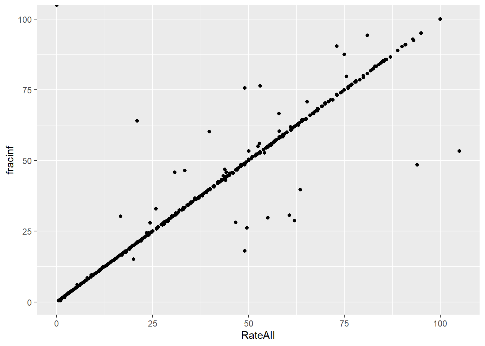
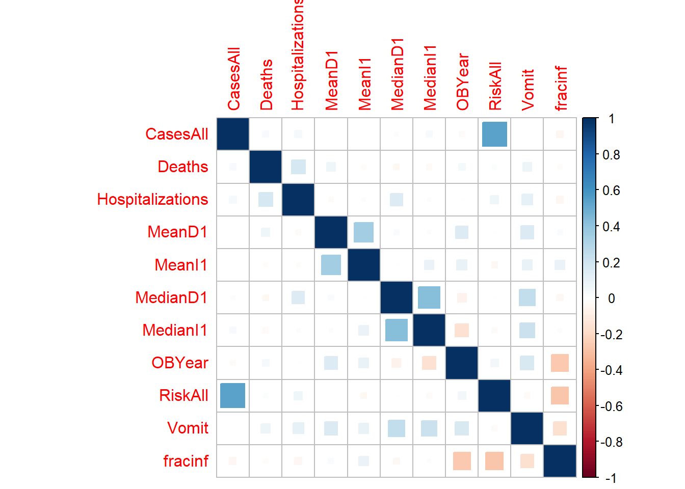

Continuous Outcome Analysis
Jonathan Wilson
2019-10-26
Overview
This document will guide you through a few data analysis and model fitting tasks.
Below, I provide commentary and instructions, and you are expected to write all or some of the missing code to perform the steps I describe.
Note that I call the main data variable d. So if you see bits of code with that variable, it is the name of the data. You are welcome to give it different names, then just adjust the code snippets accordingly.
Project setup
We need a variety of different packages, which are loaded here. Install as needed. If you use others, load them here.
##
## Attaching package: 'dplyr'## The following objects are masked from 'package:stats':
##
## filter, lag## The following objects are masked from 'package:base':
##
## intersect, setdiff, setequal, unionlibrary('forcats')
library('ggplot2')
library('corrplot') #to make a correlation plot. You can use other options/packages.## corrplot 0.84 loaded## Loading required package: lattice## Loading required package: Formula## Loading required package: plotmo## Loading required package: plotrix## Loading required package: TeachingDemosData loading
We will be exploring and fitting a dataset of norovirus outbreaks. You can look at the codebook, which briefly explains the meaning of each variable. If you are curious, you can check some previous papers that we published using (slighly different versions of) this dataset here and here.
#Write code that loads the dataset and does a quick check to make sure the data loaded ok (using e.g. `str` and `summary` or similar such functions).
norodata_raw <- read.csv("./norodata.csv")
glimpse(norodata_raw)## Observations: 1,022
## Variables: 139
## $ id <int> 2, 17, 39, 40, 41, 42, 43, 44, 67, 74, 7...
## $ Author <fct> Akihara, Becker, Boxman, Boxman, Boxman,...
## $ Pub_Year <int> 2005, 2000, 2009, 2009, 2009, 2009, 2009...
## $ pubmedid <int> 15841336, 11071673, 19205471, 19205471, ...
## $ EpiCurve <fct> Y, Y, N, N, N, N, N, N, N, N, Y, Y, Y, Y...
## $ TDComment <fct> , , , , , , , , , , , , , , , , , , , No...
## $ AHComment <fct> , , , , , , , , , , , , , , , , , , , , ...
## $ Trans1 <fct> Unspecified, Foodborne, Foodborne, Foodb...
## $ Trans1_O <int> 0, 0, 0, 0, 0, 0, 0, 0, 0, 0, 0, 0, 0, 0...
## $ Trans2 <fct> (not applicable), Person to Person, ...
## $ Trans2_O <fct> 0, 0, 0, 0, 0, 0, 0, 0, 0, 0, 0, 0, 0, 0...
## $ Trans3 <fct> (not applicable), (not applicable), ...
## $ Trans3_O <fct> 0, 0, 0, 0, 0, 0, 0, 0, 0, 0, 0, 0, 0, 0...
## $ Risk1 <dbl> 0.00000, 108.00000, 130.00000, 4.00000, ...
## $ Risk2 <dbl> NA, NA, NA, NA, NA, NA, NA, NA, NA, NA, ...
## $ RiskAll <dbl> 0.00000, 108.00000, 130.00000, 4.00000, ...
## $ Cases1 <int> 15, 43, 27, 4, 15, 6, 40, 10, 116, 45, 1...
## $ Cases2 <int> NA, 22, NA, NA, NA, NA, NA, NA, NA, NA, ...
## $ CasesAll <int> 15, 65, 27, 4, 15, 6, 40, 10, 116, 45, 1...
## $ Rate1 <dbl> NA, 39.814815, 20.769231, 100.000000, 60...
## $ Rate2 <dbl> NA, NA, NA, NA, NA, NA, NA, NA, NA, NA, ...
## $ RateAll <dbl> 0.000000, 39.814815, 20.769231, 100.0000...
## $ Hospitalizations <int> 0, 0, 0, 0, 0, 0, 0, 0, 5, 10, 3, 0, 0, ...
## $ Deaths <int> 0, 0, 0, 0, 0, 0, 0, 0, 0, 0, 0, 0, 0, 0...
## $ Vehicle_1 <fct> 0, Boxed Lunch, 0, 0, 0, 0, 0, 0, 0, Oys...
## $ Veh1 <fct> Unspecified, Yes, Unspecified, Unspecifi...
## $ Veh1_D_1 <fct> 0, Turkey Sandwich in boxed lunch, 0, 0,...
## $ Veh2 <fct> No, Yes, No, No, No, No, No, No, No, No,...
## $ Veh2_D_1 <fct> 0, Football players, 0, 0, 0, 0, 0, 0, 0...
## $ Veh3 <fct> No, No, No, No, No, No, No, No, No, No, ...
## $ Veh3_D_1 <fct> 0, 0, 0, 0, 0, 0, 0, 0, 0, 0, 0, 0, 0, 0...
## $ PCRSect <fct> Capsid, Polymerase, Both, Both, Both, Bo...
## $ OBYear <fct> 1999, 1998, 2006, 2006, 2006, 2006, 2006...
## $ Hemisphere <fct> Northern, Northern, Northern, Northern, ...
## $ season <fct> Fall, Fall, Fall, Fall, Fall, Fall, Fall...
## $ MeanI1 <int> 0, 0, 0, 0, 0, 0, 0, 0, 0, 0, 0, 0, 0, 0...
## $ MedianI1 <int> 0, 37, 0, 0, 0, 0, 0, 0, 0, 31, 34, 33, ...
## $ Range_S_I1 <dbl> 0, 0, 0, 0, 0, 0, 0, 0, 0, 2, 0, 6, 0, 0...
## $ Range_L_I1 <dbl> 0, 0, 0, 0, 0, 0, 0, 0, 0, 69, 0, 96, 0,...
## $ MeanD1 <dbl> 0, 0, 0, 0, 0, 0, 0, 0, 0, 0, 0, 0, 24, ...
## $ MedianD1 <dbl> 0, 36, 0, 0, 0, 0, 0, 0, 0, 48, 37, 24, ...
## $ Range_S_D1 <dbl> 0, 0, 0, 0, 0, 0, 0, 0, 0, 10, 0, 5, 4, ...
## $ Range_L_D1 <int> 0, 0, 0, 0, 0, 0, 0, 0, 0, 168, 0, 120, ...
## $ MeanA1 <dbl> NA, NA, NA, NA, NA, NA, NA, NA, NA, NA, ...
## $ MedianA1 <dbl> NA, NA, NA, NA, NA, NA, NA, NA, NA, NA, ...
## $ Range_Y_A1 <fct> 0.75, 0, 0, 0, 0, 0, 0, 0, 0, 0, 0, 0, 0...
## $ Range_O_A1 <dbl> 2, 0, 0, 0, 0, 0, 0, 0, 0, 0, 0, 0, 0, 0...
## $ Action1 <fct> Unspecified, Unspecified, Unspecified, U...
## $ Action2_1 <fct> "0", "0", "0", "0", "0", "0", "0", "0", ...
## $ Secondary <fct> No, Yes, No, No, No, No, No, No, No, No,...
## $ MeanI2 <int> 0, 0, 0, 0, 0, 0, 0, 0, 0, 0, 0, 0, 0, 0...
## $ MedianI2 <int> 0, 0, 0, 0, 0, 0, 0, 0, 0, 0, 0, 0, 0, 0...
## $ Range_S_I2 <int> 0, 0, 0, 0, 0, 0, 0, 0, 0, 0, 0, 0, 0, 0...
## $ Range_L_I2 <int> 0, 0, 0, 0, 0, 0, 0, 0, 0, 0, 0, 0, 0, 0...
## $ MeanD2 <int> 0, 0, 0, 0, 0, 0, 0, 0, 0, 0, 0, 0, 0, 0...
## $ MedianD2 <int> 0, 0, 0, 0, 0, 0, 0, 0, 0, 0, 0, 0, 0, 0...
## $ Range_S_D2 <int> 0, 0, 0, 0, 0, 0, 0, 0, 0, 0, 0, 0, 0, 0...
## $ Range_L_D2 <int> 0, 0, 0, 0, 0, 0, 0, 0, 0, 0, 0, 0, 0, 0...
## $ Mea.2 <int> 0, 0, 0, 0, 0, 0, 0, 0, 0, 0, 0, 0, 0, 0...
## $ Media.2 <int> 0, 0, 0, 0, 0, 0, 0, 0, 0, 0, 0, 0, 0, 0...
## $ Range_Y_A2 <int> 0, 0, 0, 0, 0, 0, 0, 0, 0, 0, 0, 0, 0, 0...
## $ Range_O_A2 <int> 0, 0, 0, 0, 0, 0, 0, 0, 0, 0, 0, 0, 0, 0...
## $ Comments_1 <fct> "Outbreak took place during a study on g...
## $ Path1 <fct> No, No, Unspecified, Unspecified, Unspec...
## $ Path2_1 <fct> 0, 0, 0, 0, 0, 0, 0, 0, 0, 0, 0, 0, 0, 0...
## $ Country <fct> Japan, USA, Other, Other, Other, Other, ...
## $ Category <fct> Daycare, Foodservice, Foodservice, Foods...
## $ State <fct> "0", "NC, FL", "0", "0", "0", "0", "0", ...
## $ Setting_1 <fct> "Daycare Center", "Boxed lunch, football...
## $ StartMonth <int> 11, 9, 9, 10, 11, 11, 11, 11, 11, 11, 11...
## $ EndMonth <int> 12, 9, 0, 0, 0, 0, 0, 0, 11, 11, 11, 11,...
## $ GGA <int> 2, 1, 2, 0, 2, 0, 0, 0, 2, 0, 0, 0, 0, 0...
## $ CA <int> 4, 0, 4, 0, 4, 0, 0, 0, 4, 0, 0, 0, 0, 0...
## $ SA <fct> Lordsdale, Thistle Hall 1/91, GII.4 2006...
## $ new_GGA <int> 0, 0, 0, 0, 0, 0, 0, 0, 0, 0, 0, 0, 0, 0...
## $ new_CA <int> 0, 0, 0, 0, 0, 0, 0, 0, 0, 0, 0, 0, 0, 0...
## $ new_SA <fct> 0, 0, 0, 0, 0, 0, 0, 0, 0, 0, 0, 0, 0, 0...
## $ SA_resolved_from <fct> , , , , , , , , , , , , , , , , , , , Zh...
## $ GGB <int> 0, 0, 0, 0, 0, 0, 0, 0, 0, 0, 0, 0, 0, 0...
## $ CB <fct> 0, 0, 0, 0, 0, 0, 0, 0, 0, 0, 0, 0, 0, 0...
## $ SB <fct> 0, 0, 0, 0, 0, 0, 0, 0, 0, 0, 0, 0, 0, 0...
## $ new_GGB <int> 0, 0, 0, 0, 0, 0, 0, 0, 0, 0, 0, 0, 0, 0...
## $ new_CB <int> 0, 0, 0, 0, 0, 0, 0, 0, 0, 0, 0, 0, 0, 0...
## $ new_SB <fct> 0, 0, 0, 0, 0, 0, 0, 0, 0, 0, 0, 0, 0, 0...
## $ SB_resolved_from <fct> , , , , , , , , , , , , , , , , , , http...
## $ GGC <int> 0, 0, 0, 0, 0, 0, 0, 0, 0, 0, 0, 0, 0, 0...
## $ CC <int> 0, 0, 0, 0, 0, 0, 0, 0, 0, 0, 0, 0, 0, 0...
## $ SC <fct> 0, 0, 0, 0, 0, 0, 0, 0, 0, 0, 0, 0, 0, 0...
## $ new_ggc <int> 0, 0, 0, 0, 0, 0, 0, 0, 0, 0, 0, 0, 0, 0...
## $ new_cc <int> 0, 0, 0, 0, 0, 0, 0, 0, 0, 0, 0, 0, 0, 0...
## $ new_sc <fct> 0, 0, 0, 0, 0, 0, 0, 0, 0, 0, 0, 0, 0, 0...
## $ SC_resolved_from <fct> , , , , , , , , , , , , , , , , , , , , ...
## $ GGD <int> 0, 0, 0, 0, 0, 0, 0, 0, 0, 0, 0, 0, 0, 0...
## $ CD <fct> 0, 0, 0, 0, 0, 0, 0, 0, 0, 0, 0, 0, 0, 0...
## $ SD <fct> 0, 0, 0, 0, 0, 0, 0, 0, 0, 0, 0, 0, 0, 0...
## $ new_ggd <int> 0, 0, 0, 0, 0, 0, 0, 0, 0, 0, 0, 0, 0, 0...
## $ new_cd <int> 0, 0, 0, 0, 0, 0, 0, 0, 0, 0, 0, 0, 0, 0...
## $ new_sd <int> 0, 0, 0, 0, 0, 0, 0, 0, 0, 0, 0, 0, 0, 0...
## $ SD_resolved_from <lgl> NA, NA, NA, NA, NA, NA, NA, NA, NA, NA, ...
## $ StrainOther <fct> "0", "0", "0", "0", "0", "0", "0", "0", ...
## $ strainother_rc <fct> 0, 0, 0, 0, 0, 0, 0, 0, 0, 0, 0, 0, 0, 0...
## $ gge <fct> 0, 0, 0, 0, 0, 0, 0, 0, 2, 0, 0, 0, 0, 0...
## $ ce <int> 0, 0, 0, 0, 0, 0, 0, 0, 4, 0, 0, 0, 0, 0...
## $ se <fct> 0, 0, 0, 0, 0, 0, 0, 0, GII.4a 2004, 0, ...
## $ SE_resolved_from <fct> , , , , , , , , abstraction of StrainOth...
## $ ggf <int> 0, 0, 0, 0, 0, 0, 0, 0, 0, 0, 0, 0, 0, 0...
## $ cf <int> 0, 0, 0, 0, 0, 0, 0, 0, 0, 0, 0, 0, 0, 0...
## $ sf <fct> 0, 0, 0, 0, 0, 0, 0, 0, 0, 0, 0, 0, 0, 0...
## $ ggg <int> 0, 0, 0, 0, 0, 0, 0, 0, 0, 0, 0, 0, 0, 0...
## $ cg <int> 0, 0, 0, 0, 0, 0, 0, 0, 0, 0, 0, 0, 0, 0...
## $ sg <fct> 0, 0, 0, 0, 0, 0, 0, 0, 0, 0, 0, 0, 0, 0...
## $ ggh <int> 0, 0, 0, 0, 0, 0, 0, 0, 0, 0, 0, 0, 0, 0...
## $ ch <int> 0, 0, 0, 0, 0, 0, 0, 0, 0, 0, 0, 0, 0, 0...
## $ sh <fct> 0, 0, 0, 0, 0, 0, 0, 0, 0, 0, 0, 0, 0, 0...
## $ ggi <int> 0, 0, 0, 0, 0, 0, 0, 0, 0, 0, 0, 0, 0, 0...
## $ ci <int> 0, 0, 0, 0, 0, 0, 0, 0, 0, 0, 0, 0, 0, 0...
## $ si <fct> 0, 0, 0, 0, 0, 0, 0, 0, 0, 0, 0, 0, 0, 0...
## $ ggj <int> 0, 0, 0, 0, 0, 0, 0, 0, 0, 0, 0, 0, 0, 0...
## $ cj <int> 0, 0, 0, 0, 0, 0, 0, 0, 0, 0, 0, 0, 0, 0...
## $ sj <fct> 0, 0, 0, 0, 0, 0, 0, 0, 0, 0, 0, 0, 0, 0...
## $ Country2 <fct> "0", "0", "The Netherlands", "The Nether...
## $ Veh1_D_2 <fct> "0", "Boxed Lunch", "0", "0", "0", "0", ...
## $ Veh2_D_2 <fct> 0, 0, 0, 0, 0, 0, 0, 0, 0, 0, 0, 0, 0, 0...
## $ Veh3_D_2 <fct> 0, 0, 0, 0, 0, 0, 0, 0, 0, 0, 0, 0, 0, 0...
## $ Action2_2 <fct> "0", "0", "0", "0", "0", "0", "0", "0", ...
## $ Comments_2 <fct> "Limited data", "0", "Outbreak 19 of 26 ...
## $ Path2_2 <fct> 0, 0, 0, 0, 0, 0, 0, 0, 0, 0, 0, 0, 0, 0...
## $ Setting_2 <fct> 0, 0, Buffet, Restaurant, Buffet, take o...
## $ category1 <fct> School/Daycare, Foodservice, Foodservice...
## $ strainothergg2c4 <int> 0, 0, 0, 0, 0, 0, 0, 0, 0, 0, 0, 0, 0, 0...
## $ gg2c4 <fct> Yes, , Yes, , Yes, , , , Yes, , , , , , ...
## $ Vomit <int> 1, 1, 1, 1, 1, 1, 1, 1, 1, 1, 1, 1, 1, 1...
## $ IncInd <int> 0, 0, 0, 0, 0, 0, 0, 0, 0, 0, 0, 0, 0, 0...
## $ SymInd <int> 0, 0, 0, 0, 0, 0, 0, 0, 0, 0, 0, 0, 0, 0...
## $ PooledLat <dbl> 0, 37, 0, 0, 0, 0, 0, 0, 0, 31, 34, 33, ...
## $ PooledSym <int> 0, 36, 0, 0, 0, 0, 0, 0, 0, 48, 37, 24, ...
## $ PooledAge <dbl> 0, 0, 0, 0, 0, 0, 0, 0, 0, 0, 0, 0, 0, 0...
## $ IndividualLatent <lgl> NA, NA, NA, NA, NA, NA, NA, NA, NA, NA, ...
## $ IndividualSymptomatic <fct> , , , , , , , , , , , , , , , , , , , , ...Data exploration and cleaning
Investigating the outcome of interest
Let’s assume that our main outcome of interest is the fraction of individuals that become infected in a given outbreak. The data reports that outcome (called RateAll), but we’ll also compute it ourselves so that we can practice creating new variables. To do so, take a look at the data (maybe peek at the Codebook) and decide which of the existing variables you should use to compute the new one. This new outcome variable will be added to the data frame.
# Use the `mutate()` function from the `dplyr` package to create a new column with this value. Call the new variable `fracinf`.
norodata_plusrate <- norodata_raw %>% dplyr::mutate(fracinf = (CasesAll/RiskAll)*100)
#to calculate rateall we need riskall(total number of persons at risk of being a primary or secondary case) and casesall(totall number of primary and secondary cases)Note the notation dplyr:: in front of mutate. This is not strictly necessary, but it helps in 2 ways. First, this tells the reader explicitly from which package the function comes. This is useful for quickly looking at the help file of the function, or if we want to adjust which packages are loaded/used. It also avoids occasional confusion if a function exists more than once (e.g. filter exists both in the stats and dplyr package). If the package is not specified, R takes the function from the package that was loaded last. This can sometimes produce strange error messages. I thus often (but not always) write the package name in front of the function.
As you see in the Rmd file, the previous text box is created by placing texts between the ::: symbols and specifying some name. This allows you to apply your own styling to specific parts of the text. You define your style in a css file (here called customstyles.css), and you need to list that file in the _site.yml file. The latter file also lets you change the overall theme. You can choose from the library of free Bootswatch themes.
Use both text summaries and plots to take a look at the new variable you created to see if everything looks ok or if we need further cleaning.
## num [1:1022] Inf 60.2 20.8 100 60 ...## num [1:1022] Inf 60.2 20.8 100 60 ...## Min. 1st Qu. Median Mean 3rd Qu. Max. NA's
## 0.3995 28.8324 63.0789 Inf Inf Inf 120## [1] Inf 60.18519 20.76923 100.00000 60.00000 75.00000## [1] Inf 60.1851852 20.7692308 100.0000000 60.0000000
## [6] 75.0000000 83.3333333 52.7272727 63.0000000 37.5245580
## [11] 52.7777778 12.6153846 3.4239415 38.4375000 4.8708333
## [16] 60.3773585 43.0000000 34.2105263 53.8461538 32.5925926
## [21] 50.4424779 31.3253012 32.7586207 45.7774799 70.8333333
## [26] 7.7222222 62.2641509 30.3291536 69.2307692 52.1739130
## [31] 50.0000000 48.5436893 14.8437500 95.0000000 51.3513514
## [36] 37.5000000 39.6907216 8.8430361 34.3750000 15.1515152
## [41] 76.0000000 64.0000000 31.2500000 94.2857143 39.3364929
## [46] 4.1666667 3.8461538 2.9411765 75.6756757 27.8941566
## [51] 34.1463415 7.1895425 17.6470588 70.2702703 28.1690141
## [56] 17.8571429 66.6666667 39.5348837 36.3636364 15.6666667
## [61] 76.7123288 21.6363636 10.2857143 36.3128492 9.8214286
## [66] 9.4445935 9.6287531 1.2748151 12.8654971 16.6666667
## [71] 71.5000000 18.7221397 34.2592593 30.4225352 16.7931281
## [76] 23.6811927 9.0702087 11.6597725 2.5242718 11.1111111
## [81] 11.2676056 24.0740741 21.5384615 28.0373832 18.0327869
## [86] 39.7590361 36.6197183 11.4352392 14.1274238 NA
## [91] 10.7692308 10.0000000 3.0303030 88.8888889 9.8182884
## [96] 85.7142857 82.6086957 11.5384615 39.2405063 48.6486486
## [101] 79.3103448 57.8947368 28.1347962 6.0856865 56.6371681
## [106] 37.6621565 37.2137405 51.7857143 59.1836735 52.2556391
## [111] 33.3333333 40.6779661 78.2608696 49.0000000 19.6428571
## [116] 56.0000000 61.5384615 48.3333333 56.3380282 28.6725664
## [121] 42.8571429 40.8291457 40.9090909 80.0000000 48.4974775
## [126] 74.0740741 41.1764706 58.3333333 28.3018868 25.0000000
## [131] 62.5000000 35.2941176 42.4242424 63.1578947 90.9090909
## [136] 24.4604317 31.3915858 46.8599034 54.7619048 42.0000000
## [141] 13.3333333 36.2500000 63.3333333 71.4285714 44.4444444
## [146] 81.8181818 76.3157895 41.8918919 63.0000000 6.2666667
## [151] 64.8936170 16.0000000 22.2222222 2.1739130 12.5000000
## [156] 5.5555556 3.1250000 64.2857143 52.9411765 24.4755245
## [161] 10.9601449 47.2222222 49.0272374 74.3243243 40.0000000
## [166] 55.5555556 42.5531915 43.5483871 22.0000000 55.4770318
## [171] 28.8135593 51.6853933 24.8470012 32.7272727 18.8888889
## [176] 58.4000000 82.2222222 38.8888889 30.0000000 16.7741935
## [181] 28.4000000 24.4791667 39.0804598 0.5055977 30.8823529
## [186] 0.7537688 22.9437229 32.9113924 3.7000000 23.8649593
## [191] 70.0000000 38.0952381 24.5000000 3.3000000 44.5255474
## [196] 13.6363636 76.9230769 20.0000000 10.4249142 67.1428571
## [201] 4.5454545 55.0000000 84.0000000 33.0000000 7.2444444
## [206] 28.7305122 48.4848485 6.0606061 54.9450549 30.6149733
## [211] 28.8888889 92.8571429 6.0000000 16.8181818 14.9171271
## [216] 26.4150943 33.0000000 19.9376947 27.3333333 3.4075295
## [221] 24.2424242 18.1818182 38.4615385 24.6153846 5.7857143
## [226] 9.4444444 35.0364964 73.0769231 56.6037736 20.8805031
## [231] 1.8625127 47.8260870 30.3571429 30.9523810 27.5000000
## [236] 53.3742331 44.2231076 43.2098765 45.7777778 52.3809524
## [241] 77.7777778 21.1111111 22.6683938 48.1481481 28.0423280
## [246] 61.9200000 38.7218045 20.8545495 27.1764706 85.2941176
## [251] 80.7692308 43.3333333 6.5604499 68.1818182 13.3000000
## [256] 68.4210526 75.5555556 45.5696203 57.1428571 64.7058824
## [261] 64.4067797 44.1558442 90.3225806 12.1661721 46.4285714
## [266] 61.1111111 62.9629630 31.5789474 34.8101266 43.1578947
## [271] 59.3750000 54.5454545 39.4636015 50.7109005 17.9389313
## [276] 47.5000000 87.5000000 52.5925926 78.5714286 44.8275862
## [281] 37.2093023 46.6666667 32.4324324 86.6666667 73.3333333
## [286] 60.7142857 48.8888889 25.8064516 12.2448980 28.5714286
## [291] 51.9230769 42.0000000 2.7914286 18.1855333 58.3941606
## [296] 7.0652174 64.0232108 61.9718310 62.6506024 79.7872340
## [301] 8.0000000 84.6153846 46.8227425 57.3770492 44.5054945
## [306] 44.8051948 45.6521739 14.0495868 30.1204819 13.0620985
## [311] 1.5584416 8.2644628 2.1052632 8.9743590 3.5294118
## [316] 4.8780488 1.3793103 2.6315789 1.2765957 2.5641026
## [321] 3.5714286 13.5593220 7.3170732 19.0476190 19.5121951
## [326] 2.7272727 3.2051282 1.6216216 3.0864198 35.4838710
## [331] 2.5316456 2.2222222 4.3478261 13.8461538 29.3577982
## [336] 2.3529412 11.7647059 2.7027027 3.6363636 5.9405941
## [341] 7.0588235 3.7878788 9.0909091 3.9473684 6.1224490
## [346] 36.3247863 30.3418803 36.5384615 26.2357414 56.1728395
## [351] 26.1016949 7.8549849 31.0344828 62.0689655 43.2835821
## [356] 31.3559322 27.4509804 16.3763066 29.7157623 67.6470588
## [361] 56.8000000 22.8571429 11.5793331 4.1555116 1.7077799
## [366] 43.8596491 12.1495327 49.4145199 20.3956344 20.8333333
## [371] 21.0526316 6.2937063 22.4137931 7.6923077 0.4074074
## [376] 20.6896552 12.9870130 19.3548387 9.6153846 7.5000000
## [381] 17.7419355 4.9180328 23.4375000 11.6531165 31.0185185
## [386] 90.4761905 14.6131805 21.9000000 8.9000000 17.5000000
## [391] 76.4705882 75.6097561 12.3926380 5.3495763 7.7657935
## [396] 5.6394763 56.0975610 29.7872340 64.1791045 10.7142857
## [401] 4.0154440 36.7469880 8.4611578 8.1889324 3.0435500
## [406] 0.3994807 3.0672079 30.1762115 1.6380016 27.8571429
## [411] 21.2328767 31.1111111 92.5373134 30.7692308 35.0000000
## [416] 26.1224490 66.0000000 53.3333333 44.0000000 17.0000000
## [421] 45.4545455 15.3946510#looking at the values we have both NA and infinite represented
norodata_plusrate %>% ggplot() + geom_histogram(aes(x=fracinf))## `stat_bin()` using `bins = 30`. Pick better value with `binwidth`.## Warning: Removed 443 rows containing non-finite values (stat_bin).#Write code that takes a look at the values of the `fracinf` variable you created. Look at both text summaries and a figure.
norodata_plusrate %>% ggplot() + geom_histogram(aes(x=RateAll))## `stat_bin()` using `bins = 30`. Pick better value with `binwidth`.## Warning: Removed 108 rows containing non-finite values (stat_bin).We notice there are NAs in this variable and the distribution is not normal. The latter is somewhat expected since our variable is a proportion, so it has to be between 0 and 1. There are also a lot of infinite values. Understand where they come from.
Let’s take a look at the RateAll variable recorded in the dataset and compare it to ours. First, create a plot that lets you quickly see if/how the variables differ.
## Warning: Removed 120 rows containing missing values (geom_point).
## Warning: Removed 120 rows containing missing values (geom_point).# Plot one variable on the x axis, the other on the y axis
# also plot the difference of the 2 variables
# make sure you adjust so both are in the same unitsBoth ways of plotting the data show that for most outbreaks, the two ways of getting the outcome agree. So that’s good. But we need to look closer and resolve the problem with infinite values above. Check to see what the RateAll variable has for those infinite values.
#Write code that looks at the values of RateAll where we have inifinite values
infinity <- subset(norodata_plusrate, fracinf %in% "Inf")
print(infinity)## id Author Pub_Year pubmedid EpiCurve
## 1 2 Akihara 2005 15841336 Y
## 11 75 CDC 1993 8246858 Y
## 14 83 CDC 2002 12530708 Y
## 21 116 Dingle 2004 15364974 N
## 22 117 Dingle 2004 15364974 N
## 23 118 Dingle 2004 15364974 N
## 24 119 Dingle 2004 15364974 N
## 25 120 Dingle 2004 15364974 N
## 26 121 Dingle 2004 15364974 N
## 27 122 Dingle 2004 15364974 N
## 28 123 Dingle 2004 15364974 N
## 29 124 Dingle 2004 15364974 N
## 30 125 Dingle 2004 15364974 N
## 31 126 Dingle 2004 15364974 N
## 32 131 Dingle 2004 15364974 N
## 33 132 Dingle 2004 15364974 N
## 34 139 Dowell 1995 7769284 Y
## 36 147 Farkas 2002 12116006 N
## 37 149 Ferreira 2008 18098155 Y
## 38 165 Girish 2002 12116011 N
## 39 166 Goller 2004 15108754 N
## 44 201 Hamano 2005 16121370 N
## 50 275 Iritani 2000 10878058 N
## 55 364 Kageyama 2004 15243049 N
## 63 403 Le Guyader 2004 15541804 N
## 67 410 Love 2002 12211579 Y
## 68 412 Lynn 2004 15014560 Y
## 69 418 Lysen 2009 19494060 N
## 70 419 Lysen 2009 19494060 N
## 71 420 Lysen 2009 19494060 N
## 72 421 Lysen 2009 19494060 N
## 73 422 Lysen 2009 19494060 N
## 74 424 Lysen 2009 19494060 N
## 75 426 Lysen 2009 19494060 N
## 76 427 Lysen 2009 19494060 N
## 77 432 Lysen 2009 19494060 N
## 78 445 Lysen 2009 19494060 N
## 79 446 Lysen 2009 19494060 N
## 80 447 Lysen 2009 19494060 N
## 81 464 Lysen 2009 19494060 N
## 82 465 Lysen 2009 19494060 N
## 83 466 Lysen 2009 19494060 N
## 84 471 Lysen 2009 19494060 N
## 85 472 Lysen 2009 19494060 N
## 88 482 Mattner 2006 16460549 N
## 91 543 O'Neill 2001 11511325 N
## 92 549 O'Neill 2001 11511325 N
## 98 622 Reuter 2002 19345441 N
## 99 631 Reuter 2002 12226827 N
## 104 647 Sala 2009 18667107 N
## 115 750 Verbelen 2004 15065694 Y
## 119 795 White 2002 12210438 N
## 120 796 White 2002 12210438 N
## 151 901 Gaulin 1999 10694160
## 169 11 Baert 2009 19134230 N
## 175 66 Calderon-Margalit 2005 15724708 Y
## 176 71 Cauchi 1996 8732863 N
## 177 72 Cauchi 1996 8732863 N
## 179 81 CDC 2002 12064451 N
## 183 92 CDC 2006 16617287 Y
## 184 104 Chatterjee 2004 15095203 N
## 186 110 Cooper 2005 15796276 Y
## 187 112 Cunha 2008 18621444 N
## 189 135 Dingle 2004 15364974 N
## 190 136 Dingle 2004 15364974 N
## 191 137 Dingle 2004 15364974 N
## 193 151 Fretz 2003 14517725 Y
## 194 159 Fretz 2005 15962549 Y
## 199 175 Halperin 2005 16231127 N
## 200 177 Halperin 2005 16231127 N
## 204 190 Hamano 2005 16121370 N
## 206 205 Hamano 2005 16121370 N
## 210 224 Hamano 2005 16121370 N
## 215 255 Iritani 2000 10878058 N
## 218 271 Iritani 2000 10878058 N
## 220 273 Iritani 2000 10878058 N
## 221 281 Iritani 2000 10878058 N
## 227 303 Iritani 2008 18495859 N
## 228 304 Iritani 2008 18495859 N
## 230 306 Iritani 2008 18495859 N
## 233 309 Iritani 2008 18495859 N
## 235 311 Iritani 2008 18495859 N
## 237 313 Iritani 2008 18495859 N
## 238 314 Iritani 2008 18495859 N
## 240 316 Iritani 2008 18495859 N
## 241 317 Iritani 2008 18495859 N
## 264 397 Koo 2009 19245344 Y
## 266 402 Le Guyader 2003 12927712 N
## 268 413 Lysen 2009 19494060 N
## 269 423 Lysen 2009 19494060 N
## 270 425 Lysen 2009 19494060 N
## 271 442 Lysen 2009 19494060 N
## 272 443 Lysen 2009 19494060 N
## 273 448 Lysen 2009 19494060 N
## 274 449 Lysen 2009 19494060 N
## 275 456 Lysen 2009 19494060 N
## 276 457 Lysen 2009 19494060 N
## 277 458 Lysen 2009 19494060 N
## 278 459 Lysen 2009 19494060 N
## 279 460 Lysen 2009 19494060 N
## 280 480 Martinelli 2007 17868612 Y
## 287 503 McEvoy 1996 8990576 Y
## 290 521 kagawa-Okamoto 2009 19168964 N
## 291 524 kagawa-Okamoto 2009 19168964 N
## 293 537 Nygard 2003 14720394 N
## 294 545 O'Neill 2001 11511325 N
## 295 546 O'Neill 2001 11511325 N
## 296 547 O'Neill 2001 11511325 N
## 297 548 O'Neill 2001 11511325 N
## 309 620 Prato 2004 15383150 Y
## 310 624 Reuter 2002 12226827 N
## 315 640 Russo 1997 9324510 Y
## 316 641 Russo 1997 9324510 Y
## 317 646 Sala 2005 15724726 Y
## 319 653 Schreier 2000 10795514 N
## 320 664 Schreier 2000 10795514 N
## 321 665 Schreier 2000 10795514 N
## 322 666 Schreier 2000 10795514 N
## 323 667 Schreier 2000 10795514 N
## 324 668 Schreier 2000 10795514 N
## 333 699 Shieh 2000 10804149 N
## 342 732 Tseng 2007 17133557 N
## 343 733 Tseng 2007 17133557 N
## 352 798 White 2002 12210438 N
## 353 800 White 2002 12210438 N
## 354 803 White 2002 12210438 N
## 359 841 Yu 2007 17893314 Y
## 360 851 Borchardt 2011 20199588 Y
## 361 884 Miyoshi 2010 20093770 Y
## 387 1 Akihara 2005 15841336 Y
## 393 20 Boccia 2002 12023910 Y
## 399 36 Boxman 2009 19205471 N
## 402 47 Boxman 2009 19722414 N
## 403 49 Brugha 1999 10098798 Y
## 404 63 Bull 2005 16022784 N
## 405 69 Cauchi 1996 8732863 N
## 410 98 Chatterjee 2004 15095203 N
## 411 103 Chatterjee 2004 15095203 N
## 412 105 Chatterjee 2004 15095203 N
## 414 108 Cheng 2009 19592137 N
## 415 144 Falkenhorst 2005 16788235 N
## 416 145 Falkenhorst 2005 16788235 N
## 417 146 Falkenhorst 2005 16788235 N
## 418 148 Farkas 2002 12116006 N
## 421 164 Gilbride 2009 19193019 Y
## 423 178 Halperin 2005 16231127 N
## 424 179 Halperin 2005 16231127 N
## 429 235 Iritani 2000 10878058 N
## 430 236 Iritani 2000 10878058 N
## 434 415 Lysen 2009 19494060 N
## 435 416 Lysen 2009 19494060 N
## 436 417 Lysen 2009 19494060 N
## 437 428 Lysen 2009 19494060 N
## 438 429 Lysen 2009 19494060 N
## 439 430 Lysen 2009 19494060 N
## 440 431 Lysen 2009 19494060 N
## 441 444 Lysen 2009 19494060 N
## 442 450 Lysen 2009 19494060 N
## 443 451 Lysen 2009 19494060 N
## 444 461 Lysen 2009 19494060 N
## 445 462 Lysen 2009 19494060 N
## 446 463 Lysen 2009 19494060 N
## 447 468 Lysen 2009 19494060 N
## 448 469 Lysen 2009 19494060 N
## 449 470 Lysen 2009 19494060 N
## 451 474 Malek 2009 19025489 Y
## 453 483 Maunula 2004 15310176 N
## 460 508 Migliorati 2008 18325266 Y
## 466 625 Reuter 2002 12226827 N
## 467 626 Reuter 2002 12226827 N
## 470 648 Sartorius 2007 17454896 Y
## 485 790 Webby 2007 17366444 Y
## 487 799 White 2002 12210438 N
## 496 879 Morillo 2011 21537761 N
## 515 19 Berg 2000 10804152 Y
## 516 21 Boxman 2009 19205471 N
## 523 46 Boxman 2009 19205471 N
## 524 48 Brown 2001 11467799 Y
## 525 64 Bull 2005 16022784 N
## 533 97 Chatterjee 2004 15095203 N
## 534 99 Chatterjee 2004 15095203 N
## 535 100 Chatterjee 2004 15095203 N
## 536 101 Chatterjee 2004 15095203 N
## 537 102 Chatterjee 2004 15095203 N
## 539 114 David 2007 17883318 Y
## 541 127 Dingle 2004 15364974 N
## 542 128 Dingle 2004 15364974 N
## 543 129 Dingle 2004 15364974 N
## 544 130 Dingle 2004 15364974 N
## 545 133 Dingle 2004 15364974 N
## 546 134 Dingle 2004 15364974 N
## 548 141 Doyle 2004 15075483 Y
## 549 142 Evans 2002 12403111 N
## 553 155 Fretz 2005 15962549 Y
## 554 157 Fretz 2005 15962549 Y
## 555 158 Fretz 2005 15962549 Y
## 558 170 Green 1995 7775939 N
## 559 171 Green 1995 7775939 N
## 561 176 Halperin 2005 16231127 N
## 564 182 Hamano 2005 16121370 N
## 565 183 Hamano 2005 16121370 N
## 568 188 Hamano 2005 16121370 N
## 569 191 Hamano 2005 16121370 N
## 570 192 Hamano 2005 16121370 N
## 571 193 Hamano 2005 16121370 N
## 575 198 Hamano 2005 16121370 N
## 577 203 Hamano 2005 16121370 N
## 579 206 Hamano 2005 16121370 N
## 580 207 Hamano 2005 16121370 N
## 582 209 Hamano 2005 16121370 N
## 587 217 Hamano 2005 16121370 N
## 588 218 Hamano 2005 16121370 N
## 589 219 Hamano 2005 16121370 N
## 593 227 Hewitt 2007 17965205 Y
## 596 238 Iritani 2000 10878058 N
## 599 241 Iritani 2000 10878058 N
## 600 242 Iritani 2000 10878058 N
## 603 245 Iritani 2000 10878058 N
## 606 248 Iritani 2000 10878058 N
## 609 251 Iritani 2000 10878058 N
## 612 258 Iritani 2000 10878058 N
## 613 259 Iritani 2000 10878058 N
## 614 260 Iritani 2000 10878058 N
## 615 261 Iritani 2000 10878058 N
## 618 264 Iritani 2000 10878058 N
## 619 265 Iritani 2000 10878058 N
## 620 266 Iritani 2000 10878058 N
## 621 267 Iritani 2000 10878058 N
## 622 268 Iritani 2000 10878058 N
## 623 276 Iritani 2000 10878058 N
## 624 277 Iritani 2000 10878058 N
## 627 280 Iritani 2000 10878058 N
## 628 282 Iritani 2002 11748669 N
## 629 283 Iritani 2002 11748669 N
## 633 287 Iritani 2002 11748669 N
## 637 291 Iritani 2002 11748669 N
## 682 389 Khan 1994 8150941 N
## 683 390 Khan 2003 14529638 Y
## 684 391 Kilgore 1996 8603955 Y
## 688 400 Kuusi 2002 12211580 Y
## 689 404 Le Guyader 2006 17088365 N
## 690 405 Le Guyader 2008 18842942 N
## 691 411 Lynn 2004 15014560 Y
## 692 414 Lysen 2009 19494060 N
## 693 433 Lysen 2009 19494060 N
## 694 434 Lysen 2009 19494060 N
## 695 435 Lysen 2009 19494060 N
## 696 436 Lysen 2009 19494060 N
## 697 437 Lysen 2009 19494060 N
## 698 438 Lysen 2009 19494060 N
## 699 439 Lysen 2009 19494060 N
## 700 440 Lysen 2009 19494060 N
## 701 441 Lysen 2009 19494060 N
## 702 452 Lysen 2009 19494060 N
## 703 453 Lysen 2009 19494060 N
## 704 454 Lysen 2009 19494060 N
## 705 455 Lysen 2009 19494060 N
## 706 467 Lysen 2009 19494060 N
## 714 500 McCall 2002 12434696 Y
## 716 502 McDonnell 1997 8996048 Y
## 719 510 Miller 2002 12549523 Y
## 720 514 kagawa-Okamoto 2009 19168964 N
## 721 515 kagawa-Okamoto 2009 19168964 N
## 722 516 kagawa-Okamoto 2009 19168964 N
## 723 517 kagawa-Okamoto 2009 19168964 N
## 724 518 kagawa-Okamoto 2009 19168964 N
## 725 519 kagawa-Okamoto 2009 19168964 N
## 726 520 kagawa-Okamoto 2009 19168964 N
## 727 522 kagawa-Okamoto 2009 19168964 N
## 728 523 kagawa-Okamoto 2009 19168964 N
## 729 525 varro 2005 15796277 Y
## 735 544 O'Neill 2001 11511325 N
## 736 551 O'Neill 2001 11511325 N
## 737 554 Oogane 2008 18806360 N
## 784 611 Papadopoulos 2006 16680229 Y
## 789 621 Rao 2009 19619058 Y
## 790 623 Reuter 2002 12226827 N
## 794 643 Sakon 2005 16116265 Y
## 795 644 Sakon 2005 16116265 Y
## 796 645 Sakon 2005 16116265 Y
## 798 654 Schreier 2000 10795514 N
## 799 655 Schreier 2000 10795514 N
## 800 656 Schreier 2000 10795514 N
## 801 657 Schreier 2000 10795514 N
## 802 658 Schreier 2000 10795514 N
## 803 659 Schreier 2000 10795514 N
## 804 660 Schreier 2000 10795514 N
## 805 661 Schreier 2000 10795514 N
## 806 662 Schreier 2000 10795514 N
## 807 663 Schreier 2000 10795514 N
## 808 669 Schvoerer 1999 10549314 N
## 835 723 Simon 2006 16716968 Y
## 836 725 Stafford 1997 9375446 Y
## 843 791 Weber 2005 16276961
## 844 793 White 2002 12210438 N
## 845 794 White 2002 12210438 N
## 846 797 White 2002 12210438 N
## 847 801 White 2002 12210438 N
## 848 802 White 2002 12210438 N
## 955 50 Buesa 2002 12149342 N
## 956 51 Buesa 2002 12149342 N
## 957 52 Buesa 2002 12149342 N
## 958 53 Buesa 2002 12149342 N
## 959 54 Buesa 2002 12149342 N
## 960 55 Buesa 2002 12149342 N
## 961 56 Buesa 2002 12149342 N
## 962 57 Buesa 2002 12149342 N
## 963 58 Buesa 2002 12149342 N
## 964 59 Buesa 2002 12149342 N
## 965 60 Buesa 2002 12149342 N
## 966 61 Buesa 2002 12149342 N
## 967 62 Buesa 2002 12149342 N
## 976 724 St. Clair 2008 18721067 N
## 977 727 Tan 2008 18461617 N
## 978 728 Tan 2008 18461617 N
## 1009 852 Cheesbrough 1997 9152829 N
## 1010 866 Christensen 1998 NA N
## 1011 867 Friesema 2009 19796988 N
## 1012 868 Friesema 2009 19796988 N
## 1013 869 Friesema 2009 19796988 N
## 1014 870 Friesema 2009 19796988 N
## 1016 874 Kimura 2011 20429969 Y
## 1017 875 Kirby 2010 20637439 N
## TDComment AHComment Trans1
## 1 Unspecified
## 11 Foodborne
## 14 Unspecified
## 21 Unspecified
## 22 Unspecified
## 23 Unspecified
## 24 Unspecified
## 25 Unspecified
## 26 Unspecified
## 27 Unspecified
## 28 Unspecified
## 29 Unspecified
## 30 Unspecified
## 31 Unspecified
## 32 Unspecified
## 33 Unspecified
## 34 Not sure Foodborne
## 36 Foodborne
## 37 Unspecified
## 38 Foodborne
## 39 Unspecified
## 44 Person to Person
## 50 Unknown
## 55 Unspecified
## 63 Foodborne
## 67 Foodborne
## 68 Unspecified
## 69 Foodborne
## 70 Unspecified
## 71 Foodborne
## 72 Foodborne
## 73 Foodborne
## 74 Waterborne
## 75 Foodborne
## 76 Waterborne
## 77 Foodborne
## 78 Foodborne
## 79 Foodborne
## 80 Foodborne
## 81 Unspecified
## 82 Foodborne
## 83 Foodborne
## 84 Foodborne
## 85 Foodborne
## 88 Person to Person
## 91 Unspecified
## 92 Unspecified
## 98 Foodborne
## 99 Person to Person
## 104 Foodborne
## 115 Person to Person
## 119 Unspecified
## 120 Unspecified
## 151 Not found in folder of articles Foodborne
## 169 Foodborne
## 175 probably not usable Environmental
## 176 Unspecified
## 177 Person to Person
## 179 Person to Person
## 183 Foodborne
## 184 Foodborne
## 186 Unspecified
## 187 Unspecified
## 189 Unspecified
## 190 Unspecified
## 191 Unspecified
## 193 confirmed Person to Person
## 194 Person to Person
## 199 Unspecified
## 200 Unspecified
## 204 Foodborne
## 206 Person to Person
## 210 Person to Person
## 215 Unknown
## 218 Foodborne
## 220 Unknown
## 221 Unknown
## 227 Unknown
## 228 Foodborne
## 230 Person to Person
## 233 Person to Person
## 235 Person to Person
## 237 Person to Person
## 238 Person to Person
## 240 Person to Person
## 241 Person to Person
## 264 Person to Person
## 266 Foodborne
## 268 Unspecified
## 269 Waterborne
## 270 Foodborne
## 271 Foodborne
## 272 Foodborne
## 273 Foodborne
## 274 Unspecified
## 275 Foodborne
## 276 Foodborne
## 277 Foodborne
## 278 Foodborne
## 279 Foodborne
## 280 Not sure Waterborne
## 287 Person to Person
## 290 Foodborne
## 291 Foodborne
## 293 Waterborne
## 294 Unspecified
## 295 Unspecified
## 296 Unspecified
## 297 Unspecified
## 309 Foodborne
## 310 Waterborne
## 315 Person to Person
## 316 Person to Person
## 317 Foodborne
## 319 Unspecified
## 320 Unspecified
## 321 Unspecified
## 322 Unspecified
## 323 Unspecified
## 324 Unspecified
## 333 Foodborne
## 342 Foodborne
## 343 Foodborne
## 352 Unspecified
## 353 Unspecified
## 354 Unspecified
## 359 Unspecified
## 360 Waterborne
## 361 Unknown
## 387 confirmed Unspecified
## 393 Waterborne
## 399 Foodborne
## 402 Person to Person
## 403 Waterborne
## 404 Unspecified
## 405 Unspecified
## 410 Unknown
## 411 Person to Person
## 412 Person to Person
## 414 Person to Person
## 415 Foodborne
## 416 Foodborne
## 417 Foodborne
## 418 Person to Person
## 421 Unspecified
## 423 Unspecified
## 424 Unspecified
## 429 Unknown
## 430 Unknown
## 434 Waterborne
## 435 Foodborne
## 436 Waterborne
## 437 Foodborne
## 438 Foodborne
## 439 Foodborne
## 440 Foodborne
## 441 Foodborne
## 442 Foodborne
## 443 Waterborne
## 444 Waterborne
## 445 Unspecified
## 446 Foodborne
## 447 Waterborne
## 448 Waterborne
## 449 Waterborne
## 451 Foodborne
## 453 Waterborne
## 460 Waterborne
## 466 Unspecified
## 467 Person to Person
## 470 Waterborne
## 485 Foodborne
## 487 Unspecified
## 496 Unspecified
## 515 Foodborne
## 516 Foodborne
## 523 Foodborne
## 524 Waterborne
## 525 Unspecified
## 533 Waterborne
## 534 Person to Person
## 535 Foodborne
## 536 Person to Person
## 537 Person to Person
## 539 Foodborne
## 541 Unspecified
## 542 Unspecified
## 543 Unspecified
## 544 Unspecified
## 545 Unspecified
## 546 Unspecified
## 548 Foodborne
## 549 Environmental
## 553 Waterborne
## 554 Person to Person
## 555 Person to Person
## 558 Person to Person
## 559 Person to Person
## 561 Unspecified
## 564 Unspecified
## 565 Foodborne
## 568 Unspecified
## 569 Unspecified
## 570 Unspecified
## 571 Foodborne
## 575 Person to Person
## 577 Unspecified
## 579 Person to Person
## 580 Unspecified
## 582 Unspecified
## 587 Person to Person
## 588 Person to Person
## 589 Person to Person
## 593 Waterborne
## 596 Unknown
## 599 Foodborne
## 600 Unknown
## 603 Unknown
## 606 Foodborne
## 609 Person to Person
## 612 Foodborne
## 613 Foodborne
## 614 Unknown
## 615 Foodborne
## 618 Foodborne
## 619 Foodborne
## 620 Foodborne
## 621 Foodborne
## 622 Foodborne
## 623 Unknown
## 624 Unknown
## 627 Unknown
## 628 Foodborne
## 629 Foodborne
## 633 Unknown
## 637 Unknown
## 682 Waterborne
## 683 Person to Person
## 684 Foodborne
## 688 Person to Person
## 689 Foodborne
## 690 Foodborne
## 691 Not sure Unspecified
## 692 Waterborne
## 693 Foodborne
## 694 Foodborne
## 695 Foodborne
## 696 Foodborne
## 697 Foodborne
## 698 Foodborne
## 699 Foodborne
## 700 Foodborne
## 701 Unspecified
## 702 Unspecified
## 703 Foodborne
## 704 Foodborne
## 705 Unspecified
## 706 Foodborne
## 714 Person to Person
## 716 Unspecified
## 719 Person to Person
## 720 Foodborne
## 721 Foodborne
## 722 Foodborne
## 723 Foodborne
## 724 Foodborne
## 725 Foodborne
## 726 Foodborne
## 727 Foodborne
## 728 Foodborne
## 729 Person to Person
## 735 Unspecified
## 736 Unspecified
## 737 Foodborne
## 784 Not sure Waterborne
## 789 Person to Person
## 790 Unspecified
## 794 Person to Person
## 795 Person to Person
## 796 Unspecified
## 798 Unspecified
## 799 Unspecified
## 800 Unspecified
## 801 Unspecified
## 802 Unspecified
## 803 Unspecified
## 804 Unspecified
## 805 Unspecified
## 806 Unspecified
## 807 Unspecified
## 808 Waterborne
## 835 Unknown
## 836 Foodborne
## 843 Not found in folder of articles Person to Person
## 844 Unspecified
## 845 Unspecified
## 846 Unspecified
## 847 Unspecified
## 848 Unspecified
## 955 Unspecified
## 956 Unspecified
## 957 Unspecified
## 958 Unspecified
## 959 Unspecified
## 960 Unspecified
## 961 Unspecified
## 962 Unspecified
## 963 Unspecified
## 964 Unspecified
## 965 Unspecified
## 966 Unspecified
## 967 Unspecified
## 976 Unspecified
## 977 Foodborne
## 978 Foodborne
## 1009 Unspecified
## 1010 Not found on Pubmed Foodborne
## 1011 Unspecified
## 1012 Unspecified
## 1013 Unspecified
## 1014 Unspecified
## 1016 Environmental
## 1017 Unspecified
## Trans1_O Trans2 Trans2_O Trans3 Trans3_O
## 1 0 (not applicable) 0 (not applicable) 0
## 11 0 (not applicable) 0 (not applicable) 0
## 14 0 (not applicable) 0 (not applicable) 0
## 21 0 (not applicable) 0 (not applicable) 0
## 22 0 (not applicable) 0 (not applicable) 0
## 23 0 (not applicable) 0 (not applicable) 0
## 24 0 (not applicable) 0 (not applicable) 0
## 25 0 (not applicable) 0 (not applicable) 0
## 26 0 (not applicable) 0 (not applicable) 0
## 27 0 (not applicable) 0 (not applicable) 0
## 28 0 (not applicable) 0 (not applicable) 0
## 29 0 (not applicable) 0 (not applicable) 0
## 30 0 (not applicable) 0 (not applicable) 0
## 31 0 (not applicable) 0 (not applicable) 0
## 32 0 (not applicable) 0 (not applicable) 0
## 33 0 (not applicable) 0 (not applicable) 0
## 34 0 (not applicable) 0 (not applicable) 0
## 36 0 (not applicable) 0 (not applicable) 0
## 37 0 (not applicable) 0 (not applicable) 0
## 38 0 (not applicable) 0 (not applicable) 0
## 39 0 (not applicable) 0 (not applicable) 0
## 44 0 (not applicable) 0 (not applicable) 0
## 50 0 (not applicable) 0 (not applicable) 0
## 55 0 (not applicable) 0 (not applicable) 0
## 63 0 (not applicable) 0 (not applicable) 0
## 67 0 Person to Person 0 Environmental 0
## 68 0 (not applicable) 0 (not applicable) 0
## 69 0 (not applicable) 0 (not applicable) 0
## 70 0 (not applicable) 0 (not applicable) 0
## 71 0 (not applicable) 0 (not applicable) 0
## 72 0 (not applicable) 0 (not applicable) 0
## 73 0 (not applicable) 0 (not applicable) 0
## 74 0 (not applicable) 0 (not applicable) 0
## 75 0 (not applicable) 0 (not applicable) 0
## 76 0 (not applicable) 0 (not applicable) 0
## 77 0 (not applicable) 0 (not applicable) 0
## 78 0 (not applicable) 0 (not applicable) 0
## 79 0 (not applicable) 0 (not applicable) 0
## 80 0 (not applicable) 0 (not applicable) 0
## 81 0 (not applicable) 0 (not applicable) 0
## 82 0 (not applicable) 0 (not applicable) 0
## 83 0 (not applicable) 0 (not applicable) 0
## 84 0 (not applicable) 0 (not applicable) 0
## 85 0 (not applicable) 0 (not applicable) 0
## 88 0 (not applicable) 0 (not applicable) 0
## 91 0 (not applicable) 0 (not applicable) 0
## 92 0 (not applicable) 0 (not applicable) 0
## 98 0 (not applicable) 0 (not applicable) 0
## 99 0 (not applicable) 0 (not applicable) 0
## 104 0 (not applicable) 0 (not applicable) 0
## 115 0 (not applicable) 0 (not applicable) 0
## 119 0 (not applicable) 0 (not applicable) 0
## 120 0 (not applicable) 0 (not applicable) 0
## 151 0 (not applicable) 0 (not applicable) 0
## 169 0 (not applicable) 0 (not applicable) 0
## 175 0 Person to Person 0 (not applicable) 0
## 176 0 (not applicable) 0 (not applicable) 0
## 177 0 (not applicable) 0 (not applicable) 0
## 179 0 (not applicable) 0 (not applicable) 0
## 183 0 (not applicable) 0 (not applicable) 0
## 184 0 (not applicable) 0 (not applicable) 0
## 186 0 (not applicable) 0 (not applicable) 0
## 187 0 (not applicable) 0 (not applicable) 0
## 189 0 (not applicable) 0 (not applicable) 0
## 190 0 (not applicable) 0 (not applicable) 0
## 191 0 (not applicable) 0 (not applicable) 0
## 193 0 (not applicable) 0 (not applicable) 0
## 194 0 (not applicable) 0 (not applicable) 0
## 199 0 (not applicable) 0 (not applicable) 0
## 200 0 (not applicable) 0 (not applicable) 0
## 204 0 (not applicable) 0 (not applicable) 0
## 206 0 (not applicable) 0 (not applicable) 0
## 210 0 (not applicable) 0 (not applicable) 0
## 215 0 (not applicable) 0 (not applicable) 0
## 218 0 (not applicable) 0 (not applicable) 0
## 220 0 (not applicable) 0 (not applicable) 0
## 221 0 (not applicable) 0 (not applicable) 0
## 227 0 (not applicable) 0 (not applicable) 0
## 228 0 (not applicable) 0 (not applicable) 0
## 230 0 (not applicable) 0 (not applicable) 0
## 233 0 (not applicable) 0 (not applicable) 0
## 235 0 (not applicable) 0 (not applicable) 0
## 237 0 (not applicable) 0 (not applicable) 0
## 238 0 (not applicable) 0 (not applicable) 0
## 240 0 (not applicable) 0 (not applicable) 0
## 241 0 (not applicable) 0 (not applicable) 0
## 264 0 Environmental 0 (not applicable) 0
## 266 0 (not applicable) 0 (not applicable) 0
## 268 0 (not applicable) 0 (not applicable) 0
## 269 0 (not applicable) 0 (not applicable) 0
## 270 0 (not applicable) 0 (not applicable) 0
## 271 0 (not applicable) 0 (not applicable) 0
## 272 0 (not applicable) 0 (not applicable) 0
## 273 0 (not applicable) 0 (not applicable) 0
## 274 0 (not applicable) 0 (not applicable) 0
## 275 0 (not applicable) 0 (not applicable) 0
## 276 0 (not applicable) 0 (not applicable) 0
## 277 0 (not applicable) 0 (not applicable) 0
## 278 0 (not applicable) 0 (not applicable) 0
## 279 0 (not applicable) 0 (not applicable) 0
## 280 0 (not applicable) 0 (not applicable) 0
## 287 0 (not applicable) 0 (not applicable) 0
## 290 0 (not applicable) 0 (not applicable) 0
## 291 0 (not applicable) 0 (not applicable) 0
## 293 0 Person to Person 0 Environmental 0
## 294 0 (not applicable) 0 (not applicable) 0
## 295 0 (not applicable) 0 (not applicable) 0
## 296 0 (not applicable) 0 (not applicable) 0
## 297 0 (not applicable) 0 (not applicable) 0
## 309 0 Person to Person 0 (not applicable) 0
## 310 0 (not applicable) 0 (not applicable) 0
## 315 0 (not applicable) 0 (not applicable) 0
## 316 0 (not applicable) 0 (not applicable) 0
## 317 0 (not applicable) 0 (not applicable) 0
## 319 0 (not applicable) 0 (not applicable) 0
## 320 0 (not applicable) 0 (not applicable) 0
## 321 0 (not applicable) 0 (not applicable) 0
## 322 0 (not applicable) 0 (not applicable) 0
## 323 0 (not applicable) 0 (not applicable) 0
## 324 0 (not applicable) 0 (not applicable) 0
## 333 0 (not applicable) 0 (not applicable) 0
## 342 0 (not applicable) 0 (not applicable) 0
## 343 0 (not applicable) 0 (not applicable) 0
## 352 0 (not applicable) 0 (not applicable) 0
## 353 0 (not applicable) 0 (not applicable) 0
## 354 0 (not applicable) 0 (not applicable) 0
## 359 0 (not applicable) 0 (not applicable) 0
## 360 0 Foodborne 0 (not applicable) 0
## 361 0 (not applicable) 0 (not applicable) 0
## 387 0 (not applicable) 0 (not applicable) 0
## 393 0 Person to Person 0 (not applicable) 0
## 399 0 (not applicable) 0 (not applicable) 0
## 402 0 Environmental 0 Foodborne 0
## 403 0 Foodborne 0 (not applicable) 0
## 404 0 (not applicable) 0 (not applicable) 0
## 405 0 (not applicable) 0 (not applicable) 0
## 410 0 (not applicable) 0 (not applicable) 0
## 411 0 (not applicable) 0 (not applicable) 0
## 412 0 (not applicable) 0 (not applicable) 0
## 414 0 (not applicable) 0 (not applicable) 0
## 415 0 (not applicable) 0 (not applicable) 0
## 416 0 (not applicable) 0 (not applicable) 0
## 417 0 (not applicable) 0 (not applicable) 0
## 418 0 (not applicable) 0 (not applicable) 0
## 421 0 (not applicable) 0 (not applicable) 0
## 423 0 (not applicable) 0 (not applicable) 0
## 424 0 (not applicable) 0 (not applicable) 0
## 429 0 (not applicable) 0 (not applicable) 0
## 430 0 (not applicable) 0 (not applicable) 0
## 434 0 (not applicable) 0 (not applicable) 0
## 435 0 (not applicable) 0 (not applicable) 0
## 436 0 (not applicable) 0 (not applicable) 0
## 437 0 (not applicable) 0 (not applicable) 0
## 438 0 (not applicable) 0 (not applicable) 0
## 439 0 (not applicable) 0 (not applicable) 0
## 440 0 (not applicable) 0 (not applicable) 0
## 441 0 (not applicable) 0 (not applicable) 0
## 442 0 (not applicable) 0 (not applicable) 0
## 443 0 (not applicable) 0 (not applicable) 0
## 444 0 (not applicable) 0 (not applicable) 0
## 445 0 (not applicable) 0 (not applicable) 0
## 446 0 (not applicable) 0 (not applicable) 0
## 447 0 (not applicable) 0 (not applicable) 0
## 448 0 (not applicable) 0 (not applicable) 0
## 449 0 (not applicable) 0 (not applicable) 0
## 451 0 Environmental 0 (not applicable) 0
## 453 0 (not applicable) 0 (not applicable) 0
## 460 0 Environmental 0 (not applicable) 0
## 466 0 (not applicable) 0 (not applicable) 0
## 467 0 (not applicable) 0 (not applicable) 0
## 470 0 Person to Person 0 (not applicable) 0
## 485 0 (not applicable) 0 (not applicable) 0
## 487 0 (not applicable) 0 (not applicable) 0
## 496 0 (not applicable) 0 (not applicable) 0
## 515 0 (not applicable) 0 (not applicable) 0
## 516 0 (not applicable) 0 (not applicable) 0
## 523 0 (not applicable) 0 (not applicable) 0
## 524 0 (not applicable) 0 (not applicable) 0
## 525 0 (not applicable) 0 (not applicable) 0
## 533 0 (not applicable) 0 (not applicable) 0
## 534 0 (not applicable) 0 (not applicable) 0
## 535 0 (not applicable) 0 (not applicable) 0
## 536 0 (not applicable) 0 (not applicable) 0
## 537 0 (not applicable) 0 (not applicable) 0
## 539 0 (not applicable) 0 (not applicable) 0
## 541 0 (not applicable) 0 (not applicable) 0
## 542 0 (not applicable) 0 (not applicable) 0
## 543 0 (not applicable) 0 (not applicable) 0
## 544 0 (not applicable) 0 (not applicable) 0
## 545 0 (not applicable) 0 (not applicable) 0
## 546 0 (not applicable) 0 (not applicable) 0
## 548 0 (not applicable) 0 (not applicable) 0
## 549 0 Person to Person 0 (not applicable) 0
## 553 0 (not applicable) 0 (not applicable) 0
## 554 0 (not applicable) 0 (not applicable) 0
## 555 0 (not applicable) 0 (not applicable) 0
## 558 0 (not applicable) 0 (not applicable) 0
## 559 0 (not applicable) 0 (not applicable) 0
## 561 0 (not applicable) 0 (not applicable) 0
## 564 0 (not applicable) 0 (not applicable) 0
## 565 0 (not applicable) 0 (not applicable) 0
## 568 0 (not applicable) 0 (not applicable) 0
## 569 0 (not applicable) 0 (not applicable) 0
## 570 0 (not applicable) 0 (not applicable) 0
## 571 0 (not applicable) 0 (not applicable) 0
## 575 0 (not applicable) 0 (not applicable) 0
## 577 0 (not applicable) 0 (not applicable) 0
## 579 0 (not applicable) 0 (not applicable) 0
## 580 0 (not applicable) 0 (not applicable) 0
## 582 0 (not applicable) 0 (not applicable) 0
## 587 0 (not applicable) 0 (not applicable) 0
## 588 0 (not applicable) 0 (not applicable) 0
## 589 0 (not applicable) 0 (not applicable) 0
## 593 0 (not applicable) 0 (not applicable) 0
## 596 0 (not applicable) 0 (not applicable) 0
## 599 0 (not applicable) 0 (not applicable) 0
## 600 0 (not applicable) 0 (not applicable) 0
## 603 0 (not applicable) 0 (not applicable) 0
## 606 0 (not applicable) 0 (not applicable) 0
## 609 0 (not applicable) 0 (not applicable) 0
## 612 0 (not applicable) 0 (not applicable) 0
## 613 0 (not applicable) 0 (not applicable) 0
## 614 0 (not applicable) 0 (not applicable) 0
## 615 0 (not applicable) 0 (not applicable) 0
## 618 0 (not applicable) 0 (not applicable) 0
## 619 0 (not applicable) 0 (not applicable) 0
## 620 0 (not applicable) 0 (not applicable) 0
## 621 0 (not applicable) 0 (not applicable) 0
## 622 0 (not applicable) 0 (not applicable) 0
## 623 0 (not applicable) 0 (not applicable) 0
## 624 0 (not applicable) 0 (not applicable) 0
## 627 0 (not applicable) 0 (not applicable) 0
## 628 0 (not applicable) 0 (not applicable) 0
## 629 0 (not applicable) 0 (not applicable) 0
## 633 0 (not applicable) 0 (not applicable) 0
## 637 0 (not applicable) 0 (not applicable) 0
## 682 0 Environmental 0 Person to Person 0
## 683 0 (not applicable) 0 (not applicable) 0
## 684 0 (not applicable) 0 (not applicable) 0
## 688 0 Environmental 0 (not applicable) 0
## 689 0 (not applicable) 0 (not applicable) 0
## 690 0 (not applicable) 0 (not applicable) 0
## 691 0 (not applicable) 0 (not applicable) 0
## 692 0 (not applicable) 0 (not applicable) 0
## 693 0 (not applicable) 0 (not applicable) 0
## 694 0 (not applicable) 0 (not applicable) 0
## 695 0 (not applicable) 0 (not applicable) 0
## 696 0 (not applicable) 0 (not applicable) 0
## 697 0 (not applicable) 0 (not applicable) 0
## 698 0 (not applicable) 0 (not applicable) 0
## 699 0 (not applicable) 0 (not applicable) 0
## 700 0 (not applicable) 0 (not applicable) 0
## 701 0 (not applicable) 0 (not applicable) 0
## 702 0 (not applicable) 0 (not applicable) 0
## 703 0 (not applicable) 0 (not applicable) 0
## 704 0 (not applicable) 0 (not applicable) 0
## 705 0 (not applicable) 0 (not applicable) 0
## 706 0 (not applicable) 0 (not applicable) 0
## 714 0 (not applicable) 0 (not applicable) 0
## 716 0 (not applicable) 0 (not applicable) 0
## 719 0 (not applicable) 0 (not applicable) 0
## 720 0 (not applicable) 0 (not applicable) 0
## 721 0 (not applicable) 0 (not applicable) 0
## 722 0 (not applicable) 0 (not applicable) 0
## 723 0 (not applicable) 0 (not applicable) 0
## 724 0 (not applicable) 0 (not applicable) 0
## 725 0 (not applicable) 0 (not applicable) 0
## 726 0 (not applicable) 0 (not applicable) 0
## 727 0 (not applicable) 0 (not applicable) 0
## 728 0 (not applicable) 0 (not applicable) 0
## 729 0 (not applicable) 0 (not applicable) 0
## 735 0 (not applicable) 0 (not applicable) 0
## 736 0 (not applicable) 0 (not applicable) 0
## 737 0 (not applicable) 0 (not applicable) 0
## 784 0 (not applicable) 0 (not applicable) 0
## 789 0 (not applicable) 0 (not applicable) 0
## 790 0 (not applicable) 0 (not applicable) 0
## 794 0 (not applicable) 0 (not applicable) 0
## 795 0 (not applicable) 0 (not applicable) 0
## 796 0 (not applicable) 0 (not applicable) 0
## 798 0 (not applicable) 0 (not applicable) 0
## 799 0 (not applicable) 0 (not applicable) 0
## 800 0 (not applicable) 0 (not applicable) 0
## 801 0 (not applicable) 0 (not applicable) 0
## 802 0 (not applicable) 0 (not applicable) 0
## 803 0 (not applicable) 0 (not applicable) 0
## 804 0 (not applicable) 0 (not applicable) 0
## 805 0 (not applicable) 0 (not applicable) 0
## 806 0 (not applicable) 0 (not applicable) 0
## 807 0 (not applicable) 0 (not applicable) 0
## 808 0 (not applicable) 0 (not applicable) 0
## 835 0 (not applicable) 0 (not applicable) 0
## 836 0 (not applicable) 0 (not applicable) 0
## 843 0 Environmental 0 (not applicable) 0
## 844 0 (not applicable) 0 (not applicable) 0
## 845 0 (not applicable) 0 (not applicable) 0
## 846 0 (not applicable) 0 (not applicable) 0
## 847 0 (not applicable) 0 (not applicable) 0
## 848 0 (not applicable) 0 (not applicable) 0
## 955 0 (not applicable) 0 (not applicable) 0
## 956 0 (not applicable) 0 (not applicable) 0
## 957 0 (not applicable) 0 (not applicable) 0
## 958 0 (not applicable) 0 (not applicable) 0
## 959 0 (not applicable) 0 (not applicable) 0
## 960 0 (not applicable) 0 (not applicable) 0
## 961 0 (not applicable) 0 (not applicable) 0
## 962 0 (not applicable) 0 (not applicable) 0
## 963 0 (not applicable) 0 (not applicable) 0
## 964 0 (not applicable) 0 (not applicable) 0
## 965 0 (not applicable) 0 (not applicable) 0
## 966 0 (not applicable) 0 (not applicable) 0
## 967 0 (not applicable) 0 (not applicable) 0
## 976 0 (not applicable) 0 (not applicable) 0
## 977 0 (not applicable) 0 (not applicable) 0
## 978 0 (not applicable) 0 (not applicable) 0
## 1009 0 Environmental 0 (not applicable) 0
## 1010 0 (not applicable) 0 (not applicable) 0
## 1011 0 (not applicable) 0 (not applicable) 0
## 1012 0 (not applicable) 0 (not applicable) 0
## 1013 0 (not applicable) 0 (not applicable) 0
## 1014 0 (not applicable) 0 (not applicable) 0
## 1016 0 (not applicable) 0 (not applicable) 0
## 1017 0 (not applicable) 0 (not applicable) 0
## Risk1 Risk2 RiskAll Cases1 Cases2 CasesAll Rate1 Rate2 RateAll
## 1 0 NA 0 15 NA 15 NA NA 0
## 11 0 NA 0 180 4 184 NA NA 0
## 14 0 NA 0 704 NA 704 NA NA 0
## 21 0 NA 0 20 NA 20 NA NA 0
## 22 0 NA 0 14 NA 14 NA NA 0
## 23 0 NA 0 14 NA 14 NA NA 0
## 24 0 NA 0 22 NA 22 NA NA 0
## 25 0 NA 0 15 NA 15 NA NA 0
## 26 0 NA 0 25 NA 25 NA NA 0
## 27 0 NA 0 17 NA 17 NA NA 0
## 28 0 NA 0 13 NA 13 NA NA 0
## 29 0 NA 0 22 NA 22 NA NA 0
## 30 0 NA 0 11 NA 11 NA NA 0
## 31 0 NA 0 14 NA 14 NA NA 0
## 32 0 NA 0 25 NA 25 NA NA 0
## 33 0 NA 0 14 NA 14 NA NA 0
## 34 0 NA 0 130 16 146 NA NA 0
## 36 0 NA 0 80 NA 80 NA NA 0
## 37 0 NA 0 112 NA 112 NA NA 0
## 38 0 NA 0 130 NA 130 NA NA 0
## 39 0 NA 0 36 NA 36 NA NA 0
## 44 0 NA 0 26 NA 26 NA NA 0
## 50 0 NA 0 2 NA 2 NA NA 0
## 55 0 NA 0 21 NA 21 NA NA 0
## 63 0 NA 0 30 NA 30 NA NA 0
## 67 0 NA 0 116 NA 116 NA NA 0
## 68 0 NA 0 24 NA 24 NA NA 0
## 69 0 NA 0 70 NA 70 NA NA 0
## 70 0 NA 0 22 NA 22 NA NA 0
## 71 0 NA 0 35 NA 35 NA NA 0
## 72 0 NA 0 40 NA 40 NA NA 0
## 73 0 NA 0 15 NA 15 NA NA 0
## 74 0 NA 0 50 NA 50 NA NA 0
## 75 0 NA 0 20 NA 20 NA NA 0
## 76 0 NA 0 110 NA 110 NA NA 0
## 77 0 NA 0 50 NA 50 NA NA 0
## 78 0 NA 0 16 NA 16 NA NA 0
## 79 0 NA 0 5 NA 5 NA NA 0
## 80 0 NA 0 200 NA 200 NA NA 0
## 81 0 NA 0 50 NA 50 NA NA 0
## 82 0 NA 0 24 NA 24 NA NA 0
## 83 0 NA 0 55 NA 55 NA NA 0
## 84 0 NA 0 9 NA 9 NA NA 0
## 85 0 NA 0 21 NA 21 NA NA 0
## 88 0 NA 0 163 NA 163 NA NA 0
## 91 0 NA 0 25 NA 25 NA NA 0
## 92 0 NA 0 35 NA 35 NA NA 0
## 98 0 NA 0 80 NA 80 NA NA 0
## 99 0 NA 0 35 NA 35 NA NA 0
## 104 0 NA 0 3 NA 3 NA NA 0
## 115 0 NA 0 33 NA 33 NA NA 0
## 119 0 NA 0 11 NA 11 NA NA 0
## 120 0 NA 0 15 NA 15 NA NA 0
## 151 0 NA 0 51 NA 51 NA NA 0
## 169 0 NA 0 3 NA 3 NA NA 0
## 175 0 NA 0 279 NA 279 NA NA 0
## 176 0 NA 0 69 NA 69 NA NA 0
## 177 0 NA 0 27 NA 27 NA NA 0
## 179 0 NA 0 29 NA 29 NA NA 0
## 183 0 NA 0 28 NA 28 NA NA 0
## 184 0 NA 0 184 NA 184 NA NA 0
## 186 0 NA 0 66 NA 66 NA NA 0
## 187 0 NA 0 17 NA 17 NA NA 0
## 189 0 NA 0 16 NA 16 NA NA 0
## 190 0 NA 0 12 NA 12 NA NA 0
## 191 0 NA 0 19 NA 19 NA NA 0
## 193 0 NA 0 69 455 524 NA NA 0
## 194 0 NA 0 69 NA 69 NA NA 0
## 199 0 NA 0 276 NA 276 NA NA 0
## 200 0 NA 0 57 NA 57 NA NA 0
## 204 0 NA 0 7 NA 7 NA NA 0
## 206 0 NA 0 29 NA 29 NA NA 0
## 210 0 NA 0 26 NA 26 NA NA 0
## 215 0 NA 0 5 NA 5 NA NA 0
## 218 0 NA 0 4 NA 4 NA NA 0
## 220 0 NA 0 16 NA 16 NA NA 0
## 221 0 NA 0 14 NA 14 NA NA 0
## 227 0 NA 0 2 NA 2 NA NA 0
## 228 0 NA 0 2 NA 2 NA NA 0
## 230 0 NA 0 20 NA 20 NA NA 0
## 233 0 NA 0 114 NA 114 NA NA 0
## 235 0 NA 0 268 NA 268 NA NA 0
## 237 0 NA 0 154 NA 154 NA NA 0
## 238 0 NA 0 95 NA 95 NA NA 0
## 240 0 NA 0 41 NA 41 NA NA 0
## 241 0 NA 0 11 NA 11 NA NA 0
## 264 0 NA 0 29 NA 29 NA NA 0
## 266 0 NA 0 14 NA 14 NA NA 0
## 268 0 NA 0 25 NA 25 NA NA 0
## 269 0 NA 0 119 NA 119 NA NA 0
## 270 0 NA 0 41 NA 41 NA NA 0
## 271 0 NA 0 19 NA 19 NA NA 0
## 272 0 NA 0 14 NA 14 NA NA 0
## 273 0 NA 0 20 NA 20 NA NA 0
## 274 0 NA 0 16 NA 16 NA NA 0
## 275 0 NA 0 9 NA 9 NA NA 0
## 276 0 NA 0 9 NA 9 NA NA 0
## 277 0 NA 0 15 NA 15 NA NA 0
## 278 0 NA 0 10 NA 10 NA NA 0
## 279 0 NA 0 30 NA 30 NA NA 0
## 280 0 NA 0 2860 NA 2860 NA NA 0
## 287 0 NA 0 378 NA 378 NA NA 0
## 290 0 NA 0 12 NA 12 NA NA 0
## 291 0 NA 0 11 NA 11 NA NA 0
## 293 0 NA 0 200 NA 200 NA NA 0
## 294 0 NA 0 7 NA 7 NA NA 0
## 295 0 NA 0 70 NA 70 NA NA 0
## 296 0 NA 0 16 NA 16 NA NA 0
## 297 0 NA 0 30 NA 30 NA NA 0
## 309 0 NA 0 81 22 103 NA NA 0
## 310 0 NA 0 5 NA 5 NA NA 0
## 315 0 NA 0 60 NA 60 NA NA 0
## 316 0 NA 0 32 NA 32 NA NA 0
## 317 0 NA 0 37 3 40 NA NA 0
## 319 0 NA 0 47 NA 47 NA NA 0
## 320 0 NA 0 16 NA 16 NA NA 0
## 321 0 NA 0 8 NA 8 NA NA 0
## 322 0 NA 0 15 NA 15 NA NA 0
## 323 0 NA 0 79 NA 79 NA NA 0
## 324 0 NA 0 74 NA 74 NA NA 0
## 333 0 NA 0 171 NA 171 NA NA 0
## 342 0 NA 0 300 NA 300 NA NA 0
## 343 0 NA 0 30 NA 30 NA NA 0
## 352 0 NA 0 4 NA 4 NA NA 0
## 353 0 NA 0 39 NA 39 NA NA 0
## 354 0 NA 0 6 NA 6 NA NA 0
## 359 0 NA 0 82 NA 82 NA NA 0
## 360 0 NA 0 229 8 237 NA NA 0
## 361 0 NA 0 48 NA 48 NA NA 0
## 387 0 NA 0 5 NA 5 NA NA 0
## 393 0 NA 0 344 NA 344 NA NA 0
## 399 0 NA 0 15 NA 15 NA NA 0
## 402 0 NA 0 31 NA 31 NA NA 0
## 403 0 NA 0 134 NA 134 NA NA 0
## 404 0 NA 0 21 NA 21 NA NA 0
## 405 0 NA 0 38 NA 38 NA NA 0
## 410 0 NA 0 81 NA 81 NA NA 0
## 411 0 NA 0 23 NA 23 NA NA 0
## 412 0 NA 0 106 NA 106 NA NA 0
## 414 0 NA 0 8 NA 8 NA NA 0
## 415 0 NA 0 400 NA 400 NA NA 0
## 416 0 NA 0 40 NA 40 NA NA 0
## 417 0 NA 0 50 NA 50 NA NA 0
## 418 0 NA 0 8 NA 8 NA NA 0
## 421 0 NA 0 25 NA 25 NA NA 0
## 423 0 NA 0 12 NA 12 NA NA 0
## 424 0 NA 0 19 NA 19 NA NA 0
## 429 0 NA 0 35 NA 35 NA NA 0
## 430 0 NA 0 2 NA 2 NA NA 0
## 434 0 NA 0 74 NA 74 NA NA 0
## 435 0 NA 0 60 NA 60 NA NA 0
## 436 0 NA 0 30 NA 30 NA NA 0
## 437 0 NA 0 54 NA 54 NA NA 0
## 438 0 NA 0 63 NA 63 NA NA 0
## 439 0 NA 0 350 NA 350 NA NA 0
## 440 0 NA 0 13 NA 13 NA NA 0
## 441 0 NA 0 35 NA 35 NA NA 0
## 442 0 NA 0 18 NA 18 NA NA 0
## 443 0 NA 0 35 NA 35 NA NA 0
## 444 0 NA 0 150 NA 150 NA NA 0
## 445 0 NA 0 12 NA 12 NA NA 0
## 446 0 NA 0 9 NA 9 NA NA 0
## 447 0 NA 0 22 NA 22 NA NA 0
## 448 0 NA 0 100 NA 100 NA NA 0
## 449 0 NA 0 19 NA 19 NA NA 0
## 451 0 NA 0 137 NA 137 NA NA 0
## 453 0 NA 0 242 NA 242 NA NA 0
## 460 0 NA 0 183 NA 183 NA NA 0
## 466 0 NA 0 13 NA 13 NA NA 0
## 467 0 NA 0 8 NA 8 NA NA 0
## 470 0 NA 0 163 37 200 NA NA 0
## 485 0 NA 0 4 NA 4 NA NA 0
## 487 0 NA 0 20 NA 20 NA NA 0
## 496 0 NA 0 6390 NA 6390 NA NA 0
## 515 0 NA 0 75 NA 75 NA NA 0
## 516 0 NA 0 40 NA 40 NA NA 0
## 523 0 NA 0 35 NA 35 NA NA 0
## 524 0 NA 0 448 NA 448 NA NA 0
## 525 0 NA 0 71 NA 71 NA NA 0
## 533 0 NA 0 1450 NA 1450 NA NA 0
## 534 0 NA 0 41 NA 41 NA NA 0
## 535 0 NA 0 32150 NA 32150 NA NA 0
## 536 0 NA 0 187 NA 187 NA NA 0
## 537 0 NA 0 165 NA 165 NA NA 0
## 539 0 NA 0 79 NA 79 NA NA 0
## 541 0 NA 0 18 NA 18 NA NA 0
## 542 0 NA 0 25 NA 25 NA NA 0
## 543 0 NA 0 26 NA 26 NA NA 0
## 544 0 NA 0 9 NA 9 NA NA 0
## 545 0 NA 0 30 NA 30 NA NA 0
## 546 0 NA 0 48 NA 48 NA NA 0
## 548 0 NA 0 69 NA 69 NA NA 0
## 549 0 NA 0 310 NA 310 NA NA 0
## 553 0 NA 0 650 NA 650 NA NA 0
## 554 0 NA 0 28 NA 28 NA NA 0
## 555 0 NA 0 35 NA 35 NA NA 0
## 558 0 NA 0 50 NA 50 NA NA 0
## 559 0 NA 0 81 NA 81 NA NA 0
## 561 0 NA 0 40 NA 40 NA NA 0
## 564 0 NA 0 2 NA 2 NA NA 0
## 565 0 NA 0 3 NA 3 NA NA 0
## 568 0 NA 0 7 NA 7 NA NA 0
## 569 0 NA 0 4 NA 4 NA NA 0
## 570 0 NA 0 4 NA 4 NA NA 0
## 571 0 NA 0 13 NA 13 NA NA 0
## 575 0 NA 0 6 NA 6 NA NA 0
## 577 0 NA 0 19 NA 19 NA NA 0
## 579 0 NA 0 57 NA 57 NA NA 0
## 580 0 NA 0 52 NA 52 NA NA 0
## 582 0 NA 0 4 NA 4 NA NA 0
## 587 0 NA 0 51 NA 51 NA NA 0
## 588 0 NA 0 29 NA 29 NA NA 0
## 589 0 NA 0 64 NA 64 NA NA 0
## 593 0 NA 0 218 NA 218 NA NA 0
## 596 0 NA 0 6 NA 6 NA NA 0
## 599 0 NA 0 15 NA 15 NA NA 0
## 600 0 NA 0 26 NA 26 NA NA 0
## 603 0 NA 0 19 NA 19 NA NA 0
## 606 0 NA 0 4 NA 4 NA NA 0
## 609 0 NA 0 93 NA 93 NA NA 0
## 612 0 NA 0 8 NA 8 NA NA 0
## 613 0 NA 0 8 NA 8 NA NA 0
## 614 0 NA 0 20 NA 20 NA NA 0
## 615 0 NA 0 9 NA 9 NA NA 0
## 618 0 NA 0 32 NA 32 NA NA 0
## 619 0 NA 0 11 NA 11 NA NA 0
## 620 0 NA 0 4 NA 4 NA NA 0
## 621 0 NA 0 19 NA 19 NA NA 0
## 622 0 NA 0 4 NA 4 NA NA 0
## 623 0 NA 0 3 NA 3 NA NA 0
## 624 0 NA 0 2 NA 2 NA NA 0
## 627 0 NA 0 3 NA 3 NA NA 0
## 628 0 NA 0 6 NA 6 NA NA 0
## 629 0 NA 0 1 NA 1 NA NA 0
## 633 0 NA 0 7 NA 7 NA NA 0
## 637 0 NA 0 1 NA 1 NA NA 0
## 682 0 NA 0 295 NA 295 NA NA 0
## 683 0 NA 0 63 NA 63 NA NA 0
## 684 0 NA 0 188 NA 188 NA NA 0
## 688 0 NA 0 331 NA 331 NA NA 0
## 689 0 NA 0 329 NA 329 NA NA 0
## 690 0 NA 0 205 NA 205 NA NA 0
## 691 0 NA 0 41 NA 41 NA NA 0
## 692 0 NA 0 400 NA 400 NA NA 0
## 693 0 NA 0 103 NA 103 NA NA 0
## 694 0 NA 0 10 NA 10 NA NA 0
## 695 0 NA 0 20 NA 20 NA NA 0
## 696 0 NA 0 74 NA 74 NA NA 0
## 697 0 NA 0 120 NA 120 NA NA 0
## 698 0 NA 0 32 NA 32 NA NA 0
## 699 0 NA 0 6 NA 6 NA NA 0
## 700 0 NA 0 6 NA 6 NA NA 0
## 701 0 NA 0 35 NA 35 NA NA 0
## 702 0 NA 0 20 NA 20 NA NA 0
## 703 0 NA 0 48 NA 48 NA NA 0
## 704 0 NA 0 35 NA 35 NA NA 0
## 705 0 NA 0 15 NA 15 NA NA 0
## 706 0 NA 0 30 NA 30 NA NA 0
## 714 0 NA 0 58 NA 58 NA NA 0
## 716 0 NA 0 60 NA 60 NA NA 0
## 719 0 NA 0 281 13 294 NA NA 0
## 720 0 NA 0 5 NA 5 NA NA 0
## 721 0 NA 0 16 NA 16 NA NA 0
## 722 0 NA 0 39 NA 39 NA NA 0
## 723 0 NA 0 8 NA 8 NA NA 0
## 724 0 NA 0 5 NA 5 NA NA 0
## 725 0 NA 0 3 NA 3 NA NA 0
## 726 0 NA 0 5 NA 5 NA NA 0
## 727 0 NA 0 9 NA 9 NA NA 0
## 728 0 NA 0 19 NA 19 NA NA 0
## 729 0 NA 0 51 9 60 NA NA 0
## 735 0 NA 0 23 NA 23 NA NA 0
## 736 0 NA 0 485 NA 485 NA NA 0
## 737 0 NA 0 23 NA 23 NA NA 0
## 784 0 NA 0 709 NA 709 NA NA 0
## 789 0 NA 0 258 NA 258 NA NA 0
## 790 0 NA 0 5 NA 5 NA NA 0
## 794 0 NA 0 39 NA 39 NA NA 0
## 795 0 NA 0 105 NA 105 NA NA 0
## 796 0 NA 0 77 NA 77 NA NA 0
## 798 0 NA 0 66 NA 66 NA NA 0
## 799 0 NA 0 47 NA 47 NA NA 0
## 800 0 NA 0 93 NA 93 NA NA 0
## 801 0 NA 0 61 NA 61 NA NA 0
## 802 0 NA 0 39 NA 39 NA NA 0
## 803 0 NA 0 66 NA 66 NA NA 0
## 804 0 NA 0 27 NA 27 NA NA 0
## 805 0 NA 0 23 NA 23 NA NA 0
## 806 0 NA 0 28 NA 28 NA NA 0
## 807 0 NA 0 34 NA 34 NA NA 0
## 808 0 NA 0 6 NA 6 NA NA 0
## 835 0 NA 0 13 NA 13 NA NA 0
## 836 0 NA 0 97 NA 97 NA NA 0
## 843 0 NA 0 22 NA 22 NA NA 0
## 844 0 NA 0 200 NA 200 NA NA 0
## 845 0 NA 0 7 NA 7 NA NA 0
## 846 0 NA 0 3 NA 3 NA NA 0
## 847 0 NA 0 33 NA 33 NA NA 0
## 848 0 NA 0 33 NA 33 NA NA 0
## 955 0 NA 0 20 NA 20 NA NA 0
## 956 0 NA 0 32 NA 32 NA NA 0
## 957 0 NA 0 14 NA 14 NA NA 0
## 958 0 NA 0 25 NA 25 NA NA 0
## 959 0 NA 0 6 NA 6 NA NA 0
## 960 0 NA 0 21 NA 21 NA NA 0
## 961 0 NA 0 17 NA 17 NA NA 0
## 962 0 NA 0 37 NA 37 NA NA 0
## 963 0 NA 0 34 NA 34 NA NA 0
## 964 0 NA 0 75 NA 75 NA NA 0
## 965 0 NA 0 96 NA 96 NA NA 0
## 966 0 NA 0 7 NA 7 NA NA 0
## 967 0 NA 0 80 NA 80 NA NA 0
## 976 0 NA 0 114 NA 114 NA NA 0
## 977 0 NA 0 47 NA 47 NA NA 0
## 978 0 NA 0 49 NA 49 NA NA 0
## 1009 0 NA 0 21 2 23 NA NA 0
## 1010 0 NA 0 356 NA 356 NA NA 0
## 1011 0 NA 0 4 NA 4 NA NA 0
## 1012 0 NA 0 10 NA 10 NA NA 0
## 1013 0 NA 0 25 NA 25 NA NA 0
## 1014 0 NA 0 40 NA 40 NA NA 0
## 1016 0 NA 0 444 NA 444 NA NA 0
## 1017 0 NA 0 6 NA 6 NA NA 0
## Hospitalizations Deaths
## 1 0 0
## 11 3 0
## 14 0 0
## 21 0 0
## 22 0 0
## 23 0 0
## 24 0 0
## 25 0 0
## 26 0 0
## 27 0 0
## 28 0 0
## 29 0 0
## 30 0 0
## 31 0 0
## 32 0 0
## 33 0 0
## 34 1 0
## 36 0 0
## 37 NA NA
## 38 NA NA
## 39 0 0
## 44 0 0
## 50 0 0
## 55 0 0
## 63 0 0
## 67 0 0
## 68 0 0
## 69 0 0
## 70 0 0
## 71 0 0
## 72 0 0
## 73 0 0
## 74 0 0
## 75 0 0
## 76 0 0
## 77 0 0
## 78 0 0
## 79 0 0
## 80 0 0
## 81 0 0
## 82 0 0
## 83 0 0
## 84 0 0
## 85 0 0
## 88 0 0
## 91 0 0
## 92 0 0
## 98 NA NA
## 99 NA NA
## 104 0 0
## 115 0 0
## 119 0 0
## 120 0 0
## 151 NA NA
## 169 0 0
## 175 25 5
## 176 0 0
## 177 0 0
## 179 26 0
## 183 0 0
## 184 0 0
## 186 0 0
## 187 NA NA
## 189 0 0
## 190 0 0
## 191 0 0
## 193 0 1
## 194 0 0
## 199 0 0
## 200 0 0
## 204 0 0
## 206 0 0
## 210 0 0
## 215 0 0
## 218 0 0
## 220 0 0
## 221 0 0
## 227 0 0
## 228 0 0
## 230 0 0
## 233 0 0
## 235 0 0
## 237 0 0
## 238 0 0
## 240 0 0
## 241 0 0
## 264 0 0
## 266 0 0
## 268 0 0
## 269 0 0
## 270 0 0
## 271 0 0
## 272 0 0
## 273 0 0
## 274 0 0
## 275 0 0
## 276 0 0
## 277 0 0
## 278 0 0
## 279 0 0
## 280 NA NA
## 287 0 0
## 290 0 0
## 291 0 0
## 293 0 0
## 294 0 0
## 295 0 0
## 296 0 0
## 297 0 0
## 309 0 0
## 310 NA NA
## 315 0 0
## 316 0 0
## 317 0 0
## 319 0 0
## 320 0 0
## 321 0 0
## 322 0 0
## 323 0 0
## 324 0 0
## 333 NA NA
## 342 0 0
## 343 0 0
## 352 0 0
## 353 0 0
## 354 0 0
## 359 0 0
## 360 0 0
## 361 NA NA
## 387 0 0
## 393 5 0
## 399 0 0
## 402 0 0
## 403 NA NA
## 404 0 0
## 405 0 0
## 410 0 0
## 411 0 0
## 412 0 0
## 414 0 0
## 415 23 0
## 416 0 0
## 417 0 0
## 418 0 0
## 421 0 0
## 423 0 0
## 424 0 0
## 429 0 0
## 430 0 0
## 434 0 0
## 435 0 0
## 436 0 0
## 437 0 0
## 438 0 0
## 439 0 0
## 440 0 0
## 441 0 0
## 442 0 0
## 443 0 0
## 444 0 0
## 445 0 0
## 446 0 0
## 447 0 0
## 448 0 0
## 449 0 0
## 451 0 0
## 453 3 0
## 460 NA NA
## 466 NA NA
## 467 NA NA
## 470 2 0
## 485 0 0
## 487 0 0
## 496 0 0
## 515 0 0
## 516 0 0
## 523 0 0
## 524 0 0
## 525 0 0
## 533 0 0
## 534 0 0
## 535 0 0
## 536 0 0
## 537 0 0
## 539 0 0
## 541 0 0
## 542 0 0
## 543 0 0
## 544 0 0
## 545 0 0
## 546 0 0
## 548 0 0
## 549 0 0
## 553 0 0
## 554 0 0
## 555 0 0
## 558 0 0
## 559 0 0
## 561 0 0
## 564 0 0
## 565 0 0
## 568 0 0
## 569 0 0
## 570 0 0
## 571 0 0
## 575 0 0
## 577 0 0
## 579 0 0
## 580 0 0
## 582 0 0
## 587 0 0
## 588 0 0
## 589 0 0
## 593 0 0
## 596 0 0
## 599 0 0
## 600 0 0
## 603 0 0
## 606 0 0
## 609 0 0
## 612 0 0
## 613 0 0
## 614 0 0
## 615 0 0
## 618 0 0
## 619 0 0
## 620 0 0
## 621 0 0
## 622 0 0
## 623 0 0
## 624 0 0
## 627 0 0
## 628 0 0
## 629 0 0
## 633 0 0
## 637 0 0
## 682 0 0
## 683 0 0
## 684 NA NA
## 688 0 0
## 689 2 0
## 690 NA NA
## 691 0 0
## 692 0 0
## 693 0 0
## 694 0 0
## 695 0 0
## 696 0 0
## 697 0 0
## 698 0 0
## 699 0 0
## 700 0 0
## 701 0 0
## 702 0 0
## 703 0 0
## 704 0 0
## 705 0 0
## 706 0 0
## 714 0 0
## 716 0 0
## 719 4 1
## 720 0 0
## 721 0 0
## 722 0 0
## 723 0 0
## 724 0 0
## 725 0 0
## 726 0 0
## 727 0 0
## 728 0 0
## 729 0 0
## 735 0 0
## 736 0 0
## 737 0 0
## 784 18 0
## 789 0 0
## 790 NA NA
## 794 0 0
## 795 0 0
## 796 0 0
## 798 0 0
## 799 0 0
## 800 0 0
## 801 0 0
## 802 0 0
## 803 0 0
## 804 0 0
## 805 0 0
## 806 0 0
## 807 0 0
## 808 0 0
## 835 0 0
## 836 0 0
## 843 0 0
## 844 0 0
## 845 0 0
## 846 0 0
## 847 0 0
## 848 0 0
## 955 0 0
## 956 0 0
## 957 0 0
## 958 0 0
## 959 0 0
## 960 0 0
## 961 0 0
## 962 0 0
## 963 0 0
## 964 0 0
## 965 0 0
## 966 0 0
## 967 0 0
## 976 0 0
## 977 0 0
## 978 0 0
## 1009 0 0
## 1010 NA NA
## 1011 0 0
## 1012 0 0
## 1013 0 0
## 1014 0 0
## 1016 0 0
## 1017 0 0
## Vehicle_1
## 1 0
## 11 Oysters
## 14 0
## 21 0
## 22 0
## 23 0
## 24 0
## 25 0
## 26 0
## 27 0
## 28 0
## 29 0
## 30 0
## 31 0
## 32 0
## 33 0
## 34 Contami ted oyster
## 36 Catered Lunch
## 37 0
## 38 sandwiches
## 39 0
## 44 0
## 50 0
## 55 0
## 63 Raspberries
## 67 Coleslaw
## 68 0
## 69 0
## 70 0
## 71 0
## 72 0
## 73 0
## 74 drinking water
## 75 0
## 76 drinking water
## 77 0
## 78 0
## 79 0
## 80 0
## 81 0
## 82 0
## 83 0
## 84 0
## 85 0
## 88 Infected Persons
## 91 child who vomited in nursery school sandpit
## 92 0
## 98 0
## 99 0
## 104 shellfish
## 115 nusing assistant that placed bread on trays and served food to people
## 119 0
## 120 0
## 151 salad
## 169 chinese take out
## 175 0
## 176 0
## 177 Infected patient
## 179 0
## 183 0
## 184 0
## 186 0
## 187 0
## 189 0
## 190 0
## 191 0
## 193 0
## 194 Infected Persons
## 199 0
## 200 0
## 204 Bivalve Shellfish
## 206 0
## 210 0
## 215 0
## 218 Oysters
## 220 0
## 221 0
## 227 0
## 228 0
## 230 0
## 233 0
## 235 0
## 237 0
## 238 0
## 240 0
## 241 0
## 264 0
## 266 Oysters
## 268 0
## 269 drinking water
## 270 0
## 271 0
## 272 0
## 273 0
## 274 0
## 275 0
## 276 0
## 277 0
## 278 0
## 279 0
## 280 Tap water
## 287 Infected Persons
## 290 oysters
## 291 oysters
## 293 Well Water
## 294 kitchen staff member taken ill during the preparation of the meals
## 295 0
## 296 0
## 297 index case infected in community before entering hospital
## 309 Mussels
## 310 0
## 315 0
## 316 0
## 317 Sandwiches
## 319 0
## 320 0
## 321 0
## 322 0
## 323 0
## 324 0
## 333 oysters
## 342 Sandwiches
## 343 0
## 352 0
## 353 0
## 354 0
## 359 0
## 360 drinking water
## 361 0
## 387 0
## 393 Tap Water
## 399 0
## 402 0
## 403 Tap Water
## 404 0
## 405 0
## 410 0
## 411 0
## 412 0
## 414 0
## 415 Frozen Raspberries
## 416 Frozen Raspberries
## 417 Frozen Raspberries
## 418 0
## 421 0
## 423 0
## 424 0
## 429 0
## 430 0
## 434 drinking water
## 435 0
## 436 Drinking water
## 437 0
## 438 0
## 439 0
## 440 0
## 441 0
## 442 0
## 443 0
## 444 0
## 445 Raspberries
## 446 Raspberries
## 447 0
## 448 0
## 449 drinking water
## 451 Deli meat
## 453 Contami ted Pool Water
## 460 Drinking water
## 466 0
## 467 0
## 470 Contami ted Lake Water
## 485 oysters
## 487 0
## 496 0
## 515 Oysters
## 516 0
## 523 0
## 524 Tap Water
## 525 0
## 533 0
## 534 0
## 535 0
## 536 0
## 537 0
## 539 Oysters
## 541 0
## 542 0
## 543 0
## 544 0
## 545 0
## 546 0
## 548 Oysters
## 549 Contami ted surfaces/fomites
## 553 Contami ted tap water
## 554 Infected persons
## 555 Infected Persons
## 558 diabetic man
## 559 case from previous outbreak becamse index case for this outbreak
## 561 0
## 564 0
## 565 Oyster
## 568 0
## 569 0
## 570 0
## 571 Oyster
## 575 0
## 577 0
## 579 0
## 580 0
## 582 0
## 587 0
## 588 0
## 589 0
## 593 Contami ted Drinking Water
## 596 0
## 599 Oysters
## 600 0
## 603 0
## 606 Oysters
## 609 0
## 612 Oysters
## 613 Oysters
## 614 0
## 615 Oysters
## 618 0
## 619 Oysters
## 620 Oysters
## 621 Oysters
## 622 Oysters
## 623 0
## 624 0
## 627 0
## 628 0
## 629 Oysters
## 633 0
## 637 0
## 682 Ice
## 683 0
## 684 Salad (bar itmes)
## 688 Contami ted surfaces/fomites
## 689 Oysters
## 690 Oysters
## 691 0
## 692 drinking water
## 693 0
## 694 0
## 695 0
## 696 0
## 697 0
## 698 0
## 699 0
## 700 0
## 701 0
## 702 0
## 703 0
## 704 0
## 705 0
## 706 0
## 714 Infected Persons
## 716 Oysters contami ted by lake water with overboard feces dumping
## 719 0
## 720 oysters
## 721 oysters
## 722 oysters
## 723 oysters
## 724 oysters
## 725 oysters
## 726 oysters
## 727 oysters
## 728 oysters
## 729 Infected Persons
## 735 vomitus in kitchen from staff worker
## 736 0
## 737 Pastry prepared by a specific confectionery
## 784 Well water
## 789 0
## 790 0
## 794 0
## 795 Vomit
## 796 0
## 798 0
## 799 0
## 800 0
## 801 0
## 802 0
## 803 0
## 804 0
## 805 0
## 806 0
## 807 0
## 808 Tap water
## 835 0
## 836 oysters
## 843 0
## 844 0
## 845 0
## 846 0
## 847 0
## 848 0
## 955 0
## 956 0
## 957 0
## 958 0
## 959 0
## 960 0
## 961 0
## 962 0
## 963 0
## 964 0
## 965 0
## 966 0
## 967 0
## 976 0
## 977 0
## 978 0
## 1009 carpet
## 1010 oysters
## 1011 0
## 1012 0
## 1013 0
## 1014 0
## 1016 0
## 1017 0
## Veh1
## 1 Unspecified
## 11 Yes
## 14 Unspecified
## 21 Unspecified
## 22 Unspecified
## 23 Unspecified
## 24 Unspecified
## 25 Unspecified
## 26 Unspecified
## 27 Unspecified
## 28 Unspecified
## 29 Unspecified
## 30 Unspecified
## 31 Unspecified
## 32 Unspecified
## 33 Unspecified
## 34 Yes
## 36 Yes
## 37 Yes
## 38 Yes
## 39 Unspecified
## 44 Yes
## 50 Unknown
## 55 Unspecified
## 63 Yes
## 67 Yes
## 68 Unspecified
## 69 Unspecified
## 70 Unspecified
## 71 Unspecified
## 72 Unspecified
## 73 Unspecified
## 74 Yes
## 75 Unspecified
## 76 Yes
## 77 Unspecified
## 78 Unspecified
## 79 Unspecified
## 80 Unspecified
## 81 Unspecified
## 82 Unspecified
## 83 Unspecified
## 84 Unspecified
## 85 Unspecified
## 88 Yes
## 91 Yes
## 92 Unspecified
## 98 Unspecified
## 99 Yes
## 104 Yes
## 115 Yes
## 119 Unspecified
## 120 Unspecified
## 151 Yes
## 169 Yes
## 175 Yes
## 176 Unspecified
## 177 Yes
## 179 Yes
## 183 Yes
## 184 Unspecified
## 186 Unspecified
## 187 Unspecified
## 189 Unspecified
## 190 Unspecified
## 191 Unspecified
## 193 Yes
## 194 Yes
## 199 Unspecified
## 200 Unspecified
## 204 Yes
## 206 Yes
## 210 Yes
## 215 Unknown
## 218 Yes
## 220 Unknown
## 221 Unknown
## 227 Unknown
## 228 Yes
## 230 Yes
## 233 Yes
## 235 Yes
## 237 Yes
## 238 Yes
## 240 Yes
## 241 Yes
## 264 Unknown
## 266 Yes
## 268 Unspecified
## 269 Yes
## 270 Unspecified
## 271 Unspecified
## 272 Unspecified
## 273 Unspecified
## 274 Unspecified
## 275 Unspecified
## 276 Unspecified
## 277 Unspecified
## 278 Unspecified
## 279 Unspecified
## 280 Yes
## 287 Yes
## 290 Yes
## 291 Yes
## 293 Yes
## 294 Yes
## 295 Unspecified
## 296 Unspecified
## 297 Yes
## 309 Yes
## 310 Unspecified
## 315 Unknown
## 316 Yes
## 317 Yes
## 319 Unspecified
## 320 Unspecified
## 321 Unspecified
## 322 Unspecified
## 323 Unspecified
## 324 Unspecified
## 333 Yes
## 342 Yes
## 343 Yes
## 352 Unspecified
## 353 Unspecified
## 354 Unspecified
## 359 Unspecified
## 360 Yes
## 361 Unknown
## 387 Unspecified
## 393 Yes
## 399 Unspecified
## 402 Unknown
## 403 Yes
## 404 Unspecified
## 405 Unspecified
## 410 Unspecified
## 411 Unspecified
## 412 Unspecified
## 414 Yes
## 415 Yes
## 416 Yes
## 417 Yes
## 418 Yes
## 421 No
## 423 Unspecified
## 424 Unspecified
## 429 Unknown
## 430 Unknown
## 434 Yes
## 435 Unspecified
## 436 Yes
## 437 Unspecified
## 438 Unspecified
## 439 Unspecified
## 440 Unspecified
## 441 Unspecified
## 442 Unspecified
## 443 Unspecified
## 444 Unspecified
## 445 Yes
## 446 Yes
## 447 Unspecified
## 448 Unspecified
## 449 Yes
## 451 Yes
## 453 Yes
## 460 Yes
## 466 Unspecified
## 467 Yes
## 470 Yes
## 485 Yes
## 487 Unspecified
## 496 Unspecified
## 515 Yes
## 516 Unspecified
## 523 Unspecified
## 524 Yes
## 525 Unspecified
## 533 Unspecified
## 534 Unspecified
## 535 Unspecified
## 536 Unspecified
## 537 Unspecified
## 539 Yes
## 541 Unspecified
## 542 Unspecified
## 543 Unspecified
## 544 Unspecified
## 545 Unspecified
## 546 Unspecified
## 548 Yes
## 549 Yes
## 553 Yes
## 554 Yes
## 555 Yes
## 558 Yes
## 559 Yes
## 561 Unspecified
## 564 Unspecified
## 565 Yes
## 568 Unspecified
## 569 Unspecified
## 570 Unspecified
## 571 Yes
## 575 Yes
## 577 Unspecified
## 579 Yes
## 580 Unspecified
## 582 Unspecified
## 587 Yes
## 588 Yes
## 589 Yes
## 593 Yes
## 596 Unknown
## 599 Yes
## 600 Unknown
## 603 Unknown
## 606 Yes
## 609 Yes
## 612 Yes
## 613 Yes
## 614 Unknown
## 615 Yes
## 618 Yes
## 619 Yes
## 620 Yes
## 621 Yes
## 622 Yes
## 623 Unknown
## 624 Unknown
## 627 Unknown
## 628 Yes
## 629 Yes
## 633 Unknown
## 637 Unknown
## 682 Yes
## 683 Yes
## 684 Yes
## 688 Yes
## 689 Yes
## 690 Yes
## 691 Unspecified
## 692 Yes
## 693 Unspecified
## 694 Unspecified
## 695 Unspecified
## 696 Unspecified
## 697 Unspecified
## 698 Unspecified
## 699 Unspecified
## 700 Unspecified
## 701 Unspecified
## 702 Unspecified
## 703 Unspecified
## 704 Unspecified
## 705 Unspecified
## 706 Unspecified
## 714 Yes
## 716 Yes
## 719 Yes
## 720 Yes
## 721 Yes
## 722 Yes
## 723 Yes
## 724 Yes
## 725 Yes
## 726 Yes
## 727 Yes
## 728 Yes
## 729 Yes
## 735 Yes
## 736 Unspecified
## 737 Yes
## 784 Yes
## 789 Unspecified
## 790 Unspecified
## 794 Yes
## 795 Yes
## 796 Unspecified
## 798 Unspecified
## 799 Unspecified
## 800 Unspecified
## 801 Unspecified
## 802 Unspecified
## 803 Unspecified
## 804 Unspecified
## 805 Unspecified
## 806 Unspecified
## 807 Unspecified
## 808 Yes
## 835 Unknown
## 836 Yes
## 843 Yes
## 844 Unspecified
## 845 Unspecified
## 846 Unspecified
## 847 Unspecified
## 848 Unspecified
## 955 Unspecified
## 956 Unspecified
## 957 Unspecified
## 958 Unspecified
## 959 Unspecified
## 960 Unspecified
## 961 Unspecified
## 962 Unspecified
## 963 Unspecified
## 964 Unspecified
## 965 Unspecified
## 966 Unspecified
## 967 Unspecified
## 976 Unspecified
## 977 Unspecified
## 978 Unspecified
## 1009 Yes
## 1010 Yes
## 1011 Unspecified
## 1012 Unspecified
## 1013 Unspecified
## 1014 Unspecified
## 1016 Unknown
## 1017 Unspecified
## Veh1_D_1
## 1 0
## 11 Oysters
## 14 0
## 21 0
## 22 0
## 23 0
## 24 0
## 25 0
## 26 0
## 27 0
## 28 0
## 29 0
## 30 0
## 31 0
## 32 0
## 33 0
## 34 oysters from Grand Pass and off of LA coast
## 36 Catered Lunch
## 37 Infected Persons
## 38 Salad Sandwiches
## 39 0
## 44 Infected Persons
## 50 0
## 55 0
## 63 Raspberries
## 67 Coleslaw
## 68 0
## 69 0
## 70 0
## 71 0
## 72 0
## 73 0
## 74 drinking water
## 75 0
## 76 drinking water
## 77 0
## 78 0
## 79 0
## 80 0
## 81 0
## 82 0
## 83 0
## 84 0
## 85 0
## 88 Infected Persons
## 91 child who vomited in nursery school sandpit
## 92 0
## 98 0
## 99 Infected Persons
## 104 shellfish
## 115 nursing assistant was source
## 119 0
## 120 0
## 151 salad
## 169 Chinese takeaway meal
## 175 direct contact w/vomitus or feces
## 176 0
## 177 Infected patient
## 179 Infected Persons
## 183 Sub Sandwich
## 184 0
## 186 0
## 187 0
## 189 0
## 190 0
## 191 0
## 193 Infected Persons
## 194 Infected Persons
## 199 0
## 200 0
## 204 Bivalve Shellfish
## 206 Infected Persons
## 210 Infected Persons
## 215 0
## 218 Oysters
## 220 0
## 221 0
## 227 0
## 228 Food
## 230 Infected Persons
## 233 Infected Persons
## 235 Infected Persons
## 237 Infected Persons
## 238 Infected Persons
## 240 Infected Persons
## 241 Infected Persons
## 264 0
## 266 Oysters
## 268 0
## 269 drinking water
## 270 0
## 271 0
## 272 0
## 273 0
## 274 0
## 275 0
## 276 0
## 277 0
## 278 0
## 279 0
## 280 Tap water
## 287 Infected Persons
## 290 oysters
## 291 oysters
## 293 Well Water
## 294 kitchen staff member taken ill during the preparation of the meals
## 295 0
## 296 0
## 297 index case infected in community before entering hospital
## 309 Mussels
## 310 0
## 315 0
## 316 nurse from ward B who worked in ward X while symptomatic w/gastroenteritis
## 317 Sandwiches
## 319 0
## 320 0
## 321 0
## 322 0
## 323 0
## 324 0
## 333 oysters
## 342 Sandwiches
## 343 Foodhandler
## 352 0
## 353 0
## 354 0
## 359 0
## 360 drinking water
## 361 0
## 387 0
## 393 Tap Water
## 399 0
## 402 0
## 403 Tap Water
## 404 0
## 405 0
## 410 0
## 411 0
## 412 0
## 414 index patient was 71 yr old man
## 415 Frozen Raspberries
## 416 Frozen Raspberries
## 417 Frozen Raspberries
## 418 Infected Child
## 421 0
## 423 0
## 424 0
## 429 0
## 430 0
## 434 drinking water
## 435 0
## 436 Drinking water
## 437 0
## 438 0
## 439 0
## 440 0
## 441 0
## 442 0
## 443 0
## 444 0
## 445 Raspberries
## 446 Raspberries
## 447 0
## 448 0
## 449 drinking water
## 451 batch 1 of sliced deli meat
## 453 Contami ted Pool Water
## 460 Contami ted Water
## 466 0
## 467 Infecte Persons
## 470 Contami ted Lake Water
## 485 oysters
## 487 0
## 496 0
## 515 Oysters
## 516 0
## 523 0
## 524 Tap Water
## 525 0
## 533 0
## 534 0
## 535 0
## 536 0
## 537 0
## 539 Oysters
## 541 0
## 542 0
## 543 0
## 544 0
## 545 0
## 546 0
## 548 Oysters
## 549 Contami ted Surfaces and Carpet
## 553 Contami ted Drinking Water
## 554 Infected persons
## 555 Infected Persons
## 558 diabetic man
## 559 index case was woman discharged from Lymington Hospital and readmitted to Southampton General Hospital
## 561 0
## 564 0
## 565 Oyster
## 568 0
## 569 0
## 570 0
## 571 Oyster
## 575 Infected Persons
## 577 0
## 579 Infected Persons
## 580 0
## 582 0
## 587 Infected Persons
## 588 Infected Persons
## 589 Infected Persons
## 593 Contami ted Drinking Water
## 596 0
## 599 Oysters
## 600 0
## 603 0
## 606 Oysters
## 609 Infected persons
## 612 Oysters
## 613 Oysters
## 614 0
## 615 Oysters
## 618 Food
## 619 Oysters
## 620 Oysters
## 621 Oysters
## 622 Oysters
## 623 0
## 624 0
## 627 0
## 628 Food
## 629 Oysters
## 633 0
## 637 0
## 682 Ice
## 683 Infected Persons
## 684 salad
## 688 toilet seat
## 689 Oysters
## 690 Oysters
## 691 0
## 692 drinking water
## 693 0
## 694 0
## 695 0
## 696 0
## 697 0
## 698 0
## 699 0
## 700 0
## 701 0
## 702 0
## 703 0
## 704 0
## 705 0
## 706 0
## 714 Infected Persons
## 716 Contami ted lake water
## 719 Infected Persons
## 720 oysters
## 721 oysters
## 722 oysters
## 723 oysters
## 724 oysters
## 725 oysters
## 726 oysters
## 727 oysters
## 728 oysters
## 729 Infected Persons
## 735 vomitus in kitchen from staff worker
## 736 0
## 737 Salad
## 784 City Water Supply
## 789 0
## 790 0
## 794 Infected Persons
## 795 Vomit
## 796 0
## 798 0
## 799 0
## 800 0
## 801 0
## 802 0
## 803 0
## 804 0
## 805 0
## 806 0
## 807 0
## 808 tapwater
## 835 0
## 836 oysters
## 843 index case was 9 yr old boy
## 844 0
## 845 0
## 846 0
## 847 0
## 848 0
## 955 0
## 956 0
## 957 0
## 958 0
## 959 0
## 960 0
## 961 0
## 962 0
## 963 0
## 964 0
## 965 0
## 966 0
## 967 0
## 976 0
## 977 0
## 978 0
## 1009 carpet
## 1010 oysters
## 1011 0
## 1012 0
## 1013 0
## 1014 0
## 1016 0
## 1017 0
## Veh2 Veh2_D_1 Veh3
## 1 No 0 No
## 11 No 0 No
## 14 No 0 No
## 21 No 0 No
## 22 No 0 No
## 23 No 0 No
## 24 No 0 No
## 25 No 0 No
## 26 No 0 No
## 27 No 0 No
## 28 No 0 No
## 29 No 0 No
## 30 No 0 No
## 31 No 0 No
## 32 No 0 No
## 33 No 0 No
## 34 No 0 No
## 36 No 0 No
## 37 No 0 No
## 38 No 0 No
## 39 No 0 No
## 44 No 0 No
## 50 No 0 No
## 55 No 0 No
## 63 Yes Whole raspberries used in cream frosting of pink cakes No
## 67 Yes Infected Persons Yes
## 68 No 0 No
## 69 No 0 No
## 70 No 0 No
## 71 No 0 No
## 72 No 0 No
## 73 No 0 No
## 74 No 0 No
## 75 No 0 No
## 76 No 0 No
## 77 No 0 No
## 78 No 0 No
## 79 No 0 No
## 80 No 0 No
## 81 No 0 No
## 82 No 0 No
## 83 No 0 No
## 84 No 0 No
## 85 No 0 No
## 88 No 0 No
## 91 No 0 No
## 92 No 0 No
## 98 No 0 No
## 99 No 0 No
## 104 No 0 No
## 115 No 0 No
## 119 No 0 No
## 120 No 0 No
## 151 No 0 No
## 169 No 0 No
## 175 Yes indirect contact w/contami ted environmental surfaces Yes
## 176 No 0 No
## 177 No 0 No
## 179 No 0 No
## 183 No 0 No
## 184 No 0 No
## 186 No 0 No
## 187 No 0 No
## 189 No 0 No
## 190 No 0 No
## 191 No 0 No
## 193 No 0 No
## 194 No 0 No
## 199 No 0 No
## 200 No 0 No
## 204 No 0 No
## 206 No 0 No
## 210 No 0 No
## 215 No 0 No
## 218 No 0 No
## 220 No 0 No
## 221 No 0 No
## 227 No 0 No
## 228 No 0 No
## 230 No 0 No
## 233 No 0 No
## 235 No 0 No
## 237 No 0 No
## 238 No 0 No
## 240 No 0 No
## 241 No 0 No
## 264 No 0 No
## 266 No 0 No
## 268 No 0 No
## 269 No 0 No
## 270 No 0 No
## 271 No 0 No
## 272 No 0 No
## 273 No 0 No
## 274 No 0 No
## 275 No 0 No
## 276 No 0 No
## 277 No 0 No
## 278 No 0 No
## 279 No 0 No
## 280 Yes Sea water No
## 287 No 0 No
## 290 No 0 No
## 291 No 0 No
## 293 Yes Infected Persons Yes
## 294 No 0 No
## 295 No 0 No
## 296 No 0 No
## 297 No 0 No
## 309 Yes Infected Persons No
## 310 No 0 No
## 315 No 0 No
## 316 No 0 No
## 317 Yes Salad No
## 319 No 0 No
## 320 No 0 No
## 321 No 0 No
## 322 No 0 No
## 323 No 0 No
## 324 No 0 No
## 333 No 0 No
## 342 Yes salad Yes
## 343 No 0 No
## 352 No 0 No
## 353 No 0 No
## 354 No 0 No
## 359 No 0 No
## 360 Yes ice Yes
## 361 No 0 No
## 387 No 0 No
## 393 No 0 No
## 399 No 0 No
## 402 No 0 No
## 403 Yes Custard No
## 404 No 0 No
## 405 No 0 No
## 410 No 0 No
## 411 No 0 No
## 412 No 0 No
## 414 Yes assisted feeding by healthcare workers No
## 415 No 0 No
## 416 No 0 No
## 417 No 0 No
## 418 No 0 No
## 421 No 0 No
## 423 No 0 No
## 424 No 0 No
## 429 No 0 No
## 430 No 0 No
## 434 No 0 No
## 435 No 0 No
## 436 No 0 No
## 437 No 0 No
## 438 No 0 No
## 439 No 0 No
## 440 No 0 No
## 441 No 0 No
## 442 No 0 No
## 443 No 0 No
## 444 No 0 No
## 445 No 0 No
## 446 No 0 No
## 447 No 0 No
## 448 No 0 No
## 449 No 0 No
## 451 Yes meat slicer No
## 453 Yes nearby latrine with feces on the floor No
## 460 Yes contami ted toilets No
## 466 No 0 No
## 467 No 0 No
## 470 Yes Infected Persons No
## 485 No 0 No
## 487 No 0 No
## 496 No 0 No
## 515 No 0 No
## 516 No 0 No
## 523 No 0 No
## 524 No 0 No
## 525 No 0 No
## 533 No 0 No
## 534 No 0 No
## 535 No 0 No
## 536 No 0 No
## 537 No 0 No
## 539 No 0 No
## 541 No 0 No
## 542 No 0 No
## 543 No 0 No
## 544 No 0 No
## 545 No 0 No
## 546 No 0 No
## 548 No 0 No
## 549 Yes vomit No
## 553 No 0 No
## 554 No 0 No
## 555 No 0 No
## 558 No 0 No
## 559 No 0 No
## 561 No 0 No
## 564 No 0 No
## 565 No 0 No
## 568 No 0 No
## 569 No 0 No
## 570 No 0 No
## 571 No 0 No
## 575 No 0 No
## 577 No 0 No
## 579 No 0 No
## 580 No 0 No
## 582 No 0 No
## 587 No 0 No
## 588 No 0 No
## 589 No 0 No
## 593 No 0 No
## 596 No 0 No
## 599 No 0 No
## 600 No 0 No
## 603 No 0 No
## 606 No 0 No
## 609 No 0 No
## 612 No 0 No
## 613 No 0 No
## 614 No 0 No
## 615 No 0 No
## 618 No 0 No
## 619 No 0 No
## 620 No 0 No
## 621 No 0 No
## 622 No 0 No
## 623 No 0 No
## 624 No 0 No
## 627 No 0 No
## 628 No 0 No
## 629 No 0 No
## 633 No 0 No
## 637 No 0 No
## 682 Yes Contami ted Surfaces No
## 683 No 0 No
## 684 No 0 No
## 688 Yes bathroom door handle Yes
## 689 No 0 No
## 690 Yes Flooding event near oyster beds of sewage No
## 691 No 0 No
## 692 No 0 No
## 693 No 0 No
## 694 No 0 No
## 695 No 0 No
## 696 No 0 No
## 697 No 0 No
## 698 No 0 No
## 699 No 0 No
## 700 No 0 No
## 701 No 0 No
## 702 No 0 No
## 703 No 0 No
## 704 No 0 No
## 705 No 0 No
## 706 No 0 No
## 714 No 0 No
## 716 No 0 No
## 719 Yes Aerosolized droplets No
## 720 No 0 No
## 721 No 0 No
## 722 No 0 No
## 723 No 0 No
## 724 No 0 No
## 725 No 0 No
## 726 No 0 No
## 727 No 0 No
## 728 No 0 No
## 729 No 0 No
## 735 No 0 No
## 736 No 0 No
## 737 Yes salad preserved at elementary school A No
## 784 No 0 No
## 789 No 0 No
## 790 No 0 No
## 794 No 0 No
## 795 No 0 No
## 796 No 0 No
## 798 No 0 No
## 799 No 0 No
## 800 No 0 No
## 801 No 0 No
## 802 No 0 No
## 803 No 0 No
## 804 No 0 No
## 805 No 0 No
## 806 No 0 No
## 807 No 0 No
## 808 No 0 No
## 835 No 0 No
## 836 No 0 No
## 843 No 0 No
## 844 No 0 No
## 845 No 0 No
## 846 No 0 No
## 847 No 0 No
## 848 No 0 No
## 955 No 0 No
## 956 No 0 No
## 957 No 0 No
## 958 No 0 No
## 959 No 0 No
## 960 No 0 No
## 961 No 0 No
## 962 No 0 No
## 963 No 0 No
## 964 No 0 No
## 965 No 0 No
## 966 No 0 No
## 967 No 0 No
## 976 No 0 No
## 977 No 0 No
## 978 No 0 No
## 1009 No 0 No
## 1010 No 0 No
## 1011 No 0 No
## 1012 No 0 No
## 1013 No 0 No
## 1014 No 0 No
## 1016 No 0 No
## 1017 No 0 No
## Veh3_D_1 PCRSect OBYear Hemisphere season MeanI1
## 1 0 Capsid 1999 Northern Fall 0
## 11 0 Unspecified 1993 Northern Fall 0
## 14 0 Unspecified 2002 Northern Fall 0
## 21 0 Both 2002 Northern Fall 0
## 22 0 Both 2002 Northern Fall 0
## 23 0 Both 2002 Northern Fall 0
## 24 0 Both 2002 Northern Fall 0
## 25 0 Both 2002 Northern Fall 0
## 26 0 Both 2002 Northern Fall 0
## 27 0 Both 2002 Northern Fall 0
## 28 0 Both 2002 Northern Fall 0
## 29 0 Both 2002 Northern Fall 0
## 30 0 Both 2002 Northern Fall 0
## 31 0 Both 2002 Northern Fall 0
## 32 0 Both 2002 Northern Fall 0
## 33 0 Both 2002 Northern Fall 0
## 34 0 Unspecified 1993 Northern Fall 34
## 36 0 Both 1998 Northern Fall 0
## 37 0 Both 2005 Southern Fall 0
## 38 0 Polymerase 1999 Northern Fall 0
## 39 0 Unspecified 2003 Southern Fall 0
## 44 0 Both 2001 Northern Fall 0
## 50 0 Both 1998 Northern Fall 0
## 55 0 Both 1999 Northern Fall 0
## 63 0 Both 2001 Northern Fall 0
## 67 Contami ted Surfaces Unspecified 2000 Northern Fall 0
## 68 0 Unspecified 2002 Southern Fall 0
## 69 0 Both 2002 Northern Fall 0
## 70 0 Both 2002 Northern Fall 0
## 71 0 Both 2002 Northern Fall 0
## 72 0 Capsid 2002 Northern Fall 0
## 73 0 Polymerase 2002 Northern Fall 0
## 74 0 Both 2002 Northern Fall 0
## 75 0 Both 2002 Northern Fall 0
## 76 0 Both 2002 Northern Fall 0
## 77 0 Both 2003 Northern Fall 0
## 78 0 Both 2004 Northern Fall 0
## 79 0 Both 2004 Northern Fall 0
## 80 0 Both 2004 Northern Fall 0
## 81 0 Capsid 2006 Northern Fall 0
## 82 0 Capsid 2006 Northern Fall 0
## 83 0 Capsid 2006 Northern Fall 0
## 84 0 Capsid 2006 Northern Fall 0
## 85 0 Capsid 2006 Northern Fall 0
## 88 0 Unspecified 2002 Northern Fall 0
## 91 0 Polymerase 1998 Northern Fall 0
## 92 0 Polymerase 1999 Northern Fall 0
## 98 0 Polymerase 1998 Northern Fall 0
## 99 0 Polymerase 2000 Northern Fall 0
## 104 0 Unspecified 2005 Northern Fall 16
## 115 0 Polymerase 2002 Northern Fall 0
## 119 0 Both 1998 Southern Fall 0
## 120 0 Both 1998 Southern Fall 0
## 151 0 Unspecified 1998 Northern Fall 38
## 169 0 Unspecified 2007 Northern Spring 0
## 175 staff Unspecified 2002 Northern Spring 0
## 176 0 Polymerase 1994 Southern Spring 0
## 177 0 Polymerase 1994 Southern Spring 0
## 179 0 Polymerase 2002 Northern Spring 0
## 183 0 Unspecified 2005 Northern Spring 0
## 184 0 Polymerase 1999 Northern Spring 0
## 186 0 Unspecified 2002 Southern Spring 0
## 187 0 Unspecified 2007 Northern Spring 0
## 189 0 Both 2003 Northern Spring 0
## 190 0 Both 2003 Northern Spring 0
## 191 0 Both 2003 Northern Spring 0
## 193 0 Polymerase 2002 Northern Spring 0
## 194 0 Polymerase 2003 Northern Spring 0
## 199 0 Polymerase 2002 Northern Spring 0
## 200 0 Polymerase 2004 Northern Spring 0
## 204 0 Both 1999 Northern Spring 0
## 206 0 Both 2002 Northern Spring 0
## 210 0 Both 2004 Northern Spring 0
## 215 0 Both 1997 Northern Spring 0
## 218 0 Both 1998 Northern Spring 0
## 220 0 Both 1998 Northern Spring 0
## 221 0 Both 1999 Northern Spring 0
## 227 0 Both 2004 Northern Spring 0
## 228 0 Both 2004 Northern Spring 0
## 230 0 Both 2004 Northern Spring 0
## 233 0 Both 2004 Northern Spring 0
## 235 0 Both 2004 Northern Spring 0
## 237 0 Both 2004 Northern Spring 0
## 238 0 Both 2004 Northern Spring 0
## 240 0 Both 2004 Northern Spring 0
## 241 0 Both 2004 Northern Spring 0
## 264 0 Capsid 2008 Northern Spring 0
## 266 0 Both 2000 Northern Spring 0
## 268 0 Capsid 2002 Northern Spring 0
## 269 0 Both 2002 Northern Spring 0
## 270 0 Polymerase 2002 Northern Spring 0
## 271 0 Both 2004 Northern Spring 0
## 272 0 Both 2004 Northern Spring 0
## 273 0 Both 2005 Northern Spring 0
## 274 0 Both 2005 Northern Spring 0
## 275 0 Capsid 2006 Northern Spring 0
## 276 0 Capsid 2006 Northern Spring 0
## 277 0 Capsid 2006 Northern Spring 0
## 278 0 Capsid 2006 Northern Spring 0
## 279 0 Capsid 2006 Northern Spring 0
## 280 0 Polymerase 2006 Northern Spring 0
## 287 0 Unspecified 1995 Northern Spring 0
## 290 0 Capsid 2003 Northern Spring 0
## 291 0 Capsid 2006 Northern Spring 0
## 293 Contaminted Surfaces Polymerase 2001 Northern Spring 0
## 294 0 Polymerase 1999 Northern Spring 0
## 295 0 Polymerase 1999 Northern Spring 0
## 296 0 Polymerase 1999 Northern Spring 0
## 297 0 Polymerase 1999 Northern Spring 0
## 309 0 Polymerase 2002 Northern Spring 0
## 310 0 Polymerase 1999 Northern Spring 0
## 315 0 Unspecified 1995 Southern Spring 0
## 316 0 Unspecified 1995 Southern Spring 0
## 317 0 Unspecified 2002 Northern Spring 0
## 319 0 Both 1997 Northern Spring 0
## 320 0 Both 1998 Northern Spring 0
## 321 0 Both 1998 Northern Spring 0
## 322 0 Both 1998 Northern Spring 0
## 323 0 Both 1998 Northern Spring 0
## 324 0 Both 1998 Northern Spring 0
## 333 0 Both 1998 Northern Spring 0
## 342 Foodhandler Polymerase 1995 Northern Spring 0
## 343 0 Both 1995 Northern Spring 0
## 352 0 Both 1998 Southern Spring 0
## 353 0 Both 1999 Southern Spring 0
## 354 0 Both 2000 Southern Spring 0
## 359 0 Unspecified 2005 Northern Spring 0
## 360 house salad Polymerase 2007 Northern Spring 0
## 361 0 Both 2009 Northern Spring 0
## 387 0 Capsid 1999 Northern Summer 0
## 393 0 Polymerase 2000 Northern Summer 0
## 399 0 Both 2006 Northern Summer 0
## 402 0 Polymerase 2007 Northern Summer 0
## 403 0 Both 1994 Northern Summer 0
## 404 0 Both 2002 Southern Summer 0
## 405 0 Polymerase 1994 Southern Summer 0
## 410 0 Polymerase 1998 Northern Summer 0
## 411 0 Polymerase 1999 Northern Summer 0
## 412 0 Polymerase 1999 Northern Summer 0
## 414 0 Unspecified 2006 Northern Summer 0
## 415 0 Unspecified 2005 Northern Summer 0
## 416 0 Unspecified 2005 Northern Summer 0
## 417 0 Unspecified 2005 Northern Summer 0
## 418 0 Both 1999 Northern Summer 0
## 421 0 Unspecified 2006 Northern Summer 0
## 423 0 Polymerase 2004 Northern Summer 0
## 424 0 Polymerase 2004 Northern Summer 0
## 429 0 Both 1996 Northern Summer 0
## 430 0 Both 1996 Northern Summer 0
## 434 0 Capsid 2002 Northern Summer 0
## 435 0 Both 2002 Northern Summer 0
## 436 0 Both 2002 Northern Summer 0
## 437 0 Both 2003 Northern Summer 0
## 438 0 Both 2003 Northern Summer 0
## 439 0 Both 2003 Northern Summer 0
## 440 0 Both 2003 Northern Summer 0
## 441 0 Both 2004 Northern Summer 0
## 442 0 Both 2005 Northern Summer 0
## 443 0 Both 2005 Northern Summer 0
## 444 0 Capsid 2006 Northern Summer 0
## 445 0 Capsid 2006 Northern Summer 0
## 446 0 Capsid 2006 Northern Summer 0
## 447 0 Capsid 2006 Northern Summer 0
## 448 0 Capsid 2006 Northern Summer 0
## 449 0 Capsid 2006 Northern Summer 0
## 451 0 Both 2005 Northern Summer 0
## 453 0 Polymerase 2001 Northern Summer 0
## 460 0 Polymerase 2003 Northern Summer 0
## 466 0 Polymerase 1999 Northern Summer 0
## 467 0 Polymerase 1999 Northern Summer 0
## 470 0 Unspecified 2004 Northern Summer 48
## 485 0 Polymerase 2004 Southern Summer 0
## 487 0 Both 1999 Southern Summer 0
## 496 0 Unspecified 2010 Southern Summer 0
## 515 0 Unspecified 1996 Northern Winter 0
## 516 0 Both 2006 Northern Winter 0
## 523 0 Both 2006 Northern Winter 0
## 524 0 Unspecified 1998 Northern Winter 0
## 525 0 Both 2003 Southern Winter 0
## 533 0 Polymerase 1998 Northern Winter 0
## 534 0 Polymerase 1998 Northern Winter 0
## 535 0 Polymerase 1998 Northern Winter 0
## 536 0 Polymerase 1998 Northern Winter 0
## 537 0 Polymerase 1999 Northern Winter 0
## 539 0 Capsid 2004 Northern Winter 0
## 541 0 Both 2002 Northern Winter 0
## 542 0 Both 2003 Northern Winter 0
## 543 0 Both 2003 Northern Winter 0
## 544 0 Both 2003 Northern Winter 0
## 545 0 Both 2002 Northern Winter 0
## 546 0 Both 2003 Northern Winter 0
## 548 0 Unspecified 2002 Northern Winter 0
## 549 0 Unspecified 1999 Northern Winter 0
## 553 0 Polymerase 2001 Northern Winter 0
## 554 0 Polymerase 2003 Northern Winter 0
## 555 0 Polymerase 2003 Northern Winter 0
## 558 0 Polymerase 1994 Northern Winter 0
## 559 0 Polymerase 1994 Northern Winter 0
## 561 0 Polymerase 2003 Northern Winter 0
## 564 0 Both 1997 Northern Winter 0
## 565 0 Both 1997 Northern Winter 0
## 568 0 Both 1999 Northern Winter 0
## 569 0 Both 2000 Northern Winter 0
## 570 0 Both 2000 Northern Winter 0
## 571 0 Both 2000 Northern Winter 0
## 575 0 Both 2001 Northern Winter 0
## 577 0 Both 2001 Northern Winter 0
## 579 0 Both 2002 Northern Winter 0
## 580 0 Both 2002 Northern Winter 0
## 582 0 Both 2003 Northern Winter 0
## 587 0 Both 2003 Northern Winter 0
## 588 0 Both 2003 Northern Winter 0
## 589 0 Both 2004 Northern Winter 0
## 593 0 Polymerase 2006 Southern Winter 0
## 596 0 Both 1997 Northern Winter 0
## 599 0 Both 1997 Northern Winter 0
## 600 0 Both 1997 Northern Winter 0
## 603 0 Both 1997 Northern Winter 0
## 606 0 Both 1997 Northern Winter 0
## 609 0 Both 1997 Northern Winter 0
## 612 0 Both 1998 Northern Winter 0
## 613 0 Both 1998 Northern Winter 0
## 614 0 Both 1998 Northern Winter 0
## 615 0 Both 1998 Northern Winter 0
## 618 0 Both 1998 Northern Winter 0
## 619 0 Both 1998 Northern Winter 0
## 620 0 Both 1998 Northern Winter 0
## 621 0 Both 1998 Northern Winter 0
## 622 0 Both 1998 Northern Winter 0
## 623 0 Both 1998 Northern Winter 0
## 624 0 Both 1999 Northern Winter 0
## 627 0 Both 1999 Northern Winter 0
## 628 0 Both 1999 Northern Winter 0
## 629 0 Both 1999 Northern Winter 0
## 633 0 Both 2000 Northern Winter 0
## 637 0 Both 2000 Northern Winter 0
## 682 0 Polymerase 1992 Northern Winter 0
## 683 0 Polymerase 2001 Northern Winter 0
## 684 0 Unspecified 1994 Northern Winter 0
## 688 physiotherapy instrument Unspecified 1999 Northern Winter 0
## 689 0 Both 2002 Northern Winter 0
## 690 0 Both 2006 Northern Winter 0
## 691 0 Unspecified 2000 Southern Winter 0
## 692 0 Both 2002 Northern Winter 0
## 693 0 Both 2003 Northern Winter 0
## 694 0 Both 2003 Northern Winter 0
## 695 0 Both 2004 Northern Winter 0
## 696 0 Both 2004 Northern Winter 0
## 697 0 Both 2004 Northern Winter 0
## 698 0 Both 2004 Northern Winter 0
## 699 0 Both 2004 Northern Winter 0
## 700 0 Both 2004 Northern Winter 0
## 701 0 Capsid 2004 Northern Winter 0
## 702 0 Capsid 2005 Northern Winter 0
## 703 0 Capsid 2006 Northern Winter 0
## 704 0 Capsid 2006 Northern Winter 0
## 705 0 Capsid 2006 Northern Winter 0
## 706 0 Capsid 2006 Northern Winter 0
## 714 0 Unspecified 2001 Northern Winter 0
## 716 0 Polymerase 1994 Northern Winter 0
## 719 0 Unspecified 2002 Southern Winter 0
## 720 0 Capsid 2002 Northern Winter 0
## 721 0 Capsid 2002 Northern Winter 0
## 722 0 Capsid 2002 Northern Winter 0
## 723 0 Capsid 2002 Northern Winter 0
## 724 0 Capsid 2002 Northern Winter 0
## 725 0 Capsid 2003 Northern Winter 0
## 726 0 Capsid 2003 Northern Winter 0
## 727 0 Capsid 2004 Northern Winter 0
## 728 0 Capsid 2006 Northern Winter 0
## 729 0 Unspecified 2001 Northern Winter 0
## 735 0 Polymerase 1999 Northern Winter 0
## 736 0 Polymerase 2000 Northern Winter 0
## 737 0 Capsid 2007 Northern Winter 0
## 784 0 Unspecified 2005 Northern Winter 0
## 789 0 Unspecified 2007 Northern Winter 0
## 790 0 Polymerase 1999 Northern Winter 0
## 794 0 Unspecified 2004 Northern Winter 0
## 795 0 Unspecified 2004 Northern Winter 0
## 796 0 Unspecified 2004 Northern Winter 0
## 798 0 Both 1998 Northern Winter 0
## 799 0 Both 1998 Northern Winter 0
## 800 0 Both 1998 Northern Winter 0
## 801 0 Both 1998 Northern Winter 0
## 802 0 Both 1998 Northern Winter 0
## 803 0 Both 1998 Northern Winter 0
## 804 0 Both 1998 Northern Winter 0
## 805 0 Both 1998 Northern Winter 0
## 806 0 Both 1998 Northern Winter 0
## 807 0 Both 1998 Northern Winter 0
## 808 0 Polymerase 1999 Northern Winter 0
## 835 0 Unspecified 2004 Northern Winter 0
## 836 0 Unspecified 1996 Southern Winter 0
## 843 0 Both 2004 Northern Winter 0
## 844 0 Both 1997 Southern Winter 0
## 845 0 Both 1997 Southern Winter 0
## 846 0 Both 1998 Southern Winter 0
## 847 0 Both 2000 Southern Winter 0
## 848 0 Both 2000 Southern Winter 0
## 955 0 Both 2001 Northern 0
## 956 0 Both 2001 Northern 0
## 957 0 Both 2001 Northern 0
## 958 0 Both 2001 Northern 0
## 959 0 Both 2001 Northern 0
## 960 0 Both 2001 Northern 0
## 961 0 Both 2001 Northern 0
## 962 0 Both 2001 Northern 0
## 963 0 Both 2001 Northern 0
## 964 0 Both 2001 Northern 0
## 965 0 Both 2001 Northern 0
## 966 0 Both 2001 Northern 0
## 967 0 Both 2001 Northern 0
## 976 0 Unspecified 2007 Northern 0
## 977 0 Polymerase 2003 Northern 0
## 978 0 Polymerase 2006 Northern 0
## 1009 0 Unspecified 0 Unspecified 0
## 1010 0 Unspecified 1996 Northern 0
## 1011 0 Unspecified 0 Northern 0
## 1012 0 Unspecified 0 Northern 0
## 1013 0 Unspecified 0 Northern 0
## 1014 0 Unspecified 0 Northern 0
## 1016 0 Capsid 2006 Northern Winter 36
## 1017 0 Polymerase 2003 Northern 0
## MedianI1 Range_S_I1 Range_L_I1 MeanD1 MedianD1 Range_S_D1 Range_L_D1
## 1 0 0 0 0 0 0 0
## 11 34 0 0 0 37 0 0
## 14 0 0 0 0 0 0 0
## 21 0 0 0 0 0 0 0
## 22 0 0 0 0 0 0 0
## 23 0 0 0 0 0 0 0
## 24 0 0 0 0 0 0 0
## 25 0 0 0 0 0 0 0
## 26 0 0 0 0 0 0 0
## 27 0 0 0 0 0 0 0
## 28 0 0 0 0 0 0 0
## 29 0 0 0 0 0 0 0
## 30 0 0 0 0 0 0 0
## 31 0 0 0 0 0 0 0
## 32 0 0 0 0 0 0 0
## 33 0 0 0 0 0 0 0
## 34 0 31 39 47 0 32 59
## 36 0 0 0 0 0 0 0
## 37 0 0 0 0 0 0 0
## 38 0 12 24 0 0 0 0
## 39 0 0 0 0 0 0 0
## 44 0 0 0 0 0 0 0
## 50 0 0 0 0 0 0 0
## 55 0 0 0 0 0 0 0
## 63 0 0 0 0 0 0 0
## 67 0 0 0 0 0 0 0
## 68 0 0 0 0 0 0 0
## 69 0 0 0 0 0 0 0
## 70 0 0 0 0 0 0 0
## 71 0 0 0 0 0 0 0
## 72 0 0 0 0 0 0 0
## 73 0 0 0 0 0 0 0
## 74 0 0 0 0 0 0 0
## 75 0 0 0 0 0 0 0
## 76 0 0 0 0 0 0 0
## 77 0 0 0 0 0 0 0
## 78 0 0 0 0 0 0 0
## 79 0 0 0 0 0 0 0
## 80 0 0 0 0 0 0 0
## 81 0 0 0 0 0 0 0
## 82 0 0 0 0 0 0 0
## 83 0 0 0 0 0 0 0
## 84 0 0 0 0 0 0 0
## 85 0 0 0 0 0 0 0
## 88 0 0 0 0 24 24 168
## 91 0 0 0 0 0 0 0
## 92 0 0 0 0 0 0 0
## 98 0 0 0 0 0 0 0
## 99 0 0 0 0 0 0 0
## 104 17 14 19 24 0 0 0
## 115 0 0 0 0 0 0 0
## 119 0 0 0 0 0 0 0
## 120 0 0 0 0 0 0 0
## 151 0 6 85 0 0 24 48
## 169 0 0 0 0 0 0 0
## 175 0 0 0 0 0 0 0
## 176 0 24 48 0 0 24 72
## 177 0 24 48 0 0 24 72
## 179 0 0 0 0 0 0 0
## 183 0 0 0 0 0 0 0
## 184 0 0 0 0 0 0 0
## 186 0 0 0 0 0 0 0
## 187 0 0 0 0 0 0 0
## 189 0 0 0 0 0 0 0
## 190 0 0 0 0 0 0 0
## 191 0 0 0 0 0 0 0
## 193 0 0 0 0 0 0 0
## 194 0 0 0 0 0 0 0
## 199 0 0 0 0 0 0 0
## 200 0 0 0 0 0 0 0
## 204 0 0 0 0 0 0 0
## 206 0 0 0 0 0 0 0
## 210 0 0 0 0 0 0 0
## 215 0 0 0 0 0 0 0
## 218 0 0 0 0 0 0 0
## 220 0 0 0 0 0 0 0
## 221 0 0 0 0 0 0 0
## 227 0 0 0 0 0 0 0
## 228 0 0 0 0 0 0 0
## 230 0 0 0 0 0 0 0
## 233 0 0 0 0 0 0 0
## 235 0 0 0 0 0 0 0
## 237 0 0 0 0 0 0 0
## 238 0 0 0 0 0 0 0
## 240 0 0 0 0 0 0 0
## 241 0 0 0 0 0 0 0
## 264 0 0 0 0 0 0 0
## 266 0 0 0 0 0 0 0
## 268 0 0 0 0 0 0 0
## 269 0 0 0 0 0 0 0
## 270 0 0 0 0 0 0 0
## 271 0 0 0 0 0 0 0
## 272 0 0 0 0 0 0 0
## 273 0 0 0 0 0 0 0
## 274 0 0 0 0 0 0 0
## 275 0 0 0 0 0 0 0
## 276 0 0 0 0 0 0 0
## 277 0 0 0 0 0 0 0
## 278 0 0 0 0 0 0 0
## 279 0 0 0 0 0 0 0
## 280 0 0 0 0 0 0 0
## 287 0 0 0 0 0 24 120
## 290 0 0 0 0 0 0 0
## 291 0 0 0 0 0 0 0
## 293 0 0 0 0 0 0 0
## 294 0 0 0 0 0 0 0
## 295 0 0 0 0 0 0 0
## 296 0 0 0 0 0 0 0
## 297 0 0 0 0 0 0 0
## 309 0 0 0 0 0 0 0
## 310 0 0 0 0 0 0 0
## 315 0 0 0 0 0 0 0
## 316 0 0 0 0 0 0 0
## 317 27 15 37 0 0 0 0
## 319 0 0 0 0 0 0 0
## 320 0 0 0 0 0 0 0
## 321 0 0 0 0 0 0 0
## 322 0 0 0 0 0 0 0
## 323 0 0 0 0 0 0 0
## 324 0 0 0 0 0 0 0
## 333 0 18 48 0 0 0 0
## 342 0 0 0 0 0 0 0
## 343 0 0 0 0 0 0 0
## 352 0 0 0 0 0 0 0
## 353 0 0 0 0 0 0 0
## 354 0 0 0 0 0 0 0
## 359 0 0 0 0 0 0 0
## 360 36 8 72 0 48 24 168
## 361 0 0 0 0 0 0 0
## 387 0 0 0 0 0 0 0
## 393 0 0 0 0 0 0 0
## 399 0 0 0 0 0 0 0
## 402 0 0 0 0 0 0 0
## 403 0 0 0 0 0 0 0
## 404 0 0 0 0 0 0 0
## 405 0 0 0 0 0 24 36
## 410 0 0 0 0 0 0 0
## 411 0 0 0 0 0 0 0
## 412 0 0 0 0 0 0 0
## 414 0 0 0 0 0 0 0
## 415 0 0 0 0 0 0 0
## 416 0 0 0 0 0 0 0
## 417 0 0 0 0 0 0 0
## 418 0 0 0 0 0 0 0
## 421 0 0 0 0 0 0 0
## 423 0 0 0 0 0 0 0
## 424 0 0 0 0 0 0 0
## 429 0 0 0 0 0 0 0
## 430 0 0 0 0 0 0 0
## 434 0 0 0 0 0 0 0
## 435 0 0 0 0 0 0 0
## 436 0 0 0 0 0 0 0
## 437 0 0 0 0 0 0 0
## 438 0 0 0 0 0 0 0
## 439 0 0 0 0 0 0 0
## 440 0 0 0 0 0 0 0
## 441 0 0 0 0 0 0 0
## 442 0 0 0 0 0 0 0
## 443 0 0 0 0 0 0 0
## 444 0 0 0 0 0 0 0
## 445 0 0 0 0 0 0 0
## 446 0 0 0 0 0 0 0
## 447 0 0 0 0 0 0 0
## 448 0 0 0 0 0 0 0
## 449 0 0 0 0 0 0 0
## 451 0 0 0 0 24 5 144
## 453 31 0 0 0 32 0 0
## 460 0 0 0 0 0 0 0
## 466 0 0 0 0 0 0 0
## 467 0 0 0 0 0 0 0
## 470 48 1 168 0 0 0 0
## 485 34 0 0 0 0 0 0
## 487 0 0 0 0 0 0 0
## 496 0 0 0 0 0 0 0
## 515 0 0 0 0 0 0 0
## 516 0 0 0 0 0 0 0
## 523 0 0 0 0 0 0 0
## 524 0 0 0 0 0 0 0
## 525 0 0 0 0 0 0 0
## 533 0 0 0 0 0 0 0
## 534 0 0 0 0 0 0 0
## 535 0 0 0 0 0 0 0
## 536 0 0 0 0 0 0 0
## 537 0 0 0 0 0 0 0
## 539 0 0 0 0 0 0 0
## 541 0 0 0 0 0 0 0
## 542 0 0 0 0 0 0 0
## 543 0 0 0 0 0 0 0
## 544 0 0 0 0 0 0 0
## 545 0 0 0 0 0 0 0
## 546 0 0 0 0 0 0 0
## 548 34 2 68 0 0 0 0
## 549 0 0 0 0 0 12 24
## 553 0 0 0 0 0 0 0
## 554 0 0 0 0 0 0 0
## 555 0 0 0 0 0 0 0
## 558 0 0 0 0 0 0 0
## 559 0 0 0 0 0 0 0
## 561 0 0 0 0 0 0 0
## 564 0 0 0 0 0 0 0
## 565 0 0 0 0 0 0 0
## 568 0 0 0 0 0 0 0
## 569 0 0 0 0 0 0 0
## 570 0 0 0 0 0 0 0
## 571 0 0 0 0 0 0 0
## 575 0 0 0 0 0 0 0
## 577 0 0 0 0 0 0 0
## 579 0 0 0 0 0 0 0
## 580 0 0 0 0 0 0 0
## 582 0 0 0 0 0 0 0
## 587 0 0 0 0 0 0 0
## 588 0 0 0 0 0 0 0
## 589 0 0 0 0 0 0 0
## 593 0 0 0 0 0 0 0
## 596 0 0 0 0 0 0 0
## 599 0 0 0 0 0 0 0
## 600 0 0 0 0 0 0 0
## 603 0 0 0 0 0 0 0
## 606 0 0 0 0 0 0 0
## 609 0 0 0 0 0 0 0
## 612 0 0 0 0 0 0 0
## 613 0 0 0 0 0 0 0
## 614 0 0 0 0 0 0 0
## 615 0 0 0 0 0 0 0
## 618 0 0 0 0 0 0 0
## 619 0 0 0 0 0 0 0
## 620 0 0 0 0 0 0 0
## 621 0 0 0 0 0 0 0
## 622 0 0 0 0 0 0 0
## 623 0 0 0 0 0 0 0
## 624 0 0 0 0 0 0 0
## 627 0 0 0 0 0 0 0
## 628 0 0 0 0 0 0 0
## 629 0 0 0 0 0 0 0
## 633 0 0 0 0 0 0 0
## 637 0 0 0 0 0 0 0
## 682 0 0 0 41 0 0 0
## 683 0 0 0 0 0 0 0
## 684 0 0 0 36 0 24 168
## 688 0 0 0 0 0 0 0
## 689 0 0 0 0 0 0 0
## 690 0 0 0 0 0 0 0
## 691 0 0 0 0 0 0 0
## 692 0 0 0 0 0 0 0
## 693 0 0 0 0 0 0 0
## 694 0 0 0 0 0 0 0
## 695 0 0 0 0 0 0 0
## 696 0 0 0 0 0 0 0
## 697 0 0 0 0 0 0 0
## 698 0 0 0 0 0 0 0
## 699 0 0 0 0 0 0 0
## 700 0 0 0 0 0 0 0
## 701 0 0 0 0 0 0 0
## 702 0 0 0 0 0 0 0
## 703 0 0 0 0 0 0 0
## 704 0 0 0 0 0 0 0
## 705 0 0 0 0 0 0 0
## 706 0 0 0 0 0 0 0
## 714 0 0 0 0 0 0 0
## 716 0 0 0 0 0 0 0
## 719 0 0 0 0 0 0 0
## 720 0 0 0 0 0 0 0
## 721 0 0 0 0 0 0 0
## 722 0 0 0 0 0 0 0
## 723 0 0 0 0 0 0 0
## 724 0 0 0 0 0 0 0
## 725 0 0 0 0 0 0 0
## 726 0 0 0 0 0 0 0
## 727 0 0 0 0 0 0 0
## 728 0 0 0 0 0 0 0
## 729 0 0 0 0 48 0 0
## 735 0 0 0 0 0 0 0
## 736 0 0 0 0 0 0 0
## 737 0 0 0 0 0 0 0
## 784 0 0 0 0 0 0 0
## 789 0 0 0 0 0 0 0
## 790 0 0 0 0 0 0 0
## 794 0 0 0 0 0 0 0
## 795 0 0 0 0 0 0 0
## 796 0 0 0 0 0 0 0
## 798 0 0 0 0 0 0 0
## 799 0 0 0 0 0 0 0
## 800 0 0 0 0 0 0 0
## 801 0 0 0 0 0 0 0
## 802 0 0 0 0 0 0 0
## 803 0 0 0 0 0 0 0
## 804 0 0 0 0 0 0 0
## 805 0 0 0 0 0 0 0
## 806 0 0 0 0 0 0 0
## 807 0 0 0 0 0 0 0
## 808 0 0 0 0 0 48 72
## 835 0 0 0 0 0 0 0
## 836 35 5 60 0 48 6 240
## 843 0 0 0 0 0 0 0
## 844 0 0 0 0 0 0 0
## 845 0 0 0 0 0 0 0
## 846 0 0 0 0 0 0 0
## 847 0 0 0 0 0 0 0
## 848 0 0 0 0 0 0 0
## 955 0 0 0 0 0 0 0
## 956 0 0 0 0 0 0 0
## 957 0 0 0 0 0 0 0
## 958 0 0 0 0 0 0 0
## 959 0 0 0 0 0 0 0
## 960 0 0 0 0 0 0 0
## 961 0 0 0 0 0 0 0
## 962 0 0 0 0 0 0 0
## 963 0 0 0 0 0 0 0
## 964 0 0 0 0 0 0 0
## 965 0 0 0 0 0 0 0
## 966 0 0 0 0 0 0 0
## 967 0 0 0 0 0 0 0
## 976 0 0 0 0 0 0 0
## 977 0 0 0 0 0 0 0
## 978 0 0 0 0 0 0 0
## 1009 0 0 0 0 0 0 0
## 1010 0 12 48 0 0 0 0
## 1011 0 0 0 0 0 0 0
## 1012 0 0 0 0 0 0 0
## 1013 0 0 0 0 0 0 0
## 1014 0 0 0 0 0 0 0
## 1016 0 0 0 0 0 0 0
## 1017 0 0 0 0 0 0 0
## MeanA1 MedianA1 Range_Y_A1 Range_O_A1 Action1
## 1 NA NA 0.75 2.000 Unspecified
## 11 NA NA 0 0.000 Yes
## 14 NA NA 0 0.000 Yes
## 21 NA NA 0 0.000 Unspecified
## 22 NA NA 0 0.000 Unspecified
## 23 NA NA 0 0.000 Unspecified
## 24 NA NA 0 0.000 Unspecified
## 25 NA NA 0 0.000 Unspecified
## 26 NA NA 0 0.000 Unspecified
## 27 NA NA 0 0.000 Unspecified
## 28 NA NA 0 0.000 Unspecified
## 29 NA NA 0 0.000 Unspecified
## 30 NA NA 0 0.000 Unspecified
## 31 NA NA 0 0.000 Unspecified
## 32 NA NA 0 0.000 Unspecified
## 33 NA NA 0 0.000 Unspecified
## 34 NA NA 0 0.000 Yes
## 36 NA NA 0 0.000 Unspecified
## 37 NA NA 0 0.000 Unspecified
## 38 NA NA 18 28.000 Unspecified
## 39 NA NA 0 0.000 Unspecified
## 44 NA NA 15 18.000 Unspecified
## 50 NA NA 0 0.000 Unspecified
## 55 NA NA 0 0.000 Unspecified
## 63 NA NA 0 0.000 Unspecified
## 67 NA NA 0 0.000 Yes
## 68 NA NA 0 0.000 Yes
## 69 NA NA 0 0.000 Unspecified
## 70 NA NA 0 0.000 Unspecified
## 71 NA NA 0 0.000 Unspecified
## 72 NA NA 0 0.000 Unspecified
## 73 NA NA 0 0.000 Unspecified
## 74 NA NA 0 0.000 Unspecified
## 75 NA NA 0 0.000 Unspecified
## 76 NA NA 0 0.000 Unspecified
## 77 NA NA 0 0.000 Unspecified
## 78 NA NA 0 0.000 Unspecified
## 79 NA NA 0 0.000 Unspecified
## 80 NA NA 0 0.000 Unspecified
## 81 NA NA 0 0.000 Unspecified
## 82 NA NA 0 0.000 Unspecified
## 83 NA NA 0 0.000 Unspecified
## 84 NA NA 0 0.000 Unspecified
## 85 NA NA 0 0.000 Unspecified
## 88 NA NA 0 0.000 Yes
## 91 NA NA 0 0.000 Unspecified
## 92 NA NA 0 0.000 Unspecified
## 98 NA NA 0 0.000 Unspecified
## 99 NA NA 0 0.000 Unspecified
## 104 NA 47 43 54.000 Yes
## 115 NA NA 0 0.000 Yes
## 119 NA NA 0 0.000 Unspecified
## 120 NA NA 0 0.000 Unspecified
## 151 NA NA 0 0.000 Unspecified
## 169 NA NA 0 0.000 Unspecified
## 175 NA NA 0 0.000 Yes
## 176 NA NA 0 0.000 Unspecified
## 177 NA NA 0 0.000 Unspecified
## 179 NA NA 0 0.000 Yes
## 183 NA NA 0 0.000 Yes
## 184 NA NA 0 0.000 Unspecified
## 186 NA NA 0 0.000 Yes
## 187 NA NA 0 0.000 Yes
## 189 NA NA 0 0.000 Unspecified
## 190 NA NA 0 0.000 Unspecified
## 191 NA NA 0 0.000 Unspecified
## 193 NA NA 0 0.000 Unspecified
## 194 NA NA 0 0.000 Unspecified
## 199 NA NA 0 0.000 Unspecified
## 200 NA NA 0 0.000 Unspecified
## 204 NA NA 22 26.000 Unspecified
## 206 NA NA 10 11.000 Unspecified
## 210 NA NA 7 10.000 Unspecified
## 215 NA NA 0 0.000 Unspecified
## 218 NA NA 0 0.000 Unspecified
## 220 NA NA 0 0.000 Unspecified
## 221 NA NA 0 0.000 Unspecified
## 227 NA NA 0 0.000 Unspecified
## 228 NA NA 0 0.000 Unspecified
## 230 NA NA 0 0.000 Unspecified
## 233 NA NA 0 0.000 Unspecified
## 235 NA NA 0 0.000 Unspecified
## 237 NA NA 0 0.000 Unspecified
## 238 NA NA 0 0.000 Unspecified
## 240 NA NA 0 0.000 Unspecified
## 241 NA NA 0 0.000 Unspecified
## 264 NA NA 0 0.000 Yes
## 266 NA NA 0 0.000 Unspecified
## 268 NA NA 0 0.000 Unspecified
## 269 NA NA 0 0.000 Unspecified
## 270 NA NA 0 0.000 Unspecified
## 271 NA NA 0 0.000 Unspecified
## 272 NA NA 0 0.000 Unspecified
## 273 NA NA 0 0.000 Unspecified
## 274 NA NA 0 0.000 Unspecified
## 275 NA NA 0 0.000 Unspecified
## 276 NA NA 0 0.000 Unspecified
## 277 NA NA 0 0.000 Unspecified
## 278 NA NA 0 0.000 Unspecified
## 279 NA NA 0 0.000 Unspecified
## 280 25 NA 0 0.000 Yes
## 287 NA NA 0 0.000 Yes
## 290 NA NA 0 0.000 Unspecified
## 291 NA NA 0 0.000 Unspecified
## 293 NA NA 0 0.000 Yes
## 294 NA NA 0 0.000 Unspecified
## 295 NA NA 0 0.000 Yes
## 296 NA NA 0 0.000 Unspecified
## 297 NA NA 0 0.000 Unspecified
## 309 NA NA 0 0.000 Unspecified
## 310 NA NA 0 0.000 Unspecified
## 315 NA NA 0 0.000 Yes
## 316 81 NA 67 91.000 Yes
## 317 NA NA 0 0.000 Yes
## 319 NA NA 0 0.000 Unspecified
## 320 NA NA 0 0.000 Unspecified
## 321 NA NA 0 0.000 Unspecified
## 322 NA NA 0 0.000 Unspecified
## 323 NA NA 0 0.000 Unspecified
## 324 NA NA 0 0.000 Unspecified
## 333 NA NA 0 0.000 Yes
## 342 NA NA 17 67.000 Unspecified
## 343 NA NA 17 43.000 Unspecified
## 352 NA NA 0 0.000 Unspecified
## 353 NA NA 0 0.000 Unspecified
## 354 NA NA 0 0.000 Unspecified
## 359 19 NA 18 23.000 Unspecified
## 360 NA 6 5 92.000 Yes
## 361 NA NA 0 0.000 Unspecified
## 387 NA NA 0.167 0.833 Unspecified
## 393 NA NA 0 0.000 Yes
## 399 NA NA 0 0.000 Unspecified
## 402 NA NA 0 0.000 Yes
## 403 NA NA 0 0.000 Yes
## 404 NA NA 0 0.000 Unspecified
## 405 NA NA 0 0.000 Unspecified
## 410 NA NA 0 0.000 Unspecified
## 411 NA NA 0 0.000 Unspecified
## 412 NA NA 0 0.000 Unspecified
## 414 NA NA 0 0.000 Yes
## 415 NA 85 41 102.000 Yes
## 416 NA NA 0 0.000 Yes
## 417 NA NA 0 0.000 Yes
## 418 NA NA 0 0.000 Unspecified
## 421 NA NA 0 0.000 Yes
## 423 NA NA 0 0.000 Unspecified
## 424 NA NA 0 0.000 Unspecified
## 429 NA NA 0 0.000 Unspecified
## 430 NA NA 0 0.000 Unspecified
## 434 NA NA 0 0.000 Unspecified
## 435 NA NA 0 0.000 Unspecified
## 436 NA NA 0 0.000 Unspecified
## 437 NA NA 0 0.000 Unspecified
## 438 NA NA 0 0.000 Unspecified
## 439 NA NA 0 0.000 Unspecified
## 440 NA NA 0 0.000 Unspecified
## 441 NA NA 0 0.000 Unspecified
## 442 NA NA 0 0.000 Unspecified
## 443 NA NA 0 0.000 Unspecified
## 444 NA NA 0 0.000 Unspecified
## 445 NA NA 0 0.000 Unspecified
## 446 NA NA 0 0.000 Unspecified
## 447 NA NA 0 0.000 Unspecified
## 448 NA NA 0 0.000 Unspecified
## 449 NA NA 0 0.000 Unspecified
## 451 NA NA 0 0.000 Yes
## 453 NA 9 0.75 73.000 Yes
## 460 NA NA 0 0.000 Unspecified
## 466 NA NA 0 0.000 Unspecified
## 467 NA NA 0 0.000 Unspecified
## 470 19 12 0 0.000 Yes
## 485 NA NA 0 0.000 Yes
## 487 NA NA 0 0.000 Unspecified
## 496 NA 2 0 0.000 Unspecified
## 515 NA NA 0 0.000 Yes
## 516 NA NA 0 0.000 Unspecified
## 523 NA NA 0 0.000 Unspecified
## 524 NA NA 0 0.000 Yes
## 525 NA NA 0 0.000 Unspecified
## 533 NA NA 0 0.000 Unspecified
## 534 NA NA 0 0.000 Unspecified
## 535 NA NA 0 0.000 Unspecified
## 536 NA NA 0 0.000 Unspecified
## 537 NA NA 0 0.000 Unspecified
## 539 43 NA 23 68.000 Yes
## 541 NA NA 0 0.000 Unspecified
## 542 NA NA 0 0.000 Unspecified
## 543 NA NA 0 0.000 Unspecified
## 544 NA NA 0 0.000 Unspecified
## 545 NA NA 0 0.000 Unspecified
## 546 NA NA 0 0.000 Unspecified
## 548 NA NA 0 0.000 Unspecified
## 549 NA NA 0 0.000 Yes
## 553 NA NA 0 0.000 Unspecified
## 554 NA NA 0 0.000 Unspecified
## 555 NA NA 0 0.000 Unspecified
## 558 NA NA 0 0.000 Unspecified
## 559 NA NA 0 0.000 Unspecified
## 561 NA NA 0 0.000 Unspecified
## 564 NA NA 38 44.000 Unspecified
## 565 NA NA 20 26.000 Unspecified
## 568 NA NA 16 39.000 Unspecified
## 569 NA NA 17 48.000 Unspecified
## 570 NA NA 11 38.000 Unspecified
## 571 NA NA 24 45.000 Unspecified
## 575 NA NA 7 8.000 Unspecified
## 577 NA NA 24 35.000 Unspecified
## 579 NA NA 20 80.000 Unspecified
## 580 NA NA 16 54.000 Unspecified
## 582 NA NA 13 14.000 Unspecified
## 587 NA NA 1 5.000 Unspecified
## 588 NA NA 1 41.000 Unspecified
## 589 NA NA 20 103.000 Unspecified
## 593 NA NA 0 0.000 Yes
## 596 NA NA 0 0.000 Unspecified
## 599 NA NA 0 0.000 Unspecified
## 600 NA NA 0 0.000 Unspecified
## 603 NA NA 0 0.000 Unspecified
## 606 NA NA 0 0.000 Unspecified
## 609 NA NA 0 0.000 Unspecified
## 612 NA NA 0 0.000 Unspecified
## 613 NA NA 0 0.000 Unspecified
## 614 NA NA 0 0.000 Unspecified
## 615 NA NA 0 0.000 Unspecified
## 618 NA NA 0 0.000 Unspecified
## 619 NA NA 0 0.000 Unspecified
## 620 NA NA 0 0.000 Unspecified
## 621 NA NA 0 0.000 Unspecified
## 622 NA NA 0 0.000 Unspecified
## 623 NA NA 0 0.000 Unspecified
## 624 NA NA 0 0.000 Unspecified
## 627 NA NA 0 0.000 Unspecified
## 628 NA NA 0 0.000 Unspecified
## 629 NA NA 0 0.000 Unspecified
## 633 NA NA 0 0.000 Unspecified
## 637 NA NA 0 0.000 Unspecified
## 682 NA NA 0 0.000 Yes
## 683 NA NA 0 0.000 Yes
## 684 NA 18 16 28.000 Yes
## 688 NA NA 0 0.000 Yes
## 689 NA NA 0 0.000 Yes
## 690 NA NA 0 0.000 Yes
## 691 NA NA 0 0.000 Yes
## 692 NA NA 0 0.000 Unspecified
## 693 NA NA 0 0.000 Unspecified
## 694 NA NA 0 0.000 Unspecified
## 695 NA NA 0 0.000 Unspecified
## 696 NA NA 0 0.000 Unspecified
## 697 NA NA 0 0.000 Unspecified
## 698 NA NA 0 0.000 Unspecified
## 699 NA NA 0 0.000 Unspecified
## 700 NA NA 0 0.000 Unspecified
## 701 NA NA 0 0.000 Unspecified
## 702 NA NA 0 0.000 Unspecified
## 703 NA NA 0 0.000 Unspecified
## 704 NA NA 0 0.000 Unspecified
## 705 NA NA 0 0.000 Unspecified
## 706 NA NA 0 0.000 Unspecified
## 714 NA NA 0 0.000 Yes
## 716 NA NA 0 0.000 Yes
## 719 NA NA 0 0.000 Yes
## 720 NA NA 0 0.000 Unspecified
## 721 NA NA 0 0.000 Unspecified
## 722 NA NA 0 0.000 Unspecified
## 723 NA NA 0 0.000 Unspecified
## 724 NA NA 0 0.000 Unspecified
## 725 NA NA 0 0.000 Unspecified
## 726 NA NA 0 0.000 Unspecified
## 727 NA NA 0 0.000 Unspecified
## 728 NA NA 0 0.000 Unspecified
## 729 NA NA 0 0.000 Yes
## 735 NA NA 0 0.000 Unspecified
## 736 NA NA 0 0.000 Unspecified
## 737 NA NA 0 0.000 Unspecified
## 784 24 NA 0 0.000 Yes
## 789 NA NA 0 0.000 Yes
## 790 NA NA 0 0.000 Unspecified
## 794 NA NA 0 0.000 Unspecified
## 795 NA NA 0 0.000 Yes
## 796 NA NA 0 0.000 Unspecified
## 798 NA NA 0 0.000 Unspecified
## 799 NA NA 0 0.000 Unspecified
## 800 NA NA 0 0.000 Unspecified
## 801 NA NA 0 0.000 Unspecified
## 802 NA NA 0 0.000 Unspecified
## 803 NA NA 0 0.000 Unspecified
## 804 NA NA 0 0.000 Unspecified
## 805 NA NA 0 0.000 Unspecified
## 806 NA NA 0 0.000 Unspecified
## 807 NA NA 0 0.000 Unspecified
## 808 NA NA 0 0.000 Yes
## 835 NA 4 0 0.000 Yes
## 836 NA NA 13 83.000 Yes
## 843 NA NA 0 0.000 Yes
## 844 NA NA 0 0.000 Unspecified
## 845 NA NA 0 0.000 Unspecified
## 846 NA NA 0 0.000 Unspecified
## 847 NA NA 0 0.000 Unspecified
## 848 NA NA 0 0.000 Unspecified
## 955 NA NA 0 0.000 Unspecified
## 956 NA NA 0 0.000 Unspecified
## 957 NA NA 0 0.000 Unspecified
## 958 NA NA 0 0.000 Unspecified
## 959 NA NA 0 0.000 Unspecified
## 960 NA NA 0 0.000 Unspecified
## 961 NA NA 0 0.000 Unspecified
## 962 NA NA 0 0.000 Unspecified
## 963 NA NA 0 0.000 Unspecified
## 964 NA NA 0 0.000 Unspecified
## 965 NA NA 0 0.000 Unspecified
## 966 NA NA 0 0.000 Unspecified
## 967 NA NA 0 0.000 Unspecified
## 976 NA NA 0 0.000 Unspecified
## 977 NA NA 0 0.000 Unspecified
## 978 NA NA 0 0.000 Unspecified
## 1009 NA NA 0 0.000 Yes
## 1010 NA NA 0 0.000 Unspecified
## 1011 NA NA 0 0.000 Unspecified
## 1012 NA NA 0 0.000 Unspecified
## 1013 NA NA 0 0.000 Unspecified
## 1014 NA NA 0 0.000 Unspecified
## 1016 NA NA 0 0.000 Yes
## 1017 33 29 2 55.000 No
## Action2_1
## 1 0
## 11 Harvest area closed, oysters were recalled, warning issued to consumers
## 14 Dissinfection of ship, quarentine, cancelation of further voyages for 10 days
## 21 0
## 22 0
## 23 0
## 24 0
## 25 0
## 26 0
## 27 0
## 28 0
## 29 0
## 30 0
## 31 0
## 32 0
## 33 0
## 34 recall and destroying some oysters harvested from LA coast from Nov 9-12, although most are still accounted for
## 36 0
## 37 0
## 38 0
## 39 0
## 44 0
## 50 0
## 55 0
## 63 0
## 67 Sick policy implimented, hand hygiene emphasized, hotel was closed for 8 hours for extensive cleaning
## 68 Strict staffing policy, hand hygiene emphasized, ward closed and cleaned
## 69 0
## 70 0
## 71 0
## 72 0
## 73 0
## 74 0
## 75 0
## 76 0
## 77 0
## 78 0
## 79 0
## 80 0
## 81 0
## 82 0
## 83 0
## 84 0
## 85 0
## 88 in cardiology dept, educatio l interventions concerning the prevention of transmission of NoV
## 91 0
## 92 0
## 98 0
## 99 0
## 104 Restaurant was closed
## 115 handrubbing with a hydroalcolic gel, surfaces washed with a solution of glucoprotamine, washbowls washed with hypochlorite
## 119 0
## 120 0
## 151 0
## 169 0
## 175 staff wore gloves and aprons, discarding gloves and apron after treating each patient, isolating the affected from the u ffected, and using disposable plates and cutlery for the duration of the outbreak
## 176 0
## 177 0
## 179 The field hospital was closed to all but patients with gasteroenteritis
## 183 Restaurant was cleaned, closed, then professio lly cleaned
## 184 0
## 186 Infection control measured applied, staff educated on transmission, ward were cleaned, patients were cohorted
## 187 Quarantine of infected patients, surfaces cleaned with bleach solution
## 189 0
## 190 0
## 191 0
## 193 0
## 194 0
## 199 0
## 200 0
## 204 0
## 206 0
## 210 0
## 215 0
## 218 0
## 220 0
## 221 0
## 227 0
## 228 0
## 230 0
## 233 0
## 235 0
## 237 0
## 238 0
## 240 0
## 241 0
## 264 new admissions to psychiatric ward were halted, healthcare workers to not report to work until at least 72h after the resolution of symptoms, careful surveillance for new cases, disinfection of patientsÂ\220 rooms, strict hand hygiene practice
## 266 0
## 268 0
## 269 0
## 270 0
## 271 0
## 272 0
## 273 0
## 274 0
## 275 0
## 276 0
## 277 0
## 278 0
## 279 0
## 280 Water system was chlori ted
## 287 Infected rooms were steam cleaned, sanitation inspections improved practices
## 290 0
## 291 0
## 293 Facilities closed for one week, water was boiled before use, surfaces were sanitized
## 294 0
## 295 Hospital was closed to new admissions
## 296 0
## 297 0
## 309 0
## 310 0
## 315 infection control consultants; visitors limited to family, no admission or discharge w/limited resident movement, ill staff return to work if symptom-free for 48 h, gloves & hand washing, dedicated cleaning & food staff, soiled linens placed in skip
## 316 infection control consultants; visitors limited to family, no admission or discharge w/limited resident movement, ill staff return to work if symptom-free for 48 h, gloves & hand washing, dedicated cleaning & food staff, soiled linens placed in skip
## 317 Sick policy implimented, hand hygine emphasized
## 319 0
## 320 0
## 321 0
## 322 0
## 323 0
## 324 0
## 333 Tomales Bay closed to shellfish harvesting, voluntary recall of potentially contami ted oysters initiated
## 342 0
## 343 0
## 352 0
## 353 0
## 354 0
## 359 0
## 360 voluntary closure of restaurant
## 361 0
## 387 0
## 393 Chlori tion of water, using a clean moble water supply, conducted an investigation of piping
## 399 0
## 402 restaurant was closed 2 days after all staff got sick with gastroenteritis
## 403 Infected staff advised to stay off work for 48 hours
## 404 0
## 405 0
## 410 0
## 411 0
## 412 0
## 414 infection control team closed ward, thorough environmental cleaning, use of alcohol-based rub & hand washing, symptomatic patients fed w/ sogastric tube or percutaneous endoscopic gastrotomy
## 415 Raspberries were recalled
## 416 Product was recalled
## 417 Product was recalled
## 418 0
## 421 contact precautions (hand washing, gloves, gowns) as well as masks those cleaning vomitus or feces, discouraged ill patients from leaving room, restrict ill visitors, ill staff took leave til asymptomatic for 48 h
## 423 0
## 424 0
## 429 0
## 430 0
## 434 0
## 435 0
## 436 0
## 437 0
## 438 0
## 439 0
## 440 0
## 441 0
## 442 0
## 443 0
## 444 0
## 445 0
## 446 0
## 447 0
## 448 0
## 449 0
## 451 processing plant began a log to track employee illnesses, instituted use of NoV-approved sanitizer for product contact surfaces, hand-washing, plastic gloves when handling ready-to-eat product
## 453 Pool was closed, drained and then chlori ted, drained again and closed for the season
## 460 0
## 466 0
## 467 0
## 470 Public advised not to swim in lakes
## 485 oysters from implicated batch harvested in Japan in Feb 2003 was voluntarily withdrawn from the market in 2 states after epidemiological & traceback evidence became available, and widespread in Australia when microbiological evidence was confirmed
## 487 0
## 496 0
## 515 prohibit oyster harvesting within one mile of oil rig, implement stricter regulation of sewage treatment systems on oil facilities, require toilets on harvest boats, have regular inspection and water acceptance station at docks
## 516 0
## 523 0
## 524 Hotel was closed, water was superchlori ted, superheated, and flushed follwing investigation
## 525 0
## 533 0
## 534 0
## 535 0
## 536 0
## 537 0
## 539 Public anouncements, revising oyster harvesting regulations, coordi ted with harvesters
## 541 0
## 542 0
## 543 0
## 544 0
## 545 0
## 546 0
## 548 0
## 549 clean with hypochlorite solution, steam clean
## 553 0
## 554 0
## 555 0
## 558 0
## 559 0
## 561 0
## 564 0
## 565 0
## 568 0
## 569 0
## 570 0
## 571 0
## 575 0
## 577 0
## 579 0
## 580 0
## 582 0
## 587 0
## 588 0
## 589 0
## 593 Sick policy implimented, hand hygiene sig ge, emergency chlori tion, thorough cleaning
## 596 0
## 599 0
## 600 0
## 603 0
## 606 0
## 609 0
## 612 0
## 613 0
## 614 0
## 615 0
## 618 0
## 619 0
## 620 0
## 621 0
## 622 0
## 623 0
## 624 0
## 627 0
## 628 0
## 629 0
## 633 0
## 637 0
## 682 Ship was cleaned, ice was discarded, water was purified, ship docked for a week to clean
## 683 Extensive cleaning and disinfection, patients no longer transfered
## 684 closed dining hall
## 688 Surfaces, Rooms, and Equipment were disinfected, hand hygine was emphasized, sick patients told to remain in their rooms
## 689 Harvesters were asked to depurate oysters for 2 days prior to sale
## 690 Depurification times implimented, oysters were recalled, oyster beds shut down for 3 weeks
## 691 Strict staffing policy, ward was closed, areas were disinfected
## 692 0
## 693 0
## 694 0
## 695 0
## 696 0
## 697 0
## 698 0
## 699 0
## 700 0
## 701 0
## 702 0
## 703 0
## 704 0
## 705 0
## 706 0
## 714 Ward closed to admissions, staffing policy implimented, infection control measures and deep cleaning
## 716 records indicated increased absentees from school clerks, antidiarrheal medicines
## 719 Infection control measures, staff sick policy, no admissions or transfers, isolate cases
## 720 0
## 721 0
## 722 0
## 723 0
## 724 0
## 725 0
## 726 0
## 727 0
## 728 0
## 729 Sick policy, hand hygiene, disinfection
## 735 0
## 736 0
## 737 0
## 784 Use of water supply forbidden, water was super chlori ted, encouraged hand washing and protective equipment
## 789 isolated ill patients, canceled congregate activities, diverted patients to alter te hospitals, removed alcohol-based hand hygiene products, encouraged handwashing w/soap, used chlorine disinfectant, ill staff stay home til asympomatic for 48h
## 790 0
## 794 0
## 795 Cleaning solution switched to hypochlorous acid
## 796 0
## 798 0
## 799 0
## 800 0
## 801 0
## 802 0
## 803 0
## 804 0
## 805 0
## 806 0
## 807 0
## 808 heat shock and chlorine treatment of the water network was instituted
## 835 hand cleansing agent changed to one w/certified activity against NV, which contains 95% (v/v) ethanol, use of masks when having symptomatic patient contact, cohorting patients
## 836 Terranora oysters were removed from retail and wholesale outlets, harvesting of oysters was prohibited from the river for several months until water quality met recommended standards and a comprehensive ongoing quality assurance program was in place
## 843 entire unit was closed to admissions & treated as isolation room; ill staff given sick leave & not allowed to work until asymptomatic for 2 days; entire unit disinfected w/hypochlorite; hand hygiene w/soap & water
## 844 0
## 845 0
## 846 0
## 847 0
## 848 0
## 955 0
## 956 0
## 957 0
## 958 0
## 959 0
## 960 0
## 961 0
## 962 0
## 963 0
## 964 0
## 965 0
## 966 0
## 967 0
## 976 0
## 977 0
## 978 0
## 1009 cleaning of ward, double wiping of horizontal surfaces, dry vacuuming of capets and soft furnishings and changing curtains
## 1010 0
## 1011 0
## 1012 0
## 1013 0
## 1014 0
## 1016 Disinfection of restaurants, kitchens, and toilets performed and main kitchen in hotel restaurant closed
## 1017 0
## Secondary MeanI2 MedianI2 Range_S_I2 Range_L_I2 MeanD2 MedianD2
## 1 No 0 0 0 0 0 0
## 11 Yes 0 0 0 0 0 0
## 14 No 0 0 0 0 0 0
## 21 No 0 0 0 0 0 0
## 22 No 0 0 0 0 0 0
## 23 No 0 0 0 0 0 0
## 24 No 0 0 0 0 0 0
## 25 No 0 0 0 0 0 0
## 26 No 0 0 0 0 0 0
## 27 No 0 0 0 0 0 0
## 28 No 0 0 0 0 0 0
## 29 No 0 0 0 0 0 0
## 30 No 0 0 0 0 0 0
## 31 No 0 0 0 0 0 0
## 32 No 0 0 0 0 0 0
## 33 No 0 0 0 0 0 0
## 34 Yes 0 0 0 0 0 0
## 36 No 0 0 0 0 0 0
## 37 No 0 0 0 0 0 0
## 38 No 0 0 0 0 0 0
## 39 No 0 0 0 0 0 0
## 44 No 0 0 0 0 0 0
## 50 No 0 0 0 0 0 0
## 55 No 0 0 0 0 0 0
## 63 No 0 0 0 0 0 0
## 67 No 0 0 0 0 0 0
## 68 No 0 0 0 0 0 0
## 69 No 0 0 0 0 0 0
## 70 No 0 0 0 0 0 0
## 71 No 0 0 0 0 0 0
## 72 No 0 0 0 0 0 0
## 73 No 0 0 0 0 0 0
## 74 No 0 0 0 0 0 0
## 75 No 0 0 0 0 0 0
## 76 No 0 0 0 0 0 0
## 77 No 0 0 0 0 0 0
## 78 No 0 0 0 0 0 0
## 79 No 0 0 0 0 0 0
## 80 No 0 0 0 0 0 0
## 81 No 0 0 0 0 0 0
## 82 No 0 0 0 0 0 0
## 83 No 0 0 0 0 0 0
## 84 No 0 0 0 0 0 0
## 85 No 0 0 0 0 0 0
## 88 No 0 0 0 0 0 0
## 91 No 0 0 0 0 0 0
## 92 No 0 0 0 0 0 0
## 98 No 0 0 0 0 0 0
## 99 No 0 0 0 0 0 0
## 104 No 0 0 0 0 0 0
## 115 No 0 0 0 0 0 0
## 119 No 0 0 0 0 0 0
## 120 No 0 0 0 0 0 0
## 151 No 0 0 0 0 0 0
## 169 No 0 0 0 0 0 0
## 175 No 0 0 0 0 0 0
## 176 Yes 0 0 24 48 0 0
## 177 No 0 0 0 0 0 0
## 179 No 0 0 0 0 0 0
## 183 No 0 0 0 0 0 0
## 184 No 0 0 0 0 0 0
## 186 No 0 0 0 0 0 0
## 187 No 0 0 0 0 0 0
## 189 No 0 0 0 0 0 0
## 190 No 0 0 0 0 0 0
## 191 No 0 0 0 0 0 0
## 193 Yes 0 0 0 0 0 0
## 194 No 0 0 0 0 0 0
## 199 No 0 0 0 0 0 0
## 200 No 0 0 0 0 0 0
## 204 No 0 0 0 0 0 0
## 206 No 0 0 0 0 0 0
## 210 No 0 0 0 0 0 0
## 215 No 0 0 0 0 0 0
## 218 No 0 0 0 0 0 0
## 220 No 0 0 0 0 0 0
## 221 No 0 0 0 0 0 0
## 227 No 0 0 0 0 0 0
## 228 No 0 0 0 0 0 0
## 230 No 0 0 0 0 0 0
## 233 No 0 0 0 0 0 0
## 235 No 0 0 0 0 0 0
## 237 No 0 0 0 0 0 0
## 238 No 0 0 0 0 0 0
## 240 No 0 0 0 0 0 0
## 241 No 0 0 0 0 0 0
## 264 No 0 0 0 0 0 0
## 266 No 0 0 0 0 0 0
## 268 No 0 0 0 0 0 0
## 269 No 0 0 0 0 0 0
## 270 No 0 0 0 0 0 0
## 271 No 0 0 0 0 0 0
## 272 No 0 0 0 0 0 0
## 273 No 0 0 0 0 0 0
## 274 No 0 0 0 0 0 0
## 275 No 0 0 0 0 0 0
## 276 No 0 0 0 0 0 0
## 277 No 0 0 0 0 0 0
## 278 No 0 0 0 0 0 0
## 279 No 0 0 0 0 0 0
## 280 No 0 0 0 0 0 0
## 287 No 0 0 0 0 0 0
## 290 No 0 0 0 0 0 0
## 291 No 0 0 0 0 0 0
## 293 No 0 0 0 0 0 0
## 294 No 0 0 0 0 0 0
## 295 No 0 0 0 0 0 0
## 296 No 0 0 0 0 0 0
## 297 No 0 0 0 0 0 0
## 309 Yes 0 0 0 0 0 0
## 310 No 0 0 0 0 0 0
## 315 No 0 0 0 0 0 0
## 316 No 0 0 0 0 0 0
## 317 Yes 0 0 0 0 0 0
## 319 No 0 0 0 0 0 0
## 320 No 0 0 0 0 0 0
## 321 No 0 0 0 0 0 0
## 322 No 0 0 0 0 0 0
## 323 No 0 0 0 0 0 0
## 324 No 0 0 0 0 0 0
## 333 No 0 0 0 0 0 0
## 342 No 0 0 0 0 0 0
## 343 No 0 0 0 0 0 0
## 352 No 0 0 0 0 0 0
## 353 No 0 0 0 0 0 0
## 354 No 0 0 0 0 0 0
## 359 No 0 0 0 0 0 0
## 360 Yes 0 0 0 0 0 0
## 361 No 0 0 0 0 0 0
## 387 No 0 0 0 0 0 0
## 393 No 0 0 0 0 0 0
## 399 No 0 0 0 0 0 0
## 402 No 0 0 0 0 0 0
## 403 No 0 0 0 0 0 0
## 404 No 0 0 0 0 0 0
## 405 No 0 0 0 0 0 0
## 410 No 0 0 0 0 0 0
## 411 No 0 0 0 0 0 0
## 412 No 0 0 0 0 0 0
## 414 No 0 0 0 0 0 0
## 415 No 0 0 0 0 0 0
## 416 No 0 0 0 0 0 0
## 417 No 0 0 0 0 0 0
## 418 No 0 0 0 0 0 0
## 421 No 0 0 0 0 0 0
## 423 No 0 0 0 0 0 0
## 424 No 0 0 0 0 0 0
## 429 No 0 0 0 0 0 0
## 430 No 0 0 0 0 0 0
## 434 No 0 0 0 0 0 0
## 435 No 0 0 0 0 0 0
## 436 No 0 0 0 0 0 0
## 437 No 0 0 0 0 0 0
## 438 No 0 0 0 0 0 0
## 439 No 0 0 0 0 0 0
## 440 No 0 0 0 0 0 0
## 441 No 0 0 0 0 0 0
## 442 No 0 0 0 0 0 0
## 443 No 0 0 0 0 0 0
## 444 No 0 0 0 0 0 0
## 445 No 0 0 0 0 0 0
## 446 No 0 0 0 0 0 0
## 447 No 0 0 0 0 0 0
## 448 No 0 0 0 0 0 0
## 449 No 0 0 0 0 0 0
## 451 No 0 0 0 0 0 0
## 453 No 0 0 0 0 0 0
## 460 No 0 0 0 0 0 0
## 466 No 0 0 0 0 0 0
## 467 No 0 0 0 0 0 0
## 470 Yes 0 0 0 0 0 0
## 485 No 0 0 0 0 0 0
## 487 No 0 0 0 0 0 0
## 496 No 0 0 0 0 0 0
## 515 No 0 0 0 0 0 0
## 516 No 0 0 0 0 0 0
## 523 No 0 0 0 0 0 0
## 524 No 0 0 0 0 0 0
## 525 No 0 0 0 0 0 0
## 533 No 0 0 0 0 0 0
## 534 No 0 0 0 0 0 0
## 535 No 0 0 0 0 0 0
## 536 No 0 0 0 0 0 0
## 537 No 0 0 0 0 0 0
## 539 No 0 0 0 0 0 0
## 541 No 0 0 0 0 0 0
## 542 No 0 0 0 0 0 0
## 543 No 0 0 0 0 0 0
## 544 No 0 0 0 0 0 0
## 545 No 0 0 0 0 0 0
## 546 No 0 0 0 0 0 0
## 548 No 0 0 0 0 0 0
## 549 No 0 0 0 0 0 0
## 553 No 0 0 0 0 0 0
## 554 No 0 0 0 0 0 0
## 555 No 0 0 0 0 0 0
## 558 No 0 0 0 0 0 0
## 559 No 0 0 0 0 0 0
## 561 No 0 0 0 0 0 0
## 564 No 0 0 0 0 0 0
## 565 No 0 0 0 0 0 0
## 568 No 0 0 0 0 0 0
## 569 No 0 0 0 0 0 0
## 570 No 0 0 0 0 0 0
## 571 No 0 0 0 0 0 0
## 575 No 0 0 0 0 0 0
## 577 No 0 0 0 0 0 0
## 579 No 0 0 0 0 0 0
## 580 No 0 0 0 0 0 0
## 582 No 0 0 0 0 0 0
## 587 No 0 0 0 0 0 0
## 588 No 0 0 0 0 0 0
## 589 No 0 0 0 0 0 0
## 593 0 0 0 0 0 0
## 596 No 0 0 0 0 0 0
## 599 No 0 0 0 0 0 0
## 600 No 0 0 0 0 0 0
## 603 No 0 0 0 0 0 0
## 606 No 0 0 0 0 0 0
## 609 No 0 0 0 0 0 0
## 612 No 0 0 0 0 0 0
## 613 No 0 0 0 0 0 0
## 614 No 0 0 0 0 0 0
## 615 No 0 0 0 0 0 0
## 618 No 0 0 0 0 0 0
## 619 No 0 0 0 0 0 0
## 620 No 0 0 0 0 0 0
## 621 No 0 0 0 0 0 0
## 622 No 0 0 0 0 0 0
## 623 No 0 0 0 0 0 0
## 624 No 0 0 0 0 0 0
## 627 No 0 0 0 0 0 0
## 628 No 0 0 0 0 0 0
## 629 No 0 0 0 0 0 0
## 633 No 0 0 0 0 0 0
## 637 No 0 0 0 0 0 0
## 682 No 0 0 0 0 0 0
## 683 No 0 0 0 0 0 0
## 684 No 0 0 0 0 0 0
## 688 No 0 0 0 0 0 0
## 689 No 0 0 0 0 0 0
## 690 No 0 0 0 0 0 0
## 691 No 0 0 0 0 0 0
## 692 No 0 0 0 0 0 0
## 693 No 0 0 0 0 0 0
## 694 No 0 0 0 0 0 0
## 695 No 0 0 0 0 0 0
## 696 No 0 0 0 0 0 0
## 697 No 0 0 0 0 0 0
## 698 No 0 0 0 0 0 0
## 699 No 0 0 0 0 0 0
## 700 No 0 0 0 0 0 0
## 701 No 0 0 0 0 0 0
## 702 No 0 0 0 0 0 0
## 703 No 0 0 0 0 0 0
## 704 No 0 0 0 0 0 0
## 705 No 0 0 0 0 0 0
## 706 No 0 0 0 0 0 0
## 714 No 0 0 0 0 0 0
## 716 No 0 0 0 0 0 0
## 719 Yes 0 0 0 0 0 0
## 720 No 0 0 0 0 0 0
## 721 No 0 0 0 0 0 0
## 722 No 0 0 0 0 0 0
## 723 No 0 0 0 0 0 0
## 724 No 0 0 0 0 0 0
## 725 No 0 0 0 0 0 0
## 726 No 0 0 0 0 0 0
## 727 No 0 0 0 0 0 0
## 728 No 0 0 0 0 0 0
## 729 Yes 0 48 24 168 0 0
## 735 No 0 0 0 0 0 0
## 736 No 0 0 0 0 0 0
## 737 No 0 0 0 0 0 0
## 784 No 0 0 0 0 0 0
## 789 No 0 0 0 0 0 0
## 790 No 0 0 0 0 0 0
## 794 No 0 0 0 0 0 0
## 795 No 0 0 0 0 0 0
## 796 No 0 0 0 0 0 0
## 798 No 0 0 0 0 0 0
## 799 No 0 0 0 0 0 0
## 800 No 0 0 0 0 0 0
## 801 No 0 0 0 0 0 0
## 802 No 0 0 0 0 0 0
## 803 No 0 0 0 0 0 0
## 804 No 0 0 0 0 0 0
## 805 No 0 0 0 0 0 0
## 806 No 0 0 0 0 0 0
## 807 No 0 0 0 0 0 0
## 808 No 0 0 0 0 0 0
## 835 No 0 0 0 0 0 0
## 836 No 0 0 0 0 0 0
## 843 No 0 0 0 0 0 0
## 844 No 0 0 0 0 0 0
## 845 No 0 0 0 0 0 0
## 846 No 0 0 0 0 0 0
## 847 No 0 0 0 0 0 0
## 848 No 0 0 0 0 0 0
## 955 No 0 0 0 0 0 0
## 956 No 0 0 0 0 0 0
## 957 No 0 0 0 0 0 0
## 958 No 0 0 0 0 0 0
## 959 No 0 0 0 0 0 0
## 960 No 0 0 0 0 0 0
## 961 No 0 0 0 0 0 0
## 962 No 0 0 0 0 0 0
## 963 No 0 0 0 0 0 0
## 964 No 0 0 0 0 0 0
## 965 No 0 0 0 0 0 0
## 966 No 0 0 0 0 0 0
## 967 No 0 0 0 0 0 0
## 976 No 0 0 0 0 0 0
## 977 No 0 0 0 0 0 0
## 978 No 0 0 0 0 0 0
## 1009 Yes 42 0 36 48 0 0
## 1010 No 0 0 0 0 0 0
## 1011 No 0 0 0 0 0 0
## 1012 No 0 0 0 0 0 0
## 1013 No 0 0 0 0 0 0
## 1014 No 0 0 0 0 0 0
## 1016 No 0 0 0 0 0 0
## 1017 No 0 0 0 0 0 0
## Range_S_D2 Range_L_D2 Mea.2 Media.2 Range_Y_A2 Range_O_A2
## 1 0 0 0 0 0 0
## 11 0 0 0 0 0 0
## 14 0 0 0 0 0 0
## 21 0 0 0 0 0 0
## 22 0 0 0 0 0 0
## 23 0 0 0 0 0 0
## 24 0 0 0 0 0 0
## 25 0 0 0 0 0 0
## 26 0 0 0 0 0 0
## 27 0 0 0 0 0 0
## 28 0 0 0 0 0 0
## 29 0 0 0 0 0 0
## 30 0 0 0 0 0 0
## 31 0 0 0 0 0 0
## 32 0 0 0 0 0 0
## 33 0 0 0 0 0 0
## 34 0 0 0 0 0 0
## 36 0 0 0 0 0 0
## 37 0 0 0 0 0 0
## 38 0 0 0 0 0 0
## 39 0 0 0 0 0 0
## 44 0 0 0 0 0 0
## 50 0 0 0 0 0 0
## 55 0 0 0 0 0 0
## 63 0 0 0 0 0 0
## 67 0 0 0 0 0 0
## 68 0 0 0 0 0 0
## 69 0 0 0 0 0 0
## 70 0 0 0 0 0 0
## 71 0 0 0 0 0 0
## 72 0 0 0 0 0 0
## 73 0 0 0 0 0 0
## 74 0 0 0 0 0 0
## 75 0 0 0 0 0 0
## 76 0 0 0 0 0 0
## 77 0 0 0 0 0 0
## 78 0 0 0 0 0 0
## 79 0 0 0 0 0 0
## 80 0 0 0 0 0 0
## 81 0 0 0 0 0 0
## 82 0 0 0 0 0 0
## 83 0 0 0 0 0 0
## 84 0 0 0 0 0 0
## 85 0 0 0 0 0 0
## 88 0 0 0 0 0 0
## 91 0 0 0 0 0 0
## 92 0 0 0 0 0 0
## 98 0 0 0 0 0 0
## 99 0 0 0 0 0 0
## 104 0 0 0 0 0 0
## 115 0 0 0 0 0 0
## 119 0 0 0 0 0 0
## 120 0 0 0 0 0 0
## 151 0 0 0 0 0 0
## 169 0 0 0 0 0 0
## 175 0 0 0 0 0 0
## 176 24 72 0 0 0 0
## 177 0 0 0 0 0 0
## 179 0 0 0 0 0 0
## 183 0 0 0 0 0 0
## 184 0 0 0 0 0 0
## 186 0 0 0 0 0 0
## 187 0 0 0 0 0 0
## 189 0 0 0 0 0 0
## 190 0 0 0 0 0 0
## 191 0 0 0 0 0 0
## 193 0 0 0 0 0 0
## 194 0 0 0 0 0 0
## 199 0 0 0 0 0 0
## 200 0 0 0 0 0 0
## 204 0 0 0 0 0 0
## 206 0 0 0 0 0 0
## 210 0 0 0 0 0 0
## 215 0 0 0 0 0 0
## 218 0 0 0 0 0 0
## 220 0 0 0 0 0 0
## 221 0 0 0 0 0 0
## 227 0 0 0 0 0 0
## 228 0 0 0 0 0 0
## 230 0 0 0 0 0 0
## 233 0 0 0 0 0 0
## 235 0 0 0 0 0 0
## 237 0 0 0 0 0 0
## 238 0 0 0 0 0 0
## 240 0 0 0 0 0 0
## 241 0 0 0 0 0 0
## 264 0 0 0 0 0 0
## 266 0 0 0 0 0 0
## 268 0 0 0 0 0 0
## 269 0 0 0 0 0 0
## 270 0 0 0 0 0 0
## 271 0 0 0 0 0 0
## 272 0 0 0 0 0 0
## 273 0 0 0 0 0 0
## 274 0 0 0 0 0 0
## 275 0 0 0 0 0 0
## 276 0 0 0 0 0 0
## 277 0 0 0 0 0 0
## 278 0 0 0 0 0 0
## 279 0 0 0 0 0 0
## 280 0 0 0 0 0 0
## 287 0 0 0 0 0 0
## 290 0 0 0 0 0 0
## 291 0 0 0 0 0 0
## 293 0 0 0 0 0 0
## 294 0 0 0 0 0 0
## 295 0 0 0 0 0 0
## 296 0 0 0 0 0 0
## 297 0 0 0 0 0 0
## 309 0 0 0 0 0 0
## 310 0 0 0 0 0 0
## 315 0 0 0 0 0 0
## 316 0 0 0 0 0 0
## 317 0 0 0 0 0 0
## 319 0 0 0 0 0 0
## 320 0 0 0 0 0 0
## 321 0 0 0 0 0 0
## 322 0 0 0 0 0 0
## 323 0 0 0 0 0 0
## 324 0 0 0 0 0 0
## 333 0 0 0 0 0 0
## 342 0 0 0 0 0 0
## 343 0 0 0 0 0 0
## 352 0 0 0 0 0 0
## 353 0 0 0 0 0 0
## 354 0 0 0 0 0 0
## 359 0 0 0 0 0 0
## 360 0 0 0 0 0 0
## 361 0 0 0 0 0 0
## 387 0 0 0 0 0 0
## 393 0 0 0 0 0 0
## 399 0 0 0 0 0 0
## 402 0 0 0 0 0 0
## 403 0 0 0 0 0 0
## 404 0 0 0 0 0 0
## 405 0 0 0 0 0 0
## 410 0 0 0 0 0 0
## 411 0 0 0 0 0 0
## 412 0 0 0 0 0 0
## 414 0 0 0 0 0 0
## 415 0 0 0 0 0 0
## 416 0 0 0 0 0 0
## 417 0 0 0 0 0 0
## 418 0 0 0 0 0 0
## 421 0 0 0 0 0 0
## 423 0 0 0 0 0 0
## 424 0 0 0 0 0 0
## 429 0 0 0 0 0 0
## 430 0 0 0 0 0 0
## 434 0 0 0 0 0 0
## 435 0 0 0 0 0 0
## 436 0 0 0 0 0 0
## 437 0 0 0 0 0 0
## 438 0 0 0 0 0 0
## 439 0 0 0 0 0 0
## 440 0 0 0 0 0 0
## 441 0 0 0 0 0 0
## 442 0 0 0 0 0 0
## 443 0 0 0 0 0 0
## 444 0 0 0 0 0 0
## 445 0 0 0 0 0 0
## 446 0 0 0 0 0 0
## 447 0 0 0 0 0 0
## 448 0 0 0 0 0 0
## 449 0 0 0 0 0 0
## 451 0 0 0 0 0 0
## 453 0 0 0 0 0 0
## 460 0 0 0 0 0 0
## 466 0 0 0 0 0 0
## 467 0 0 0 0 0 0
## 470 0 0 0 0 0 0
## 485 0 0 0 0 0 0
## 487 0 0 0 0 0 0
## 496 0 0 0 0 0 0
## 515 0 0 0 0 0 0
## 516 0 0 0 0 0 0
## 523 0 0 0 0 0 0
## 524 0 0 0 0 0 0
## 525 0 0 0 0 0 0
## 533 0 0 0 0 0 0
## 534 0 0 0 0 0 0
## 535 0 0 0 0 0 0
## 536 0 0 0 0 0 0
## 537 0 0 0 0 0 0
## 539 0 0 0 0 0 0
## 541 0 0 0 0 0 0
## 542 0 0 0 0 0 0
## 543 0 0 0 0 0 0
## 544 0 0 0 0 0 0
## 545 0 0 0 0 0 0
## 546 0 0 0 0 0 0
## 548 0 0 0 0 0 0
## 549 0 0 0 0 0 0
## 553 0 0 0 0 0 0
## 554 0 0 0 0 0 0
## 555 0 0 0 0 0 0
## 558 0 0 0 0 0 0
## 559 0 0 0 0 0 0
## 561 0 0 0 0 0 0
## 564 0 0 0 0 0 0
## 565 0 0 0 0 0 0
## 568 0 0 0 0 0 0
## 569 0 0 0 0 0 0
## 570 0 0 0 0 0 0
## 571 0 0 0 0 0 0
## 575 0 0 0 0 0 0
## 577 0 0 0 0 0 0
## 579 0 0 0 0 0 0
## 580 0 0 0 0 0 0
## 582 0 0 0 0 0 0
## 587 0 0 0 0 0 0
## 588 0 0 0 0 0 0
## 589 0 0 0 0 0 0
## 593 0 0 0 0 0 0
## 596 0 0 0 0 0 0
## 599 0 0 0 0 0 0
## 600 0 0 0 0 0 0
## 603 0 0 0 0 0 0
## 606 0 0 0 0 0 0
## 609 0 0 0 0 0 0
## 612 0 0 0 0 0 0
## 613 0 0 0 0 0 0
## 614 0 0 0 0 0 0
## 615 0 0 0 0 0 0
## 618 0 0 0 0 0 0
## 619 0 0 0 0 0 0
## 620 0 0 0 0 0 0
## 621 0 0 0 0 0 0
## 622 0 0 0 0 0 0
## 623 0 0 0 0 0 0
## 624 0 0 0 0 0 0
## 627 0 0 0 0 0 0
## 628 0 0 0 0 0 0
## 629 0 0 0 0 0 0
## 633 0 0 0 0 0 0
## 637 0 0 0 0 0 0
## 682 0 0 0 0 0 0
## 683 0 0 0 0 0 0
## 684 0 0 0 0 0 0
## 688 0 0 0 0 0 0
## 689 0 0 0 0 0 0
## 690 0 0 0 0 0 0
## 691 0 0 0 0 0 0
## 692 0 0 0 0 0 0
## 693 0 0 0 0 0 0
## 694 0 0 0 0 0 0
## 695 0 0 0 0 0 0
## 696 0 0 0 0 0 0
## 697 0 0 0 0 0 0
## 698 0 0 0 0 0 0
## 699 0 0 0 0 0 0
## 700 0 0 0 0 0 0
## 701 0 0 0 0 0 0
## 702 0 0 0 0 0 0
## 703 0 0 0 0 0 0
## 704 0 0 0 0 0 0
## 705 0 0 0 0 0 0
## 706 0 0 0 0 0 0
## 714 0 0 0 0 0 0
## 716 0 0 0 0 0 0
## 719 0 0 0 0 0 0
## 720 0 0 0 0 0 0
## 721 0 0 0 0 0 0
## 722 0 0 0 0 0 0
## 723 0 0 0 0 0 0
## 724 0 0 0 0 0 0
## 725 0 0 0 0 0 0
## 726 0 0 0 0 0 0
## 727 0 0 0 0 0 0
## 728 0 0 0 0 0 0
## 729 0 0 0 0 0 0
## 735 0 0 0 0 0 0
## 736 0 0 0 0 0 0
## 737 0 0 0 0 0 0
## 784 0 0 0 0 0 0
## 789 0 0 0 0 0 0
## 790 0 0 0 0 0 0
## 794 0 0 0 0 0 0
## 795 0 0 0 0 0 0
## 796 0 0 0 0 0 0
## 798 0 0 0 0 0 0
## 799 0 0 0 0 0 0
## 800 0 0 0 0 0 0
## 801 0 0 0 0 0 0
## 802 0 0 0 0 0 0
## 803 0 0 0 0 0 0
## 804 0 0 0 0 0 0
## 805 0 0 0 0 0 0
## 806 0 0 0 0 0 0
## 807 0 0 0 0 0 0
## 808 0 0 0 0 0 0
## 835 0 0 0 0 0 0
## 836 0 0 0 0 0 0
## 843 0 0 0 0 0 0
## 844 0 0 0 0 0 0
## 845 0 0 0 0 0 0
## 846 0 0 0 0 0 0
## 847 0 0 0 0 0 0
## 848 0 0 0 0 0 0
## 955 0 0 0 0 0 0
## 956 0 0 0 0 0 0
## 957 0 0 0 0 0 0
## 958 0 0 0 0 0 0
## 959 0 0 0 0 0 0
## 960 0 0 0 0 0 0
## 961 0 0 0 0 0 0
## 962 0 0 0 0 0 0
## 963 0 0 0 0 0 0
## 964 0 0 0 0 0 0
## 965 0 0 0 0 0 0
## 966 0 0 0 0 0 0
## 967 0 0 0 0 0 0
## 976 0 0 0 0 0 0
## 977 0 0 0 0 0 0
## 978 0 0 0 0 0 0
## 1009 0 0 55 0 46 63
## 1010 0 0 0 0 0 0
## 1011 0 0 0 0 0 0
## 1012 0 0 0 0 0 0
## 1013 0 0 0 0 0 0
## 1014 0 0 0 0 0 0
## 1016 0 0 0 0 0 0
## 1017 0 0 0 0 0 0
## Comments_1
## 1 Outbreak took place during a study on gasteroenteritus in a day care center. Same paper as outbreak # 2
## 11 Multistate outbreak caused by oysters from LA, cases are listed as "at least 180", investigation ongoing at date of publication
## 14 Outbreak 2 of 5, attack rate applys to passagers from cruise 1, cases includes passengers and crew from all 3 voyages
## 21 Outbreak 1 of 22, limited information available
## 22 Outbreak 2 of 22, limited information available
## 23 Outbreak 3 of 22, limited information available
## 24 Outbreak 4 of 22, limited information available
## 25 Outbreak 5 of 22, limited information available
## 26 Outbreak 6 of 22, limited information available
## 27 Outbreak 7 of 22, limited information available
## 28 Outbreak 8 of 22, limited information available
## 29 Outbreak 9 of 22, limited information available
## 30 Outbreak 10 of 22, limited information available
## 31 Outbreak 11 of 22, limited information available
## 32 Outbreak 16 of 22, limited information available
## 33 Outbreak 17 of 22, limited information available
## 34 multi-state NV outbreak due to contami ted oysters off coast of LA; secondary cases noted 1-2 wks following for family members of cases who had not eaten oysters
## 36 Outbreak 1 of 2, took place at two daycare centers and one elementry school who used the same lunch catering company
## 37 Outbreak in daycare lead to community outbreaks in local area, state of Rio de Janeiro, Brazil
## 38 Outbreak among nurses in a hostel at a going away party for an employee, sick from salad sandwiches
## 39 Letter, not a full article, very limited information
## 44 Outbreak 23 of 46
## 50 Outbreak 41 of 47, limited information
## 55 42 of 66
## 63 Outbreak due to raspberries, different strain found in raspberries than infected persons
## 67 outbreak among three groups at a hotel in Virginia
## 68 Outbreak 2 of 2
## 69 #6 of 73 outbreaks listed in Table 1
## 70 #7 of 73 outbreaks listed in Table 1
## 71 #8 of 73 outbreaks listed in Table 1
## 72 #9 of 73 outbreaks listed in Table 1
## 73 #10 of 73 outbreaks listed in Table 1
## 74 #12 of 73 outbreaks listed in Table 1
## 75 #15 of 73 outbreaks listed in Table 1
## 76 #17 of 73 outbreaks listed in Table 1
## 77 #30 of 73 outbreaks listed in Table 1
## 78 #44 of 73 outbreaks listed in Table 1
## 79 #45 of 73 outbreaks listed in Table 1
## 80 #46 of 73 outbreaks listed in Table 1
## 81 #65 of 73 outbreaks listed in Table 1
## 82 #66 of 73 outbreaks listed in Table 1
## 83 #67 of 73 outbreaks listed in Table 1
## 84 #72 of 73 outbreaks listed in Table 1
## 85 #73 of 73 outbreaks listed in Table 1
## 88 Several patients died, several patients also relapsed after 48 hours symptom free
## 91 3 of 30
## 92 15 of 30
## 98 1 of 14
## 99 10 of 14
## 104 Mean age was calculated from ages present in article
## 115 GII outbreak in Belgian hospital w/nursing assistant as source, which spread to patients, staff, and other hospital workers; strain related to Camberwell virus (92% nucleotide identity)
## 119 outbreak 3 in Table 1
## 120 outbreak 4 in Table 1
## 151 information available for guests in group A; case numbers from group A + foodhandlers (staff)
## 169 outbreak 6 in Table 1; outbreaks in Table 2 were not included b/c they were referenced from other papers
## 175 largest outbreak in nursing homes (6 total) in Israel which took place for 3 wks, infecting both staff and residents
## 176 Third of four outbreaks meeting inclusion criteria in an article, cases are both staff and patients, secondary cases in hospital, contracted from a nursing home patient
## 177 Second outbreak from Frankston, limited information available
## 179 Outbreak with secondary transmission among british military perso l, very unusual presentation, severe cases
## 183 Community Cases in an article containing 3 outbreaks, 90% of community cases from same restaruant
## 184 Outbreak 8 of 9 in article, limited information available. Strains were sequenced but it is not possible to tell which sequence corrisponds to which outbreak
## 186 Outbreak in three wards of a long term care facility in Australia, norovirus confirmed on two of three wards
## 187 Outbreak in on a hospital ward in NY, limited information available in letter to the editor, co-infection with C. Difficile
## 189 Outbreak 20 of 22, limited information available
## 190 Outbreak 21 of 22, limited information available
## 191 Outbreak 22 of 22, limited information available
## 193 Cases include staff and patients, secondary cases are from both the nursing homes and hospital in France
## 194 Outbreak 3 of three from fourth part of article, 21 cases from hospital and 48 from nursing home
## 199 Outbreak 1 of 5 in article, limited information
## 200 Outbreak 3 of 5 in article, limited information
## 204 Outbreak 11 of 46
## 206 Outbreak 27 out of 46
## 210 Outbreak 46 of 46
## 215 Outbreak 21 of 47, limited information
## 218 Outbreak 37 fo 47, limited information
## 220 Outbreak 39 of 47, limited information
## 221 Outbreak 47 of 47, limited information
## 227 Outbreak 5 of 19, limited information
## 228 Outbreak 6 of 19, limited information
## 230 Outbreak 8 of 19, limited information
## 233 Outbreak 11 of 19, limited information
## 235 Outbreak 13 of 19, limited information
## 237 Outbreak 15 of 19, limited information
## 238 Outbreak 16 of 19, limited information
## 240 Outbreak 18 of 19, limited information
## 241 Outbreak 19 of 19, limited information
## 264 outbreak at hospital origi lly thought to be caused by C. difficile w 2 clusters of cases
## 266 Limited information available
## 268 #1 of 73 outbreaks in Table 1
## 269 #11 of 73 outbreaks listed in Table 1
## 270 #14 of 73 outbreaks listed in Table 1
## 271 #40 of 73 outbreaks listed in Table 1
## 272 #42 of 73 outbreaks listed in Table 1
## 273 #47 of 73 outbreaks listed in Table 1
## 274 #48 of 73 outbreaks listed in Table 1
## 275 #57 of 73 outbreaks listed in Table 1
## 276 #58 of 73 outbreaks listed in Table 1
## 277 #59 of 73 outbreaks listed in Table 1
## 278 #60 of 73 outbreaks listed in Table 1
## 279 #61 of 73 outbreaks listed in Table 1
## 280 Large waterborne outbreak in Italy, Rotavirus (+) in 48% of samples, more than norovirus
## 287 Outbreak on a cruise ship in Med Sea 1996
## 290 outbreak code 8 listed in Table 1 from Japan caused by oysters
## 291 outbreak code 11 listed in Table 1 from Japan caused by oysters
## 293 Outbreak at a camp and conference center in Sweden, wells were enventually replacted by municipal water supply
## 294 6 of 30
## 295 7 of 30
## 296 10 of 30
## 297 11 of 30
## 309 Number of primary cases is secondary cases subtracted from total cases. Same math used for 2ndary at risk number
## 310 3 of 14
## 315 PCR results are not discussed in detail; there was a second outbreak in an acute ward in a separate building (see record 31)
## 316 this outbreak occurred in ward X of Alfred Hospital w/the suspected source being a nurse who had worked in ward B in a separate building which had also had a NV outbreak (see record 8)
## 317 Outbreak at a cafeteria in a hospital
## 319 outbreak desig ted HSS/3/97/DEU in Table 1
## 320 outbreak desig ted BRA/3/98/DEU in Table 1
## 321 outbreak desig ted BLN/3/98/DEU in Table 1
## 322 outbreak desig ted RP/3/98/DEU in Table 1
## 323 outbreak desig ted HSS/3/98/DEU in Table 1
## 324 outbreak desig ted SAX/4/98/DEU in Table 1
## 333 outbreak consisting of 44 clusters through eating implicated oysters thought to be contami ted through either waste discharge from boaters or faulty septic systems near the bay
## 342 outbreak desig ted CA in Table 1
## 343 outbreak desig ted CL in Table 1
## 352 outbreak 6 in Table 1
## 353 outbreak 8 in Table 1
## 354 outbreak 11 in Table 1
## 359 outbreak occurred at Worcester Polytechnic Institute, medical records & question ires were used to assess inclusion criteria including symptoms of usea, vomiting, diarrhea, and abdomi l pain
## 360 steak also implicated as vehicle; primary case data (incubation, duration, age) from patrons (n=211)
## 361 There was another outbreak in the same school district with SV present, NV was not tested for. Not sure how outbreaks may have been related
## 387 Outbreak from a longitudi l study on diarrheal illnesses in infants in daycare. All infants in this outbreak had co-infection with astrovirus
## 393 Outbreak at a summer resort in Southern Italy. Fecal contami tion of water supply, 24 day outbreak period
## 399 VWA outbreak no. 67218 in Table 1
## 402 3 unrelated groups of people who ate at a restaurant got sick with gastroenteritis as well as all staff, which spread in many modes due to unsanitary procedures of staff and ill persons working
## 403 Outbreak due to contami ted water at bakery, bakers became sick, custard made with contami ted water infected satalite stores in communities
## 404 Outbreak 1 of 2 from article, Recombi te NoV with polymerase region from cluster 2
## 405 First of four outbreaks meetin our criteria described in article, very limited information available
## 410 Outbreak 2 of 9 in article, limited information available. Strains were sequenced but it is not possible to tell which sequence corrisponds to which outbreak
## 411 Outbreak 7 of 9 in article, limited information available. Strains were sequenced but it is not possible to tell which sequence corrisponds to which outbreak
## 412 Outbreak 9 of 9 in article, limited information available. Strains were sequenced but it is not possible to tell which sequence corrisponds to which outbreak
## 414 outbreak in Tung Wah hospital was controlled by use of alcohol-based hand rub
## 415 Outbreak 2 of 4, all from frozen raspberries
## 416 Outbreak 3 of 4, all from frozen raspberries
## 417 Outbreak 4 of 4, all from frozen raspberries
## 418 Outbreak 2 of 2, index case was a 2-year old, families were together at a meal
## 421 outbreak caused by index case at Univ of Alberta Hospital was controlled, but difficult b/c i bility to restrict psychiatric patients to their rooms and to maintain isolation precautions
## 423 Outbreak 4 of 5 in article, limited information
## 424 Outbreak 5 of 5 in article, limited information
## 429 Outbreak 1 of 47, limited information
## 430 Oubtreak 2 of 47, limited information
## 434 #3 of 73 outbreaks listed in Table 1
## 435 #4 of 73 outbreaks listed in Table 1
## 436 #5 of 73 outbreaks listed in Table 1
## 437 #26 of 73 outbreaks listed in Table 1
## 438 #27 of 73 outbreaks listed in Table 1
## 439 #28 of 73 outbreaks listed in Table 1
## 440 #29 of 73 outbreaks listed in Table 1
## 441 #43 of 73 outbreaks listed in Table 1
## 442 #49 of 73 outbreaks listed in Table 1
## 443 #50 of 73 outbreaks listed in Table 1
## 444 #62 of 73 outbreaks listed in Table 1
## 445 #63 of 73 outbreaks listed in Table 1
## 446 #64 of 73 outbreaks listed in Table 1
## 447 #69 of 73 outbreaks listed in Table 1
## 448 #70 of 73 outbreaks listed in Table 1
## 449 #71 of 73 outbreaks listed in Table 1
## 451 outbreak during 13 of 91 rafting trips from different companies, but the ill rafters had eaten ready-to-eat meat product infected by ill worker at processing company who had sliced the meat w/bare hands
## 453 Outreak due to contami ted pool water at a community pool in Finland
## 460 Outbreak due to fecal contami tion in drinking water
## 466 4 of 14
## 467 5 of 14
## 470 Large outbreak at a lake in sweden, number of cases are those used in the case control study
## 485 outbreak occurred in 2 hotels from oyster eating raw and cooked oysters; No contact details were available for other attendees at the 2 hotels b/c contact details for patrons were not recorded
## 487 outbreak 7 in Table 1
## 496 0
## 515 Limited info available, 2nd outbreak of 3 described in a review article, other 2 outbreaks recorded in origi l article
## 516 VWA outbreak no. 63808 in Table 1
## 523 outbreak No X. in Table
## 524 Outbreak at a Bermuda Hotel. Fecal contami tion of water by broken and outdated plumbing system
## 525 Second of 2 outbreaks from article, Recombi te NoV strain, polymerase region encodes for no known cluster
## 533 Outbreak 1 of 9 in article, limited information available. Strains were sequenced but it is not possible to tell which sequence corrisponds to which outbreak
## 534 Outbreak 3 of 9 in article, limited information available. Strains were sequenced but it is not possible to tell which sequence corrisponds to which outbreak
## 535 Outbreak 4 of 9 in article, limited information available. Outbreak continues from Dec. 1998 to July of 1999, huge number of infected persons
## 536 Outbreak 5 of 9 in article, limited information available. Strains were sequenced but it is not possible to tell which sequence corrisponds to which outbreak
## 537 Outbreak 6 of 9 in article, limited information available. Strains were sequenced but it is not possible to tell which sequence corrisponds to which outbreak
## 539 Many strains here, three month ourtbreak from raw oysters in British Columbia, could not trace back oysters to a specific harvest site
## 541 Outbreak 12 of 22, limited information available
## 542 Outbreak 13 of 22, limited information available
## 543 Outbreak 14 of 22, limited information available
## 544 Outbreak 15 of 22, limited information available
## 545 Outbreak 18 of 22, limited information available
## 546 Outbreak 19 of 22, limited information available
## 548 Outbreak 2 of 3 in article, oysters from contami ted oyster beds from storm sewer overflow
## 549 Point source environmental contami tion, dose response according to how close to index case, persisted in environment for days
## 553 Second outbreak description in article, untreated water from purification plant responsible
## 554 Outbreak 1 of three from fourth part of article, this outbreak not actually confirmed by RTPCR but epi-evidence would suggest NoV is responsible
## 555 Outbreak 2 of three from fourth part of article, 29 cases from hospital and 6 from nursing home
## 558 infection from index case (diabetic man) and spread due to staffing shortage necessitating cohort female and male wards; secondary spread mentioned caused by aerosolism of vomitus
## 559 this outbreak is related to outbreak ID4 in Lymington Hospital which occurred 9 days prior to this outbreak and was caused by the same Lymington virus strain
## 561 Outbreak 2 of 5 in article, limited information
## 564 Outbreak 3 of 46
## 565 Outbreak 4 of 46
## 568 Outbreak 9 of 46
## 569 Outbreak 12 of 46
## 570 Outbreak 13 of 46
## 571 Outbreak 14 of 46
## 575 Outbreak 20 of 46
## 577 Outbreak 25 of 46
## 579 Outbreak 28 fo 46
## 580 Outbreak 29 of 36
## 582 Outbreak 31 of 46
## 587 Outbreak 39 of 46
## 588 Outbreak 40 of 46
## 589 Outbreak 41 of 46
## 593 Outbreak at a New Zealand Ski Resort, due to sewage flow in to drinking water supply
## 596 Outbreak 4 of 47, limited information
## 599 Outbreak 7 of 47, limited information
## 600 Outbreak 8 of 47, limited information
## 603 Outbreak 11 of 47, limited information
## 606 Outbreak 14 of 47, limited information
## 609 Outbreak 17 of 47, limited information
## 612 Outbreak 24 of 47, limited information
## 613 Outbreak 25 of 47, limited information
## 614 Outbreak 26 of 47, limited information
## 615 Outbreak 27 of 47, limited information
## 618 Outbreak 30 of 47, limited information
## 619 Outbreak 31 of 47, limited information
## 620 Outbreak 32 of 47, limited information
## 621 Outbreak 33 fo 47, limited information
## 622 Outbreak 34 of 47, limited information
## 623 Outbreak 42 of 47, limited information
## 624 Outbreak 43 of 47, limited information
## 627 Outbreak 46 of 47, limited information
## 628 Outbreak 1 of 17, limited information
## 629 Outbreak 2 of 17, limited information
## 633 Outbreak 6 of 17, limited information
## 637 Outbreak 10 of 47, limited information
## 682 Outbreak aboard two consecutive cruises
## 683 Outbreak in Swiss hospital, infection control measures were limited because of staff shortage
## 684 cases were mostly freshmen at a university in Cambridge, MA and a sick chef who worked one day after onset of symptoms was suspected as the source of outbreak, mentioned secondary cases but did not give any information
## 688 Outbreak at a rehabilitation center, prolonged over three months
## 689 Multi-country outbreak due to contami ted oysters, flooding contributed to the contami tion of oyster beds
## 690 Stool samples were positive for multiple NoV's and multiple viruses
## 691 Outbreak 1 of 2, post-operative ward
## 692 #2 of 72 outbreaks listed in Table 1
## 693 #31 of 73 outbreaks listed in Table 1
## 694 #32 of 73 outbreaks listed in Table 1
## 695 #33 of 73 outbreaks listed in Table 1
## 696 #34 of 73 outbreaks listed in Table 1
## 697 #35 of 73 outbreaks listed in Table 1
## 698 #36 of 73 outbreaks listed in Table 1
## 699 #37 of 73 outbreaks listed in Table 1
## 700 #38 of 73 outbreaks listed in Table 1
## 701 #39 of 73 outbreaks listed in Table 1
## 702 #53 of 73 outbreaks listed in Table 1
## 703 #54 of 73 outbreaks listed in Table 1
## 704 #55 of 73 outbreaks listed in Table 1
## 705 #56 of 73 outbreaks listed in Table 1
## 706 #68 of 73 outbreaks listed in Table 1
## 714 Outbreak in an elderly care ward in Ireland
## 716 outbreak B in 2 communities surrounding Apalachicola Bay among people who ate oysters; described as spreading from children to rest of household in 1-2 days
## 719 Outbreak at three facilities, all linked via sick patient transfers
## 720 outbreak code 1 in Table 1 from Japan caused by oysters
## 721 outbreak code 2 in Table 1 from Japan caused by oysters
## 722 outbreak code 3 listed inTable 1 from Japan caused by oysters
## 723 outbreak code 4 in Table 1 from Japan caused by oysters
## 724 outbreak code 5 listed in Table 1 from Japan caused by oysters
## 725 outbreak code 6 listed in Table 1 from Japan caused by oysters
## 726 outbreak code 7 listed in Table 1 from Japan caused by oysters
## 727 outbreak code 9 listed in Table 1 from Japan caused by oysters
## 728 outbreak code 10 listed in Table 1 from Japan caused by oysters
## 729 Outbreak in a Spanish hospital, most cases were elderly
## 735 4 of 30
## 736 27 of 31
## 737 Outbreak from pastry in a school lunch in Japan
## 784 Waterborne outbreak in a community in Greece
## 789 outbreak occurred in staff workers before patients
## 790 2 of 14
## 794 1 of 3, limited information
## 795 2 of 3, large outbreak in a nursing home
## 796 3 of 3, limited information available
## 798 outbreak desig ted SA/1/98/DEU in Table 1
## 799 outbreak desig ted BAV/1/98/DEU in Table 1
## 800 outbreak desig ted BAV/2.1/98/DEU in Table 1
## 801 outbreak desig ted BAV/2.2/98/DEU in Table 1
## 802 outbreak desig ted SA/2/98/DEU in Table 1
## 803 outbreak desig ted BRA/2.1/98/DEU in Table 1
## 804 outbreak desig ted BRA/2.2/98/DEU in Table 1
## 805 outbreak desig ted BRA/2.3/98/DEU in Table 1
## 806 outbreak desig ted NRW/2/98/DEU in Table 1
## 807 outbreak desig ted HSS/2/98/DEU in Table 1
## 808 outbreak occurred on first floor of hospital ward in France caused by contami ted tapwater sources
## 835 11 patients and 2 visitors were affected in outbreak, patients were infected w/same virus subtype, declared 20 total people infected in entirety of 2004
## 836 outbreak occurred in South Wales, Queensland affecting people in different functions where they ate or had contact w/oysters harvested from Terranora Broadwater area at Tweed Heads
## 843 outbreak in pediatric psychiatric unit at UNC hospital w/9 yr old autistic child w/mood disorders as index case--wore diapers & demonstrated a behavior problem of frequent fecal smearing on envionmental surfaces
## 844 outbreak 1 from Table 1
## 845 outbreak 2 in Table 1
## 846 outbreak 5 in Table 1
## 847 outbreak 9 in Table 1
## 848 outbreak 10 in Table 1
## 955 First outbreak of 13 in a chart
## 956 second of 13 oubreaks in table
## 957 3rd of 13 outbreaks in table
## 958 4th of 13 outbreaks in table
## 959 5th of 13 outbreaks in table
## 960 6th of 13 outbreaks in table
## 961 7th of 13 outbreaks in table
## 962 8th of 13 outbreaks in table
## 963 9th of 13 outbreaks in table
## 964 10th of 13 outbreaks in table
## 965 11th of 13 outbreaks in table
## 966 12th of 13 outbreaks in table
## 967 13th of 13 outbreaks in table
## 976 outbreak occurred at military training facility in SC; this paper considers ABO type susceptibility
## 977 foodborne outbreak at elementary school in Jiangsu Province, Chi
## 978 outbreak occurred in village in Shanxi Province, Chi
## 1009 12 days before the men removed the carpet, the last case was ill with NoV and was believed to be the source of contami tion
## 1010 0
## 1011 outbreak 1 of 4
## 1012 outbreak 2 of 4
## 1013 outbreak 3 of 4; cluster b
## 1014 outbreak 4 of 4
## 1016 mean incubation period obtained for 198 guest cases
## 1017 0
## Path1
## 1 No
## 11 Unspecified
## 14 Unspecified
## 21 Unspecified
## 22 Unspecified
## 23 Unspecified
## 24 Unspecified
## 25 Unspecified
## 26 Unspecified
## 27 Unspecified
## 28 Unspecified
## 29 Unspecified
## 30 Unspecified
## 31 Unspecified
## 32 Unspecified
## 33 Unspecified
## 34 No
## 36 No
## 37 Yes
## 38 No
## 39 Unspecified
## 44 Unspecified
## 50 Unspecified
## 55 Unspecified
## 63 Unspecified
## 67 No
## 68 No
## 69 Unspecified
## 70 Unspecified
## 71 Unspecified
## 72 Unspecified
## 73 Unspecified
## 74 Unspecified
## 75 Unspecified
## 76 Unspecified
## 77 Unspecified
## 78 Unspecified
## 79 Unspecified
## 80 Unspecified
## 81 Unspecified
## 82 Unspecified
## 83 Unspecified
## 84 Unspecified
## 85 Unspecified
## 88 Yes
## 91 Unspecified
## 92 Unspecified
## 98 Yes
## 99 No
## 104 Yes
## 115 No
## 119 Unspecified
## 120 Unspecified
## 151 No
## 169 Unspecified
## 175 Yes
## 176 Unspecified
## 177 Unspecified
## 179 No
## 183 Yes
## 184 No
## 186 No
## 187 Yes
## 189 Unspecified
## 190 Unspecified
## 191 Unspecified
## 193 No
## 194 Unspecified
## 199 No
## 200 No
## 204 Unspecified
## 206 Unspecified
## 210 Unspecified
## 215 Unspecified
## 218 Unspecified
## 220 Unspecified
## 221 Unspecified
## 227 Unspecified
## 228 Unspecified
## 230 Unspecified
## 233 Unspecified
## 235 Unspecified
## 237 Unspecified
## 238 Unspecified
## 240 Unspecified
## 241 Unspecified
## 264 Yes
## 266 No
## 268 Unspecified
## 269 Unspecified
## 270 Unspecified
## 271 Unspecified
## 272 Unspecified
## 273 Unspecified
## 274 Unspecified
## 275 Unspecified
## 276 Unspecified
## 277 Unspecified
## 278 Unspecified
## 279 Unspecified
## 280 Yes
## 287 No
## 290 Yes
## 291 No
## 293 No
## 294 Unspecified
## 295 Unspecified
## 296 Unspecified
## 297 Unspecified
## 309 No
## 310 Yes
## 315 No
## 316 No
## 317 Unspecified
## 319 No
## 320 No
## 321 No
## 322 No
## 323 No
## 324 No
## 333 Yes
## 342 No
## 343 Unspecified
## 352 Unspecified
## 353 Unspecified
## 354 Unspecified
## 359 No
## 360 Yes
## 361 Yes
## 387 Yes
## 393 Yes
## 399 Unspecified
## 402 Unspecified
## 403 Yes
## 404 Unspecified
## 405 Unspecified
## 410 No
## 411 No
## 412 No
## 414 Unspecified
## 415 No
## 416 No
## 417 No
## 418 Unknown
## 421 No
## 423 No
## 424 No
## 429 Unspecified
## 430 Unspecified
## 434 Unspecified
## 435 Unspecified
## 436 Unspecified
## 437 Unspecified
## 438 Unspecified
## 439 Unspecified
## 440 Unspecified
## 441 Unspecified
## 442 Unspecified
## 443 Unspecified
## 444 Unspecified
## 445 Unspecified
## 446 Unspecified
## 447 Unspecified
## 448 Unspecified
## 449 Unspecified
## 451 Unspecified
## 453 Yes
## 460 Yes
## 466 No
## 467 No
## 470 Yes
## 485 Unspecified
## 487 Unspecified
## 496 Unspecified
## 515 Unspecified
## 516 Unspecified
## 523 Unspecified
## 524 No
## 525 Unspecified
## 533 No
## 534 No
## 535 No
## 536 No
## 537 No
## 539 No
## 541 Unspecified
## 542 Unspecified
## 543 Unspecified
## 544 Unspecified
## 545 Unspecified
## 546 Unspecified
## 548 No
## 549 No
## 553 Unspecified
## 554 Unspecified
## 555 Unspecified
## 558 No
## 559 No
## 561 No
## 564 Unspecified
## 565 Unspecified
## 568 Unspecified
## 569 Unspecified
## 570 Unspecified
## 571 Unspecified
## 575 Unspecified
## 577 Unspecified
## 579 Unspecified
## 580 Unspecified
## 582 Unspecified
## 587 Unspecified
## 588 Unspecified
## 589 Unspecified
## 593 Yes
## 596 Unspecified
## 599 Unspecified
## 600 Unspecified
## 603 Unspecified
## 606 Unspecified
## 609 Unspecified
## 612 Unspecified
## 613 Unspecified
## 614 Unspecified
## 615 Unspecified
## 618 Unspecified
## 619 Unspecified
## 620 Unspecified
## 621 Unspecified
## 622 Unspecified
## 623 Unspecified
## 624 Unspecified
## 627 Unspecified
## 628 Unspecified
## 629 Unspecified
## 633 Unspecified
## 637 Unspecified
## 682 Unspecified
## 683 No
## 684 Yes
## 688 No
## 689 No
## 690 Yes
## 691 Yes
## 692 Unspecified
## 693 Unspecified
## 694 Unspecified
## 695 Unspecified
## 696 Unspecified
## 697 Unspecified
## 698 Unspecified
## 699 Unspecified
## 700 Unspecified
## 701 Unspecified
## 702 Unspecified
## 703 Unspecified
## 704 Unspecified
## 705 Unspecified
## 706 Unspecified
## 714 Unspecified
## 716 No
## 719 No
## 720 Yes
## 721 Yes
## 722 No
## 723 No
## 724 Yes
## 725 Yes
## 726 Yes
## 727 Yes
## 728 No
## 729 No
## 735 Unspecified
## 736 Unspecified
## 737 Unspecified
## 784 No
## 789 Unspecified
## 790 Yes
## 794 Unspecified
## 795 Unspecified
## 796 Unspecified
## 798 No
## 799 No
## 800 No
## 801 No
## 802 No
## 803 No
## 804 No
## 805 No
## 806 No
## 807 No
## 808 No
## 835 Unspecified
## 836 No
## 843 No
## 844 Unspecified
## 845 Unspecified
## 846 Unspecified
## 847 Unspecified
## 848 Unspecified
## 955 Unspecified
## 956 Unspecified
## 957 Unspecified
## 958 Unspecified
## 959 Unspecified
## 960 Unspecified
## 961 Unspecified
## 962 Unspecified
## 963 Unspecified
## 964 Unspecified
## 965 Unspecified
## 966 Unspecified
## 967 Unspecified
## 976 Unspecified
## 977 Unspecified
## 978 No
## 1009 Unspecified
## 1010 Yes
## 1011 Unspecified
## 1012 Unspecified
## 1013 Unspecified
## 1014 Unspecified
## 1016 No
## 1017 Unspecified
## Path2_1
## 1 0
## 11 0
## 14 0
## 21 0
## 22 0
## 23 0
## 24 0
## 25 0
## 26 0
## 27 0
## 28 0
## 29 0
## 30 0
## 31 0
## 32 0
## 33 0
## 34 0
## 36 0
## 37 Astrovirus, Adenovirus
## 38 0
## 39 0
## 44 0
## 50 0
## 55 0
## 63 0
## 67 0
## 68 0
## 69 0
## 70 0
## 71 0
## 72 0
## 73 0
## 74 0
## 75 0
## 76 0
## 77 0
## 78 0
## 79 0
## 80 0
## 81 0
## 82 0
## 83 0
## 84 0
## 85 0
## 88 Clostridium difficile, adenovirus
## 91 0
## 92 0
## 98 Campylobacter species
## 99 0
## 104 Vibrio parahaemolyticus
## 115 0
## 119 0
## 120 0
## 151 0
## 169 0
## 175 E. Coli
## 176 0
## 177 0
## 179 0
## 183 C. Jejuni
## 184 0
## 186 0
## 187 C. difficile
## 189 0
## 190 0
## 191 0
## 193 0
## 194 0
## 199 0
## 200 0
## 204 0
## 206 0
## 210 0
## 215 0
## 218 0
## 220 0
## 221 0
## 227 0
## 228 0
## 230 0
## 233 0
## 235 0
## 237 0
## 238 0
## 240 0
## 241 0
## 264 C. difficile
## 266 0
## 268 0
## 269 0
## 270 0
## 271 0
## 272 0
## 273 0
## 274 0
## 275 0
## 276 0
## 277 0
## 278 0
## 279 0
## 280 Rotavirus G9
## 287 0
## 290 kobuvirus, astrovirus
## 291 0
## 293 0
## 294 0
## 295 0
## 296 0
## 297 0
## 309 0
## 310 enteroviruses
## 315 0
## 316 0
## 317 0
## 319 0
## 320 0
## 321 0
## 322 0
## 323 0
## 324 0
## 333 Enterovirus
## 342 0
## 343 0
## 352 0
## 353 0
## 354 0
## 359 0
## 360 Campylobacter; Salmonella enterica subspecies enterica
## 361 SV G1/2
## 387 Astrovirus
## 393 C. Perfringens
## 399 0
## 402 0
## 403 Escherichia coli, faecal streptococci, Salmonella mbandaka, Campylobacter, Staphylococcus aureus,
## 404 0
## 405 0
## 410 0
## 411 0
## 412 0
## 414 0
## 415 0
## 416 0
## 417 0
## 418 0
## 421 0
## 423 0
## 424 0
## 429 0
## 430 0
## 434 0
## 435 0
## 436 0
## 437 0
## 438 0
## 439 0
## 440 0
## 441 0
## 442 0
## 443 0
## 444 0
## 445 0
## 446 0
## 447 0
## 448 0
## 449 0
## 451 0
## 453 Astrovirus
## 460 Campylobacter, Rotavirus
## 466 0
## 467 0
## 470 Campylobacter
## 485 0
## 487 0
## 496 0
## 515 0
## 516 0
## 523 0
## 524 0
## 525 0
## 533 0
## 534 0
## 535 0
## 536 0
## 537 0
## 539 0
## 541 0
## 542 0
## 543 0
## 544 0
## 545 0
## 546 0
## 548 0
## 549 0
## 553 0
## 554 0
## 555 0
## 558 0
## 559 0
## 561 0
## 564 0
## 565 0
## 568 0
## 569 0
## 570 0
## 571 0
## 575 0
## 577 0
## 579 0
## 580 0
## 582 0
## 587 0
## 588 0
## 589 0
## 593 rotavirus, cryptosporidium, campylobacter
## 596 0
## 599 0
## 600 0
## 603 0
## 606 0
## 609 0
## 612 0
## 613 0
## 614 0
## 615 0
## 618 0
## 619 0
## 620 0
## 621 0
## 622 0
## 623 0
## 624 0
## 627 0
## 628 0
## 629 0
## 633 0
## 637 0
## 682 0
## 683 0
## 684 Yersinia fredricksinii (commensual floar of humans)
## 688 0
## 689 0
## 690 Aichi Virus, Astrovirus, Enterovirus, and Rotavirus
## 691 Clostridium difficile
## 692 0
## 693 0
## 694 0
## 695 0
## 696 0
## 697 0
## 698 0
## 699 0
## 700 0
## 701 0
## 702 0
## 703 0
## 704 0
## 705 0
## 706 0
## 714 0
## 716 0
## 719 0
## 720 sapovirus
## 721 kobuvirus
## 722 0
## 723 0
## 724 kobuvirus, sapovirus
## 725 sapovirus, kobuvirus
## 726 kobuvirus
## 727 kobuvirus
## 728 0
## 729 0
## 735 0
## 736 0
## 737 0
## 784 0
## 789 0
## 790 astrovirus
## 794 0
## 795 0
## 796 0
## 798 0
## 799 0
## 800 0
## 801 0
## 802 0
## 803 0
## 804 0
## 805 0
## 806 0
## 807 0
## 808 0
## 835 0
## 836 0
## 843 0
## 844 0
## 845 0
## 846 0
## 847 0
## 848 0
## 955 0
## 956 0
## 957 0
## 958 0
## 959 0
## 960 0
## 961 0
## 962 0
## 963 0
## 964 0
## 965 0
## 966 0
## 967 0
## 976 0
## 977 0
## 978 0
## 1009 0
## 1010 unknown human enterovirus
## 1011 0
## 1012 0
## 1013 0
## 1014 0
## 1016 0
## 1017 0
## Country Category State
## 1 Japan Daycare 0
## 11 USA Other LA, MD, MS, NC
## 14 USA Leisure WA, FL
## 21 Other Hospital 0
## 22 Other Hospital 0
## 23 Other Hospital 0
## 24 Other Hospital 0
## 25 Other Hospital 0
## 26 Other Hospital 0
## 27 Other Hospital 0
## 28 Other Hospital 0
## 29 Other Hospital 0
## 30 Other Hospital 0
## 31 Other Hospital 0
## 32 Other Hospital 0
## 33 Other Hospital 0
## 34 USA Foodservice MD, TX, NC, PA, MS
## 36 Other Foodservice 0
## 37 Other Daycare 0
## 38 Other Foodservice 0
## 39 Other Nursing Home 0
## 44 Japan School 0
## 50 Japan Unknown 0
## 55 Japan School 0
## 63 Other Unspecified 0
## 67 USA Leisure VA
## 68 Other Hospital 0
## 69 Other Foodservice 0
## 70 Other Other 0
## 71 Other Foodservice 0
## 72 Other Foodservice 0
## 73 Other Foodservice 0
## 74 Other Unspecified 0
## 75 Other Foodservice 0
## 76 Other Unspecified 0
## 77 Other Foodservice 0
## 78 Other Foodservice 0
## 79 Other Foodservice 0
## 80 Other Foodservice 0
## 81 Other Nursing Home 0
## 82 Other Foodservice 0
## 83 Other Foodservice 0
## 84 Other Foodservice 0
## 85 Other Foodservice 0
## 88 Other Hospital 0
## 91 Other School 0
## 92 Other Nursing Home 0
## 98 Other Daycare 0
## 99 Other Nursing Home 0
## 104 Other Foodservice 0
## 115 Other Hospital 0
## 119 Other Hospital 0
## 120 Other Hospital 0
## 151 Other Foodservice 0
## 169 Other Foodservice 0
## 175 Other Nursing Home 0
## 176 Other Nursing Home 0
## 177 Other Hospital 0
## 179 Other Military 0
## 183 USA Foodservice MI
## 184 USA Foodservice NY
## 186 Other Nursing Home 0
## 187 USA Hospital NY
## 189 Other Hospital 0
## 190 Other Hospital 0
## 191 Other Hospital 0
## 193 Multiple Nursing Home 0
## 194 Other Nursing Home 0
## 199 Other Nursing Home 0
## 200 Other Military 0
## 204 Japan Foodservice 0
## 206 Japan School 0
## 210 Japan School 0
## 215 Japan Unknown 0
## 218 Japan Unknown 0
## 220 Japan Unknown 0
## 221 Japan School 0
## 227 Japan Other 0
## 228 Japan Foodservice 0
## 230 Japan School 0
## 233 Japan School 0
## 235 Japan School 0
## 237 Japan School 0
## 238 Japan School 0
## 240 Japan School 0
## 241 Japan School 0
## 264 USA Hospital TX
## 266 Other Unknown 0
## 268 Other Leisure 0
## 269 Other Unspecified 0
## 270 Other Foodservice 0
## 271 Other Foodservice 0
## 272 Other Foodservice 0
## 273 Other Foodservice 0
## 274 Other Other 0
## 275 Other Foodservice 0
## 276 Other Foodservice 0
## 277 Other Foodservice 0
## 278 Other Foodservice 0
## 279 Other Foodservice 0
## 280 Other Other 0
## 287 Other Leisure 0
## 290 Japan Foodservice 0
## 291 Japan Foodservice 0
## 293 Other Leisure 0
## 294 Other Foodservice 0
## 295 Other Hospital 0
## 296 Other Hospital 0
## 297 Other Hospital 0
## 309 Other Other 0
## 310 Other Nursing Home 0
## 315 Other Hospital 0
## 316 Other Hospital 0
## 317 Other Foodservice 0
## 319 Other Nursing Home 0
## 320 Other Hospital 0
## 321 Other Hospital 0
## 322 Other Hospital 0
## 323 Other Other Medical Setting 0
## 324 Other Hospital 0
## 333 USA Unknown CA
## 342 USA Foodservice NC
## 343 USA Foodservice NC
## 352 Other Daycare 0
## 353 Other Leisure 0
## 354 Other Other 0
## 359 USA School MA
## 360 USA Foodservice WI
## 361 Japan School 0
## 387 Japan Daycare 0
## 393 Other Leisure 0
## 399 Other Foodservice 0
## 402 Other Foodservice 0
## 403 Other Foodservice 0
## 404 Other Hospital 0
## 405 Other Nursing Home 0
## 410 USA Leisure NY
## 411 USA Leisure NY
## 412 USA Leisure NY
## 414 Other Hospital 0
## 415 Other Foodservice 0
## 416 Other Foodservice 0
## 417 Other Nursing Home 0
## 418 Other Other 0
## 421 Other Hospital 0
## 423 Other Military 0
## 424 Other Military 0
## 429 Japan School 0
## 430 Japan Unknown 0
## 434 Other Unspecified 0
## 435 Other Foodservice 0
## 436 Other Unspecified 0
## 437 Other Foodservice 0
## 438 Other Foodservice 0
## 439 Other Foodservice 0
## 440 Other Foodservice 0
## 441 Other Foodservice 0
## 442 Other Foodservice 0
## 443 Other Leisure 0
## 444 Other Leisure 0
## 445 Other School 0
## 446 Other Foodservice 0
## 447 Other Leisure 0
## 448 Other Leisure 0
## 449 Other Unspecified 0
## 451 USA Leisure AZ
## 453 Other Leisure 0
## 460 Other Leisure 0
## 466 Other Nursing Home 0
## 467 Other Other 0
## 470 Other Leisure 0
## 485 Other Foodservice 0
## 487 Other Nursing Home 0
## 496 Other Unspecified 0
## 515 USA Unknown LA
## 516 Other Foodservice 0
## 523 Other Foodservice 0
## 524 Other Leisure 0
## 525 Other Nursing Home 0
## 533 USA Leisure NY
## 534 USA Nursing Home NY
## 535 USA Foodservice NY
## 536 USA Nursing Home NY
## 537 USA Nursing Home NY
## 539 Other Unknown 0
## 541 Other Hospital 0
## 542 Other Hospital 0
## 543 Other Hospital 0
## 544 Other Hospital 0
## 545 Other Hospital 0
## 546 Other Hospital 0
## 548 Other Foodservice 0
## 549 Other Other 0
## 553 Other Other 0
## 554 Other Hospital 0
## 555 Other Hospital 0
## 558 Other Hospital 0
## 559 Other Hospital 0
## 561 Other Military 0
## 564 Japan Other 0
## 565 Japan Foodservice 0
## 568 Japan Other 0
## 569 Japan Other 0
## 570 Japan Other 0
## 571 Japan Foodservice 0
## 575 Japan School 0
## 577 Japan Foodservice 0
## 579 Japan Nursing Home 0
## 580 Japan Foodservice 0
## 582 Japan Foodservice 0
## 587 Japan Daycare 0
## 588 Japan Daycare 0
## 589 Japan Nursing Home 0
## 593 Other Leisure 0
## 596 Japan Foodservice 0
## 599 Japan Foodservice 0
## 600 Japan School 0
## 603 Japan Nursing Home 0
## 606 Japan Foodservice 0
## 609 Japan Other Medical Setting 0
## 612 Japan Unknown 0
## 613 Japan Unknown 0
## 614 Japan Unknown 0
## 615 Japan Unknown 0
## 618 Japan Foodservice 0
## 619 Japan Unknown 0
## 620 Japan Unknown 0
## 621 Japan Unknown 0
## 622 Japan Unknown 0
## 623 Japan Unknown 0
## 624 Japan Unknown 0
## 627 Japan Unknown 0
## 628 Japan Foodservice 0
## 629 Japan Unknown 0
## 633 Japan Unknown 0
## 637 Japan Unknown 0
## 682 USA Leisure HI
## 683 Other Hospital 0
## 684 USA School MA
## 688 Other Other Medical Setting 0
## 689 Multiple Other 0
## 690 Other Other 0
## 691 Other Hospital 0
## 692 Other Unspecified 0
## 693 Other Foodservice 0
## 694 Other Foodservice 0
## 695 Other Foodservice 0
## 696 Other Foodservice 0
## 697 Other Foodservice 0
## 698 Other Foodservice 0
## 699 Other Foodservice 0
## 700 Other Foodservice 0
## 701 Other Other 0
## 702 Other Other 0
## 703 Other Foodservice 0
## 704 Other Foodservice 0
## 705 Other Other 0
## 706 Other Foodservice 0
## 714 Other Hospital 0
## 716 USA Other FL
## 719 Other Nursing Home 0
## 720 Japan Other 0
## 721 Japan Foodservice 0
## 722 Japan Foodservice 0
## 723 Japan Other 0
## 724 Japan Other 0
## 725 Japan Foodservice 0
## 726 Japan Foodservice 0
## 727 Japan Other 0
## 728 Japan Foodservice 0
## 729 Other Hospital 0
## 735 Other Leisure 0
## 736 Other Leisure 0
## 737 Japan Foodservice 0
## 784 Other Other 0
## 789 USA Hospital NC
## 790 Other Hospital 0
## 794 Japan Nursing Home 0
## 795 Japan Nursing Home 0
## 796 Japan Nursing Home 0
## 798 Other Nursing Home 0
## 799 Other Nursing Home 0
## 800 Other Nursing Home 0
## 801 Other Hospital 0
## 802 Other Other 0
## 803 Other Hospital 0
## 804 Other Nursing Home 0
## 805 Other Nursing Home 0
## 806 Other Nursing Home 0
## 807 Other Other Medical Setting 0
## 808 Other Hospital 0
## 835 Other Hospital 0
## 836 Other Other 0
## 843 USA Hospital NC
## 844 Other Hospital 0
## 845 Other Daycare 0
## 846 Other Daycare 0
## 847 Other Hospital 0
## 848 Other Other 0
## 955 Other Other 0
## 956 Other School 0
## 957 Other Nursing Home 0
## 958 Other Nursing Home 0
## 959 Other Foodservice 0
## 960 Other Leisure 0
## 961 Other School 0
## 962 Other School 0
## 963 Other Nursing Home 0
## 964 Other School 0
## 965 Other School 0
## 966 Other Other 0
## 967 Other School 0
## 976 USA Military SC
## 977 Other School 0
## 978 Other Other 0
## 1009 Unspecified Other 0
## 1010 Other Unspecified 0
## 1011 Other Nursing Home 0
## 1012 Other Nursing Home 0
## 1013 Other Nursing Home 0
## 1014 Other Nursing Home 0
## 1016 Unspecified Leisure 0
## 1017 Unspecified Other 0
## Setting_1
## 1 Daycare Center
## 11 Many, family dinner to large festival
## 14 Cruise Ship
## 21 Hospital A, ward 7 E
## 22 Hospital A, ward 7B
## 23 Hospital A, ward 7A
## 24 Hospital A, ward 7A
## 25 Hospital A, ward 7D
## 26 Hospital A, ward 7C
## 27 Hosptial A, ward 7F
## 28 Hospital A, ward 7C
## 29 Hospital A, ward 7E
## 30 Hospital A, ward 7D
## 31 Hospital A, ward 7A
## 32 Hospital B, ward L
## 33 Hospital B, ward E
## 34 annual festival, oyster roast, banquet, restaurant, church supper
## 36 Child Care and Elementry School
## 37 Daycare
## 38 Going away party
## 39 Aged Care Facility
## 44 High School Dorm
## 50 0
## 55 School
## 63 0
## 67 Hotel
## 68 Hospital
## 69 restaurant
## 70 private home
## 71 restaurant
## 72 restaurant
## 73 restaurant
## 74 0
## 75 restaurant
## 76 0
## 77 restaurant
## 78 restaurant
## 79 restaurant
## 80 restaurant
## 81 nursing home
## 82 restaurant
## 83 catering
## 84 restaurant
## 85 restaurant
## 88 University Hospital
## 91 Nursery School
## 92 Nursing Home
## 98 Daycare and School
## 99 Elderly Home
## 104 Restaurant
## 115 care unit of inter l medicine (pneumology-oncology)
## 119 hospital 1 geriatric ward
## 120 hospital 1 pediatric ward
## 151 restaurant
## 169 Chinese takeaway meal at home
## 175 6 nursing homes in Tel Aviv
## 176 Hostel for the Aged, Hospital
## 177 Hospital
## 179 British Military
## 183 Sub Restaruant
## 184 Restaurant
## 186 Long-Term care facility
## 187 Ward in a Hospital
## 189 Hospital D
## 190 Hospital F
## 191 Hospital G
## 193 Nursing Home, Hospital
## 194 Nursing Home and Hospital
## 199 Civillian Setting
## 200 Military Unit
## 204 Restaurant
## 206 Primary School
## 210 Primary School
## 215 0
## 218 0
## 220 0
## 221 Elementary School
## 227 Home
## 228 Restaurant
## 230 Kindergarten
## 233 Kindergarten
## 235 School
## 237 School
## 238 Kindergarten
## 240 School
## 241 School
## 264 Michael E. DeBakey Veterans Affairs Medical Center
## 266 0
## 268 health resort
## 269 0
## 270 restaurant
## 271 cafe
## 272 catering
## 273 catering
## 274 private home
## 275 catering
## 276 catering
## 277 restaurant
## 278 restaurant
## 279 restaurant
## 280 Community
## 287 Cruise
## 290 restaurant
## 291 restaurant
## 293 Activity Camp and Conference Center
## 294 Restaurant
## 295 Hospital
## 296 Hospital
## 297 Medical Ward of Hospital
## 309 Community
## 310 Elderly Home
## 315 within 3 wards w/an interconnecting corridor of Alfred Hospital
## 316 3 wards of Alfred Hospital
## 317 Cafeteria at a Hospital
## 319 Hesse
## 320 Brandenburg
## 321 Berlin
## 322 Rhineland-Palati te
## 323 rehab center in Hesse
## 324 Saxony
## 333 0
## 342 restaurant in Cabarrus county
## 343 restaurant in Clay county
## 352 day care center 81
## 353 wedding
## 354 community setting
## 359 Worcester Polytechnic Institute
## 360 restaurant
## 361 Elementary School
## 387 Daycare Center
## 393 Resort
## 399 take-out restaurant
## 402 restaurant
## 403 Employees at Bakery, Customers around England
## 404 Children's Hospital
## 405 Hostel for the aged
## 410 School Camp
## 411 Summer Camp
## 412 Summer camp
## 414 infirmary ward of Tung Wah Hospital
## 415 Meals on Wheels Service
## 416 Restaurant
## 417 Nursing Home
## 418 Households
## 421 University of Alberta in Edmonton
## 423 Military Unit
## 424 Military Unit
## 429 Elementary School
## 430 0
## 434 0
## 435 restaurant
## 436 0
## 437 restaurant
## 438 catering
## 439 restaurant
## 440 catering
## 441 restaurant
## 442 restaurant
## 443 recreatio l water
## 444 recreatio l water
## 445 School
## 446 catering
## 447 recreatio l water
## 448 recreatio l water
## 449 0
## 451 rafting on Colorado River
## 453 Community Pool
## 460 Resort Camp
## 466 Elderly Home
## 467 Family
## 470 Recreatio l Lake
## 485 2 hotels in Queensland
## 487 0
## 496 0
## 515 0
## 516 reception
## 523 catered buffet
## 524 Hotel
## 525 eldercare facility
## 533 Ski Resort
## 534 Nursing Home
## 535 Delicatessen
## 536 Nursing Home
## 537 Nursing home
## 539 0
## 541 Hospital A, ward 6A
## 542 Hospital A, ward 3A
## 543 Hospital A, ward2A
## 544 Hospital A, ward 5E
## 545 Hospital E
## 546 Hospital C
## 548 0
## 549 Concert Hall
## 553 Two Communities
## 554 Hospital
## 555 Hospital and nursing home
## 558 Lymington Hospital in Hampshire, UK
## 559 Southampton General Hospital
## 561 Military Unit
## 564 Home
## 565 Restaurant
## 568 Office
## 569 Home
## 570 Home
## 571 Restaurant
## 575 Primary School
## 577 Restaurant
## 579 Nursing Home
## 580 Restaurant
## 582 Restaurant
## 587 Pre-school day nursery
## 588 Pre-school Day Nursery
## 589 Nursing Home for the elderly
## 593 Ski Resort
## 596 Restaurant
## 599 Restaurant
## 600 Elementary School
## 603 Nursing Home
## 606 Restaurant
## 609 Institute for Mentally Challenged
## 612 0
## 613 0
## 614 0
## 615 0
## 618 Restaurant
## 619 0
## 620 0
## 621 0
## 622 0
## 623 0
## 624 0
## 627 0
## 628 Restaurant
## 629 0
## 633 0
## 637 0
## 682 Cruise
## 683 Hospital
## 684 university located in Cambridge, MA
## 688 Rehabilitation Center
## 689 Various Settings
## 690 Various Settings
## 691 Hospital
## 692 0
## 693 restaurant
## 694 restaurant
## 695 restaurant
## 696 restaurant
## 697 restaurant
## 698 catering
## 699 restaurant
## 700 restaurant
## 701 private home
## 702 private home
## 703 restaurant
## 704 restaurant
## 705 private home
## 706 restaurant
## 714 Elderly Care Ward
## 716 2 communities near Apalachicola Bay
## 719 Nursing Home, Adged Care Home, Hospital
## 720 home
## 721 restaurant
## 722 restaurant
## 723 home
## 724 home
## 725 restaurant
## 726 restaurant
## 727 mo stery
## 728 restaurant
## 729 Hospital
## 735 City Hotel
## 736 Hotel
## 737 School Lunch
## 784 Community
## 789 Veterans Affairs medical center in Durham
## 790 Hospital
## 794 Nursing Home
## 795 Nursing Home
## 796 Nursing Home
## 798 old people's home in Saxony-Anhalt
## 799 old people's home in Bavaria
## 800 old people's home in Bavaria
## 801 Bavaria
## 802 sugar factory in Saxony-Anhalt
## 803 Brandenburg
## 804 old people's home in Brandenburg
## 805 old people's home in Brandenburg
## 806 old people's home in North Rhine Westphalia
## 807 rehab center in Hesse
## 808 hygiene department
## 835 The Pediatric Hematology and Oncology Unit at the Children's Hospital
## 836 restaurants, sports and community clubs, and a private function
## 843 locked pediatric psychiatric unit at UNC Hospitals
## 844 Aged care hospital
## 845 day care center 24
## 846 day care center 57
## 847 hospital 2
## 848 prison
## 955 Rural Village
## 956 School
## 957 Nursing Home
## 958 Nursing Home
## 959 Catering service
## 960 Vacation Camp
## 961 School
## 962 School
## 963 Nursing Home
## 964 School
## 965 School
## 966 Private home
## 967 School
## 976 Marine Corps Recruit Depot (MCRD) Parris Island, South Caroli
## 977 elementary school in Jiangsu Province
## 978 village in in Shanxi Province
## 1009 ward
## 1010 0
## 1011 0
## 1012 0
## 1013 0
## 1014 0
## 1016 hotel
## 1017 domestic
## StartMonth EndMonth GGA CA
## 1 11 12 2 4
## 11 11 11 0 0
## 14 10 0 0 0
## 21 9 10 2 4
## 22 10 10 2 4
## 23 10 10 2 4
## 24 10 10 2 4
## 25 10 11 2 4
## 26 10 11 2 4
## 27 11 11 2 4
## 28 11 12 2 4
## 29 11 12 2 4
## 30 11 11 2 4
## 31 11 12 2 4
## 32 9 10 2 4
## 33 10 10 2 4
## 34 11 11 1 0
## 36 11 11 2 0
## 37 3 6 2 4
## 38 9 9 2 0
## 39 4 5 0 0
## 44 11 0 2 0
## 50 11 0 2 0
## 55 11 0 2 2
## 63 11 11 2 0
## 67 11 11 2 0
## 68 3 3 0 0
## 69 9 0 2 4
## 70 9 0 1 3
## 71 9 0 2 1
## 72 10 0 2 4
## 73 10 0 2 2
## 74 11 0 1 4
## 75 9 0 1 3
## 76 10 0 1 3
## 77 10 0 1 3
## 78 9 0 1 6
## 79 9 0 2 4
## 80 11 0 2 4
## 81 10 0 2 4
## 82 10 0 2 4
## 83 11 0 2 4
## 84 10 0 2 3
## 85 11 0 2 6
## 88 11 1 2 4
## 91 11 0 0 0
## 92 11 0 0 0
## 98 11 0 2 4
## 99 9 0 2 0
## 104 9 9 0 0
## 115 11 11 2 0
## 119 3 0 2 4
## 120 3 0 2 4
## 151 11 12 2 0
## 169 5 0 2 2
## 175 4 5 2 0
## 176 9 0 0 0
## 177 9 0 0 0
## 179 5 5 2 0
## 183 5 5 0 0
## 184 5 0 2 4
## 186 10 11 2 0
## 187 4 4 0 0
## 189 3 4 2 4
## 190 4 4 2 4
## 191 5 5 2 4
## 193 4 5 2 0
## 194 3 4 0 0
## 199 4 0 2 4
## 200 4 0 2 4
## 204 3 0 1 0
## 206 4 0 1 0
## 210 3 0 2 0
## 215 4 0 1 0
## 218 3 0 2 0
## 220 3 0 1 0
## 221 3 0 1 0
## 227 3 3 2 2
## 228 5 5 2 5
## 230 3 3 2 2
## 233 4 4 2 2
## 235 4 4 2 2
## 237 5 5 2 2
## 238 5 5 2 2
## 240 5 5 2 2
## 241 5 5 2 2
## 264 3 3 2 4
## 266 3 3 1 3
## 268 3 0 2 6
## 269 5 0 2 2
## 270 4 0 2 0
## 271 3 0 2 7
## 272 3 0 2 0
## 273 5 0 2 2
## 274 4 0 2 4
## 275 3 0 2 7
## 276 3 0 2 7
## 277 3 0 2 0
## 278 4 0 2 7
## 279 5 0 2 2
## 280 5 9 2 4
## 287 5 6 0 0
## 290 3 0 1 4
## 291 3 0 1 8
## 293 5 6 2 0
## 294 3 0 0 0
## 295 3 0 0 0
## 296 3 0 0 0
## 297 4 0 0 0
## 309 3 4 2 0
## 310 5 0 2 0
## 315 10 10 0 0
## 316 10 10 0 0
## 317 5 5 1 0
## 319 3 0 0 0
## 320 3 0 0 0
## 321 3 0 0 0
## 322 3 0 0 0
## 323 3 0 0 0
## 324 4 0 0 0
## 333 5 0 2 0
## 342 5 0 2 4
## 343 5 0 2 4
## 352 10 0 2 0
## 353 11 0 2 4
## 354 9 0 2 4
## 359 4 5 2 0
## 360 5 6 1 2
## 361 3 3 1 4
## 387 6 6 2 3
## 393 7 7 2 4
## 399 7 0 0 0
## 402 6 6 1 6
## 403 8 8 1 0
## 404 2 0 2 3
## 405 1 1 0 0
## 410 6 0 0 0
## 411 7 0 2 4
## 412 7 0 1 3
## 414 7 7 0 0
## 415 6 0 2 4
## 416 8 0 2 0
## 417 8 0 2 7
## 418 8 9 2 0
## 421 8 8 2 0
## 423 6 0 2 4
## 424 7 0 2 4
## 429 6 0 2 0
## 430 7 0 2 0
## 434 7 0 1 8
## 435 8 0 1 3
## 436 8 0 1 3
## 437 6 0 2 4
## 438 8 0 2 4
## 439 8 0 2 7
## 440 8 0 2 4
## 441 6 0 2 0
## 442 6 0 2 8
## 443 7 0 1 5
## 444 7 0 1 4
## 445 8 0 2 2
## 446 8 0 2 8
## 447 8 0 1 1
## 448 8 0 1 1
## 449 8 0 1 14
## 451 8 9 2 14
## 453 7 7 2 4
## 460 7 9 0 0
## 466 6 0 2 0
## 467 8 0 2 0
## 470 8 8 1 0
## 485 1 1 0 0
## 487 2 0 2 4
## 496 1 3 2 0
## 515 2 0 0 0
## 516 1 0 2 4
## 523 12 0 0 0
## 524 2 2 2 0
## 525 7 0 2 1
## 533 1 0 0 0
## 534 12 0 0 0
## 535 12 0 1 3
## 536 12 0 2 3
## 537 1 0 0 0
## 539 1 3 1 2
## 541 12 12 2 4
## 542 1 1 2 4
## 543 1 1 2 4
## 544 2 2 2 4
## 545 12 1 2 4
## 546 2 2 2 4
## 548 12 12 2 4
## 549 1 1 2 0
## 553 1 1 0 0
## 554 1 2 0 0
## 555 2 3 0 0
## 558 1 2 2 0
## 559 1 2 2 0
## 561 2 0 2 4
## 564 2 0 1 0
## 565 12 0 2 0
## 568 2 0 2 0
## 569 1 0 2 0
## 570 1 0 2 0
## 571 2 0 2 0
## 575 2 0 2 0
## 577 12 0 2 0
## 579 12 0 2 0
## 580 12 0 2 4
## 582 2 0 2 0
## 587 12 0 2 0
## 588 12 0 2 0
## 589 1 0 2 0
## 593 7 7 1 5
## 596 1 0 2 0
## 599 1 0 2 0
## 600 2 0 2 0
## 603 2 0 1 0
## 606 2 0 2 0
## 609 2 0 2 0
## 612 1 0 2 0
## 613 1 0 2 0
## 614 1 0 2 0
## 615 1 0 2 0
## 618 1 0 2 0
## 619 1 0 2 0
## 620 1 0 2 0
## 621 1 0 2 0
## 622 2 0 2 0
## 623 12 0 2 0
## 624 1 0 2 0
## 627 2 0 2 0
## 628 12 0 2 0
## 629 12 0 2 0
## 633 1 0 2 0
## 637 1 0 2 0
## 682 2 2 0 0
## 683 2 3 2 0
## 684 12 12 2 0
## 688 12 2 2 0
## 689 12 1 2 4
## 690 2 2 1 1
## 691 7 8 0 0
## 692 2 0 1 3
## 693 1 0 1 3
## 694 1 0 2 4
## 695 1 0 1 6
## 696 1 0 2 7
## 697 2 0 2 0
## 698 2 0 2 7
## 699 2 0 2 7
## 700 2 0 2 7
## 701 2 0 2 7
## 702 12 0 2 4
## 703 1 0 1 8
## 704 1 0 2 7
## 705 2 0 2 7
## 706 12 0 1 14
## 714 1 2 0 0
## 716 12 1 0 0
## 719 6 7 2 0
## 720 1 0 1 4
## 721 1 0 2 12
## 722 1 0 1 2
## 723 2 0 2 5
## 724 12 0 1 15
## 725 2 0 1 8
## 726 2 0 1 8
## 727 12 0 1 3
## 728 2 0 1 8
## 729 12 12 2 0
## 735 1 0 0 0
## 736 12 0 0 0
## 737 12 12 2 4
## 784 1 2 0 0
## 789 2 3 0 0
## 790 1 0 1 0
## 794 12 12 2 4
## 795 12 12 2 4
## 796 12 1 2 4
## 798 1 0 0 0
## 799 1 0 0 0
## 800 2 0 0 0
## 801 2 0 0 0
## 802 2 0 0 0
## 803 2 0 0 0
## 804 2 0 0 0
## 805 2 0 0 0
## 806 2 0 0 0
## 807 2 0 0 0
## 808 1 0 2 0
## 835 1 2 0 0
## 836 8 9 2 0
## 843 1 1 2 4
## 844 7 0 2 4
## 845 8 0 2 4
## 846 8 0 2 0
## 847 7 0 2 4
## 848 7 0 2 0
## 955 0 0 2 0
## 956 0 0 2 0
## 957 0 0 2 0
## 958 0 0 1 0
## 959 0 0 1 0
## 960 0 0 2 0
## 961 0 0 2 0
## 962 0 0 1 0
## 963 0 0 2 4
## 964 0 0 2 0
## 965 0 0 2 0
## 966 0 0 2 4
## 967 0 0 2 0
## 976 0 0 2 0
## 977 0 0 2 4
## 978 0 0 2 3
## 1009 0 0 0 0
## 1010 0 0 0 0
## 1011 0 0 1 3
## 1012 0 0 1 6
## 1013 0 0 2 0
## 1014 0 0 2 3
## 1016 12 12 2 4
## 1017 0 0 2 3
## SA
## 1 Lordsdale
## 11 0
## 14 0
## 21 Lordsdale
## 22 Lordsdale
## 23 Lordsdale
## 24 Lordsdale
## 25 Lordsdale
## 26 Lordsdale
## 27 Lordsdale
## 28 Lordsdale
## 29 Lordsdale
## 30 Lordsdale
## 31 Lordsdale
## 32 Lordsdale
## 33 Lordsdale
## 34 same sequence found in concurrent Grand Pass oyster-related outbreaks in LA
## 36 96% identity w/Lordsdale
## 37 0
## 38 HuCV/New Delhi virus/NDV/India/1999
## 39 0
## 44 0
## 50 0
## 55 0
## 63 0
## 67 100% identity w/AB05308, 96% identity w/MOH
## 68 0
## 69 0
## 70 0
## 71 0
## 72 0
## 73 0
## 74 0
## 75 0
## 76 0
## 77 0
## 78 0
## 79 0
## 80 0
## 81 0
## 82 0
## 83 0
## 84 0
## 85 0
## 88 Grimsby
## 91 0
## 92 0
## 98 Lordsdale
## 99 Hawaii
## 104 0
## 115 Camberwell virus (92% nucleotide identity)
## 119 US 95/96 subset related to Lordsdale virus
## 120 US 95/96 subset related to Lordsdale virus
## 151 0
## 169 similarity of 97% with No/GII.2/Kuenzelsau/3870/05
## 175 Hu/NLV/ukB7s2
## 176 Frankston-138534/94/AUS
## 177 Frankston-138534/94/AUS
## 179 0
## 183 0
## 184 Camberwell
## 186 0
## 187 0
## 189 Lordsdale
## 190 Lordsdale
## 191 Lordsdale
## 193 NLV/Miami Beach/326/1995/US
## 194 Miami Beach
## 199 Lordsdale
## 200 Lordsdale
## 204 Chiba
## 206 Chiba
## 210 MOH/99
## 215 0
## 218 0
## 220 0
## 221 0
## 227 0
## 228 0
## 230 0
## 233 0
## 235 0
## 237 0
## 238 0
## 240 0
## 241 0
## 264 NoV Hu/GII-4/C5_159/South Korea
## 266 Desert Shield
## 268 0
## 269 0
## 270 0
## 271 0
## 272 0
## 273 0
## 274 0
## 275 0
## 276 0
## 277 0
## 278 0
## 279 0
## 280 GII.4 2006a
## 287 0
## 290 0
## 291 0
## 293 Gothenburg
## 294 0
## 295 0
## 296 0
## 297 0
## 309 NLV/Tarrag/238/2001/Sp
## 310 Hawaii
## 315 Camberwell
## 316 Camberwell
## 317 Desert Shield
## 319 0
## 320 0
## 321 0
## 322 0
## 323 0
## 324 0
## 333 0
## 342 Bristol
## 343 Bristol
## 352 Sydney cluster
## 353 US 95/96 subset related to Lordsdale virus
## 354 US 95/96 subset related to Lordsdale virus
## 359 0
## 360 Southampton
## 361 0
## 387 Toronto
## 393 Lordsdale
## 399 0
## 402 0
## 403 0
## 404 NoV/Sydney/C14/02/AU
## 405 Camberwell-101922/94/AUS
## 410 0
## 411 Camberwell
## 412 Desert Shield
## 414 0
## 415 0
## 416 0
## 417 0
## 418 86% identity w/Snow Mountain virus
## 421 0
## 423 Lordsdale
## 424 Lordsdale
## 429 0
## 430 0
## 434 0
## 435 0
## 436 0
## 437 0
## 438 0
## 439 0
## 440 0
## 441 0
## 442 0
## 443 0
## 444 0
## 445 0
## 446 0
## 447 0
## 448 0
## 449 0
## 451 0
## 453 Bristol
## 460 Lordsdale
## 466 Hawaii
## 467 Hillingdon-like
## 470 0
## 485 0
## 487 US 95/96 subset related to Lordsdale virus
## 496 0
## 515 0
## 516 GII.4 2004
## 523 0
## 524 12C/92/UNK
## 525 NoV/Picton/03/AU
## 533 0
## 534 0
## 535 Desert Shield
## 536 Nor89JD
## 537 0
## 539 BCCDC03-028 (Southampton)
## 541 Lordsdale
## 542 Lordsdale
## 543 Lordsdale
## 544 Lordsdale
## 545 Lordsdale
## 546 Lordsdale
## 548 Lordsdale
## 549 Hu/Pfaffenhofen028/2000/DE
## 553 Norwalk
## 554 0
## 555 Miami Beach
## 558 Lymington virus
## 559 Lymington virus
## 561 Lordsdale
## 564 Chiba
## 565 Toronto
## 568 Toronto
## 569 Toronto
## 570 Toronto
## 571 Toronto
## 575 0
## 577 0
## 579 0
## 580 Lordsdale
## 582 0
## 587 0
## 588 Melksham
## 589 0
## 593 Apalachicola Bay
## 596 0
## 599 0
## 600 0
## 603 0
## 606 0
## 609 0
## 612 0
## 613 0
## 614 0
## 615 0
## 618 0
## 619 0
## 620 0
## 621 0
## 622 0
## 623 0
## 624 0
## 627 0
## 628 0
## 629 0
## 633 0
## 637 0
## 682 0
## 683 Basel
## 684 P2-B phylogenic group
## 688 Hawaii
## 689 Bristol
## 690 0
## 691 0
## 692 0
## 693 0
## 694 0
## 695 0
## 696 0
## 697 0
## 698 0
## 699 0
## 700 0
## 701 0
## 702 0
## 703 0
## 704 0
## 705 0
## 706 0
## 714 0
## 716 0
## 719 0
## 720 0
## 721 0
## 722 0
## 723 0
## 724 0
## 725 0
## 726 0
## 727 0
## 728 0
## 729 0
## 735 0
## 736 0
## 737 0
## 784 0
## 789 0
## 790 Desert Shield
## 794 0
## 795 Bristol
## 796 0
## 798 0
## 799 0
## 800 0
## 801 0
## 802 0
## 803 0
## 804 0
## 805 0
## 806 0
## 807 0
## 808 Snow Mountain Agent
## 835 0
## 836 0
## 843 0
## 844 US 95/96 subset related to Lordsdale virus
## 845 US 95/96 subset related to Lordsdale virus
## 846 Sydney cluster
## 847 US 95/96 subset related to Lordsdale virus
## 848 Hawaii-like virus
## 955 GII.b Mexico
## 956 Hillingdon
## 957 GII.b Mexico
## 958 0
## 959 0
## 960 Melksham
## 961 Melksham
## 962 0
## 963 Lordsdale
## 964 GII.b
## 965 Melksham
## 966 Lordsdale
## 967 0
## 976 0
## 977 0
## 978 0
## 1009 0
## 1010 0
## 1011 Birmingham
## 1012 Mikkeli
## 1013 GII.b Hilversum
## 1014 Toronto
## 1016 EUb DenHaag/06/NL
## 1017 0
## new_GGA new_CA new_SA
## 1 0 0 0
## 11 0 0 0
## 14 0 0 0
## 21 0 0 0
## 22 0 0 0
## 23 0 0 0
## 24 0 0 0
## 25 0 0 0
## 26 0 0 0
## 27 0 0 0
## 28 0 0 0
## 29 0 0 0
## 30 0 0 0
## 31 0 0 0
## 32 0 0 0
## 33 0 0 0
## 34 0 0 0
## 36 2 4 Lsdale-GBR
## 37 0 0 0
## 38 2 3 HuCV/New Delhi virus/NDV/India/1999
## 39 0 0 0
## 44 0 0 0
## 50 0 0 0
## 55 0 0 0
## 63 0 0 0
## 67 0 0 0
## 68 0 0 0
## 69 0 0 0
## 70 0 0 0
## 71 0 0 0
## 72 0 0 0
## 73 0 0 0
## 74 0 0 0
## 75 0 0 0
## 76 0 0 0
## 77 0 0 0
## 78 0 0 0
## 79 0 0 0
## 80 0 0 0
## 81 0 0 0
## 82 0 0 0
## 83 0 0 0
## 84 0 0 0
## 85 0 0 0
## 88 0 0 0
## 91 0 0 0
## 92 0 0 0
## 98 0 0 0
## 99 2 1 Hawaii-USA94
## 104 0 0 0
## 115 2 4 CBW94-AUS
## 119 0 0 0
## 120 0 0 0
## 151 0 0 0
## 169 0 0 0
## 175 2 4 Hu/NLV/ukB7s2
## 176 0 0 0
## 177 0 0 0
## 179 0 0 0
## 183 0 0 0
## 184 0 0 0
## 186 0 0 0
## 187 0 0 0
## 189 0 0 0
## 190 0 0 0
## 191 0 0 0
## 193 2 4 MB326-USA
## 194 2 4 MB326-USA
## 199 0 0 0
## 200 0 0 0
## 204 1 4 Chiba-JPN00
## 206 1 4 Chiba-JPN00
## 210 2 5 MOH99-HUN
## 215 0 0 0
## 218 0 0 0
## 220 0 0 0
## 221 0 0 0
## 227 0 0 0
## 228 0 0 0
## 230 0 0 0
## 233 0 0 0
## 235 0 0 0
## 237 0 0 0
## 238 0 0 0
## 240 0 0 0
## 241 0 0 0
## 264 0 0 0
## 266 0 0 0
## 268 0 0 0
## 269 0 0 0
## 270 0 0 0
## 271 0 0 0
## 272 0 0 0
## 273 0 0 0
## 274 0 0 0
## 275 0 0 0
## 276 0 0 0
## 277 0 0 0
## 278 0 0 0
## 279 0 0 0
## 280 0 0 0
## 287 0 0 0
## 290 0 0 0
## 291 0 0 0
## 293 0 0 0
## 294 0 0 0
## 295 0 0 0
## 296 0 0 0
## 297 0 0 0
## 309 0 0 0
## 310 2 1 Hawaii-USA94
## 315 2 4 CBW94-AUS
## 316 2 4 CBW94-AUS
## 317 1 3 DSV-USA93
## 319 0 0 0
## 320 0 0 0
## 321 0 0 0
## 322 0 0 0
## 323 0 0 0
## 324 0 0 0
## 333 0 0 0
## 342 0 0 0
## 343 0 0 0
## 352 2 3 Sydney cluster
## 353 0 0 0
## 354 0 0 0
## 359 0 0 0
## 360 0 0 0
## 361 0 0 0
## 387 0 0 0
## 393 0 0 0
## 399 0 0 0
## 402 0 0 0
## 403 0 0 0
## 404 0 0 0
## 405 2 4 CBW94-AUS
## 410 0 0 0
## 411 0 0 0
## 412 0 0 0
## 414 0 0 0
## 415 0 0 0
## 416 0 0 0
## 417 0 0 0
## 418 2 2 SMV1-USA
## 421 0 0 0
## 423 0 0 0
## 424 0 0 0
## 429 0 0 0
## 430 0 0 0
## 434 0 0 0
## 435 0 0 0
## 436 0 0 0
## 437 0 0 0
## 438 0 0 0
## 439 0 0 0
## 440 0 0 0
## 441 0 0 0
## 442 0 0 0
## 443 0 0 0
## 444 0 0 0
## 445 0 0 0
## 446 0 0 0
## 447 0 0 0
## 448 0 0 0
## 449 0 0 0
## 451 0 0 0
## 453 0 0 0
## 460 2 4 Lsdale-GBR
## 466 2 1 Hawaii-USA94
## 467 2 5 Hilingd-GBR00
## 470 0 0 0
## 485 0 0 0
## 487 0 0 0
## 496 0 0 0
## 515 0 0 0
## 516 0 0 0
## 523 0 0 0
## 524 0 0 0
## 525 0 0 0
## 533 0 0 0
## 534 0 0 0
## 535 0 0 0
## 536 0 0 0
## 537 0 0 0
## 539 0 0 0
## 541 0 0 0
## 542 0 0 0
## 543 0 0 0
## 544 0 0 0
## 545 0 0 0
## 546 0 0 0
## 548 0 0 0
## 549 2 1 Hu/Pfaffenhofen028/2000/DE
## 553 1 1 NV-USA93
## 554 0 0 0
## 555 2 4 MB326-USA
## 558 0 0 0
## 559 0 0 0
## 561 0 0 0
## 564 1 4 Chiba-JPN00
## 565 2 3 Toronto-CAN93
## 568 2 3 Toronto-CAN93
## 569 2 3 Toronto-CAN93
## 570 2 3 Toronto-CAN93
## 571 2 3 Toronto-CAN93
## 575 0 0 0
## 577 0 0 0
## 579 0 0 0
## 580 0 0 0
## 582 0 0 0
## 587 0 0 0
## 588 2 2 Msham-GBR95
## 589 0 0 0
## 593 0 0 0
## 596 0 0 0
## 599 0 0 0
## 600 0 0 0
## 603 0 0 0
## 606 0 0 0
## 609 0 0 0
## 612 0 0 0
## 613 0 0 0
## 614 0 0 0
## 615 0 0 0
## 618 0 0 0
## 619 0 0 0
## 620 0 0 0
## 621 0 0 0
## 622 0 0 0
## 623 0 0 0
## 624 0 0 0
## 627 0 0 0
## 628 0 0 0
## 629 0 0 0
## 633 0 0 0
## 637 0 0 0
## 682 0 0 0
## 683 2 4 Lsdale-GBR
## 684 0 0 0
## 688 2 1 Hawaii-USA94
## 689 0 0 0
## 690 0 0 0
## 691 0 0 0
## 692 0 0 0
## 693 0 0 0
## 694 0 0 0
## 695 0 0 0
## 696 0 0 0
## 697 0 0 0
## 698 0 0 0
## 699 0 0 0
## 700 0 0 0
## 701 0 0 0
## 702 0 0 0
## 703 0 0 0
## 704 0 0 0
## 705 0 0 0
## 706 0 0 0
## 714 0 0 0
## 716 0 0 0
## 719 0 0 0
## 720 0 0 0
## 721 0 0 0
## 722 0 0 0
## 723 0 0 0
## 724 0 0 0
## 725 0 0 0
## 726 0 0 0
## 727 0 0 0
## 728 0 0 0
## 729 0 0 0
## 735 0 0 0
## 736 0 0 0
## 737 0 0 0
## 784 0 0 0
## 789 0 0 0
## 790 1 3 DSV-USA93
## 794 0 0 0
## 795 0 0 0
## 796 0 0 0
## 798 0 0 0
## 799 0 0 0
## 800 0 0 0
## 801 0 0 0
## 802 0 0 0
## 803 0 0 0
## 804 0 0 0
## 805 0 0 0
## 806 0 0 0
## 807 0 0 0
## 808 2 2 SMV1-USA
## 835 0 0 0
## 836 0 0 0
## 843 0 0 0
## 844 0 0 0
## 845 0 0 0
## 846 2 3 Sydney cluster
## 847 0 0 0
## 848 2 1 Hawaii-USA94
## 955 0 0 0
## 956 2 5 Hilingd-GBR00
## 957 0 0 0
## 958 0 0 0
## 959 0 0 0
## 960 2 2 Msham-GBR95
## 961 2 2 Msham-GBR95
## 962 0 0 0
## 963 0 0 0
## 964 0 0 0
## 965 2 2 Msham-GBR95
## 966 0 0 0
## 967 0 0 0
## 976 0 0 0
## 977 0 0 0
## 978 0 0 0
## 1009 0 0 0
## 1010 0 0 0
## 1011 0 0 0
## 1012 0 0 0
## 1013 0 0 0
## 1014 0 0 0
## 1016 0 0 0
## 1017 0 0 0
## SA_resolved_from
## 1
## 11
## 14
## 21
## 22
## 23
## 24
## 25
## 26
## 27
## 28
## 29
## 30
## 31
## 32
## 33
## 34
## 36 Zheng
## 37
## 38 origi l article
## 39
## 44
## 50
## 55
## 63
## 67
## 68
## 69
## 70
## 71
## 72
## 73
## 74
## 75
## 76
## 77
## 78
## 79
## 80
## 81
## 82
## 83
## 84
## 85
## 88
## 91
## 92
## 98
## 99 Zheng
## 104
## 115 Zheng
## 119
## 120
## 151
## 169
## 175 http://www.springerimages.com/Images/Biomedicine/1-10.1007_s10096-005-0002-1-0
## 176
## 177
## 179
## 183
## 184
## 186
## 187
## 189
## 190
## 191
## 193 Zheng
## 194 Zheng
## 199
## 200
## 204 Zheng
## 206 Zheng
## 210 Zheng
## 215
## 218
## 220
## 221
## 227
## 228
## 230
## 233
## 235
## 237
## 238
## 240
## 241
## 264
## 266
## 268
## 269
## 270
## 271
## 272
## 273
## 274
## 275
## 276
## 277
## 278
## 279
## 280
## 287
## 290
## 291
## 293
## 294
## 295
## 296
## 297
## 309
## 310 Zheng
## 315 Zheng
## 316 Zheng
## 317 Zheng
## 319
## 320
## 321
## 322
## 323
## 324
## 333
## 342
## 343
## 352 abstraction
## 353
## 354
## 359
## 360
## 361
## 387
## 393
## 399
## 402
## 403
## 404
## 405 Zheng
## 410
## 411
## 412
## 414
## 415
## 416
## 417
## 418 Zheng
## 421
## 423
## 424
## 429
## 430
## 434
## 435
## 436
## 437
## 438
## 439
## 440
## 441
## 442
## 443
## 444
## 445
## 446
## 447
## 448
## 449
## 451
## 453
## 460 Zheng
## 466 Zheng
## 467 Zheng
## 470
## 485
## 487
## 496
## 515
## 516
## 523
## 524
## 525
## 533
## 534
## 535
## 536
## 537
## 539
## 541
## 542
## 543
## 544
## 545
## 546
## 548
## 549 Evaluation of a broadly reactive nucleic acid sequence based amplification assay for the detection of noroviruses in faecal material, Moore et al
## 553 Zheng
## 554
## 555 Zheng
## 558
## 559
## 561
## 564 Zheng
## 565 Zheng
## 568 Zheng
## 569 Zheng
## 570 Zheng
## 571 Zheng
## 575
## 577
## 579
## 580
## 582
## 587
## 588 Zheng
## 589
## 593
## 596
## 599
## 600
## 603
## 606
## 609
## 612
## 613
## 614
## 615
## 618
## 619
## 620
## 621
## 622
## 623
## 624
## 627
## 628
## 629
## 633
## 637
## 682
## 683 origi l article
## 684
## 688 Zheng
## 689
## 690
## 691
## 692
## 693
## 694
## 695
## 696
## 697
## 698
## 699
## 700
## 701
## 702
## 703
## 704
## 705
## 706
## 714
## 716
## 719
## 720
## 721
## 722
## 723
## 724
## 725
## 726
## 727
## 728
## 729
## 735
## 736
## 737
## 784
## 789
## 790 Zheng
## 794
## 795
## 796
## 798
## 799
## 800
## 801
## 802
## 803
## 804
## 805
## 806
## 807
## 808 Zheng
## 835
## 836
## 843
## 844
## 845
## 846 abstraction
## 847
## 848 Zheng
## 955
## 956 Zheng
## 957
## 958
## 959
## 960 Zheng
## 961 Zheng
## 962
## 963
## 964
## 965 Zheng
## 966
## 967
## 976
## 977
## 978
## 1009
## 1010
## 1011
## 1012
## 1013
## 1014
## 1016
## 1017
## GGB CB SB new_GGB new_CB new_SB
## 1 0 0 0 0 0 0
## 11 0 0 0 0 0 0
## 14 0 0 0 0 0 0
## 21 0 0 0 0 0 0
## 22 0 0 0 0 0 0
## 23 0 0 0 0 0 0
## 24 0 0 0 0 0 0
## 25 0 0 0 0 0 0
## 26 0 0 0 0 0 0
## 27 0 0 0 0 0 0
## 28 0 0 0 0 0 0
## 29 0 0 0 0 0 0
## 30 0 0 0 0 0 0
## 31 0 0 0 0 0 0
## 32 0 0 0 0 0 0
## 33 0 0 0 0 0 0
## 34 0 0 0 0 0 0
## 36 0 0 0 0 0 0
## 37 0 0 0 0 0 0
## 38 0 0 0 0 0 0
## 39 0 0 0 0 0 0
## 44 0 0 0 0 0 0
## 50 0 0 0 0 0 0
## 55 0 0 0 0 0 0
## 63 2 0 GII.b 0 0 0
## 67 0 0 0 0 0 0
## 68 0 0 0 0 0 0
## 69 0 0 0 0 0 0
## 70 0 0 0 0 0 0
## 71 0 0 0 0 0 0
## 72 0 0 0 0 0 0
## 73 0 0 0 0 0 0
## 74 0 0 0 0 0 0
## 75 1 8 0 0 0 0
## 76 2 2 0 0 0 0
## 77 1 14 0 0 0 0
## 78 1 8 0 0 0 0
## 79 0 0 0 0 0 0
## 80 0 0 0 0 0 0
## 81 0 0 0 0 0 0
## 82 0 0 0 0 0 0
## 83 0 0 0 0 0 0
## 84 0 0 0 0 0 0
## 85 0 0 0 0 0 0
## 88 0 0 0 0 0 0
## 91 0 0 0 0 0 0
## 92 0 0 0 0 0 0
## 98 0 0 0 0 0 0
## 99 0 0 0 0 0 0
## 104 0 0 0 0 0 0
## 115 0 0 0 0 0 0
## 119 0 0 0 0 0 0
## 120 0 0 0 0 0 0
## 151 0 0 0 0 0 0
## 169 0 0 0 0 0 0
## 175 0 0 0 0 0 0
## 176 0 0 0 0 0 0
## 177 0 0 0 0 0 0
## 179 0 0 0 0 0 0
## 183 0 0 0 0 0 0
## 184 0 0 0 0 0 0
## 186 0 0 0 0 0 0
## 187 0 0 0 0 0 0
## 189 0 0 0 0 0 0
## 190 0 0 0 0 0 0
## 191 0 0 0 0 0 0
## 193 0 0 0 0 0 0
## 194 0 0 0 0 0 0
## 199 0 0 0 0 0 0
## 200 0 0 0 0 0 0
## 204 2 0 Toronto 2 3 Toronto-CAN93
## 206 0 0 0 0 0 0
## 210 0 0 0 0 0 0
## 215 0 0 0 0 0 0
## 218 0 0 0 0 0 0
## 220 0 0 0 0 0 0
## 221 0 0 0 0 0 0
## 227 0 0 0 0 0 0
## 228 0 0 0 0 0 0
## 230 0 0 0 0 0 0
## 233 0 0 0 0 0 0
## 235 0 0 0 0 0 0
## 237 0 0 0 0 0 0
## 238 0 0 0 0 0 0
## 240 0 0 0 0 0 0
## 241 0 0 0 0 0 0
## 264 0 0 0 0 0 0
## 266 1 1 Norwalk 0 0 0
## 268 0 0 0 0 0 0
## 269 0 0 0 0 0 0
## 270 0 0 0 0 0 0
## 271 0 0 0 0 0 0
## 272 2 3 0 0 0 0
## 273 0 0 0 0 0 0
## 274 0 0 0 0 0 0
## 275 0 0 0 0 0 0
## 276 0 0 0 0 0 0
## 277 0 0 0 0 0 0
## 278 0 0 0 0 0 0
## 279 0 0 0 0 0 0
## 280 0 0 0 0 0 0
## 287 0 0 0 0 0 0
## 290 1 8 0 0 0 0
## 291 1 3 0 0 0 0
## 293 0 0 0 0 0 0
## 294 0 0 0 0 0 0
## 295 0 0 0 0 0 0
## 296 0 0 0 0 0 0
## 297 0 0 0 0 0 0
## 309 2 0 Saitama U25 2 8 SU25-JPN
## 310 0 0 0 0 0 0
## 315 0 0 Lordsdale 2 4 Lsdale-GBR
## 316 0 0 Lordsdale 2 4 Lsdale-GBR
## 317 0 0 0 0 0 0
## 319 0 0 0 0 0 0
## 320 0 0 0 0 0 0
## 321 0 0 0 0 0 0
## 322 0 0 0 0 0 0
## 323 0 0 0 0 0 0
## 324 0 0 0 0 0 0
## 333 0 0 0 0 0 0
## 342 0 0 0 0 0 0
## 343 0 0 0 0 0 0
## 352 0 0 0 0 0 0
## 353 0 0 0 0 0 0
## 354 0 0 0 0 0 0
## 359 0 0 0 0 0 0
## 360 0 0 0 0 0 0
## 361 0 0 0 0 0 0
## 387 0 0 0 0 0 0
## 393 0 0 0 0 0 0
## 399 0 0 0 0 0 0
## 402 0 0 0 0 0 0
## 403 2 0 0 0 0 0
## 404 0 0 0 0 0 0
## 405 0 0 0 0 0 0
## 410 0 0 0 0 0 0
## 411 0 0 0 0 0 0
## 412 0 0 0 0 0 0
## 414 0 0 0 0 0 0
## 415 0 0 0 0 0 0
## 416 0 0 0 0 0 0
## 417 0 0 0 0 0 0
## 418 0 0 0 0 0 0
## 421 0 0 0 0 0 0
## 423 0 0 0 0 0 0
## 424 0 0 0 0 0 0
## 429 0 0 0 0 0 0
## 430 0 0 0 0 0 0
## 434 2 4 0 0 0 0
## 435 0 0 0 0 0 0
## 436 0 0 0 0 0 0
## 437 0 0 0 0 0 0
## 438 0 0 0 0 0 0
## 439 2 6 0 0 0 0
## 440 0 0 0 0 0 0
## 441 2 3 0 0 0 0
## 442 0 0 0 0 0 0
## 443 2 6 0 0 0 0
## 444 0 0 0 0 0 0
## 445 2 8 0 0 0 0
## 446 0 0 0 0 0 0
## 447 1 2 0 0 0 0
## 448 1 4 0 0 0 0
## 449 0 0 0 0 0 0
## 451 0 0 0 0 0 0
## 453 0 0 0 0 0 0
## 460 0 0 Birmingham 1 3 Birmingham
## 466 0 0 0 0 0 0
## 467 0 0 0 0 0 0
## 470 2 0 0 0 0 0
## 485 0 0 0 0 0 0
## 487 0 0 0 0 0 0
## 496 0 0 0 0 0 0
## 515 0 0 0 0 0 0
## 516 0 0 0 0 0 0
## 523 0 0 0 0 0 0
## 524 0 0 0 0 0 0
## 525 0 0 0 0 0 0
## 533 0 0 0 0 0 0
## 534 0 0 0 0 0 0
## 535 0 0 0 0 0 0
## 536 0 0 0 0 0 0
## 537 0 0 0 0 0 0
## 539 2 0 BCCDC03-020 0 0 0
## 541 0 0 0 0 0 0
## 542 0 0 0 0 0 0
## 543 0 0 0 0 0 0
## 544 0 0 0 0 0 0
## 545 0 0 0 0 0 0
## 546 0 0 0 0 0 0
## 548 1 0 Malta 1 4 Chiba-JPN00
## 549 0 0 0 0 0 0
## 553 0 0 Camberwell 2 4 CBW94-AUS
## 554 0 0 0 0 0 0
## 555 0 0 0 0 0 0
## 558 0 0 0 0 0 0
## 559 0 0 0 0 0 0
## 561 2 3 Toronto 0 0 0
## 564 0 0 0 0 0 0
## 565 1 0 0 0 0 0
## 568 2 0 0 0 0 0
## 569 0 0 0 0 0 0
## 570 0 0 0 0 0 0
## 571 2 0 0 0 0 0
## 575 0 0 0 0 0 0
## 577 0 0 0 0 0 0
## 579 0 0 0 0 0 0
## 580 0 0 0 0 0 0
## 582 0 0 0 0 0 0
## 587 0 0 0 0 0 0
## 588 0 0 0 0 0 0
## 589 0 0 0 0 0 0
## 593 2 0 0 0 0 0
## 596 0 0 0 0 0 0
## 599 0 0 0 0 0 0
## 600 0 0 0 0 0 0
## 603 0 0 0 0 0 0
## 606 0 0 0 0 0 0
## 609 0 0 0 0 0 0
## 612 0 0 0 0 0 0
## 613 0 0 0 0 0 0
## 614 0 0 0 0 0 0
## 615 0 0 0 0 0 0
## 618 0 0 0 0 0 0
## 619 0 0 0 0 0 0
## 620 0 0 0 0 0 0
## 621 0 0 0 0 0 0
## 622 1 0 0 0 0 0
## 623 0 0 0 0 0 0
## 624 0 0 0 0 0 0
## 627 0 0 0 0 0 0
## 628 0 0 0 0 0 0
## 629 0 0 0 0 0 0
## 633 0 0 0 0 0 0
## 637 0 0 0 0 0 0
## 682 0 0 0 0 0 0
## 683 0 0 0 0 0 0
## 684 0 0 0 0 0 0
## 688 0 0 0 0 0 0
## 689 2 0 GII.b 0 0 0
## 690 1 2 0 0 0 0
## 691 0 0 0 0 0 0
## 692 0 0 0 0 0 0
## 693 0 0 0 0 0 0
## 694 0 0 0 0 0 0
## 695 1 8 0 0 0 0
## 696 2 6 0 0 0 0
## 697 2 3 0 0 0 0
## 698 2 6 0 0 0 0
## 699 0 0 0 0 0 0
## 700 0 0 0 0 0 0
## 701 0 0 0 0 0 0
## 702 0 0 0 0 0 0
## 703 0 0 0 0 0 0
## 704 0 0 0 0 0 0
## 705 0 0 0 0 0 0
## 706 0 0 0 0 0 0
## 714 0 0 0 0 0 0
## 716 0 0 0 0 0 0
## 719 0 0 0 0 0 0
## 720 1 2 0 0 0 0
## 721 1 13 0 0 0 0
## 722 2 12 0 0 0 0
## 723 2 3 0 0 0 0
## 724 1 8 0 0 0 0
## 725 1 4 0 0 0 0
## 726 2 6 0 0 0 0
## 727 1 1 0 0 0 0
## 728 2 4 0 0 0 0
## 729 0 0 0 0 0 0
## 735 0 0 0 0 0 0
## 736 0 0 0 0 0 0
## 737 0 0 0 0 0 0
## 784 0 0 0 0 0 0
## 789 0 0 0 0 0 0
## 790 0 0 0 0 0 0
## 794 0 0 0 0 0 0
## 795 0 0 0 0 0 0
## 796 0 0 0 0 0 0
## 798 0 0 0 0 0 0
## 799 0 0 0 0 0 0
## 800 0 0 0 0 0 0
## 801 0 0 0 0 0 0
## 802 0 0 0 0 0 0
## 803 0 0 0 0 0 0
## 804 0 0 0 0 0 0
## 805 0 0 0 0 0 0
## 806 0 0 0 0 0 0
## 807 0 0 0 0 0 0
## 808 0 0 0 0 0 0
## 835 0 0 0 0 0 0
## 836 0 0 0 0 0 0
## 843 0 0 0 0 0 0
## 844 0 0 0 0 0 0
## 845 0 0 0 0 0 0
## 846 0 0 0 0 0 0
## 847 0 0 0 0 0 0
## 848 0 0 0 0 0 0
## 955 0 0 0 0 0 0
## 956 0 0 0 0 0 0
## 957 0 0 0 0 0 0
## 958 0 0 0 0 0 0
## 959 0 0 0 0 0 0
## 960 0 0 0 0 0 0
## 961 0 0 0 0 0 0
## 962 0 0 0 0 0 0
## 963 0 0 0 0 0 0
## 964 0 0 0 0 0 0
## 965 0 0 0 0 0 0
## 966 0 0 0 0 0 0
## 967 0 0 0 0 0 0
## 976 0 0 0 0 0 0
## 977 0 0 0 0 0 0
## 978 0 0 0 0 0 0
## 1009 0 0 0 0 0 0
## 1010 0 0 0 0 0 0
## 1011 0 0 0 0 0 0
## 1012 0 0 0 0 0 0
## 1013 0 0 0 0 0 0
## 1014 0 0 0 0 0 0
## 1016 2 12 SaU1/04/JP 0 0 0
## 1017 0 0 0 0 0 0
## SB_resolved_from
## 1
## 11
## 14
## 21
## 22
## 23
## 24
## 25
## 26
## 27
## 28
## 29
## 30
## 31
## 32
## 33
## 34
## 36
## 37
## 38
## 39
## 44
## 50
## 55
## 63
## 67
## 68
## 69
## 70
## 71
## 72
## 73
## 74
## 75
## 76
## 77
## 78
## 79
## 80
## 81
## 82
## 83
## 84
## 85
## 88
## 91
## 92
## 98
## 99
## 104
## 115
## 119
## 120
## 151
## 169
## 175
## 176
## 177
## 179
## 183
## 184
## 186
## 187
## 189
## 190
## 191
## 193
## 194
## 199
## 200
## 204 Zheng
## 206
## 210
## 215
## 218
## 220
## 221
## 227
## 228
## 230
## 233
## 235
## 237
## 238
## 240
## 241
## 264
## 266
## 268
## 269
## 270
## 271
## 272
## 273
## 274
## 275
## 276
## 277
## 278
## 279
## 280
## 287
## 290
## 291
## 293
## 294
## 295
## 296
## 297
## 309 Zheng
## 310
## 315 Zheng
## 316 Zheng
## 317
## 319
## 320
## 321
## 322
## 323
## 324
## 333
## 342
## 343
## 352
## 353
## 354
## 359
## 360
## 361
## 387
## 393
## 399
## 402
## 403
## 404
## 405
## 410
## 411
## 412
## 414
## 415
## 416
## 417
## 418
## 421
## 423
## 424
## 429
## 430
## 434
## 435
## 436
## 437
## 438
## 439
## 440
## 441
## 442
## 443
## 444
## 445
## 446
## 447
## 448
## 449
## 451
## 453
## 460 Evaluation of a broadly reactive nucleic acid sequence based amplification assay for the detection of noroviruses in faecal material, Moore et al
## 466
## 467
## 470
## 485
## 487
## 496
## 515
## 516
## 523
## 524
## 525
## 533
## 534
## 535
## 536
## 537
## 539
## 541
## 542
## 543
## 544
## 545
## 546
## 548 origi l article/Zheng
## 549
## 553 Zheng
## 554
## 555
## 558
## 559
## 561
## 564
## 565
## 568
## 569
## 570
## 571
## 575
## 577
## 579
## 580
## 582
## 587
## 588
## 589
## 593
## 596
## 599
## 600
## 603
## 606
## 609
## 612
## 613
## 614
## 615
## 618
## 619
## 620
## 621
## 622
## 623
## 624
## 627
## 628
## 629
## 633
## 637
## 682
## 683
## 684
## 688
## 689
## 690
## 691
## 692
## 693
## 694
## 695
## 696
## 697
## 698
## 699
## 700
## 701
## 702
## 703
## 704
## 705
## 706
## 714
## 716
## 719
## 720
## 721
## 722
## 723
## 724
## 725
## 726
## 727
## 728
## 729
## 735
## 736
## 737
## 784
## 789
## 790
## 794
## 795
## 796
## 798
## 799
## 800
## 801
## 802
## 803
## 804
## 805
## 806
## 807
## 808
## 835
## 836
## 843
## 844
## 845
## 846
## 847
## 848
## 955
## 956
## 957
## 958
## 959
## 960
## 961
## 962
## 963
## 964
## 965
## 966
## 967
## 976
## 977
## 978
## 1009
## 1010
## 1011
## 1012
## 1013
## 1014
## 1016
## 1017
## GGC CC SC new_ggc new_cc new_sc
## 1 0 0 0 0 0 0
## 11 0 0 0 0 0 0
## 14 0 0 0 0 0 0
## 21 0 0 0 0 0 0
## 22 0 0 0 0 0 0
## 23 0 0 0 0 0 0
## 24 0 0 0 0 0 0
## 25 0 0 0 0 0 0
## 26 0 0 0 0 0 0
## 27 0 0 0 0 0 0
## 28 0 0 0 0 0 0
## 29 0 0 0 0 0 0
## 30 0 0 0 0 0 0
## 31 0 0 0 0 0 0
## 32 0 0 0 0 0 0
## 33 0 0 0 0 0 0
## 34 0 0 0 0 0 0
## 36 0 0 0 0 0 0
## 37 0 0 0 0 0 0
## 38 0 0 0 0 0 0
## 39 0 0 0 0 0 0
## 44 0 0 0 0 0 0
## 50 0 0 0 0 0 0
## 55 0 0 0 0 0 0
## 63 0 0 0 0 0 0
## 67 0 0 0 0 0 0
## 68 0 0 0 0 0 0
## 69 0 0 0 0 0 0
## 70 0 0 0 0 0 0
## 71 0 0 0 0 0 0
## 72 0 0 0 0 0 0
## 73 0 0 0 0 0 0
## 74 0 0 0 0 0 0
## 75 0 0 0 0 0 0
## 76 0 0 0 0 0 0
## 77 0 0 0 0 0 0
## 78 0 0 0 0 0 0
## 79 0 0 0 0 0 0
## 80 0 0 0 0 0 0
## 81 0 0 0 0 0 0
## 82 0 0 0 0 0 0
## 83 0 0 0 0 0 0
## 84 0 0 0 0 0 0
## 85 0 0 0 0 0 0
## 88 0 0 0 0 0 0
## 91 0 0 0 0 0 0
## 92 0 0 0 0 0 0
## 98 0 0 0 0 0 0
## 99 0 0 0 0 0 0
## 104 0 0 0 0 0 0
## 115 0 0 0 0 0 0
## 119 0 0 0 0 0 0
## 120 0 0 0 0 0 0
## 151 0 0 0 0 0 0
## 169 0 0 0 0 0 0
## 175 0 0 0 0 0 0
## 176 0 0 0 0 0 0
## 177 0 0 0 0 0 0
## 179 0 0 0 0 0 0
## 183 0 0 0 0 0 0
## 184 0 0 0 0 0 0
## 186 0 0 0 0 0 0
## 187 0 0 0 0 0 0
## 189 0 0 0 0 0 0
## 190 0 0 0 0 0 0
## 191 0 0 0 0 0 0
## 193 0 0 0 0 0 0
## 194 0 0 0 0 0 0
## 199 0 0 0 0 0 0
## 200 0 0 0 0 0 0
## 204 2 0 MOH/99 2 5 MOH99-HUN
## 206 0 0 0 0 0 0
## 210 0 0 0 0 0 0
## 215 0 0 0 0 0 0
## 218 0 0 0 0 0 0
## 220 0 0 0 0 0 0
## 221 0 0 0 0 0 0
## 227 0 0 0 0 0 0
## 228 0 0 0 0 0 0
## 230 0 0 0 0 0 0
## 233 0 0 0 0 0 0
## 235 0 0 0 0 0 0
## 237 0 0 0 0 0 0
## 238 0 0 0 0 0 0
## 240 0 0 0 0 0 0
## 241 0 0 0 0 0 0
## 264 0 0 0 0 0 0
## 266 1 2 Southampton 0 0 0
## 268 0 0 0 0 0 0
## 269 0 0 0 0 0 0
## 270 0 0 0 0 0 0
## 271 0 0 0 0 0 0
## 272 0 0 0 0 0 0
## 273 0 0 0 0 0 0
## 274 0 0 0 0 0 0
## 275 0 0 0 0 0 0
## 276 0 0 0 0 0 0
## 277 0 0 0 0 0 0
## 278 0 0 0 0 0 0
## 279 0 0 0 0 0 0
## 280 0 0 0 0 0 0
## 287 0 0 0 0 0 0
## 290 2 3 0 0 0 0
## 291 2 3 0 0 0 0
## 293 0 0 0 0 0 0
## 294 0 0 0 0 0 0
## 295 0 0 0 0 0 0
## 296 0 0 0 0 0 0
## 297 0 0 0 0 0 0
## 309 2 0 Khs1-1997-JP 0 0 0
## 310 0 0 0 0 0 0
## 315 0 0 0 0 0 0
## 316 0 0 0 0 0 0
## 317 0 0 0 0 0 0
## 319 0 0 0 0 0 0
## 320 0 0 0 0 0 0
## 321 0 0 0 0 0 0
## 322 0 0 0 0 0 0
## 323 0 0 0 0 0 0
## 324 0 0 0 0 0 0
## 333 0 0 0 0 0 0
## 342 0 0 0 0 0 0
## 343 0 0 0 0 0 0
## 352 0 0 0 0 0 0
## 353 0 0 0 0 0 0
## 354 0 0 0 0 0 0
## 359 0 0 0 0 0 0
## 360 0 0 0 0 0 0
## 361 0 0 0 0 0 0
## 387 0 0 0 0 0 0
## 393 0 0 0 0 0 0
## 399 0 0 0 0 0 0
## 402 0 0 0 0 0 0
## 403 1 0 0 0 0 0
## 404 0 0 0 0 0 0
## 405 0 0 0 0 0 0
## 410 0 0 0 0 0 0
## 411 0 0 0 0 0 0
## 412 0 0 0 0 0 0
## 414 0 0 0 0 0 0
## 415 0 0 0 0 0 0
## 416 0 0 0 0 0 0
## 417 0 0 0 0 0 0
## 418 0 0 0 0 0 0
## 421 0 0 0 0 0 0
## 423 0 0 0 0 0 0
## 424 0 0 0 0 0 0
## 429 0 0 0 0 0 0
## 430 0 0 0 0 0 0
## 434 0 0 0 0 0 0
## 435 0 0 0 0 0 0
## 436 0 0 0 0 0 0
## 437 0 0 0 0 0 0
## 438 0 0 0 0 0 0
## 439 0 0 0 0 0 0
## 440 0 0 0 0 0 0
## 441 0 0 0 0 0 0
## 442 0 0 0 0 0 0
## 443 0 0 0 0 0 0
## 444 0 0 0 0 0 0
## 445 0 0 0 0 0 0
## 446 0 0 0 0 0 0
## 447 0 0 0 0 0 0
## 448 0 0 0 0 0 0
## 449 0 0 0 0 0 0
## 451 0 0 0 0 0 0
## 453 0 0 0 0 0 0
## 460 0 0 Leeds 2 7 Leeds-GBR00
## 466 0 0 0 0 0 0
## 467 0 0 0 0 0 0
## 470 0 0 0 0 0 0
## 485 0 0 0 0 0 0
## 487 0 0 0 0 0 0
## 496 0 0 0 0 0 0
## 515 0 0 0 0 0 0
## 516 0 0 0 0 0 0
## 523 0 0 0 0 0 0
## 524 0 0 0 0 0 0
## 525 0 0 0 0 0 0
## 533 0 0 0 0 0 0
## 534 0 0 0 0 0 0
## 535 0 0 0 0 0 0
## 536 0 0 0 0 0 0
## 537 0 0 0 0 0 0
## 539 2 0 BCCDC04-007 0 0 0
## 541 0 0 0 0 0 0
## 542 0 0 0 0 0 0
## 543 0 0 0 0 0 0
## 544 0 0 0 0 0 0
## 545 0 0 0 0 0 0
## 546 0 0 0 0 0 0
## 548 2 0 H104-94-J 0 0 0
## 549 0 0 0 0 0 0
## 553 0 0 Whiterose 1 2 Whiterose
## 554 0 0 0 0 0 0
## 555 0 0 0 0 0 0
## 558 0 0 0 0 0 0
## 559 0 0 0 0 0 0
## 561 2 6 Florida 0 0 0
## 564 0 0 0 0 0 0
## 565 0 0 0 0 0 0
## 568 0 0 0 0 0 0
## 569 0 0 0 0 0 0
## 570 0 0 0 0 0 0
## 571 0 0 0 0 0 0
## 575 0 0 0 0 0 0
## 577 0 0 0 0 0 0
## 579 0 0 0 0 0 0
## 580 0 0 0 0 0 0
## 582 0 0 0 0 0 0
## 587 0 0 0 0 0 0
## 588 0 0 0 0 0 0
## 589 0 0 0 0 0 0
## 593 0 0 0 0 0 0
## 596 0 0 0 0 0 0
## 599 0 0 0 0 0 0
## 600 0 0 0 0 0 0
## 603 0 0 0 0 0 0
## 606 0 0 0 0 0 0
## 609 0 0 0 0 0 0
## 612 0 0 0 0 0 0
## 613 0 0 0 0 0 0
## 614 0 0 0 0 0 0
## 615 0 0 0 0 0 0
## 618 0 0 0 0 0 0
## 619 0 0 0 0 0 0
## 620 0 0 0 0 0 0
## 621 0 0 0 0 0 0
## 622 0 0 0 0 0 0
## 623 0 0 0 0 0 0
## 624 0 0 0 0 0 0
## 627 0 0 0 0 0 0
## 628 0 0 0 0 0 0
## 629 0 0 0 0 0 0
## 633 0 0 0 0 0 0
## 637 0 0 0 0 0 0
## 682 0 0 0 0 0 0
## 683 0 0 0 0 0 0
## 684 0 0 0 0 0 0
## 688 0 0 0 0 0 0
## 689 1 4 Chiba 0 0 0
## 690 2 4 0 0 0 0
## 691 0 0 0 0 0 0
## 692 0 0 0 0 0 0
## 693 0 0 0 0 0 0
## 694 0 0 0 0 0 0
## 695 0 0 0 0 0 0
## 696 0 0 0 0 0 0
## 697 0 0 0 0 0 0
## 698 0 0 0 0 0 0
## 699 0 0 0 0 0 0
## 700 0 0 0 0 0 0
## 701 0 0 0 0 0 0
## 702 0 0 0 0 0 0
## 703 0 0 0 0 0 0
## 704 0 0 0 0 0 0
## 705 0 0 0 0 0 0
## 706 0 0 0 0 0 0
## 714 0 0 0 0 0 0
## 716 0 0 0 0 0 0
## 719 0 0 0 0 0 0
## 720 0 0 0 0 0 0
## 721 1 4 0 0 0 0
## 722 2 5 0 0 0 0
## 723 1 4 0 0 0 0
## 724 2 4 0 0 0 0
## 725 0 0 0 0 0 0
## 726 1 1 0 0 0 0
## 727 0 0 0 0 0 0
## 728 2 3 0 0 0 0
## 729 0 0 0 0 0 0
## 735 0 0 0 0 0 0
## 736 0 0 0 0 0 0
## 737 0 0 0 0 0 0
## 784 0 0 0 0 0 0
## 789 0 0 0 0 0 0
## 790 0 0 0 0 0 0
## 794 0 0 0 0 0 0
## 795 0 0 0 0 0 0
## 796 0 0 0 0 0 0
## 798 0 0 0 0 0 0
## 799 0 0 0 0 0 0
## 800 0 0 0 0 0 0
## 801 0 0 0 0 0 0
## 802 0 0 0 0 0 0
## 803 0 0 0 0 0 0
## 804 0 0 0 0 0 0
## 805 0 0 0 0 0 0
## 806 0 0 0 0 0 0
## 807 0 0 0 0 0 0
## 808 0 0 0 0 0 0
## 835 0 0 0 0 0 0
## 836 0 0 0 0 0 0
## 843 0 0 0 0 0 0
## 844 0 0 0 0 0 0
## 845 0 0 0 0 0 0
## 846 0 0 0 0 0 0
## 847 0 0 0 0 0 0
## 848 0 0 0 0 0 0
## 955 0 0 0 0 0 0
## 956 0 0 0 0 0 0
## 957 0 0 0 0 0 0
## 958 0 0 0 0 0 0
## 959 0 0 0 0 0 0
## 960 0 0 0 0 0 0
## 961 0 0 0 0 0 0
## 962 0 0 0 0 0 0
## 963 0 0 0 0 0 0
## 964 0 0 0 0 0 0
## 965 0 0 0 0 0 0
## 966 0 0 0 0 0 0
## 967 0 0 0 0 0 0
## 976 0 0 0 0 0 0
## 977 0 0 0 0 0 0
## 978 0 0 0 0 0 0
## 1009 0 0 0 0 0 0
## 1010 0 0 0 0 0 0
## 1011 0 0 0 0 0 0
## 1012 0 0 0 0 0 0
## 1013 0 0 0 0 0 0
## 1014 0 0 0 0 0 0
## 1016 0 0 0 0 0 0
## 1017 0 0 0 0 0 0
## SC_resolved_from
## 1
## 11
## 14
## 21
## 22
## 23
## 24
## 25
## 26
## 27
## 28
## 29
## 30
## 31
## 32
## 33
## 34
## 36
## 37
## 38
## 39
## 44
## 50
## 55
## 63
## 67
## 68
## 69
## 70
## 71
## 72
## 73
## 74
## 75
## 76
## 77
## 78
## 79
## 80
## 81
## 82
## 83
## 84
## 85
## 88
## 91
## 92
## 98
## 99
## 104
## 115
## 119
## 120
## 151
## 169
## 175
## 176
## 177
## 179
## 183
## 184
## 186
## 187
## 189
## 190
## 191
## 193
## 194
## 199
## 200
## 204 Zheng
## 206
## 210
## 215
## 218
## 220
## 221
## 227
## 228
## 230
## 233
## 235
## 237
## 238
## 240
## 241
## 264
## 266
## 268
## 269
## 270
## 271
## 272
## 273
## 274
## 275
## 276
## 277
## 278
## 279
## 280
## 287
## 290
## 291
## 293
## 294
## 295
## 296
## 297
## 309
## 310
## 315
## 316
## 317
## 319
## 320
## 321
## 322
## 323
## 324
## 333
## 342
## 343
## 352
## 353
## 354
## 359
## 360
## 361
## 387
## 393
## 399
## 402
## 403
## 404
## 405
## 410
## 411
## 412
## 414
## 415
## 416
## 417
## 418
## 421
## 423
## 424
## 429
## 430
## 434
## 435
## 436
## 437
## 438
## 439
## 440
## 441
## 442
## 443
## 444
## 445
## 446
## 447
## 448
## 449
## 451
## 453
## 460 Zheng
## 466
## 467
## 470
## 485
## 487
## 496
## 515
## 516
## 523
## 524
## 525
## 533
## 534
## 535
## 536
## 537
## 539
## 541
## 542
## 543
## 544
## 545
## 546
## 548
## 549
## 553 Evaluation of a broadly reactive nucleic acid sequence based amplification assay for the detection of noroviruses in faecal material, Moore et al
## 554
## 555
## 558
## 559
## 561
## 564
## 565
## 568
## 569
## 570
## 571
## 575
## 577
## 579
## 580
## 582
## 587
## 588
## 589
## 593
## 596
## 599
## 600
## 603
## 606
## 609
## 612
## 613
## 614
## 615
## 618
## 619
## 620
## 621
## 622
## 623
## 624
## 627
## 628
## 629
## 633
## 637
## 682
## 683
## 684
## 688
## 689
## 690
## 691
## 692
## 693
## 694
## 695
## 696
## 697
## 698
## 699
## 700
## 701
## 702
## 703
## 704
## 705
## 706
## 714
## 716
## 719
## 720
## 721
## 722
## 723
## 724
## 725
## 726
## 727
## 728
## 729
## 735
## 736
## 737
## 784
## 789
## 790
## 794
## 795
## 796
## 798
## 799
## 800
## 801
## 802
## 803
## 804
## 805
## 806
## 807
## 808
## 835
## 836
## 843
## 844
## 845
## 846
## 847
## 848
## 955
## 956
## 957
## 958
## 959
## 960
## 961
## 962
## 963
## 964
## 965
## 966
## 967
## 976
## 977
## 978
## 1009
## 1010
## 1011
## 1012
## 1013
## 1014
## 1016
## 1017
## GGD CD SD new_ggd new_cd new_sd
## 1 0 0 0 0 0 0
## 11 0 0 0 0 0 0
## 14 0 0 0 0 0 0
## 21 0 0 0 0 0 0
## 22 0 0 0 0 0 0
## 23 0 0 0 0 0 0
## 24 0 0 0 0 0 0
## 25 0 0 0 0 0 0
## 26 0 0 0 0 0 0
## 27 0 0 0 0 0 0
## 28 0 0 0 0 0 0
## 29 0 0 0 0 0 0
## 30 0 0 0 0 0 0
## 31 0 0 0 0 0 0
## 32 0 0 0 0 0 0
## 33 0 0 0 0 0 0
## 34 0 0 0 0 0 0
## 36 0 0 0 0 0 0
## 37 0 0 0 0 0 0
## 38 0 0 0 0 0 0
## 39 0 0 0 0 0 0
## 44 0 0 0 0 0 0
## 50 0 0 0 0 0 0
## 55 0 0 0 0 0 0
## 63 0 0 0 0 0 0
## 67 0 0 0 0 0 0
## 68 0 0 0 0 0 0
## 69 0 0 0 0 0 0
## 70 0 0 0 0 0 0
## 71 0 0 0 0 0 0
## 72 0 0 0 0 0 0
## 73 0 0 0 0 0 0
## 74 0 0 0 0 0 0
## 75 0 0 0 0 0 0
## 76 0 0 0 0 0 0
## 77 0 0 0 0 0 0
## 78 0 0 0 0 0 0
## 79 0 0 0 0 0 0
## 80 0 0 0 0 0 0
## 81 0 0 0 0 0 0
## 82 0 0 0 0 0 0
## 83 0 0 0 0 0 0
## 84 0 0 0 0 0 0
## 85 0 0 0 0 0 0
## 88 0 0 0 0 0 0
## 91 0 0 0 0 0 0
## 92 0 0 0 0 0 0
## 98 0 0 0 0 0 0
## 99 0 0 0 0 0 0
## 104 0 0 0 0 0 0
## 115 0 0 0 0 0 0
## 119 0 0 0 0 0 0
## 120 0 0 0 0 0 0
## 151 0 0 0 0 0 0
## 169 0 0 0 0 0 0
## 175 0 0 0 0 0 0
## 176 0 0 0 0 0 0
## 177 0 0 0 0 0 0
## 179 0 0 0 0 0 0
## 183 0 0 0 0 0 0
## 184 0 0 0 0 0 0
## 186 0 0 0 0 0 0
## 187 0 0 0 0 0 0
## 189 0 0 0 0 0 0
## 190 0 0 0 0 0 0
## 191 0 0 0 0 0 0
## 193 0 0 0 0 0 0
## 194 0 0 0 0 0 0
## 199 0 0 0 0 0 0
## 200 0 0 0 0 0 0
## 204 0 0 0 0 0 0
## 206 0 0 0 0 0 0
## 210 0 0 0 0 0 0
## 215 0 0 0 0 0 0
## 218 0 0 0 0 0 0
## 220 0 0 0 0 0 0
## 221 0 0 0 0 0 0
## 227 0 0 0 0 0 0
## 228 0 0 0 0 0 0
## 230 0 0 0 0 0 0
## 233 0 0 0 0 0 0
## 235 0 0 0 0 0 0
## 237 0 0 0 0 0 0
## 238 0 0 0 0 0 0
## 240 0 0 0 0 0 0
## 241 0 0 0 0 0 0
## 264 0 0 0 0 0 0
## 266 0 0 0 0 0 0
## 268 0 0 0 0 0 0
## 269 0 0 0 0 0 0
## 270 0 0 0 0 0 0
## 271 0 0 0 0 0 0
## 272 0 0 0 0 0 0
## 273 0 0 0 0 0 0
## 274 0 0 0 0 0 0
## 275 0 0 0 0 0 0
## 276 0 0 0 0 0 0
## 277 0 0 0 0 0 0
## 278 0 0 0 0 0 0
## 279 0 0 0 0 0 0
## 280 0 0 0 0 0 0
## 287 0 0 0 0 0 0
## 290 2 4 0 0 0 0
## 291 0 0 0 0 0 0
## 293 0 0 0 0 0 0
## 294 0 0 0 0 0 0
## 295 0 0 0 0 0 0
## 296 0 0 0 0 0 0
## 297 0 0 0 0 0 0
## 309 1 0 NLV/Steinbach/EG/2001/CA 0 0 0
## 310 0 0 0 0 0 0
## 315 0 0 0 0 0 0
## 316 0 0 0 0 0 0
## 317 0 0 0 0 0 0
## 319 0 0 0 0 0 0
## 320 0 0 0 0 0 0
## 321 0 0 0 0 0 0
## 322 0 0 0 0 0 0
## 323 0 0 0 0 0 0
## 324 0 0 0 0 0 0
## 333 0 0 0 0 0 0
## 342 0 0 0 0 0 0
## 343 0 0 0 0 0 0
## 352 0 0 0 0 0 0
## 353 0 0 0 0 0 0
## 354 0 0 0 0 0 0
## 359 0 0 0 0 0 0
## 360 0 0 0 0 0 0
## 361 0 0 0 0 0 0
## 387 0 0 0 0 0 0
## 393 0 0 0 0 0 0
## 399 0 0 0 0 0 0
## 402 0 0 0 0 0 0
## 403 1 0 0 0 0 0
## 404 0 0 0 0 0 0
## 405 0 0 0 0 0 0
## 410 0 0 0 0 0 0
## 411 0 0 0 0 0 0
## 412 0 0 0 0 0 0
## 414 0 0 0 0 0 0
## 415 0 0 0 0 0 0
## 416 0 0 0 0 0 0
## 417 0 0 0 0 0 0
## 418 0 0 0 0 0 0
## 421 0 0 0 0 0 0
## 423 0 0 0 0 0 0
## 424 0 0 0 0 0 0
## 429 0 0 0 0 0 0
## 430 0 0 0 0 0 0
## 434 0 0 0 0 0 0
## 435 0 0 0 0 0 0
## 436 0 0 0 0 0 0
## 437 0 0 0 0 0 0
## 438 0 0 0 0 0 0
## 439 0 0 0 0 0 0
## 440 0 0 0 0 0 0
## 441 0 0 0 0 0 0
## 442 0 0 0 0 0 0
## 443 0 0 0 0 0 0
## 444 0 0 0 0 0 0
## 445 0 0 0 0 0 0
## 446 0 0 0 0 0 0
## 447 0 0 0 0 0 0
## 448 0 0 0 0 0 0
## 449 0 0 0 0 0 0
## 451 0 0 0 0 0 0
## 453 0 0 0 0 0 0
## 460 0 0 0 0 0 0
## 466 0 0 0 0 0 0
## 467 0 0 0 0 0 0
## 470 0 0 0 0 0 0
## 485 0 0 0 0 0 0
## 487 0 0 0 0 0 0
## 496 0 0 0 0 0 0
## 515 0 0 0 0 0 0
## 516 0 0 0 0 0 0
## 523 0 0 0 0 0 0
## 524 0 0 0 0 0 0
## 525 0 0 0 0 0 0
## 533 0 0 0 0 0 0
## 534 0 0 0 0 0 0
## 535 0 0 0 0 0 0
## 536 0 0 0 0 0 0
## 537 0 0 0 0 0 0
## 539 2 0 BCCDC03-008 0 0 0
## 541 0 0 0 0 0 0
## 542 0 0 0 0 0 0
## 543 0 0 0 0 0 0
## 544 0 0 0 0 0 0
## 545 0 0 0 0 0 0
## 546 0 0 0 0 0 0
## 548 2 0 GII.b 0 0 0
## 549 0 0 0 0 0 0
## 553 0 0 0 0 0 0
## 554 0 0 0 0 0 0
## 555 0 0 0 0 0 0
## 558 0 0 0 0 0 0
## 559 0 0 0 0 0 0
## 561 0 0 0 0 0 0
## 564 0 0 0 0 0 0
## 565 0 0 0 0 0 0
## 568 0 0 0 0 0 0
## 569 0 0 0 0 0 0
## 570 0 0 0 0 0 0
## 571 0 0 0 0 0 0
## 575 0 0 0 0 0 0
## 577 0 0 0 0 0 0
## 579 0 0 0 0 0 0
## 580 0 0 0 0 0 0
## 582 0 0 0 0 0 0
## 587 0 0 0 0 0 0
## 588 0 0 0 0 0 0
## 589 0 0 0 0 0 0
## 593 0 0 0 0 0 0
## 596 0 0 0 0 0 0
## 599 0 0 0 0 0 0
## 600 0 0 0 0 0 0
## 603 0 0 0 0 0 0
## 606 0 0 0 0 0 0
## 609 0 0 0 0 0 0
## 612 0 0 0 0 0 0
## 613 0 0 0 0 0 0
## 614 0 0 0 0 0 0
## 615 0 0 0 0 0 0
## 618 0 0 0 0 0 0
## 619 0 0 0 0 0 0
## 620 0 0 0 0 0 0
## 621 0 0 0 0 0 0
## 622 0 0 0 0 0 0
## 623 0 0 0 0 0 0
## 624 0 0 0 0 0 0
## 627 0 0 0 0 0 0
## 628 0 0 0 0 0 0
## 629 0 0 0 0 0 0
## 633 0 0 0 0 0 0
## 637 0 0 0 0 0 0
## 682 0 0 0 0 0 0
## 683 0 0 0 0 0 0
## 684 0 0 0 0 0 0
## 688 0 0 0 0 0 0
## 689 2 8 Amsterdam 0 0 0
## 690 2 7 0 0 0 0
## 691 0 0 0 0 0 0
## 692 0 0 0 0 0 0
## 693 0 0 0 0 0 0
## 694 0 0 0 0 0 0
## 695 0 0 0 0 0 0
## 696 0 0 0 0 0 0
## 697 0 0 0 0 0 0
## 698 0 0 0 0 0 0
## 699 0 0 0 0 0 0
## 700 0 0 0 0 0 0
## 701 0 0 0 0 0 0
## 702 0 0 0 0 0 0
## 703 0 0 0 0 0 0
## 704 0 0 0 0 0 0
## 705 0 0 0 0 0 0
## 706 0 0 0 0 0 0
## 714 0 0 0 0 0 0
## 716 0 0 0 0 0 0
## 719 0 0 0 0 0 0
## 720 0 0 0 0 0 0
## 721 0 0 0 0 0 0
## 722 0 0 0 0 0 0
## 723 0 0 0 0 0 0
## 724 2 8 0 0 0 0
## 725 0 0 0 0 0 0
## 726 1 4 0 0 0 0
## 727 0 0 0 0 0 0
## 728 2 6 0 0 0 0
## 729 0 0 0 0 0 0
## 735 0 0 0 0 0 0
## 736 0 0 0 0 0 0
## 737 0 0 0 0 0 0
## 784 0 0 0 0 0 0
## 789 0 0 0 0 0 0
## 790 0 0 0 0 0 0
## 794 0 0 0 0 0 0
## 795 0 0 0 0 0 0
## 796 0 0 0 0 0 0
## 798 0 0 0 0 0 0
## 799 0 0 0 0 0 0
## 800 0 0 0 0 0 0
## 801 0 0 0 0 0 0
## 802 0 0 0 0 0 0
## 803 0 0 0 0 0 0
## 804 0 0 0 0 0 0
## 805 0 0 0 0 0 0
## 806 0 0 0 0 0 0
## 807 0 0 0 0 0 0
## 808 0 0 0 0 0 0
## 835 0 0 0 0 0 0
## 836 0 0 0 0 0 0
## 843 0 0 0 0 0 0
## 844 0 0 0 0 0 0
## 845 0 0 0 0 0 0
## 846 0 0 0 0 0 0
## 847 0 0 0 0 0 0
## 848 0 0 0 0 0 0
## 955 0 0 0 0 0 0
## 956 0 0 0 0 0 0
## 957 0 0 0 0 0 0
## 958 0 0 0 0 0 0
## 959 0 0 0 0 0 0
## 960 0 0 0 0 0 0
## 961 0 0 0 0 0 0
## 962 0 0 0 0 0 0
## 963 0 0 0 0 0 0
## 964 0 0 0 0 0 0
## 965 0 0 0 0 0 0
## 966 0 0 0 0 0 0
## 967 0 0 0 0 0 0
## 976 0 0 0 0 0 0
## 977 0 0 0 0 0 0
## 978 0 0 0 0 0 0
## 1009 0 0 0 0 0 0
## 1010 0 0 0 0 0 0
## 1011 0 0 0 0 0 0
## 1012 0 0 0 0 0 0
## 1013 0 0 0 0 0 0
## 1014 0 0 0 0 0 0
## 1016 0 0 0 0 0 0
## 1017 0 0 0 0 0 0
## SD_resolved_from
## 1 NA
## 11 NA
## 14 NA
## 21 NA
## 22 NA
## 23 NA
## 24 NA
## 25 NA
## 26 NA
## 27 NA
## 28 NA
## 29 NA
## 30 NA
## 31 NA
## 32 NA
## 33 NA
## 34 NA
## 36 NA
## 37 NA
## 38 NA
## 39 NA
## 44 NA
## 50 NA
## 55 NA
## 63 NA
## 67 NA
## 68 NA
## 69 NA
## 70 NA
## 71 NA
## 72 NA
## 73 NA
## 74 NA
## 75 NA
## 76 NA
## 77 NA
## 78 NA
## 79 NA
## 80 NA
## 81 NA
## 82 NA
## 83 NA
## 84 NA
## 85 NA
## 88 NA
## 91 NA
## 92 NA
## 98 NA
## 99 NA
## 104 NA
## 115 NA
## 119 NA
## 120 NA
## 151 NA
## 169 NA
## 175 NA
## 176 NA
## 177 NA
## 179 NA
## 183 NA
## 184 NA
## 186 NA
## 187 NA
## 189 NA
## 190 NA
## 191 NA
## 193 NA
## 194 NA
## 199 NA
## 200 NA
## 204 NA
## 206 NA
## 210 NA
## 215 NA
## 218 NA
## 220 NA
## 221 NA
## 227 NA
## 228 NA
## 230 NA
## 233 NA
## 235 NA
## 237 NA
## 238 NA
## 240 NA
## 241 NA
## 264 NA
## 266 NA
## 268 NA
## 269 NA
## 270 NA
## 271 NA
## 272 NA
## 273 NA
## 274 NA
## 275 NA
## 276 NA
## 277 NA
## 278 NA
## 279 NA
## 280 NA
## 287 NA
## 290 NA
## 291 NA
## 293 NA
## 294 NA
## 295 NA
## 296 NA
## 297 NA
## 309 NA
## 310 NA
## 315 NA
## 316 NA
## 317 NA
## 319 NA
## 320 NA
## 321 NA
## 322 NA
## 323 NA
## 324 NA
## 333 NA
## 342 NA
## 343 NA
## 352 NA
## 353 NA
## 354 NA
## 359 NA
## 360 NA
## 361 NA
## 387 NA
## 393 NA
## 399 NA
## 402 NA
## 403 NA
## 404 NA
## 405 NA
## 410 NA
## 411 NA
## 412 NA
## 414 NA
## 415 NA
## 416 NA
## 417 NA
## 418 NA
## 421 NA
## 423 NA
## 424 NA
## 429 NA
## 430 NA
## 434 NA
## 435 NA
## 436 NA
## 437 NA
## 438 NA
## 439 NA
## 440 NA
## 441 NA
## 442 NA
## 443 NA
## 444 NA
## 445 NA
## 446 NA
## 447 NA
## 448 NA
## 449 NA
## 451 NA
## 453 NA
## 460 NA
## 466 NA
## 467 NA
## 470 NA
## 485 NA
## 487 NA
## 496 NA
## 515 NA
## 516 NA
## 523 NA
## 524 NA
## 525 NA
## 533 NA
## 534 NA
## 535 NA
## 536 NA
## 537 NA
## 539 NA
## 541 NA
## 542 NA
## 543 NA
## 544 NA
## 545 NA
## 546 NA
## 548 NA
## 549 NA
## 553 NA
## 554 NA
## 555 NA
## 558 NA
## 559 NA
## 561 NA
## 564 NA
## 565 NA
## 568 NA
## 569 NA
## 570 NA
## 571 NA
## 575 NA
## 577 NA
## 579 NA
## 580 NA
## 582 NA
## 587 NA
## 588 NA
## 589 NA
## 593 NA
## 596 NA
## 599 NA
## 600 NA
## 603 NA
## 606 NA
## 609 NA
## 612 NA
## 613 NA
## 614 NA
## 615 NA
## 618 NA
## 619 NA
## 620 NA
## 621 NA
## 622 NA
## 623 NA
## 624 NA
## 627 NA
## 628 NA
## 629 NA
## 633 NA
## 637 NA
## 682 NA
## 683 NA
## 684 NA
## 688 NA
## 689 NA
## 690 NA
## 691 NA
## 692 NA
## 693 NA
## 694 NA
## 695 NA
## 696 NA
## 697 NA
## 698 NA
## 699 NA
## 700 NA
## 701 NA
## 702 NA
## 703 NA
## 704 NA
## 705 NA
## 706 NA
## 714 NA
## 716 NA
## 719 NA
## 720 NA
## 721 NA
## 722 NA
## 723 NA
## 724 NA
## 725 NA
## 726 NA
## 727 NA
## 728 NA
## 729 NA
## 735 NA
## 736 NA
## 737 NA
## 784 NA
## 789 NA
## 790 NA
## 794 NA
## 795 NA
## 796 NA
## 798 NA
## 799 NA
## 800 NA
## 801 NA
## 802 NA
## 803 NA
## 804 NA
## 805 NA
## 806 NA
## 807 NA
## 808 NA
## 835 NA
## 836 NA
## 843 NA
## 844 NA
## 845 NA
## 846 NA
## 847 NA
## 848 NA
## 955 NA
## 956 NA
## 957 NA
## 958 NA
## 959 NA
## 960 NA
## 961 NA
## 962 NA
## 963 NA
## 964 NA
## 965 NA
## 966 NA
## 967 NA
## 976 NA
## 977 NA
## 978 NA
## 1009 NA
## 1010 NA
## 1011 NA
## 1012 NA
## 1013 NA
## 1014 NA
## 1016 NA
## 1017 NA
## StrainOther
## 1 0
## 11 0
## 14 0
## 21 0
## 22 0
## 23 0
## 24 0
## 25 0
## 26 0
## 27 0
## 28 0
## 29 0
## 30 0
## 31 0
## 32 0
## 33 0
## 34 specimens from oyster-related outbreak in FL, MD nursing home, and person who packed implicated oysters all had different strains from above strain and from each other
## 36 0
## 37 0
## 38 0
## 39 0
## 44 0
## 50 0
## 55 0
## 63 0
## 67 0
## 68 0
## 69 0
## 70 0
## 71 0
## 72 0
## 73 0
## 74 0
## 75 0
## 76 0
## 77 0
## 78 0
## 79 0
## 80 0
## 81 0
## 82 0
## 83 0
## 84 0
## 85 0
## 88 0
## 91 0
## 92 0
## 98 0
## 99 0
## 104 0
## 115 0
## 119 0
## 120 0
## 151 0
## 169 0
## 175 0
## 176 0
## 177 0
## 179 0
## 183 0
## 184 0
## 186 0
## 187 0
## 189 0
## 190 0
## 191 0
## 193 0
## 194 0
## 199 0
## 200 0
## 204 0
## 206 0
## 210 0
## 215 0
## 218 0
## 220 0
## 221 0
## 227 0
## 228 0
## 230 0
## 233 0
## 235 0
## 237 0
## 238 0
## 240 0
## 241 0
## 264 0
## 266 0
## 268 0
## 269 0
## 270 0
## 271 0
## 272 0
## 273 0
## 274 0
## 275 0
## 276 0
## 277 0
## 278 0
## 279 0
## 280 0
## 287 0
## 290 GI/2, GII/5, GI/I
## 291 0
## 293 0
## 294 0
## 295 0
## 296 0
## 297 0
## 309 0
## 310 0
## 315 0
## 316 0
## 317 0
## 319 0
## 320 0
## 321 0
## 322 0
## 323 0
## 324 0
## 333 100% similar to the calicivirus strains of S031/94/UK
## 342 0
## 343 0
## 352 closest relative is SRSV/Apeldoorn/97/NET w/98% nucleotide identity over 219 bp of the polymerase region and 96% (over 283 bp) was also seen w/strain Arg320
## 353 0
## 354 0
## 359 0
## 360 0
## 361 0
## 387 0
## 393 0
## 399 0
## 402 0
## 403 Additio l group 1, two additio l group 2
## 404 0
## 405 0
## 410 0
## 411 0
## 412 0
## 414 0
## 415 0
## 416 0
## 417 0
## 418 0
## 421 0
## 423 0
## 424 0
## 429 0
## 430 0
## 434 0
## 435 0
## 436 0
## 437 0
## 438 0
## 439 0
## 440 0
## 441 0
## 442 0
## 443 0
## 444 0
## 445 0
## 446 0
## 447 0
## 448 0
## 449 0
## 451 0
## 453 0
## 460 0
## 466 0
## 467 0
## 470 0
## 485 0
## 487 0
## 496 0
## 515 0
## 516 0
## 523 0
## 524 0
## 525 0
## 533 0
## 534 0
## 535 0
## 536 0
## 537 0
## 539 6 other strains mentioned in paper
## 541 0
## 542 0
## 543 0
## 544 0
## 545 0
## 546 0
## 548 0
## 549 0
## 553 0
## 554 0
## 555 0
## 558 same strain as outbreak 2 from this article
## 559 same strain as outbreak ID4 in hospital 12 mi away
## 561 0
## 564 0
## 565 0
## 568 0
## 569 0
## 570 0
## 571 0
## 575 0
## 577 0
## 579 0
## 580 0
## 582 0
## 587 0
## 588 0
## 589 0
## 593 0
## 596 0
## 599 0
## 600 0
## 603 0
## 606 0
## 609 0
## 612 0
## 613 0
## 614 0
## 615 0
## 618 0
## 619 0
## 620 0
## 621 0
## 622 0
## 623 0
## 624 0
## 627 0
## 628 0
## 629 0
## 633 0
## 637 0
## 682 0
## 683 0
## 684 0
## 688 0
## 689 GI/6 Sindlesham
## 690 GII/17, GIIb, GII/2, GI/4
## 691 0
## 692 0
## 693 0
## 694 0
## 695 0
## 696 0
## 697 0
## 698 0
## 699 0
## 700 0
## 701 0
## 702 0
## 703 0
## 704 0
## 705 0
## 706 0
## 714 0
## 716 0
## 719 0
## 720 0
## 721 0
## 722 0
## 723 0
## 724 GI/10, GI/13, GI/4, G1/14, GII/3, GII/5
## 725 0
## 726 GII/8
## 727 0
## 728 GII/5, GI/14, GI/5
## 729 0
## 735 0
## 736 0
## 737 0
## 784 0
## 789 0
## 790 0
## 794 0
## 795 0
## 796 0
## 798 0
## 799 0
## 800 0
## 801 0
## 802 0
## 803 0
## 804 0
## 805 0
## 806 0
## 807 0
## 808 0
## 835 0
## 836 0
## 843 0
## 844 0
## 845 0
## 846 closest relative is SRSV/Apeldoorn/97/NET w/98% nucleotide identity over 219 bp of the polymerase region and 96% (over 283 bp) was also seen w/strain Arg320
## 847 0
## 848 0
## 955 0
## 956 0
## 957 0
## 958 0
## 959 0
## 960 0
## 961 0
## 962 0
## 963 0
## 964 0
## 965 0
## 966 0
## 967 0
## 976 0
## 977 0
## 978 0
## 1009 0
## 1010 0
## 1011 0
## 1012 0
## 1013 0
## 1014 0
## 1016 0
## 1017 0
## strainother_rc
## 1 0
## 11 0
## 14 0
## 21 0
## 22 0
## 23 0
## 24 0
## 25 0
## 26 0
## 27 0
## 28 0
## 29 0
## 30 0
## 31 0
## 32 0
## 33 0
## 34 specimens from oyster-related outbreak in FL, MD nursing home, and person who packed implicated oysters all had different strains from above strain and from each other
## 36 0
## 37 0
## 38 0
## 39 0
## 44 0
## 50 0
## 55 0
## 63 0
## 67 0
## 68 0
## 69 0
## 70 0
## 71 0
## 72 0
## 73 0
## 74 0
## 75 0
## 76 0
## 77 0
## 78 0
## 79 0
## 80 0
## 81 0
## 82 0
## 83 0
## 84 0
## 85 0
## 88 0
## 91 0
## 92 0
## 98 0
## 99 0
## 104 0
## 115 0
## 119 0
## 120 0
## 151 0
## 169 0
## 175 0
## 176 0
## 177 0
## 179 0
## 183 0
## 184 0
## 186 0
## 187 0
## 189 0
## 190 0
## 191 0
## 193 0
## 194 0
## 199 0
## 200 0
## 204 0
## 206 0
## 210 0
## 215 0
## 218 0
## 220 0
## 221 0
## 227 0
## 228 0
## 230 0
## 233 0
## 235 0
## 237 0
## 238 0
## 240 0
## 241 0
## 264 0
## 266 0
## 268 0
## 269 0
## 270 0
## 271 0
## 272 0
## 273 0
## 274 0
## 275 0
## 276 0
## 277 0
## 278 0
## 279 0
## 280 0
## 287 0
## 290 0
## 291 0
## 293 0
## 294 0
## 295 0
## 296 0
## 297 0
## 309 0
## 310 0
## 315 0
## 316 0
## 317 0
## 319 0
## 320 0
## 321 0
## 322 0
## 323 0
## 324 0
## 333 100% similar to the calicivirus strains of S031/94/UK
## 342 0
## 343 0
## 352 closest relative is SRSV/Apeldoorn/97/NET w/98% nucleotide identity over 219 bp of the polymerase re
## 353 0
## 354 0
## 359 0
## 360 0
## 361 0
## 387 0
## 393 0
## 399 0
## 402 0
## 403 0
## 404 0
## 405 0
## 410 0
## 411 0
## 412 0
## 414 0
## 415 0
## 416 0
## 417 0
## 418 0
## 421 0
## 423 0
## 424 0
## 429 0
## 430 0
## 434 0
## 435 0
## 436 0
## 437 0
## 438 0
## 439 0
## 440 0
## 441 0
## 442 0
## 443 0
## 444 0
## 445 0
## 446 0
## 447 0
## 448 0
## 449 0
## 451 0
## 453 0
## 460 0
## 466 0
## 467 0
## 470 0
## 485 0
## 487 0
## 496 0
## 515 0
## 516 0
## 523 0
## 524 0
## 525 0
## 533 0
## 534 0
## 535 0
## 536 0
## 537 0
## 539 0
## 541 0
## 542 0
## 543 0
## 544 0
## 545 0
## 546 0
## 548 0
## 549 0
## 553 0
## 554 0
## 555 0
## 558 0
## 559 0
## 561 0
## 564 0
## 565 0
## 568 0
## 569 0
## 570 0
## 571 0
## 575 0
## 577 0
## 579 0
## 580 0
## 582 0
## 587 0
## 588 0
## 589 0
## 593 0
## 596 0
## 599 0
## 600 0
## 603 0
## 606 0
## 609 0
## 612 0
## 613 0
## 614 0
## 615 0
## 618 0
## 619 0
## 620 0
## 621 0
## 622 0
## 623 0
## 624 0
## 627 0
## 628 0
## 629 0
## 633 0
## 637 0
## 682 0
## 683 0
## 684 0
## 688 0
## 689 0
## 690 0
## 691 0
## 692 0
## 693 0
## 694 0
## 695 0
## 696 0
## 697 0
## 698 0
## 699 0
## 700 0
## 701 0
## 702 0
## 703 0
## 704 0
## 705 0
## 706 0
## 714 0
## 716 0
## 719 0
## 720 0
## 721 0
## 722 0
## 723 0
## 724 0
## 725 0
## 726 0
## 727 0
## 728 0
## 729 0
## 735 0
## 736 0
## 737 0
## 784 0
## 789 0
## 790 0
## 794 0
## 795 0
## 796 0
## 798 0
## 799 0
## 800 0
## 801 0
## 802 0
## 803 0
## 804 0
## 805 0
## 806 0
## 807 0
## 808 0
## 835 0
## 836 0
## 843 0
## 844 0
## 845 0
## 846 closest relative is SRSV/Apeldoorn/97/NET w/98% nucleotide identity over 219 bp of the polymerase re
## 847 0
## 848 0
## 955 0
## 956 0
## 957 0
## 958 0
## 959 0
## 960 0
## 961 0
## 962 0
## 963 0
## 964 0
## 965 0
## 966 0
## 967 0
## 976 0
## 977 0
## 978 0
## 1009 0
## 1010 0
## 1011 0
## 1012 0
## 1013 0
## 1014 0
## 1016 0
## 1017 0
## gge ce se SE_resolved_from ggf cf sf ggg
## 1 0 0 0 0 0 0 0
## 11 0 0 0 0 0 0 0
## 14 0 0 0 0 0 0 0
## 21 0 0 0 0 0 0 0
## 22 0 0 0 0 0 0 0
## 23 0 0 0 0 0 0 0
## 24 0 0 0 0 0 0 0
## 25 0 0 0 0 0 0 0
## 26 0 0 0 0 0 0 0
## 27 0 0 0 0 0 0 0
## 28 0 0 0 0 0 0 0
## 29 0 0 0 0 0 0 0
## 30 0 0 0 0 0 0 0
## 31 0 0 0 0 0 0 0
## 32 0 0 0 0 0 0 0
## 33 0 0 0 0 0 0 0
## 34 0 0 0 0 0 0 0
## 36 0 0 0 0 0 0 0
## 37 0 0 0 0 0 0 0
## 38 0 0 0 0 0 0 0
## 39 0 0 0 0 0 0 0
## 44 0 0 0 0 0 0 0
## 50 0 0 0 0 0 0 0
## 55 0 0 0 0 0 0 0
## 63 0 0 0 0 0 0 0
## 67 0 0 0 0 0 0 0
## 68 0 0 0 0 0 0 0
## 69 0 0 0 0 0 0 0
## 70 0 0 0 0 0 0 0
## 71 0 0 0 0 0 0 0
## 72 0 0 0 0 0 0 0
## 73 0 0 0 0 0 0 0
## 74 0 0 0 0 0 0 0
## 75 0 0 0 0 0 0 0
## 76 0 0 0 0 0 0 0
## 77 0 0 0 0 0 0 0
## 78 0 0 0 0 0 0 0
## 79 0 0 0 0 0 0 0
## 80 0 0 0 0 0 0 0
## 81 0 0 0 0 0 0 0
## 82 0 0 0 0 0 0 0
## 83 0 0 0 0 0 0 0
## 84 0 0 0 0 0 0 0
## 85 0 0 0 0 0 0 0
## 88 0 0 0 0 0 0 0
## 91 0 0 0 0 0 0 0
## 92 0 0 0 0 0 0 0
## 98 0 0 0 0 0 0 0
## 99 0 0 0 0 0 0 0
## 104 0 0 0 0 0 0 0
## 115 0 0 0 0 0 0 0
## 119 0 0 0 0 0 0 0
## 120 0 0 0 0 0 0 0
## 151 0 0 0 0 0 0 0
## 169 0 0 0 0 0 0 0
## 175 0 0 0 0 0 0 0
## 176 0 0 0 0 0 0 0
## 177 0 0 0 0 0 0 0
## 179 0 0 0 0 0 0 0
## 183 0 0 0 0 0 0 0
## 184 0 0 0 0 0 0 0
## 186 0 0 0 0 0 0 0
## 187 0 0 0 0 0 0 0
## 189 0 0 0 0 0 0 0
## 190 0 0 0 0 0 0 0
## 191 0 0 0 0 0 0 0
## 193 0 0 0 0 0 0 0
## 194 0 0 0 0 0 0 0
## 199 0 0 0 0 0 0 0
## 200 0 0 0 0 0 0 0
## 204 0 0 0 0 0 0 0
## 206 0 0 0 0 0 0 0
## 210 0 0 0 0 0 0 0
## 215 0 0 0 0 0 0 0
## 218 0 0 0 0 0 0 0
## 220 0 0 0 0 0 0 0
## 221 0 0 0 0 0 0 0
## 227 0 0 0 0 0 0 0
## 228 0 0 0 0 0 0 0
## 230 0 0 0 0 0 0 0
## 233 0 0 0 0 0 0 0
## 235 0 0 0 0 0 0 0
## 237 0 0 0 0 0 0 0
## 238 0 0 0 0 0 0 0
## 240 0 0 0 0 0 0 0
## 241 0 0 0 0 0 0 0
## 264 0 0 0 0 0 0 0
## 266 0 0 0 0 0 0 0
## 268 0 0 0 0 0 0 0
## 269 0 0 0 0 0 0 0
## 270 0 0 0 0 0 0 0
## 271 0 0 0 0 0 0 0
## 272 0 0 0 0 0 0 0
## 273 0 0 0 0 0 0 0
## 274 0 0 0 0 0 0 0
## 275 0 0 0 0 0 0 0
## 276 0 0 0 0 0 0 0
## 277 0 0 0 0 0 0 0
## 278 0 0 0 0 0 0 0
## 279 0 0 0 0 0 0 0
## 280 0 0 0 0 0 0 0
## 287 0 0 0 0 0 0 0
## 290 1 2 0 2 5 0 1
## 291 0 0 0 0 0 0 0
## 293 0 0 0 0 0 0 0
## 294 0 0 0 0 0 0 0
## 295 0 0 0 0 0 0 0
## 296 0 0 0 0 0 0 0
## 297 0 0 0 0 0 0 0
## 309 0 0 0 0 0 0 0
## 310 0 0 0 0 0 0 0
## 315 0 0 0 0 0 0 0
## 316 0 0 0 0 0 0 0
## 317 0 0 0 0 0 0 0
## 319 0 0 0 0 0 0 0
## 320 0 0 0 0 0 0 0
## 321 0 0 0 0 0 0 0
## 322 0 0 0 0 0 0 0
## 323 0 0 0 0 0 0 0
## 324 0 0 0 0 0 0 0
## 333 0 0 0 0 0 0 0
## 342 0 0 0 0 0 0 0
## 343 0 0 0 0 0 0 0
## 352 0 0 0 0 0 0 0
## 353 0 0 0 0 0 0 0
## 354 0 0 0 0 0 0 0
## 359 0 0 0 0 0 0 0
## 360 0 0 0 0 0 0 0
## 361 0 0 0 0 0 0 0
## 387 0 0 0 0 0 0 0
## 393 0 0 0 0 0 0 0
## 399 0 0 0 0 0 0 0
## 402 0 0 0 0 0 0 0
## 403 1 0 0 2 0 0 2
## 404 0 0 0 0 0 0 0
## 405 0 0 0 0 0 0 0
## 410 0 0 0 0 0 0 0
## 411 0 0 0 0 0 0 0
## 412 0 0 0 0 0 0 0
## 414 0 0 0 0 0 0 0
## 415 0 0 0 0 0 0 0
## 416 0 0 0 0 0 0 0
## 417 0 0 0 0 0 0 0
## 418 0 0 0 0 0 0 0
## 421 0 0 0 0 0 0 0
## 423 0 0 0 0 0 0 0
## 424 0 0 0 0 0 0 0
## 429 0 0 0 0 0 0 0
## 430 0 0 0 0 0 0 0
## 434 0 0 0 0 0 0 0
## 435 0 0 0 0 0 0 0
## 436 0 0 0 0 0 0 0
## 437 0 0 0 0 0 0 0
## 438 0 0 0 0 0 0 0
## 439 0 0 0 0 0 0 0
## 440 0 0 0 0 0 0 0
## 441 0 0 0 0 0 0 0
## 442 0 0 0 0 0 0 0
## 443 0 0 0 0 0 0 0
## 444 0 0 0 0 0 0 0
## 445 0 0 0 0 0 0 0
## 446 0 0 0 0 0 0 0
## 447 0 0 0 0 0 0 0
## 448 0 0 0 0 0 0 0
## 449 0 0 0 0 0 0 0
## 451 0 0 0 0 0 0 0
## 453 0 0 0 0 0 0 0
## 460 0 0 0 0 0 0 0
## 466 0 0 0 0 0 0 0
## 467 0 0 0 0 0 0 0
## 470 0 0 0 0 0 0 0
## 485 0 0 0 0 0 0 0
## 487 0 0 0 0 0 0 0
## 496 0 0 0 0 0 0 0
## 515 0 0 0 0 0 0 0
## 516 0 0 0 0 0 0 0
## 523 0 0 0 0 0 0 0
## 524 0 0 0 0 0 0 0
## 525 0 0 0 0 0 0 0
## 533 0 0 0 0 0 0 0
## 534 0 0 0 0 0 0 0
## 535 0 0 0 0 0 0 0
## 536 0 0 0 0 0 0 0
## 537 0 0 0 0 0 0 0
## 539 2 4 BCCDC04-002 abstraction of StrainOther 2 5 BCCDC03-013 2
## 541 0 0 0 0 0 0 0
## 542 0 0 0 0 0 0 0
## 543 0 0 0 0 0 0 0
## 544 0 0 0 0 0 0 0
## 545 0 0 0 0 0 0 0
## 546 0 0 0 0 0 0 0
## 548 0 0 0 0 0 0 0
## 549 0 0 0 0 0 0 0
## 553 0 0 0 0 0 0 0
## 554 0 0 0 0 0 0 0
## 555 0 0 0 0 0 0 0
## 558 0 0 0 0 0 0 0
## 559 0 0 0 0 0 0 0
## 561 0 0 0 0 0 0 0
## 564 0 0 0 0 0 0 0
## 565 0 0 0 0 0 0 0
## 568 0 0 0 0 0 0 0
## 569 0 0 0 0 0 0 0
## 570 0 0 0 0 0 0 0
## 571 0 0 0 0 0 0 0
## 575 0 0 0 0 0 0 0
## 577 0 0 0 0 0 0 0
## 579 0 0 0 0 0 0 0
## 580 0 0 0 0 0 0 0
## 582 0 0 0 0 0 0 0
## 587 0 0 0 0 0 0 0
## 588 0 0 0 0 0 0 0
## 589 0 0 0 0 0 0 0
## 593 0 0 0 0 0 0 0
## 596 0 0 0 0 0 0 0
## 599 0 0 0 0 0 0 0
## 600 0 0 0 0 0 0 0
## 603 0 0 0 0 0 0 0
## 606 0 0 0 0 0 0 0
## 609 0 0 0 0 0 0 0
## 612 0 0 0 0 0 0 0
## 613 0 0 0 0 0 0 0
## 614 0 0 0 0 0 0 0
## 615 0 0 0 0 0 0 0
## 618 0 0 0 0 0 0 0
## 619 0 0 0 0 0 0 0
## 620 0 0 0 0 0 0 0
## 621 0 0 0 0 0 0 0
## 622 0 0 0 0 0 0 0
## 623 0 0 0 0 0 0 0
## 624 0 0 0 0 0 0 0
## 627 0 0 0 0 0 0 0
## 628 0 0 0 0 0 0 0
## 629 0 0 0 0 0 0 0
## 633 0 0 0 0 0 0 0
## 637 0 0 0 0 0 0 0
## 682 0 0 0 0 0 0 0
## 683 0 0 0 0 0 0 0
## 684 0 0 0 0 0 0 0
## 688 0 0 0 0 0 0 0
## 689 1 6 Sindlesham abstraction of StrainOther 0 0 0 0
## 690 2 17 0 2 2 0 1
## 691 0 0 0 0 0 0 0
## 692 0 0 0 0 0 0 0
## 693 0 0 0 0 0 0 0
## 694 0 0 0 0 0 0 0
## 695 0 0 0 0 0 0 0
## 696 0 0 0 0 0 0 0
## 697 0 0 0 0 0 0 0
## 698 0 0 0 0 0 0 0
## 699 0 0 0 0 0 0 0
## 700 0 0 0 0 0 0 0
## 701 0 0 0 0 0 0 0
## 702 0 0 0 0 0 0 0
## 703 0 0 0 0 0 0 0
## 704 0 0 0 0 0 0 0
## 705 0 0 0 0 0 0 0
## 706 0 0 0 0 0 0 0
## 714 0 0 0 0 0 0 0
## 716 0 0 0 0 0 0 0
## 719 0 0 0 0 0 0 0
## 720 0 0 0 0 0 0 0
## 721 0 0 0 0 0 0 0
## 722 0 0 0 0 0 0 0
## 723 0 0 0 0 0 0 0
## 724 1 10 0 1 13 0 1
## 725 0 0 0 0 0 0 0
## 726 2 8 0 0 0 0 0
## 727 0 0 0 0 0 0 0
## 728 2 5 0 1 14 0 1
## 729 0 0 0 0 0 0 0
## 735 0 0 0 0 0 0 0
## 736 0 0 0 0 0 0 0
## 737 0 0 0 0 0 0 0
## 784 0 0 0 0 0 0 0
## 789 0 0 0 0 0 0 0
## 790 0 0 0 0 0 0 0
## 794 0 0 0 0 0 0 0
## 795 0 0 0 0 0 0 0
## 796 0 0 0 0 0 0 0
## 798 0 0 0 0 0 0 0
## 799 0 0 0 0 0 0 0
## 800 0 0 0 0 0 0 0
## 801 0 0 0 0 0 0 0
## 802 0 0 0 0 0 0 0
## 803 0 0 0 0 0 0 0
## 804 0 0 0 0 0 0 0
## 805 0 0 0 0 0 0 0
## 806 0 0 0 0 0 0 0
## 807 0 0 0 0 0 0 0
## 808 0 0 0 0 0 0 0
## 835 0 0 0 0 0 0 0
## 836 0 0 0 0 0 0 0
## 843 0 0 0 0 0 0 0
## 844 0 0 0 0 0 0 0
## 845 0 0 0 0 0 0 0
## 846 0 0 0 0 0 0 0
## 847 0 0 0 0 0 0 0
## 848 0 0 0 0 0 0 0
## 955 0 0 0 0 0 0 0
## 956 0 0 0 0 0 0 0
## 957 0 0 0 0 0 0 0
## 958 0 0 0 0 0 0 0
## 959 0 0 0 0 0 0 0
## 960 0 0 0 0 0 0 0
## 961 0 0 0 0 0 0 0
## 962 0 0 0 0 0 0 0
## 963 0 0 0 0 0 0 0
## 964 0 0 0 0 0 0 0
## 965 0 0 0 0 0 0 0
## 966 0 0 0 0 0 0 0
## 967 0 0 0 0 0 0 0
## 976 0 0 0 0 0 0 0
## 977 0 0 0 0 0 0 0
## 978 0 0 0 0 0 0 0
## 1009 0 0 0 0 0 0 0
## 1010 0 0 0 0 0 0 0
## 1011 0 0 0 0 0 0 0
## 1012 0 0 0 0 0 0 0
## 1013 0 0 0 0 0 0 0
## 1014 0 0 0 0 0 0 0
## 1016 0 0 0 0 0 0 0
## 1017 0 0 0 0 0 0 0
## cg sg ggh ch sh ggi ci si ggj cj
## 1 0 0 0 0 0 0 0 0 0 0
## 11 0 0 0 0 0 0 0 0 0 0
## 14 0 0 0 0 0 0 0 0 0 0
## 21 0 0 0 0 0 0 0 0 0 0
## 22 0 0 0 0 0 0 0 0 0 0
## 23 0 0 0 0 0 0 0 0 0 0
## 24 0 0 0 0 0 0 0 0 0 0
## 25 0 0 0 0 0 0 0 0 0 0
## 26 0 0 0 0 0 0 0 0 0 0
## 27 0 0 0 0 0 0 0 0 0 0
## 28 0 0 0 0 0 0 0 0 0 0
## 29 0 0 0 0 0 0 0 0 0 0
## 30 0 0 0 0 0 0 0 0 0 0
## 31 0 0 0 0 0 0 0 0 0 0
## 32 0 0 0 0 0 0 0 0 0 0
## 33 0 0 0 0 0 0 0 0 0 0
## 34 0 0 0 0 0 0 0 0 0 0
## 36 0 0 0 0 0 0 0 0 0 0
## 37 0 0 0 0 0 0 0 0 0 0
## 38 0 0 0 0 0 0 0 0 0 0
## 39 0 0 0 0 0 0 0 0 0 0
## 44 0 0 0 0 0 0 0 0 0 0
## 50 0 0 0 0 0 0 0 0 0 0
## 55 0 0 0 0 0 0 0 0 0 0
## 63 0 0 0 0 0 0 0 0 0 0
## 67 0 0 0 0 0 0 0 0 0 0
## 68 0 0 0 0 0 0 0 0 0 0
## 69 0 0 0 0 0 0 0 0 0 0
## 70 0 0 0 0 0 0 0 0 0 0
## 71 0 0 0 0 0 0 0 0 0 0
## 72 0 0 0 0 0 0 0 0 0 0
## 73 0 0 0 0 0 0 0 0 0 0
## 74 0 0 0 0 0 0 0 0 0 0
## 75 0 0 0 0 0 0 0 0 0 0
## 76 0 0 0 0 0 0 0 0 0 0
## 77 0 0 0 0 0 0 0 0 0 0
## 78 0 0 0 0 0 0 0 0 0 0
## 79 0 0 0 0 0 0 0 0 0 0
## 80 0 0 0 0 0 0 0 0 0 0
## 81 0 0 0 0 0 0 0 0 0 0
## 82 0 0 0 0 0 0 0 0 0 0
## 83 0 0 0 0 0 0 0 0 0 0
## 84 0 0 0 0 0 0 0 0 0 0
## 85 0 0 0 0 0 0 0 0 0 0
## 88 0 0 0 0 0 0 0 0 0 0
## 91 0 0 0 0 0 0 0 0 0 0
## 92 0 0 0 0 0 0 0 0 0 0
## 98 0 0 0 0 0 0 0 0 0 0
## 99 0 0 0 0 0 0 0 0 0 0
## 104 0 0 0 0 0 0 0 0 0 0
## 115 0 0 0 0 0 0 0 0 0 0
## 119 0 0 0 0 0 0 0 0 0 0
## 120 0 0 0 0 0 0 0 0 0 0
## 151 0 0 0 0 0 0 0 0 0 0
## 169 0 0 0 0 0 0 0 0 0 0
## 175 0 0 0 0 0 0 0 0 0 0
## 176 0 0 0 0 0 0 0 0 0 0
## 177 0 0 0 0 0 0 0 0 0 0
## 179 0 0 0 0 0 0 0 0 0 0
## 183 0 0 0 0 0 0 0 0 0 0
## 184 0 0 0 0 0 0 0 0 0 0
## 186 0 0 0 0 0 0 0 0 0 0
## 187 0 0 0 0 0 0 0 0 0 0
## 189 0 0 0 0 0 0 0 0 0 0
## 190 0 0 0 0 0 0 0 0 0 0
## 191 0 0 0 0 0 0 0 0 0 0
## 193 0 0 0 0 0 0 0 0 0 0
## 194 0 0 0 0 0 0 0 0 0 0
## 199 0 0 0 0 0 0 0 0 0 0
## 200 0 0 0 0 0 0 0 0 0 0
## 204 0 0 0 0 0 0 0 0 0 0
## 206 0 0 0 0 0 0 0 0 0 0
## 210 0 0 0 0 0 0 0 0 0 0
## 215 0 0 0 0 0 0 0 0 0 0
## 218 0 0 0 0 0 0 0 0 0 0
## 220 0 0 0 0 0 0 0 0 0 0
## 221 0 0 0 0 0 0 0 0 0 0
## 227 0 0 0 0 0 0 0 0 0 0
## 228 0 0 0 0 0 0 0 0 0 0
## 230 0 0 0 0 0 0 0 0 0 0
## 233 0 0 0 0 0 0 0 0 0 0
## 235 0 0 0 0 0 0 0 0 0 0
## 237 0 0 0 0 0 0 0 0 0 0
## 238 0 0 0 0 0 0 0 0 0 0
## 240 0 0 0 0 0 0 0 0 0 0
## 241 0 0 0 0 0 0 0 0 0 0
## 264 0 0 0 0 0 0 0 0 0 0
## 266 0 0 0 0 0 0 0 0 0 0
## 268 0 0 0 0 0 0 0 0 0 0
## 269 0 0 0 0 0 0 0 0 0 0
## 270 0 0 0 0 0 0 0 0 0 0
## 271 0 0 0 0 0 0 0 0 0 0
## 272 0 0 0 0 0 0 0 0 0 0
## 273 0 0 0 0 0 0 0 0 0 0
## 274 0 0 0 0 0 0 0 0 0 0
## 275 0 0 0 0 0 0 0 0 0 0
## 276 0 0 0 0 0 0 0 0 0 0
## 277 0 0 0 0 0 0 0 0 0 0
## 278 0 0 0 0 0 0 0 0 0 0
## 279 0 0 0 0 0 0 0 0 0 0
## 280 0 0 0 0 0 0 0 0 0 0
## 287 0 0 0 0 0 0 0 0 0 0
## 290 1 0 0 0 0 0 0 0 0 0
## 291 0 0 0 0 0 0 0 0 0 0
## 293 0 0 0 0 0 0 0 0 0 0
## 294 0 0 0 0 0 0 0 0 0 0
## 295 0 0 0 0 0 0 0 0 0 0
## 296 0 0 0 0 0 0 0 0 0 0
## 297 0 0 0 0 0 0 0 0 0 0
## 309 0 0 0 0 0 0 0 0 0 0
## 310 0 0 0 0 0 0 0 0 0 0
## 315 0 0 0 0 0 0 0 0 0 0
## 316 0 0 0 0 0 0 0 0 0 0
## 317 0 0 0 0 0 0 0 0 0 0
## 319 0 0 0 0 0 0 0 0 0 0
## 320 0 0 0 0 0 0 0 0 0 0
## 321 0 0 0 0 0 0 0 0 0 0
## 322 0 0 0 0 0 0 0 0 0 0
## 323 0 0 0 0 0 0 0 0 0 0
## 324 0 0 0 0 0 0 0 0 0 0
## 333 0 0 0 0 0 0 0 0 0 0
## 342 0 0 0 0 0 0 0 0 0 0
## 343 0 0 0 0 0 0 0 0 0 0
## 352 0 0 0 0 0 0 0 0 0 0
## 353 0 0 0 0 0 0 0 0 0 0
## 354 0 0 0 0 0 0 0 0 0 0
## 359 0 0 0 0 0 0 0 0 0 0
## 360 0 0 0 0 0 0 0 0 0 0
## 361 0 0 0 0 0 0 0 0 0 0
## 387 0 0 0 0 0 0 0 0 0 0
## 393 0 0 0 0 0 0 0 0 0 0
## 399 0 0 0 0 0 0 0 0 0 0
## 402 0 0 0 0 0 0 0 0 0 0
## 403 0 0 0 0 0 0 0 0 0 0
## 404 0 0 0 0 0 0 0 0 0 0
## 405 0 0 0 0 0 0 0 0 0 0
## 410 0 0 0 0 0 0 0 0 0 0
## 411 0 0 0 0 0 0 0 0 0 0
## 412 0 0 0 0 0 0 0 0 0 0
## 414 0 0 0 0 0 0 0 0 0 0
## 415 0 0 0 0 0 0 0 0 0 0
## 416 0 0 0 0 0 0 0 0 0 0
## 417 0 0 0 0 0 0 0 0 0 0
## 418 0 0 0 0 0 0 0 0 0 0
## 421 0 0 0 0 0 0 0 0 0 0
## 423 0 0 0 0 0 0 0 0 0 0
## 424 0 0 0 0 0 0 0 0 0 0
## 429 0 0 0 0 0 0 0 0 0 0
## 430 0 0 0 0 0 0 0 0 0 0
## 434 0 0 0 0 0 0 0 0 0 0
## 435 0 0 0 0 0 0 0 0 0 0
## 436 0 0 0 0 0 0 0 0 0 0
## 437 0 0 0 0 0 0 0 0 0 0
## 438 0 0 0 0 0 0 0 0 0 0
## 439 0 0 0 0 0 0 0 0 0 0
## 440 0 0 0 0 0 0 0 0 0 0
## 441 0 0 0 0 0 0 0 0 0 0
## 442 0 0 0 0 0 0 0 0 0 0
## 443 0 0 0 0 0 0 0 0 0 0
## 444 0 0 0 0 0 0 0 0 0 0
## 445 0 0 0 0 0 0 0 0 0 0
## 446 0 0 0 0 0 0 0 0 0 0
## 447 0 0 0 0 0 0 0 0 0 0
## 448 0 0 0 0 0 0 0 0 0 0
## 449 0 0 0 0 0 0 0 0 0 0
## 451 0 0 0 0 0 0 0 0 0 0
## 453 0 0 0 0 0 0 0 0 0 0
## 460 0 0 0 0 0 0 0 0 0 0
## 466 0 0 0 0 0 0 0 0 0 0
## 467 0 0 0 0 0 0 0 0 0 0
## 470 0 0 0 0 0 0 0 0 0 0
## 485 0 0 0 0 0 0 0 0 0 0
## 487 0 0 0 0 0 0 0 0 0 0
## 496 0 0 0 0 0 0 0 0 0 0
## 515 0 0 0 0 0 0 0 0 0 0
## 516 0 0 0 0 0 0 0 0 0 0
## 523 0 0 0 0 0 0 0 0 0 0
## 524 0 0 0 0 0 0 0 0 0 0
## 525 0 0 0 0 0 0 0 0 0 0
## 533 0 0 0 0 0 0 0 0 0 0
## 534 0 0 0 0 0 0 0 0 0 0
## 535 0 0 0 0 0 0 0 0 0 0
## 536 0 0 0 0 0 0 0 0 0 0
## 537 0 0 0 0 0 0 0 0 0 0
## 539 3 BCCDC04-006 2 4 BCCDC03-032 1 1 BCCDC04-003 1 2
## 541 0 0 0 0 0 0 0 0 0 0
## 542 0 0 0 0 0 0 0 0 0 0
## 543 0 0 0 0 0 0 0 0 0 0
## 544 0 0 0 0 0 0 0 0 0 0
## 545 0 0 0 0 0 0 0 0 0 0
## 546 0 0 0 0 0 0 0 0 0 0
## 548 0 0 0 0 0 0 0 0 0 0
## 549 0 0 0 0 0 0 0 0 0 0
## 553 0 0 0 0 0 0 0 0 0 0
## 554 0 0 0 0 0 0 0 0 0 0
## 555 0 0 0 0 0 0 0 0 0 0
## 558 0 0 0 0 0 0 0 0 0 0
## 559 0 0 0 0 0 0 0 0 0 0
## 561 0 0 0 0 0 0 0 0 0 0
## 564 0 0 0 0 0 0 0 0 0 0
## 565 0 0 0 0 0 0 0 0 0 0
## 568 0 0 0 0 0 0 0 0 0 0
## 569 0 0 0 0 0 0 0 0 0 0
## 570 0 0 0 0 0 0 0 0 0 0
## 571 0 0 0 0 0 0 0 0 0 0
## 575 0 0 0 0 0 0 0 0 0 0
## 577 0 0 0 0 0 0 0 0 0 0
## 579 0 0 0 0 0 0 0 0 0 0
## 580 0 0 0 0 0 0 0 0 0 0
## 582 0 0 0 0 0 0 0 0 0 0
## 587 0 0 0 0 0 0 0 0 0 0
## 588 0 0 0 0 0 0 0 0 0 0
## 589 0 0 0 0 0 0 0 0 0 0
## 593 0 0 0 0 0 0 0 0 0 0
## 596 0 0 0 0 0 0 0 0 0 0
## 599 0 0 0 0 0 0 0 0 0 0
## 600 0 0 0 0 0 0 0 0 0 0
## 603 0 0 0 0 0 0 0 0 0 0
## 606 0 0 0 0 0 0 0 0 0 0
## 609 0 0 0 0 0 0 0 0 0 0
## 612 0 0 0 0 0 0 0 0 0 0
## 613 0 0 0 0 0 0 0 0 0 0
## 614 0 0 0 0 0 0 0 0 0 0
## 615 0 0 0 0 0 0 0 0 0 0
## 618 0 0 0 0 0 0 0 0 0 0
## 619 0 0 0 0 0 0 0 0 0 0
## 620 0 0 0 0 0 0 0 0 0 0
## 621 0 0 0 0 0 0 0 0 0 0
## 622 0 0 0 0 0 0 0 0 0 0
## 623 0 0 0 0 0 0 0 0 0 0
## 624 0 0 0 0 0 0 0 0 0 0
## 627 0 0 0 0 0 0 0 0 0 0
## 628 0 0 0 0 0 0 0 0 0 0
## 629 0 0 0 0 0 0 0 0 0 0
## 633 0 0 0 0 0 0 0 0 0 0
## 637 0 0 0 0 0 0 0 0 0 0
## 682 0 0 0 0 0 0 0 0 0 0
## 683 0 0 0 0 0 0 0 0 0 0
## 684 0 0 0 0 0 0 0 0 0 0
## 688 0 0 0 0 0 0 0 0 0 0
## 689 0 0 0 0 0 0 0 0 0 0
## 690 4 0 2 0 GIIb 0 0 0 0 0
## 691 0 0 0 0 0 0 0 0 0 0
## 692 0 0 0 0 0 0 0 0 0 0
## 693 0 0 0 0 0 0 0 0 0 0
## 694 0 0 0 0 0 0 0 0 0 0
## 695 0 0 0 0 0 0 0 0 0 0
## 696 0 0 0 0 0 0 0 0 0 0
## 697 0 0 0 0 0 0 0 0 0 0
## 698 0 0 0 0 0 0 0 0 0 0
## 699 0 0 0 0 0 0 0 0 0 0
## 700 0 0 0 0 0 0 0 0 0 0
## 701 0 0 0 0 0 0 0 0 0 0
## 702 0 0 0 0 0 0 0 0 0 0
## 703 0 0 0 0 0 0 0 0 0 0
## 704 0 0 0 0 0 0 0 0 0 0
## 705 0 0 0 0 0 0 0 0 0 0
## 706 0 0 0 0 0 0 0 0 0 0
## 714 0 0 0 0 0 0 0 0 0 0
## 716 0 0 0 0 0 0 0 0 0 0
## 719 0 0 0 0 0 0 0 0 0 0
## 720 0 0 0 0 0 0 0 0 0 0
## 721 0 0 0 0 0 0 0 0 0 0
## 722 0 0 0 0 0 0 0 0 0 0
## 723 0 0 0 0 0 0 0 0 0 0
## 724 4 0 1 14 0 2 3 0 2 5
## 725 0 0 0 0 0 0 0 0 0 0
## 726 0 0 0 0 0 0 0 0 0 0
## 727 0 0 0 0 0 0 0 0 0 0
## 728 5 0 0 0 0 0 0 0 0 0
## 729 0 0 0 0 0 0 0 0 0 0
## 735 0 0 0 0 0 0 0 0 0 0
## 736 0 0 0 0 0 0 0 0 0 0
## 737 0 0 0 0 0 0 0 0 0 0
## 784 0 0 0 0 0 0 0 0 0 0
## 789 0 0 0 0 0 0 0 0 0 0
## 790 0 0 0 0 0 0 0 0 0 0
## 794 0 0 0 0 0 0 0 0 0 0
## 795 0 0 0 0 0 0 0 0 0 0
## 796 0 0 0 0 0 0 0 0 0 0
## 798 0 0 0 0 0 0 0 0 0 0
## 799 0 0 0 0 0 0 0 0 0 0
## 800 0 0 0 0 0 0 0 0 0 0
## 801 0 0 0 0 0 0 0 0 0 0
## 802 0 0 0 0 0 0 0 0 0 0
## 803 0 0 0 0 0 0 0 0 0 0
## 804 0 0 0 0 0 0 0 0 0 0
## 805 0 0 0 0 0 0 0 0 0 0
## 806 0 0 0 0 0 0 0 0 0 0
## 807 0 0 0 0 0 0 0 0 0 0
## 808 0 0 0 0 0 0 0 0 0 0
## 835 0 0 0 0 0 0 0 0 0 0
## 836 0 0 0 0 0 0 0 0 0 0
## 843 0 0 0 0 0 0 0 0 0 0
## 844 0 0 0 0 0 0 0 0 0 0
## 845 0 0 0 0 0 0 0 0 0 0
## 846 0 0 0 0 0 0 0 0 0 0
## 847 0 0 0 0 0 0 0 0 0 0
## 848 0 0 0 0 0 0 0 0 0 0
## 955 0 0 0 0 0 0 0 0 0 0
## 956 0 0 0 0 0 0 0 0 0 0
## 957 0 0 0 0 0 0 0 0 0 0
## 958 0 0 0 0 0 0 0 0 0 0
## 959 0 0 0 0 0 0 0 0 0 0
## 960 0 0 0 0 0 0 0 0 0 0
## 961 0 0 0 0 0 0 0 0 0 0
## 962 0 0 0 0 0 0 0 0 0 0
## 963 0 0 0 0 0 0 0 0 0 0
## 964 0 0 0 0 0 0 0 0 0 0
## 965 0 0 0 0 0 0 0 0 0 0
## 966 0 0 0 0 0 0 0 0 0 0
## 967 0 0 0 0 0 0 0 0 0 0
## 976 0 0 0 0 0 0 0 0 0 0
## 977 0 0 0 0 0 0 0 0 0 0
## 978 0 0 0 0 0 0 0 0 0 0
## 1009 0 0 0 0 0 0 0 0 0 0
## 1010 0 0 0 0 0 0 0 0 0 0
## 1011 0 0 0 0 0 0 0 0 0 0
## 1012 0 0 0 0 0 0 0 0 0 0
## 1013 0 0 0 0 0 0 0 0 0 0
## 1014 0 0 0 0 0 0 0 0 0 0
## 1016 0 0 0 0 0 0 0 0 0 0
## 1017 0 0 0 0 0 0 0 0 0 0
## sj Country2
## 1 0 0
## 11 0 0
## 14 0 0
## 21 0 United Kingdom
## 22 0 United Kingdom
## 23 0 United Kingdom
## 24 0 United Kingdom
## 25 0 United Kingdom
## 26 0 United Kingdom
## 27 0 United Kingdom
## 28 0 United Kingdom
## 29 0 United Kingdom
## 30 0 United Kingdom
## 31 0 United Kingdom
## 32 0 United Kingdom
## 33 0 United Kingdom
## 34 0 0
## 36 0 Hungary
## 37 0 Brazil
## 38 0 India
## 39 0 Australia
## 44 0 0
## 50 0 0
## 55 0 0
## 63 0 Sweden
## 67 0 0
## 68 0 New Zealand
## 69 0 Sweden
## 70 0 Sweden
## 71 0 Sweden
## 72 0 Sweden
## 73 0 Sweden
## 74 0 Sweden
## 75 0 Sweden
## 76 0 Sweden
## 77 0 Sweden
## 78 0 Sweden
## 79 0 Sweden
## 80 0 Sweden
## 81 0 Sweden
## 82 0 Sweden
## 83 0 Sweden
## 84 0 Sweden
## 85 0 Sweden
## 88 0 Germany
## 91 0 United Kingdom
## 92 0 United Kingdom
## 98 0 Hungary
## 99 0 Hungary
## 104 0 Spain
## 115 0 Belgium
## 119 0 Australia
## 120 0 Australia
## 151 0 Ca da
## 169 0 Belgium
## 175 0 Israel
## 176 0 Australia
## 177 0 Australia
## 179 0 Afghanistan
## 183 0 0
## 184 0 0
## 186 0 Australia
## 187 0 0
## 189 0 United Kingdom
## 190 0 United Kingdom
## 191 0 United Kingdom
## 193 0 France, Switzerland
## 194 0 Switzerland
## 199 0 Israel
## 200 0 Israel
## 204 0 0
## 206 0 0
## 210 0 0
## 215 0 0
## 218 0 0
## 220 0 0
## 221 0 0
## 227 0 0
## 228 0 0
## 230 0 0
## 233 0 0
## 235 0 0
## 237 0 0
## 238 0 0
## 240 0 0
## 241 0 0
## 264 0 0
## 266 0 France
## 268 0 Sweden
## 269 0 Sweden
## 270 0 Sweden
## 271 0 Sweden
## 272 0 Sweden
## 273 0 Sweden
## 274 0 Sweden
## 275 0 Sweden
## 276 0 Sweden
## 277 0 Sweden
## 278 0 Sweden
## 279 0 Sweden
## 280 0 Italy
## 287 0 Western Mediterranean
## 290 0 0
## 291 0 0
## 293 0 Sweden
## 294 0 United Kingdom
## 295 0 United Kingdom
## 296 0 United Kingdom
## 297 0 United Kingdom
## 309 0 Italy
## 310 0 Hungary
## 315 0 Australia
## 316 0 Australia
## 317 0 Spain
## 319 0 Germany
## 320 0 Germany
## 321 0 Germany
## 322 0 Germany
## 323 0 Germany
## 324 0 Germany
## 333 0 0
## 342 0 0
## 343 0 0
## 352 0 Australia
## 353 0 Australia
## 354 0 Australia
## 359 0 0
## 360 0 0
## 361 0 0
## 387 0 0
## 393 0 Italy
## 399 0 The Netherlands
## 402 0 The Netherlands
## 403 0 United Kingdom
## 404 0 Australia
## 405 0 Australia
## 410 0 0
## 411 0 0
## 412 0 0
## 414 0 Chi
## 415 0 Denmark
## 416 0 Denmark
## 417 0 Denmark
## 418 0 Hungary
## 421 0 Ca da
## 423 0 Israel
## 424 0 Israel
## 429 0 0
## 430 0 0
## 434 0 Sweden
## 435 0 Sweden
## 436 0 Sweden
## 437 0 Sweden
## 438 0 Sweden
## 439 0 Sweden
## 440 0 Sweden
## 441 0 Sweden
## 442 0 Sweden
## 443 0 Sweden
## 444 0 Sweden
## 445 0 Sweden
## 446 0 Sweden
## 447 0 Sweden
## 448 0 Sweden
## 449 0 Sweden
## 451 0 0
## 453 0 Finland
## 460 0 Italy
## 466 0 Hungary
## 467 0 Hungary
## 470 0 Sweden
## 485 0 Australia
## 487 0 Australia
## 496 0 Brazil
## 515 0 0
## 516 0 The Netherlands
## 523 0 The Netherlands
## 524 0 Bermuda
## 525 0 Australia
## 533 0 0
## 534 0 0
## 535 0 0
## 536 0 0
## 537 0 0
## 539 BCCDC04-008 Ca da
## 541 0 United Kingdom
## 542 0 United Kingdom
## 543 0 United Kingdom
## 544 0 United Kingdom
## 545 0 United Kingdom
## 546 0 United Kingdom
## 548 0 France
## 549 0 United Kingdom
## 553 0 Switzerland
## 554 0 Switzerland
## 555 0 Switzerland
## 558 0 United Kingdom
## 559 0 United Kingdom
## 561 0 Israel
## 564 0 0
## 565 0 0
## 568 0 0
## 569 0 0
## 570 0 0
## 571 0 0
## 575 0 0
## 577 0 0
## 579 0 0
## 580 0 0
## 582 0 0
## 587 0 0
## 588 0 0
## 589 0 0
## 593 0 New Zealand
## 596 0 0
## 599 0 0
## 600 0 0
## 603 0 0
## 606 0 0
## 609 0 0
## 612 0 0
## 613 0 0
## 614 0 0
## 615 0 0
## 618 0 0
## 619 0 0
## 620 0 0
## 621 0 0
## 622 0 0
## 623 0 0
## 624 0 0
## 627 0 0
## 628 0 0
## 629 0 0
## 633 0 0
## 637 0 0
## 682 0 0
## 683 0 Switzerland
## 684 0 0
## 688 0 Finland
## 689 0 Italy, France
## 690 0 France
## 691 0 New Zealand
## 692 0 Sweden
## 693 0 Sweden
## 694 0 Sweden
## 695 0 Sweden
## 696 0 Sweden
## 697 0 Sweden
## 698 0 Sweden
## 699 0 Sweden
## 700 0 Sweden
## 701 0 Sweden
## 702 0 Sweden
## 703 0 Sweden
## 704 0 Sweden
## 705 0 Sweden
## 706 0 Sweden
## 714 0 Ireland
## 716 0 0
## 719 0 Australia
## 720 0 0
## 721 0 0
## 722 0 0
## 723 0 0
## 724 0 0
## 725 0 0
## 726 0 0
## 727 0 0
## 728 0 0
## 729 0 Spain
## 735 0 United Kingdom
## 736 0 United Kingdom
## 737 0 0
## 784 0 Greece
## 789 0 0
## 790 0 Hungary
## 794 0 0
## 795 0 0
## 796 0 0
## 798 0 Germany
## 799 0 Germany
## 800 0 Germany
## 801 0 Germany
## 802 0 Germany
## 803 0 Germany
## 804 0 Germany
## 805 0 Germany
## 806 0 Germany
## 807 0 Germany
## 808 0 France
## 835 0 Germany
## 836 0 Australia
## 843 0 0
## 844 0 Australia
## 845 0 Australia
## 846 0 Australia
## 847 0 Australia
## 848 0 Australia
## 955 0 Spain
## 956 0 Spain
## 957 0 Spain
## 958 0 Spain
## 959 0 Spain
## 960 0 Spain
## 961 0 Spain
## 962 0 Spain
## 963 0 Spain
## 964 0 Spain
## 965 0 Spain
## 966 0 Spain
## 967 0 Spain
## 976 0 0
## 977 0 Chi
## 978 0 Chi
## 1009 0 0
## 1010 0 Denmark
## 1011 0 Netherlands
## 1012 0 Netherlands
## 1013 0 Netherlands
## 1014 0 Netherlands
## 1016 0 0
## 1017 0 0
## Veh1_D_2
## 1 0
## 11 Oyster
## 14 0
## 21 0
## 22 0
## 23 0
## 24 0
## 25 0
## 26 0
## 27 0
## 28 0
## 29 0
## 30 0
## 31 0
## 32 0
## 33 0
## 34 Contami ted oyster
## 36 Menu A
## 37 0
## 38 sandwiches
## 39 0
## 44 0
## 50 0
## 55 0
## 63 Pink raspberry cakes
## 67 coleslaw
## 68 0
## 69 0
## 70 0
## 71 0
## 72 0
## 73 0
## 74 Drinking water
## 75 0
## 76 Drinking water
## 77 0
## 78 0
## 79 0
## 80 0
## 81 0
## 82 0
## 83 0
## 84 0
## 85 0
## 88 index cases were patients from the community who were admitted w/symptoms
## 91 child who vomited in nursery school sandpit
## 92 0
## 98 0
## 99 0
## 104 Shellfish: Oysters, bi-valves
## 115 Bread
## 119 0
## 120 0
## 151 salad
## 169 chinese take out
## 175 0
## 176 0
## 177 Ill nursing home patient
## 179 0
## 183 water well
## 184 0
## 186 0
## 187 0
## 189 0
## 190 0
## 191 0
## 193 0
## 194 Infected persons
## 199 0
## 200 0
## 204 Bivalves
## 206 0
## 210 0
## 215 0
## 218 Oyster
## 220 0
## 221 0
## 227 0
## 228 0
## 230 0
## 233 0
## 235 0
## 237 0
## 238 0
## 240 0
## 241 0
## 264 0
## 266 oysters (Crassostrea gigas)
## 268 0
## 269 Drinking water
## 270 0
## 271 0
## 272 0
## 273 0
## 274 0
## 275 0
## 276 0
## 277 0
## 278 0
## 279 0
## 280 Tap water in Taranto City
## 287 Passengers remaining on board for a second week
## 290 Oyster
## 291 Oyster
## 293 contami ted drinking water
## 294 kitchen staff member taken ill during the preparation of the meals
## 295 0
## 296 0
## 297 index case infected in community before entering hospital
## 309 Mussels
## 310 0
## 315 0
## 316 0
## 317 Sandwich
## 319 0
## 320 0
## 321 0
## 322 0
## 323 0
## 324 0
## 333 Shellfish
## 342 Sandwich
## 343 0
## 352 0
## 353 0
## 354 0
## 359 0
## 360 drinking water
## 361 0
## 387 0
## 393 main water pipe
## 399 0
## 402 0
## 403 Water
## 404 0
## 405 0
## 410 0
## 411 0
## 412 0
## 414 0
## 415 Frozen Raspberries
## 416 Frozen Raspberries
## 417 Frozen Raspberries
## 418 0
## 421 0
## 423 0
## 424 0
## 429 0
## 430 0
## 434 Drinking water
## 435 0
## 436 0
## 437 0
## 438 0
## 439 0
## 440 0
## 441 0
## 442 0
## 443 0
## 444 0
## 445 0
## 446 0
## 447 0
## 448 0
## 449 Drinking water
## 451 Packaged delicatessen meat
## 453 wading pool water contami ted with norovirus and astrovirus
## 460 fecally contami ted non-drinking water connected to drinking-water systems
## 466 0
## 467 0
## 470 Lake water
## 485 Oyster
## 487 0
## 496 0
## 515 Oyster
## 516 0
## 523 0
## 524 Water
## 525 0
## 533 0
## 534 0
## 535 0
## 536 0
## 537 0
## 539 Oysters
## 541 0
## 542 0
## 543 0
## 544 0
## 545 0
## 546 0
## 548 Oyster
## 549 male restroom
## 553 community water supply from lake
## 554 infected person
## 555 Infected person
## 558 diabetic man with acute GI
## 559 case from previous outbreak becamse index case for this outbreak
## 561 0
## 564 0
## 565 Oyster
## 568 0
## 569 0
## 570 0
## 571 Oyster
## 575 0
## 577 0
## 579 0
## 580 0
## 582 0
## 587 0
## 588 0
## 589 0
## 593 drinking water supply
## 596 0
## 599 oyster
## 600 0
## 603 0
## 606 oyster
## 609 0
## 612 oyster
## 613 oyster
## 614 0
## 615 oyster
## 618 0
## 619 oyster
## 620 oyster
## 621 Oyster
## 622 Oyster
## 623 0
## 624 0
## 627 0
## 628 0
## 629 Oyster
## 633 0
## 637 0
## 682 ice
## 683 0
## 684 Salad (bar itmes)
## 688 0
## 689 Oyster
## 690 Oysters
## 691 0
## 692 Drinking water
## 693 0
## 694 0
## 695 0
## 696 0
## 697 0
## 698 0
## 699 0
## 700 0
## 701 0
## 702 0
## 703 0
## 704 0
## 705 0
## 706 0
## 714 the index case was a patient admitted with vomiting and diarrhoea into the open ward
## 716 0
## 719 0
## 720 Oyster
## 721 Oyster
## 722 Oyster
## 723 Oyster
## 724 Oyster
## 725 Oyster
## 726 Oyster
## 727 Oyster
## 728 Oyster
## 729 index case was in the rehabilitation unit
## 735 vomitus in kitchen from staff worker
## 736 0
## 737 Pastry prepared by a specific confectionery
## 784 Well water
## 789 0
## 790 0
## 794 0
## 795 Index vomit
## 796 0
## 798 0
## 799 0
## 800 0
## 801 0
## 802 0
## 803 0
## 804 0
## 805 0
## 806 0
## 807 0
## 808 Drinking water
## 835 0
## 836 Oysters
## 843 0
## 844 0
## 845 0
## 846 0
## 847 0
## 848 0
## 955 0
## 956 0
## 957 0
## 958 0
## 959 0
## 960 0
## 961 0
## 962 0
## 963 0
## 964 0
## 965 0
## 966 0
## 967 0
## 976 0
## 977 0
## 978 0
## 1009 carpet
## 1010 oyster
## 1011 0
## 1012 0
## 1013 0
## 1014 0
## 1016 0
## 1017 0
## Veh2_D_2 Veh3_D_2
## 1 0 0
## 11 0 0
## 14 0 0
## 21 0 0
## 22 0 0
## 23 0 0
## 24 0 0
## 25 0 0
## 26 0 0
## 27 0 0
## 28 0 0
## 29 0 0
## 30 0 0
## 31 0 0
## 32 0 0
## 33 0 0
## 34 0 0
## 36 0 0
## 37 0 0
## 38 0 0
## 39 0 0
## 44 0 0
## 50 0 0
## 55 0 0
## 63 0 0
## 67 guest bathroom 0
## 68 0 0
## 69 0 0
## 70 0 0
## 71 0 0
## 72 0 0
## 73 0 0
## 74 0 0
## 75 0 0
## 76 0 0
## 77 0 0
## 78 0 0
## 79 0 0
## 80 0 0
## 81 0 0
## 82 0 0
## 83 0 0
## 84 0 0
## 85 0 0
## 88 0 0
## 91 0 0
## 92 0 0
## 98 0 0
## 99 0 0
## 104 0 0
## 115 0 0
## 119 0 0
## 120 0 0
## 151 0 0
## 169 0 0
## 175 0 0
## 176 0 0
## 177 0 0
## 179 0 0
## 183 0 0
## 184 0 0
## 186 0 0
## 187 0 0
## 189 0 0
## 190 0 0
## 191 0 0
## 193 0 0
## 194 0 0
## 199 0 0
## 200 0 0
## 204 0 0
## 206 0 0
## 210 0 0
## 215 0 0
## 218 0 0
## 220 0 0
## 221 0 0
## 227 0 0
## 228 0 0
## 230 0 0
## 233 0 0
## 235 0 0
## 237 0 0
## 238 0 0
## 240 0 0
## 241 0 0
## 264 0 0
## 266 0 0
## 268 0 0
## 269 0 0
## 270 0 0
## 271 0 0
## 272 0 0
## 273 0 0
## 274 0 0
## 275 0 0
## 276 0 0
## 277 0 0
## 278 0 0
## 279 0 0
## 280 0 0
## 287 0 0
## 290 0 0
## 291 0 0
## 293 0 0
## 294 0 0
## 295 0 0
## 296 0 0
## 297 0 0
## 309 0 0
## 310 0 0
## 315 0 0
## 316 0 0
## 317 Salad 0
## 319 0 0
## 320 0 0
## 321 0 0
## 322 0 0
## 323 0 0
## 324 0 0
## 333 0 0
## 342 Salad 0
## 343 0 0
## 352 0 0
## 353 0 0
## 354 0 0
## 359 0 0
## 360 ice house salad
## 361 0 0
## 387 0 0
## 393 0 0
## 399 0 0
## 402 0 0
## 403 Custard Slices 0
## 404 0 0
## 405 0 0
## 410 0 0
## 411 0 0
## 412 0 0
## 414 0 0
## 415 0 0
## 416 0 0
## 417 0 0
## 418 0 0
## 421 0 0
## 423 0 0
## 424 0 0
## 429 0 0
## 430 0 0
## 434 0 0
## 435 0 0
## 436 0 0
## 437 0 0
## 438 0 0
## 439 0 0
## 440 0 0
## 441 0 0
## 442 0 0
## 443 0 0
## 444 0 0
## 445 0 0
## 446 0 0
## 447 0 0
## 448 0 0
## 449 0 0
## 451 previously ill employee handled meat barehanded 0
## 453 0 0
## 460 0 0
## 466 0 0
## 467 0 0
## 470 0 0
## 485 0 0
## 487 0 0
## 496 0 0
## 515 0 0
## 516 0 0
## 523 0 0
## 524 0 0
## 525 0 0
## 533 0 0
## 534 0 0
## 535 0 0
## 536 0 0
## 537 0 0
## 539 0 0
## 541 0 0
## 542 0 0
## 543 0 0
## 544 0 0
## 545 0 0
## 546 0 0
## 548 0 0
## 549 areas contami ted with index case vomit 0
## 553 0 0
## 554 0 0
## 555 0 0
## 558 0 0
## 559 0 0
## 561 0 0
## 564 0 0
## 565 0 0
## 568 0 0
## 569 0 0
## 570 0 0
## 571 0 0
## 575 0 0
## 577 0 0
## 579 0 0
## 580 0 0
## 582 0 0
## 587 0 0
## 588 0 0
## 589 0 0
## 593 0 0
## 596 0 0
## 599 0 0
## 600 0 0
## 603 0 0
## 606 0 0
## 609 0 0
## 612 0 0
## 613 0 0
## 614 0 0
## 615 0 0
## 618 0 0
## 619 0 0
## 620 0 0
## 621 0 0
## 622 0 0
## 623 0 0
## 624 0 0
## 627 0 0
## 628 0 0
## 629 0 0
## 633 0 0
## 637 0 0
## 682 0 0
## 683 0 0
## 684 0 0
## 688 0 0
## 689 0 0
## 690 0 0
## 691 0 0
## 692 0 0
## 693 0 0
## 694 0 0
## 695 0 0
## 696 0 0
## 697 0 0
## 698 0 0
## 699 0 0
## 700 0 0
## 701 0 0
## 702 0 0
## 703 0 0
## 704 0 0
## 705 0 0
## 706 0 0
## 714 0 0
## 716 0 0
## 719 0 0
## 720 0 0
## 721 0 0
## 722 0 0
## 723 0 0
## 724 0 0
## 725 0 0
## 726 0 0
## 727 0 0
## 728 0 0
## 729 0 0
## 735 0 0
## 736 0 0
## 737 0 0
## 784 0 0
## 789 0 0
## 790 0 0
## 794 0 0
## 795 0 0
## 796 0 0
## 798 0 0
## 799 0 0
## 800 0 0
## 801 0 0
## 802 0 0
## 803 0 0
## 804 0 0
## 805 0 0
## 806 0 0
## 807 0 0
## 808 0 0
## 835 0 0
## 836 0 0
## 843 0 0
## 844 0 0
## 845 0 0
## 846 0 0
## 847 0 0
## 848 0 0
## 955 0 0
## 956 0 0
## 957 0 0
## 958 0 0
## 959 0 0
## 960 0 0
## 961 0 0
## 962 0 0
## 963 0 0
## 964 0 0
## 965 0 0
## 966 0 0
## 967 0 0
## 976 0 0
## 977 0 0
## 978 0 0
## 1009 0 0
## 1010 0 0
## 1011 0 0
## 1012 0 0
## 1013 0 0
## 1014 0 0
## 1016 0 0
## 1017 0 0
## Action2_2
## 1 0
## 11 harvest area closure, oyster recall, release of HAN
## 14 cleaning of ship
## 21 0
## 22 0
## 23 0
## 24 0
## 25 0
## 26 0
## 27 0
## 28 0
## 29 0
## 30 0
## 31 0
## 32 0
## 33 0
## 34 Trace contaimi ted oysters back to source, attempted forward tracing to prevent further infection
## 36 0
## 37 0
## 38 0
## 39 0
## 44 0
## 50 0
## 55 0
## 63 0
## 67 staff told not to work for 1 day after asymptomatic; staff instructed on hygiene & hand washing; hotel closed 8 h for thorough cleaning of food service areas & rooms, new guests not accepted til then; cold food requiring hand-prep excluded from menu
## 68 paid sick leave for staff, cleaning service was involved immediately and a rigorous cleaning regimen; promotion of the importance of hand hygiene was performed on the ward to educate staff, patients and visitors
## 69 0
## 70 0
## 71 0
## 72 0
## 73 0
## 74 0
## 75 0
## 76 0
## 77 0
## 78 0
## 79 0
## 80 0
## 81 0
## 82 0
## 83 0
## 84 0
## 85 0
## 88 In cardiology, educatio l interventions concerning the prevention of NoV transmission
## 91 0
## 92 0
## 98 0
## 99 0
## 104 Restaurant closed as a precaution
## 115 Hygenic measures reinforced
## 119 0
## 120 0
## 151 0
## 169 0
## 175 0
## 176 0
## 177 0
## 179 0
## 183 move and replace septic system
## 184 0
## 186 infection control measures, ward closures
## 187 quarantine
## 189 0
## 190 0
## 191 0
## 193 0
## 194 0
## 199 0
## 200 0
## 204 0
## 206 0
## 210 0
## 215 0
## 218 0
## 220 0
## 221 0
## 227 0
## 228 0
## 230 0
## 233 0
## 235 0
## 237 0
## 238 0
## 240 0
## 241 0
## 264 staff sick policy implemented, closure of admissions, onging surviellence
## 266 0
## 268 0
## 269 0
## 270 0
## 271 0
## 272 0
## 273 0
## 274 0
## 275 0
## 276 0
## 277 0
## 278 0
## 279 0
## 280 An extra chlori tion treatment for household water supplies on 34th week of the year
## 287 At end of 4th cruise all passengers disembarked and entire ship cleaned with chlorine disinfectant; also hygiene measure introduced in galley
## 290 0
## 291 0
## 293 guidelines on kitchen hygiene and environmental cleaning were given; recommendations on boiling all water used for drinking and food preparation; facilities were closed for >l week at the end of June
## 294 0
## 295 hospital was closed to all new admissions
## 296 0
## 297 0
## 309 0
## 310 0
## 315 extensive staff and hospital policy to reduce further transmission: handwashing, restricted movement of patients, linen cleaning, visitor limitations etc.
## 316 admissions suspended, handwashing, enviornmental cleaning, visitor restriction, linen cleaning, staff policy etc.
## 317 Told not to return to work for 48 hours, hand washing techniques emphasized
## 319 0
## 320 0
## 321 0
## 322 0
## 323 0
## 324 0
## 333 Bay was closed to harvesting, voluntary recall of oysters caught at the infected bays
## 342 0
## 343 0
## 352 0
## 353 0
## 354 0
## 359 0
## 360 restaurant closed
## 361 0
## 387 0
## 393 bottled water only, service water pipe
## 399 0
## 402 Staff policy removed ill food handlers from work.
## 403 0
## 404 0
## 405 0
## 410 0
## 411 0
## 412 0
## 414 infection control team implemented the use of Alcohol based hand rub and direct observation of utiliziation for staff members, enviornmental cleaning, seclution of cases
## 415 withdrawn from market
## 416 withdrawn from market,
## 417 withdrawn from market, public health warning
## 418 0
## 421 Patient education, handwashing, enviornmental cleaning, cohort isolation
## 423 0
## 424 0
## 429 0
## 430 0
## 434 0
## 435 0
## 436 0
## 437 0
## 438 0
## 439 0
## 440 0
## 441 0
## 442 0
## 443 0
## 444 0
## 445 0
## 446 0
## 447 0
## 448 0
## 449 0
## 451 0
## 453 Closed the wading pool, pool was emptied, refilled with municipal water and shock chlori ted, water replaced and chlori ted again twice
## 460 0
## 466 0
## 467 0
## 470 Warnings against bathing put up
## 485 0
## 487 0
## 496 0
## 515 0
## 516 0
## 523 0
## 524 terrace-tank hyperchlori ted
## 525 0
## 533 0
## 534 0
## 535 0
## 536 0
## 537 0
## 539 0
## 541 0
## 542 0
## 543 0
## 544 0
## 545 0
## 546 0
## 548 0
## 549 clean with hypochlorite solution, steam clean
## 553 0
## 554 0
## 555 0
## 558 0
## 559 0
## 561 0
## 564 0
## 565 0
## 568 0
## 569 0
## 570 0
## 571 0
## 575 0
## 577 0
## 579 0
## 580 0
## 582 0
## 587 0
## 588 0
## 589 0
## 593 emergency clori tion of the water supply, staff policy for illness, hand hygiene signs.
## 596 0
## 599 0
## 600 0
## 603 0
## 606 0
## 609 0
## 612 0
## 613 0
## 614 0
## 615 0
## 618 0
## 619 0
## 620 0
## 621 0
## 622 0
## 623 0
## 624 0
## 627 0
## 628 0
## 629 0
## 633 0
## 637 0
## 682 food discarded, hyperclori tion of water supply, enviornmental disinfection
## 683 hand hygiene, cohoring, enviornmental cleaning
## 684 Kitchen closed, investigation of water supply and other sources of potential exposure
## 688 enviornmental cleaning, hyperclori tion of physiotherapy pools, physiotherapy instruments disinfected, hand hygiene promotion.
## 689 Oysters subject to depuration for 2 days before becoming marketable.
## 690 Increased shellfish sampling and surveillance, adopted depuration times, area closed on March 1st
## 691 Contact precautions were commenced, staffing guidelines instituted and the ward was closed for 11 days
## 692 0
## 693 0
## 694 0
## 695 0
## 696 0
## 697 0
## 698 0
## 699 0
## 700 0
## 701 0
## 702 0
## 703 0
## 704 0
## 705 0
## 706 0
## 714 ill patients isolated or cohorted; transport & discharge avoided; staff wore disposable aprons & gloves; handwashing emphasized; ward closed to admissions; thorough cleaning of facilities
## 716 0
## 719 protective equipment for staff when working with sick residents, strict hand washing between contact with each resident, no new admissions or transfers to other aged care facilities and grouping sick residents away from well residents
## 720 0
## 721 0
## 722 0
## 723 0
## 724 0
## 725 0
## 726 0
## 727 0
## 728 0
## 729 ill staff were excluded from work for duration of illness, washed hands w/antiseptic soap (chlorhexidine or povidone-iodine), rooms were cleaned with 1% aldehyde or 0.1% chlorine-free bleach
## 735 0
## 736 0
## 737 0
## 784 hyperchlori tion of the water system, handwashing and bottle water recommendations put in place
## 789 self-quarentine, handwashing with soap and water, patient diversion, staff sick policy implemented
## 790 0
## 794 0
## 795 0
## 796 0
## 798 0
## 799 0
## 800 0
## 801 0
## 802 0
## 803 0
## 804 0
## 805 0
## 806 0
## 807 0
## 808 Stopped consumption of water
## 835 hand hygiene with ethanol based sanitizer, isolation of patients,
## 836 Stopped selling oysters from infected bays and harvesting from the infected area was banned
## 843 0
## 844 0
## 845 0
## 846 0
## 847 0
## 848 0
## 955 0
## 956 0
## 957 0
## 958 0
## 959 0
## 960 0
## 961 0
## 962 0
## 963 0
## 964 0
## 965 0
## 966 0
## 967 0
## 976 0
## 977 0
## 978 0
## 1009 0
## 1010 0
## 1011 0
## 1012 0
## 1013 0
## 1014 0
## 1016 Disinfection of restaurants, kitchens, and toilets performed and main kitchen in hotel restaurant closed
## 1017 0
## Comments_2
## 1 Limited data
## 11 0
## 14 crusie ship B
## 21 Hosp A ward 7E
## 22 Hosp A ward 7B
## 23 hosp A ward 7A
## 24 Hosp A ward 7A (part 2)
## 25 Hosp A Ward 7D
## 26 Hosp A ward 7C
## 27 Hosp A ward 7F
## 28 Hosp A ward 7C
## 29 Hosp A ward 7E
## 30 Hosp A ward 7D
## 31 Hosp A ward 7A
## 32 Hosp B ward L
## 33 Hosp B ward E
## 34 10 clusters from 5 states; outbreak associated to contami ted oysters (essentially common source);
## 36 3-Jan
## 37 0
## 38 First NoV outbreak in Asia, not including Japan.
## 39 Recommendations to extend worker absence even after primary symptoms had ceased
## 44 outbreak no. 23 Hamano 2005
## 50 Outbreak 41 of 47 Iritani 2000
## 55 outbreak 42 of 66 Kageyama; outbreak 43 has no case info and is not included
## 63 Raspberries identified as source of contami tion in bakery outbreak; identical GG1 stain detected in sample stool, but different strain, GG2 IIb found on raspberries
## 67 outbreak occurred for 3 groups of guests at a hotel
## 68 outbreak 2 in article; more effective precautio ry measures in this outbreak than in first; no deaths from NoV
## 69 Outbreak 8 Lysen paper
## 70 Outbreak 9 Lysen paper
## 71 Outbreak 11 Lysen paper
## 72 Outbreak 12 Lysen Paper
## 73 Outbreak 13 Lysen Paper
## 74 Outbreak 2002/15 Lysen
## 75 Outbreak 2002/18 Lysen
## 76 Outbreak 2002/21 Lysen paper
## 77 Outbreak 2003/12 Lysen
## 78 Outbreak 2004/13 Lysen
## 79 Outbreak 2004/15 Lysen
## 80 Outbreak 2004/18 Lysen
## 81 Outbreak 2006/17 Lysen
## 82 Outbreak 2006/ 18 Lysen
## 83 Outbreak 2006/19 Lysen
## 84 Outbreak 2006/25 Lysen
## 85 Outbreak 2006/26 Fi l Lysen
## 88 outbreak occurred in 5 wards of the hospital, afflicting both patients and staff members, several patients relapsed after 48 hrs asymptomatic
## 91 desig ted Outbreak 3 in paper; outbreak involved both children and staff; index case was identified as a child who had been ill at home 24 hours before vomiting in the nursery school sandpit
## 92 desig ted Outbreak 15 in paper; affected both residents and staff
## 98 Reuter outbreak 1 of 14; multiple retrospective looks at GE in Hungary
## 99 Outbreak 10 of 14 Reuter
## 104 No information about other patrons to the restaurant who may have had oyster NoV induced GE
## 115 0
## 119 0
## 120 0
## 151 0
## 169 Outbreak 6 of 10 Baert 2009
## 175 0
## 176 outbreak 1 - 57/87 residents + 12 staff, secondary cases 17/24 + 10 staff
## 177 Second outbreak from Frankston; incubation and duration of illness seemed to be an estimate, but were reported; ill patients from an intial outbreak in a nursing home were transfered to the hospital and subsequently infected others
## 179 0
## 183 0
## 184 Georgian
## 186 0
## 187 0
## 189 Hosp D
## 190 Hosp F
## 191 Hosp G
## 193 0
## 194 Outbreak 8 of 8 Fretz 2005; outbreak 3 of 3 related to hospital nursing home
## 199 Outbreak 3 (1 of 5) from Halperin 2005 (The first two outbreaks presented in the article do not meet the inclusion criteria)
## 200 outbreak 5 (3 of 5) Halperin
## 204 Outbreak no. 11 Hamano 2005
## 206 outbreak no. 27 Hamano 2005
## 210 Outbreak no. 46 Hamano 2005
## 215 outbreak 21 of 47 Iritani 2000
## 218 Outbreak 37 of 47 Iritani 2000
## 220 Outbreak 39 of 47 Iritani 2000
## 221 Outbreak 47 of 47 Iritani 2000
## 227 Outbreak 5 of 19 Iritani 2008
## 228 Outbreak 6 of 19 Iritani 2008
## 230 Outbreak 9 of 19 Iritani 2008
## 233 Outbreak 12 of 19 Iritani 2008
## 235 Outbreak 13 of 19 Iritani 2008
## 237 Outbreak 15 of 19 Iritani 2008
## 238 Outbreak 16 of 19 Iritani 2008
## 240 Outbreak 18 of 19 Iritani 2008
## 241 Outbreak 19 of 19 Iritani 2008
## 264 outbreak origi lly thought to be due to causitive agent: C. difficile; further investigation proved otherwise.
## 266 Oyster consumption was responsible for at least 14 cases, but only one outbreak involving four consumers could be clearly identified & investigated; shellfish viral contami tion in the harvest area persisted for several weeks before disappearing
## 268 1st of 70+ food and waterborne outbreaks from the lysen 2009 article
## 269 Outbreak 2002/14 Lysen Paper
## 270 Outbreak 2002/17 Lysen
## 271 Outbreak 2004/09 Lysen
## 272 Outbreak 2004/10 Lysen
## 273 Outbreak 20005/04 Lysen
## 274 Outbreak 2005/5 Lysen
## 275 Outbreak 2006/05 Lysen
## 276 Outbreak 2006/06 Lysen
## 277 Outbreak 2006/07 Lysen
## 278 Outbreak 2006/08 Lysen
## 279 Outbreak 2006/09 Lysen
## 280 No shellfish samples were positive for bacteria or viruses; source of contami tion was not revealed
## 287 Very little information previded for this reason combined all four cruises; i ppropriate food handling but no positive environmental samples nor strain ID from emesis and stool samples
## 290 8 of 11 kagawa
## 291 11 of 11 kagawa
## 293 outbreak in waves of people who came to camp; One expla tion for protracted duration of outbreak could be a continuous leak from the sewage system, which would have caused persistent contami tion of the environment
## 294 desig ted Outbreak 6 in paper; cases included both staff and diners; involved a member of the kitchen staff being taken ill during the preparation of the meals
## 295 desig ted Outbreak 7 in paper; affected staff and patients from 4 different wards
## 296 desig ted Outbreak 10 in paper; spread over 4 wards
## 297 desig ted Outbreak 11 in paper, affected both staff and patients; index case was almost certainly infected in the community before entering hospital; Two of the patients affected, including the index case, reported similar illness among family members
## 309 secondary or co-primary cases could not be discerned form one another; cooked and raw mussels were both implicated as vehicles.
## 310 outbreak 3 of 14 reuters et. al; case # ">5"
## 315 Outbreak 1 presented here, outbreak 2 (as defined by the author) will be presented as record database 31; no known vehicle of transmission. primarily elderly patients.
## 316 Related to another outbreak in the same hospital, (Russo 1997 article as well); econimic loss a lysis, this outbreak was deemed as seperate and the cases were considered primary.
## 317 0
## 319 0
## 320 0
## 321 0
## 322 0
## 323 0
## 324 0
## 333 0
## 342 0
## 343 Only stateed that >30 were ill
## 352 0
## 353 0
## 354 0
## 359 0
## 360 0
## 361
## 387 Mixed outbreak with Astrovirus, 5 had both of an unknown number at risk
## 393 0
## 399 Outbreak 16 of 26 Boxman 2009
## 402 No control data was available for this NoV study; consequently no specific food item could be implicated and no attack rate calculated.
## 403 0
## 404 0
## 405 0
## 410 Rensselaer
## 411 Sullivan
## 412 Greene
## 414 Letter to the editor, very strict control measures, outbreak thus stoped early
## 415 6-Mar
## 416 6-Apr
## 417 6-May
## 418 3-Mar
## 421 Interesting challenges presented due to the psychiatric disposition of cases
## 423 outbreak 6 (4 of 5) Halperin
## 424 outbreak 7 (5 of 5) Halperin
## 429 Outbreak 1 of 47 Iritani 2000; Southampton reference strain similarity unknown percentage.
## 430 outbreak 2 of 47 Iritani 2000
## 434 2 results both from the capsid region being sequenced.
## 435 Outbreak 6 lysen paper
## 436 Outbreak 7 lysen paper
## 437 Outbreak 2003/8 Lysen
## 438 Outbreak 2003/09 Lysen
## 439 Outbreak 2003/10 Lysen
## 440 Outbreak 2003/11 Lysen
## 441 Outbreak 2004/12 Lysen
## 442 Outbreak 2005/6 Lysen
## 443 Outbreak 2005/07 Lysen
## 444 Outbreak 2006/11 Lysen
## 445 Outbreak 2006/13 Lysen
## 446 Outbreak 2006/15 Lysen
## 447 Outbreak 2006/22 Lysen
## 448 Outbreak 2006/23 Lysen
## 449 Outbreak 2006/24 Lysen
## 451 Unique example of norovirus outbreak associated with ready-to-eat meats contami ted at processing plant prior to packaging and wholesale distribution; employee sample taken 1 month after illness was NoV negative
## 453 Youngest case was 9 months; transmissioon route appeared to be through the contami ted water, two closest toilets had human excrement on floor; despite chlori tion, the water outlet well was RT-PCR positive for norovirus up to 8 months after outbreak
## 460 Common source of infection suggested, fecal contami tion of drinking water systems suspected to have arisen from connection with non-drinking water systems because of damaged pipework
## 466 Outbreak 4 of 14 Reuters
## 467 Outbreak 5 of 14 Reuter
## 470 0
## 485 0
## 487 0
## 496
## 515 outbreak 2 of 3 for pubmed id 10804152
## 516 Outbreak 1 of 26 Boxman 2009; all outbreaks from 2006, the netherlands, primarily foodborne, environmental swabs used as a NoV detection device.
## 523 Outbreak 26 of 26 Boxman 2009
## 524 u ble to determine number of individuals at risk
## 525 0
## 533 Onondaga
## 534 Warren
## 535 Dutchess 1
## 536 Gowanda
## 537 Glendale
## 539 0
## 541 Hosp A ward 6A
## 542 Hosp A ward 3A
## 543 Hosp A ward 2A
## 544 Hosp A ward 5E
## 545 Hosp E
## 546 Hosp C
## 548 This outbreak comes from "other notified foodborne outbreaks"; was actually the result of 13 outbreaks, but was reported as 1, with a common source and data represnting all 13 outbreaks (implied)
## 549 0
## 553 Outbreak 4 of 8 Fretz 2005; Case number extrapolated from a selection of physicians, schools, and nursing homes; this extroploation was validated via a selection of pharmacy records.
## 554 Outbreak 6 of 8 Fretz 2005; outbreak 1 of 3 associated with hospital and nursing home.
## 555 Outbreak 7 of 8 Fretz 2005; outbreak 2 of 3 associated with hospital/nursinghome.
## 558 Ill person from this outbreak was admitted to a different UK hospital which created another outbreak (entered next) of the same strain of NoV; new Genotype II strain Lymington med after the hospital.
## 559 outbreak related to record 4 outbreak; same strain of NoV; index case in this outbreak was a case in the last outbreak.
## 561 Outbreak 4 (2 of 5) Halperin
## 564 Outbreak no. 3 Hamano 2005
## 565 Outbreak no. 4 Hamano 2005
## 568 Outbreak no. 9 Hamano 2005
## 569 Outbreak no. 12 Hamano 2005
## 570 outbreak no. 13 hamano 2005
## 571 outbreak no. 14 hamano 2005
## 575 outbreak no. 20 Hamano 2005
## 577 outbreak no. 25 Hamano 2005
## 579 Outbreak no. 28 Hamano 2005
## 580 outbreak no. 29 Hamano 2005
## 582 outbreak no. 31 Hamano 2005
## 587 outbreak no. 39 Hamano 2005
## 588 outbreak no. 40 Hamano 2005
## 589 outbreak no. 41 Hamano 2005
## 593 Sewage tank overflow into the water supply caused many cases with diverse etiology of illness.
## 596 outbreak 4 of 47 Iritani 2000
## 599 outbreak 7 of 47 Iritani 2000
## 600 outbreak 8 of 47 Iritani 2000
## 603 outbreak 11 of 47 Iritani 2000
## 606 outbreak 14 of 47 Iritani 2000
## 609 outbreak 17 of 47 Iritani 2000
## 612 outbreak 24 of 47 Iritani 2000
## 613 outbreak 25 of 47 Iritani 2000
## 614 outbreak 26 of 47 Iritani 2000
## 615 outbreak 27 of 47 Iritani 2000
## 618 outbreak 30 of 47 Iritani 2000
## 619 outbreak 31 of 47 Iritani 2000
## 620 outbreak 32 of 47 Iritani 2000
## 621 Outbreak 33 of 47 Iritani 2000
## 622 Outbreak 34 of 47 Iritani 2000
## 623 Outbreak 42 of 47 Iritani 2000
## 624 Outbreak 43 of 47 Iritani 2000
## 627 Outbreak 46 of 47 Iritani 2000
## 628 Outbreak 1 of 17 Iritani 2002; probing method used as opposed to G1 and G2 primers
## 629 Outbreak 2 of 17 Iritani 2002
## 633 Outbreak 6 of 17 Iritani 2002
## 637 Outbreak 10 of 17 Iritani 2002
## 682 Outbreak attributed to ice and not water supply. Ice machines were not cleaned after first cruise had immediate outbreak
## 683 Novel strain "Basel" identified; similarities with Lordsdale.
## 684 Universtiy foodborne (salad vehicle) outbreak with secondary person-to-person transmission in the dorms; cases were almost entirely freshmen.
## 688 prolonged NoV outbreak at a rehabilition center in Finland, over a 2.5 month time span (Dec. 1999 Feb. 2000); constantly evolving patient base (every 1-3 weeks)
## 689 Plenty of cluster specific data (i.e. incubation period, duration of illness etc.) especially for the largest cluster in Paris. Common source oyster associated NoV outbreak spread across France and Italy.
## 690 This are the combined statistics for a total of 38 clusters, contami tion of oysters linked to flooding event close to shellfish production lagoon; first time aichi virus identified in oyster samples
## 691 outbreak 1 in article; three cases relapsed. One patient died, with gastroenteritis the precipitating event of his fi l illness
## 692 lysen 2; capsid and polymerase both resulted in G1.3
## 693 Outbreak 2003/15 Lysen
## 694 Outbreak 2003/16 Lysen
## 695 Outbreak 2004/01 Lysen
## 696 Outbreak 2004/03 Lysen
## 697 Outbreak 2004/04 Lysen
## 698 Outbreak 2004/05 Lysen
## 699 Outbreak 2004/6 Lysen
## 700 Outbreak 2004/7 Lysen
## 701 Outbreak 2004/8 Lysen
## 702 Outbreak 2005/13
## 703 Outbreak 2006/ 2 Lysen
## 704 Outbreak 2006/03 Lysen
## 705 Outbreak 2006/04
## 706 Outbreak 2006/21 Lysen
## 714 rapid control measures taken, outbreak mostly affecting elderly ward of hospital
## 716 McDonnell outbreak B; sparse information; could be related to oyster outbreak A previously described; secondary transmission is mentioned but no case data available.
## 719 It is likely that the outbreaks in the three institutions were linked due to transfers of infected residents from one institution to another, early in the outbreak
## 720 1st of 11 outbreaks from kagawa-okamoto article
## 721 2nd of 11 kagawa outbreaks
## 722 3 of 11 kagawa
## 723 4 of 11 kagawa
## 724 5 of 11 kagawa
## 725 6 of 11 kagawa
## 726 7 of 11 kagawa
## 727 9 of 11 kagawa
## 728 10 of 11 kagawa
## 729 longest incubation period in range was not 99, but 168 hrs; adoption of preventative measures stopped spread in 3 wks; secondary cases were family members
## 735 desig ted Outbreak 4 in paper; cases among staff and guests; a member of staff had vomited in the hotel kitchen during the preparation of the meals
## 736 desig ted Outbreak 27 in paper; outbreak occurred over new year holiday period; infected hotel guests were responsible for a large number of secondary cases among family members when they returned home after the holiday
## 737 Outbreak of food poisoning caused by norovirus GII/4 in school lunch, common food was pastry prepared in confectionery
## 784 NoV was not actually identified in the water system, as the tests were "technically not possible" however NoV was isolated from the cases who all presented with illness at the hospital
## 789 Large hospital-wide NoV outbreak in which health care workers were disproportio lly affected.
## 790 outbreak 2 of 14 reuter; case # ">5"
## 794 Outbreak 1 of 3 Sakon (2) 2005
## 795 Outbreak 2 of 3 Sakon
## 796 Outbreak 3 of 3 Sakon 2005
## 798 0
## 799 0
## 800 0
## 801 0
## 802 0
## 803 0
## 804 0
## 805 0
## 806 0
## 807 0
## 808 0
## 835 11 oncology patients, and 2 family members affected by NoV outbreak;
## 836 0
## 843 0
## 844 0
## 845 0
## 846 0
## 847 0
## 848 0
## 955 0
## 956 0
## 957 0
## 958 0
## 959 0
## 960 0
## 961 0
## 962 0
## 963 0
## 964 0
## 965 0
## 966 0
## 967 0
## 976 0
## 977 0
## 978 0
## 1009 0
## 1010 0
## 1011 outbreak 1 of 4
## 1012 outbreak 2 of 4
## 1013 outbreak 3 of 4... cluster is "b" but u ble to enter this into database
## 1014 outbreak 4 of 4
## 1016 0
## 1017 outbreak 1 of 2
## Path2_2
## 1 0
## 11 0
## 14 0
## 21 0
## 22 0
## 23 0
## 24 0
## 25 0
## 26 0
## 27 0
## 28 0
## 29 0
## 30 0
## 31 0
## 32 0
## 33 0
## 34 0
## 36 0
## 37 0
## 38 0
## 39 0
## 44 0
## 50 0
## 55 0
## 63 0
## 67 0
## 68 0
## 69 0
## 70 0
## 71 0
## 72 0
## 73 0
## 74 0
## 75 0
## 76 0
## 77 0
## 78 0
## 79 0
## 80 0
## 81 0
## 82 0
## 83 0
## 84 0
## 85 0
## 88 Clostridium difficile toxin, adenovirus
## 91 0
## 92 0
## 98 Campylobactor spp.
## 99 0
## 104 Vibrio parahaemolyticus
## 115 0
## 119 0
## 120 0
## 151 0
## 169 0
## 175 0
## 176 0
## 177 0
## 179 0
## 183 0
## 184 0
## 186 0
## 187 C. Difficile
## 189 0
## 190 0
## 191 0
## 193 0
## 194 0
## 199 0
## 200 0
## 204 0
## 206 0
## 210 0
## 215 0
## 218 0
## 220 0
## 221 0
## 227 0
## 228 0
## 230 0
## 233 0
## 235 0
## 237 0
## 238 0
## 240 0
## 241 0
## 264 Clostridium difficile
## 266 0
## 268 0
## 269 0
## 270 0
## 271 0
## 272 0
## 273 0
## 274 0
## 275 0
## 276 0
## 277 0
## 278 0
## 279 0
## 280 rotavirus genotype G9
## 287 0
## 290 Kobuvirus, astrovirus
## 291 0
## 293 0
## 294 0
## 295 0
## 296 0
## 297 0
## 309 0
## 310 enterovirus
## 315 0
## 316 0
## 317 0
## 319 0
## 320 0
## 321 0
## 322 0
## 323 0
## 324 0
## 333 0
## 342 0
## 343 0
## 352 0
## 353 0
## 354 0
## 359 0
## 360 0
## 361 0
## 387 Astrovirus
## 393 Clostridium Perfringens
## 399 0
## 402 0
## 403 Salmonella mbandaka, Campylobacter, Staphylococcus aureus
## 404 0
## 405 0
## 410 0
## 411 0
## 412 0
## 414 0
## 415 0
## 416 0
## 417 0
## 418 0
## 421 0
## 423 0
## 424 0
## 429 0
## 430 0
## 434 0
## 435 0
## 436 0
## 437 0
## 438 0
## 439 0
## 440 0
## 441 0
## 442 0
## 443 0
## 444 0
## 445 0
## 446 0
## 447 0
## 448 0
## 449 0
## 451 0
## 453 Astrovirus, E. coli detected in wading pool water at time of outbreak
## 460 Campylobacter sp. and rotavirus
## 466 0
## 467 0
## 470 Campylobacter
## 485 0
## 487 0
## 496 0
## 515 0
## 516 0
## 523 0
## 524 0
## 525 0
## 533 0
## 534 0
## 535 0
## 536 0
## 537 0
## 539 0
## 541 0
## 542 0
## 543 0
## 544 0
## 545 0
## 546 0
## 548 0
## 549 0
## 553 0
## 554 0
## 555 0
## 558 0
## 559 0
## 561 0
## 564 0
## 565 0
## 568 0
## 569 0
## 570 0
## 571 0
## 575 0
## 577 0
## 579 0
## 580 0
## 582 0
## 587 0
## 588 0
## 589 0
## 593 Cryptospiridium, rotavirus, camplobactor
## 596 0
## 599 0
## 600 0
## 603 0
## 606 0
## 609 0
## 612 0
## 613 0
## 614 0
## 615 0
## 618 0
## 619 0
## 620 0
## 621 0
## 622 0
## 623 0
## 624 0
## 627 0
## 628 0
## 629 0
## 633 0
## 637 0
## 682 0
## 683 0
## 684 0
## 688 0
## 689 0
## 690 Aichi virus, Enterovirus, Astrovirus type 8, Rotavirus-A
## 691 Clostridium difficile
## 692 0
## 693 0
## 694 0
## 695 0
## 696 0
## 697 0
## 698 0
## 699 0
## 700 0
## 701 0
## 702 0
## 703 0
## 704 0
## 705 0
## 706 0
## 714 0
## 716 0
## 719 0
## 720 Sapovirus (GII.2, GI.1)
## 721 Kobuvirus
## 722 0
## 723 0
## 724 Kobuvirus
## 725 Sapovirus (II.3, II.1), Kobuvirus
## 726 Kobuvirus
## 727 Kobuvirus
## 728 0
## 729 0
## 735 0
## 736 0
## 737 0
## 784 0
## 789 0
## 790 astrovirus
## 794 0
## 795 0
## 796 0
## 798 0
## 799 0
## 800 0
## 801 0
## 802 0
## 803 0
## 804 0
## 805 0
## 806 0
## 807 0
## 808 0
## 835 0
## 836 0
## 843 0
## 844 0
## 845 0
## 846 0
## 847 0
## 848 0
## 955 0
## 956 0
## 957 0
## 958 0
## 959 0
## 960 0
## 961 0
## 962 0
## 963 0
## 964 0
## 965 0
## 966 0
## 967 0
## 976 0
## 977 0
## 978 0
## 1009 0
## 1010 enteroviruses
## 1011 0
## 1012 0
## 1013 0
## 1014 0
## 1016 0
## 1017 0
## Setting_2
## 1 0
## 11 Clusters related to oysters
## 14 Cruise Ship
## 21 0
## 22 0
## 23 0
## 24 0
## 25 0
## 26 0
## 27 0
## 28 0
## 29 0
## 30 0
## 31 0
## 32 0
## 33 0
## 34 Multiple outbreak settings, primarilly associated with food at festivals, dinners, banquets
## 36 catered food at 3 schools
## 37 0
## 38 Catered farewell party in a nurse hostel
## 39 0
## 44 high school dorm
## 50 0
## 55 0
## 63 0
## 67 hotel
## 68 rehabilitation ward for older people
## 69 Restaurant
## 70 Private Home
## 71 Restaurant
## 72 Restaurant
## 73 Restaurant
## 74 0
## 75 Restaurant
## 76 0
## 77 Restaurant
## 78 Restaurant
## 79 Restaurant
## 80 Restaurant
## 81 0
## 82 Restaurant
## 83 Catering services
## 84 Restaurant
## 85 Restaurant
## 88 5 wards in university hospital
## 91 nursery school
## 92 nursing home for elderly adults
## 98 2 nurseries, and 1 school
## 99 0
## 104 Restaurant
## 115 Care unit of inter l medicine
## 119 Geriatric ward
## 120 Pediatric ward
## 151 restaurant
## 169 private home
## 175 6 Nursing homes
## 176 Hostel
## 177 0
## 179 Military field hospital
## 183 Summer Camp
## 184 Restaurant
## 186 LTCF
## 187 0
## 189 0
## 190 0
## 191 0
## 193 0
## 194 majority of cases from the nursing home some from the hospital
## 199 0
## 200 0
## 204 Restaurant
## 206 primary school
## 210 primary school
## 215 0
## 218 Restaurant
## 220 0
## 221 Elementary school
## 227 Private home
## 228 Restaurant
## 230 Kindergarten
## 233 Kindergarten
## 235 0
## 237 0
## 238 Kindergarten
## 240 0
## 241 0
## 264 VA medical center 357-bed
## 266 0
## 268 Health Resort
## 269 0
## 270 Restaurant
## 271 Cafe
## 272 Catering service
## 273 Catering service
## 274 Private Home
## 275 Catering service
## 276 Catering service
## 277 Restaurant
## 278 Restaurant
## 279 Restaurant
## 280 City of Apulia
## 287 Cruise Ship
## 290 Restaurant
## 291 Restaurant
## 293 combined activity camp and conference center in Stockholm County
## 294 restaurant
## 295 large hospital
## 296 large hospital
## 297 medical ward in a district general hospital
## 309 diverse picnic and restaurant settings
## 310 0
## 315 extended care unit, ward A
## 316 acute ward with elderly patients
## 317 Cafeteria
## 319 0
## 320 0
## 321 0
## 322 0
## 323 Rehabilitation center
## 324 0
## 333 0
## 342 Restaurant
## 343 Restaurant
## 352 0
## 353 Wedding
## 354 Community setting
## 359 College
## 360 Restauarant
## 361
## 387 Daycare Center
## 393 Resort
## 399 take out restaurant
## 402 Restaurant
## 403 Bakery
## 404 0
## 405 Hostel
## 410 School Camp
## 411 Summer Camp
## 412 Summer camp
## 414 633-bed extended care hospital
## 415 0
## 416 Restaurant
## 417 0
## 418 Households (4)
## 421 University of Alberta, Psychiatric ward of the
## 423 0
## 424 0
## 429 elementary school
## 430 0
## 434 0
## 435 Restaurant
## 436 0
## 437 Restaurant
## 438 Catering service
## 439 Restaurant
## 440 Catering service
## 441 Restaurant
## 442 Restaurant
## 443 Reacratio l Water
## 444 Recreatio l Water
## 445 0
## 446 Catering service
## 447 Recreatio l Water
## 448 Recreatio l water
## 449 0
## 451 River rafters on the Grand Canyon
## 453 outdoor wading pool in recreatio l area of Helsinki
## 460 Holiday resort in Central Italy
## 466 0
## 467 Private family home
## 470 Lake
## 485 Hotel
## 487 0
## 496
## 515 0
## 516 reception
## 523 Buffet
## 524 Resort Hotel
## 525 Eldercare Facility
## 533 Ski Resort
## 534 0
## 535 Delicatessen
## 536 0
## 537 0
## 539 0
## 541 0
## 542 0
## 543 0
## 544 0
## 545 0
## 546 0
## 548 4 districts: H_rault, Ile de France, Aude and
## 549 Concert Hall
## 553 2 communities
## 554 0
## 555 majority of cases from the hospital, some from the nursing home
## 558 86-bed hospital
## 559 908-bed teaching hospital
## 561 0
## 564 Private home
## 565 Restaurant
## 568 Office
## 569 Private home
## 570 Private home
## 571 Restaurant
## 575 primary school
## 577 Restaurant
## 579 home for the elderly
## 580 Restaurant
## 582 Restaurant
## 587 pre-school day nursery
## 588 preschool day nursery
## 589 home for the elderly
## 593 Ski resort, complete with 2 restaurants, day care, hotel etc.
## 596 Restaurant
## 599 Restaurant
## 600 elementary school
## 603 0
## 606 Restaurant
## 609 mental health instititue
## 612 0
## 613 0
## 614 0
## 615 0
## 618 Restaurant
## 619 0
## 620 0
## 621 0
## 622 0
## 623 0
## 624 0
## 627 0
## 628 Restaurant
## 629 0
## 633 0
## 637 0
## 682 cruise ship
## 683 university hospital 1200-bed tertiary care
## 684 Within a university setting, the freshmen dining hall was implicated
## 688 Rehabilitation center
## 689 Multiple settings, 13 clusters in France (primarily private homes), in Italy private home or restaurant
## 690 Oysters consumed in private homes and also at a restaurant
## 691 rehabilitation wards for older people
## 692 0
## 693 Restaurant
## 694 Restaurant
## 695 Restaurant
## 696 Restaurant
## 697 Restaurant
## 698 Catering service
## 699 Restaurant
## 700 Restaurant
## 701 Private Home
## 702 Private Home
## 703 Restaurant
## 704 Restaurant
## 705 Private Home
## 706 Restaurant
## 714 district general hospital
## 716 Various, community-wide
## 719 two aged care facilities and one hospital in Canberra
## 720 Private Home
## 721 Restaurant
## 722 Restaurant
## 723 Private home
## 724 Private home
## 725 Restaurant
## 726 Restaurant
## 727 Monestary
## 728 Restaurant
## 729 Sabadell Hospital
## 735 city hotel
## 736 hotel
## 737 Elementary and Junior High Schools in Tochigi Prefecture
## 784 Community, Xanthi
## 789 Veterans tertiary care 154 bed hospital
## 790 Kiskhunhalas Hungary Hospital
## 794 0
## 795 0
## 796 0
## 798 Old people's home
## 799 Old people's home
## 800 Old people's home
## 801 0
## 802 Sugar Factory
## 803 0
## 804 Old people's home
## 805 Old people's home
## 806 Old people's home
## 807 Rehabilitation Center
## 808 Patients rooms
## 835 Pediatric Hematology and Oncology, ChildrenÂ\220s Hospital, University of Bonn,
## 836 Oysters fished from particular bay
## 843 Pediatric inpatient psych unit
## 844 0
## 845 0
## 846 0
## 847 0
## 848 Prison
## 955 Rural Village
## 956 0
## 957 0
## 958 0
## 959 Catering Service
## 960 Vacation Camp
## 961 0
## 962 0
## 963 0
## 964 0
## 965 0
## 966 Private Home
## 967 0
## 976 Recruit Depot
## 977 Unspecified
## 978 Village
## 1009 0
## 1010 0
## 1011 0
## 1012 0
## 1013 0
## 1014 0
## 1016 hotel
## 1017 Home
## category1 strainothergg2c4 gg2c4 Vomit IncInd SymInd PooledLat
## 1 School/Daycare 0 Yes 1 0 0 0.0
## 11 Other 0 1 0 0 34.0
## 14 Leisure 0 1 0 0 0.0
## 21 Hospital/Nursi 0 Yes 0 0 0 0.0
## 22 Hospital/Nursi 0 Yes 0 0 0 0.0
## 23 Hospital/Nursi 0 Yes 0 0 0 0.0
## 24 Hospital/Nursi 0 Yes 0 0 0 0.0
## 25 Hospital/Nursi 0 Yes 0 0 0 0.0
## 26 Hospital/Nursi 0 Yes 0 0 0 0.0
## 27 Hospital/Nursi 0 Yes 0 0 0 0.0
## 28 Hospital/Nursi 0 Yes 0 0 0 0.0
## 29 Hospital/Nursi 0 Yes 0 0 0 0.0
## 30 Hospital/Nursi 0 Yes 0 0 0 0.0
## 31 Hospital/Nursi 0 Yes 0 0 0 0.0
## 32 Hospital/Nursi 0 Yes 0 0 0 0.0
## 33 Hospital/Nursi 0 Yes 0 0 0 0.0
## 34 Foodservice 0 0 0 0 34.0
## 36 Foodservice 0 Yes 1 0 0 0.0
## 37 School/Daycare 0 Yes 1 0 0 0.0
## 38 Foodservice 0 1 0 0 0.0
## 39 Hospital/Nursi 0 1 0 0 0.0
## 44 School/Daycare 0 0 0 0 0.0
## 50 Unknown 0 1 0 0 0.0
## 55 School/Daycare 0 0 0 0 0.0
## 63 Unknown 0 1 0 0 0.0
## 67 Leisure 0 1 0 0 0.0
## 68 Hospital/Nursi 0 1 0 0 0.0
## 69 Foodservice 0 Yes 0 0 0 0.0
## 70 Other 0 0 0 0 0.0
## 71 Foodservice 0 0 0 0 0.0
## 72 Foodservice 0 Yes 0 0 0 0.0
## 73 Foodservice 0 0 0 0 0.0
## 74 Unknown 0 0 0 0 0.0
## 75 Foodservice 0 0 0 0 0.0
## 76 Unknown 0 0 0 0 0.0
## 77 Foodservice 0 0 0 0 0.0
## 78 Foodservice 0 0 0 0 0.0
## 79 Foodservice 0 Yes 0 0 0 0.0
## 80 Foodservice 0 Yes 0 0 0 0.0
## 81 Hospital/Nursi 0 Yes 0 0 0 0.0
## 82 Foodservice 0 Yes 0 0 0 0.0
## 83 Foodservice 0 Yes 0 0 0 0.0
## 84 Foodservice 0 0 0 0 0.0
## 85 Foodservice 0 0 0 0 0.0
## 88 Hospital/Nursi 0 Yes 1 0 0 0.0
## 91 School/Daycare 0 1 0 0 0.0
## 92 Hospital/Nursi 0 1 0 0 0.0
## 98 School/Daycare 0 Yes 0 0 0 0.0
## 99 Hospital/Nursi 0 1 0 0 0.0
## 104 Foodservice 0 1 0 0 16.5
## 115 Hospital/Nursi 0 Yes 1 0 0 0.0
## 119 Hospital/Nursi 0 Yes 0 0 0 0.0
## 120 Hospital/Nursi 0 Yes 0 0 0 0.0
## 151 Foodservice 0 1 0 0 38.0
## 169 Foodservice 0 1 0 0 0.0
## 175 Hospital/Nursi 0 Yes 1 0 0 0.0
## 176 Hospital/Nursi 0 1 0 0 0.0
## 177 Hospital/Nursi 0 1 0 0 0.0
## 179 Other 0 1 0 0 0.0
## 183 Foodservice 0 1 0 0 0.0
## 184 Foodservice 0 Yes 1 0 0 0.0
## 186 Hospital/Nursi 0 1 0 0 0.0
## 187 Hospital/Nursi 0 1 0 0 0.0
## 189 Hospital/Nursi 0 Yes 0 0 0 0.0
## 190 Hospital/Nursi 0 Yes 0 0 0 0.0
## 191 Hospital/Nursi 0 Yes 0 0 0 0.0
## 193 Hospital/Nursi 0 Yes 1 0 0 0.0
## 194 Hospital/Nursi 0 Yes 1 0 0 0.0
## 199 Hospital/Nursi 0 Yes 0 0 0 0.0
## 200 Other 0 Yes 0 0 0 0.0
## 204 Foodservice 0 0 0 0 0.0
## 206 School/Daycare 0 0 0 0 0.0
## 210 School/Daycare 0 0 0 0 0.0
## 215 Unknown 0 1 0 0 0.0
## 218 Unknown 0 1 0 0 0.0
## 220 Unknown 0 1 0 0 0.0
## 221 School/Daycare 0 1 0 0 0.0
## 227 Other 0 0 0 0 0.0
## 228 Foodservice 0 0 0 0 0.0
## 230 School/Daycare 0 0 0 0 0.0
## 233 School/Daycare 0 0 0 0 0.0
## 235 School/Daycare 0 0 0 0 0.0
## 237 School/Daycare 0 0 0 0 0.0
## 238 School/Daycare 0 0 0 0 0.0
## 240 School/Daycare 0 0 0 0 0.0
## 241 School/Daycare 0 0 0 0 0.0
## 264 Hospital/Nursi 0 Yes 1 0 0 0.0
## 266 Unknown 0 1 0 0 0.0
## 268 Leisure 0 0 0 0 0.0
## 269 Unknown 0 0 0 0 0.0
## 270 Foodservice 0 0 0 0 0.0
## 271 Foodservice 0 0 0 0 0.0
## 272 Foodservice 0 0 0 0 0.0
## 273 Foodservice 0 0 0 0 0.0
## 274 Other 0 Yes 0 0 0 0.0
## 275 Foodservice 0 0 0 0 0.0
## 276 Foodservice 0 0 0 0 0.0
## 277 Foodservice 0 0 0 0 0.0
## 278 Foodservice 0 0 0 0 0.0
## 279 Foodservice 0 0 0 0 0.0
## 280 Other 0 Yes 0 0 0 0.0
## 287 Leisure 0 1 0 0 0.0
## 290 Foodservice 0 Yes 0 0 0 0.0
## 291 Foodservice 0 0 0 0 0.0
## 293 Leisure 0 1 0 0 0.0
## 294 Foodservice 0 1 0 0 0.0
## 295 Hospital/Nursi 0 0 0 0 0.0
## 296 Hospital/Nursi 0 0 0 0 0.0
## 297 Hospital/Nursi 0 1 0 0 0.0
## 309 Other 0 1 0 0 0.0
## 310 Hospital/Nursi 0 1 0 0 0.0
## 315 Hospital/Nursi 0 Yes 0 0 0 0.0
## 316 Hospital/Nursi 0 Yes 0 0 0 0.0
## 317 Foodservice 0 1 0 0 27.0
## 319 Hospital/Nursi 0 0 0 0 0.0
## 320 Hospital/Nursi 0 0 0 0 0.0
## 321 Hospital/Nursi 0 0 0 0 0.0
## 322 Hospital/Nursi 0 0 0 0 0.0
## 323 Hospital/Nursi 0 0 0 0 0.0
## 324 Hospital/Nursi 0 0 0 0 0.0
## 333 Unknown 0 1 0 0 0.0
## 342 Foodservice 0 Yes 1 0 0 0.0
## 343 Foodservice 0 Yes 1 0 0 0.0
## 352 School/Daycare 0 0 0 0 0.0
## 353 Leisure 0 Yes 0 0 0 0.0
## 354 Other 0 Yes 0 0 0 0.0
## 359 School/Daycare 0 1 0 0 0.0
## 360 Foodservice 0 1 0 0 36.0
## 361 School/Daycare 0 1 0 0 0.0
## 387 School/Daycare 0 1 0 0 0.0
## 393 Leisure 0 Yes 1 0 0 0.0
## 399 Foodservice 0 1 0 0 0.0
## 402 Foodservice 0 1 0 0 0.0
## 403 Foodservice 0 1 0 0 0.0
## 404 Hospital/Nursi 0 1 0 0 0.0
## 405 Hospital/Nursi 0 Yes 1 0 0 0.0
## 410 Leisure 0 1 0 0 0.0
## 411 Leisure 0 Yes 1 0 0 0.0
## 412 Leisure 0 1 0 0 0.0
## 414 Hospital/Nursi 0 0 0 0 0.0
## 415 Foodservice 0 Yes 0 0 0 0.0
## 416 Foodservice 0 0 0 0 0.0
## 417 Hospital/Nursi 0 0 0 0 0.0
## 418 Other 0 1 0 0 0.0
## 421 Hospital/Nursi 0 0 0 0 0.0
## 423 Other 0 Yes 0 0 0 0.0
## 424 Other 0 Yes 0 0 0 0.0
## 429 School/Daycare 0 1 0 0 0.0
## 430 Unknown 0 1 0 0 0.0
## 434 Unknown 0 Yes 0 0 0 0.0
## 435 Foodservice 0 0 0 0 0.0
## 436 Unknown 0 0 0 0 0.0
## 437 Foodservice 0 Yes 0 0 0 0.0
## 438 Foodservice 0 Yes 0 0 0 0.0
## 439 Foodservice 0 0 0 0 0.0
## 440 Foodservice 0 Yes 0 0 0 0.0
## 441 Foodservice 0 0 0 0 0.0
## 442 Foodservice 0 0 0 0 0.0
## 443 Leisure 0 0 0 0 0.0
## 444 Leisure 0 0 0 0 0.0
## 445 School/Daycare 0 0 0 0 0.0
## 446 Foodservice 0 0 0 0 0.0
## 447 Leisure 0 0 0 0 0.0
## 448 Leisure 0 0 0 0 0.0
## 449 Unknown 0 0 0 0 0.0
## 451 Leisure 0 1 0 0 0.0
## 453 Leisure 0 Yes 1 0 0 31.0
## 460 Leisure 0 Yes 0 0 0 0.0
## 466 Hospital/Nursi 0 1 0 0 0.0
## 467 Other 0 1 0 0 0.0
## 470 Leisure 0 1 0 0 48.0
## 485 Foodservice 0 1 0 0 34.0
## 487 Hospital/Nursi 0 Yes 0 0 0 0.0
## 496 Unknown 0 0 0 0 0.0
## 515 Unknown 0 1 0 0 0.0
## 516 Foodservice 0 Yes 0 0 0 0.0
## 523 Foodservice 0 1 0 0 0.0
## 524 Leisure 0 1 0 0 0.0
## 525 Hospital/Nursi 0 1 0 0 0.0
## 533 Leisure 0 1 0 0 0.0
## 534 Hospital/Nursi 0 1 0 0 0.0
## 535 Foodservice 0 1 0 0 0.0
## 536 Hospital/Nursi 0 1 0 0 0.0
## 537 Hospital/Nursi 0 1 0 0 0.0
## 539 Unknown 0 Yes 1 0 0 0.0
## 541 Hospital/Nursi 0 Yes 0 0 0 0.0
## 542 Hospital/Nursi 0 Yes 0 0 0 0.0
## 543 Hospital/Nursi 0 Yes 0 0 0 0.0
## 544 Hospital/Nursi 0 Yes 0 0 0 0.0
## 545 Hospital/Nursi 0 Yes 0 0 0 0.0
## 546 Hospital/Nursi 0 Yes 0 0 0 0.0
## 548 Foodservice 0 Yes 1 0 0 34.0
## 549 Other 0 1 0 0 0.0
## 553 Other 0 Yes 1 0 0 0.0
## 554 Hospital/Nursi 0 1 0 0 0.0
## 555 Hospital/Nursi 0 Yes 1 0 0 0.0
## 558 Hospital/Nursi 0 0 0 0 0.0
## 559 Hospital/Nursi 0 0 0 0 0.0
## 561 Other 0 Yes 0 0 0 0.0
## 564 Other 0 0 0 0 0.0
## 565 Foodservice 0 0 0 0 0.0
## 568 Other 0 0 0 0 0.0
## 569 Other 0 0 0 0 0.0
## 570 Other 0 0 0 0 0.0
## 571 Foodservice 0 0 0 0 0.0
## 575 School/Daycare 0 0 0 0 0.0
## 577 Foodservice 0 0 0 0 0.0
## 579 Hospital/Nursi 0 0 0 0 0.0
## 580 Foodservice 0 Yes 0 0 0 0.0
## 582 Foodservice 0 0 0 0 0.0
## 587 School/Daycare 0 0 0 0 0.0
## 588 School/Daycare 0 0 0 0 0.0
## 589 Hospital/Nursi 0 0 0 0 0.0
## 593 Leisure 0 1 0 0 0.0
## 596 Foodservice 0 1 0 0 0.0
## 599 Foodservice 0 1 0 0 0.0
## 600 School/Daycare 0 1 0 0 0.0
## 603 Hospital/Nursi 0 1 0 0 0.0
## 606 Foodservice 0 1 0 0 0.0
## 609 Hospital/Nursi 0 1 0 0 0.0
## 612 Unknown 0 1 0 0 0.0
## 613 Unknown 0 1 0 0 0.0
## 614 Unknown 0 1 0 0 0.0
## 615 Unknown 0 1 0 0 0.0
## 618 Foodservice 0 1 0 0 0.0
## 619 Unknown 0 1 0 0 0.0
## 620 Unknown 0 1 0 0 0.0
## 621 Unknown 0 1 0 0 0.0
## 622 Unknown 0 1 0 0 0.0
## 623 Unknown 0 1 0 0 0.0
## 624 Unknown 0 1 0 0 0.0
## 627 Unknown 0 1 0 0 0.0
## 628 Foodservice 0 0 0 0 0.0
## 629 Unknown 0 0 0 0 0.0
## 633 Unknown 0 0 0 0 0.0
## 637 Unknown 0 0 0 0 0.0
## 682 Leisure 0 1 0 0 0.0
## 683 Hospital/Nursi 0 Yes 1 0 0 0.0
## 684 School/Daycare 0 1 0 0 0.0
## 688 Hospital/Nursi 0 1 0 0 0.0
## 689 Other 0 Yes 1 0 0 0.0
## 690 Other 0 Yes 1 0 0 0.0
## 691 Hospital/Nursi 0 1 0 1 0.0
## 692 Unknown 0 0 0 0 0.0
## 693 Foodservice 0 0 0 0 0.0
## 694 Foodservice 0 Yes 0 0 0 0.0
## 695 Foodservice 0 0 0 0 0.0
## 696 Foodservice 0 0 0 0 0.0
## 697 Foodservice 0 0 0 0 0.0
## 698 Foodservice 0 0 0 0 0.0
## 699 Foodservice 0 0 0 0 0.0
## 700 Foodservice 0 0 0 0 0.0
## 701 Other 0 0 0 0 0.0
## 702 Other 0 Yes 0 0 0 0.0
## 703 Foodservice 0 0 0 0 0.0
## 704 Foodservice 0 0 0 0 0.0
## 705 Other 0 0 0 0 0.0
## 706 Foodservice 0 0 0 0 0.0
## 714 Hospital/Nursi 0 1 0 0 0.0
## 716 Other 0 1 0 0 0.0
## 719 Hospital/Nursi 0 1 0 0 0.0
## 720 Other 0 0 0 0 0.0
## 721 Foodservice 0 0 0 0 0.0
## 722 Foodservice 0 0 0 0 0.0
## 723 Other 0 0 0 0 0.0
## 724 Other 0 Yes 0 0 0 0.0
## 725 Foodservice 0 0 0 0 0.0
## 726 Foodservice 0 0 0 0 0.0
## 727 Other 0 0 0 0 0.0
## 728 Foodservice 0 Yes 0 0 0 0.0
## 729 Hospital/Nursi 0 1 0 0 0.0
## 735 Leisure 0 1 0 0 0.0
## 736 Leisure 0 0 0 0 0.0
## 737 Foodservice 0 Yes 1 0 0 0.0
## 784 Other 0 1 0 0 0.0
## 789 Hospital/Nursi 0 1 0 0 0.0
## 790 Hospital/Nursi 0 1 0 0 0.0
## 794 Hospital/Nursi 0 Yes 1 0 0 0.0
## 795 Hospital/Nursi 0 Yes 1 0 0 0.0
## 796 Hospital/Nursi 0 Yes 1 0 0 0.0
## 798 Hospital/Nursi 0 0 0 0 0.0
## 799 Hospital/Nursi 0 0 0 0 0.0
## 800 Hospital/Nursi 0 0 0 0 0.0
## 801 Hospital/Nursi 0 0 0 0 0.0
## 802 Other 0 0 0 0 0.0
## 803 Hospital/Nursi 0 0 0 0 0.0
## 804 Hospital/Nursi 0 0 0 0 0.0
## 805 Hospital/Nursi 0 0 0 0 0.0
## 806 Hospital/Nursi 0 0 0 0 0.0
## 807 Hospital/Nursi 0 0 0 0 0.0
## 808 Hospital/Nursi 0 1 0 0 0.0
## 835 Hospital/Nursi 0 1 0 0 0.0
## 836 Other 0 1 0 0 35.0
## 843 Hospital/Nursi 0 Yes 1 0 0 0.0
## 844 Hospital/Nursi 0 Yes 0 0 0 0.0
## 845 School/Daycare 0 Yes 0 0 0 0.0
## 846 School/Daycare 0 0 0 0 0.0
## 847 Hospital/Nursi 0 Yes 0 0 0 0.0
## 848 Other 0 0 0 0 0.0
## 955 Other 0 0 0 0 0.0
## 956 School/Daycare 0 0 0 0 0.0
## 957 Hospital/Nursi 0 0 0 0 0.0
## 958 Hospital/Nursi 0 0 0 0 0.0
## 959 Foodservice 0 0 0 0 0.0
## 960 Leisure 0 0 0 0 0.0
## 961 School/Daycare 0 0 0 0 0.0
## 962 School/Daycare 0 0 0 0 0.0
## 963 Hospital/Nursi 0 Yes 0 0 0 0.0
## 964 School/Daycare 0 0 0 0 0.0
## 965 School/Daycare 0 0 0 0 0.0
## 966 Other 0 Yes 0 0 0 0.0
## 967 School/Daycare 0 0 0 0 0.0
## 976 Other 0 1 0 0 0.0
## 977 School/Daycare 0 Yes 0 0 0 0.0
## 978 Other 0 1 0 0 0.0
## 1009 Other 0 1 0 0 0.0
## 1010 Unknown 0 1 0 0 0.0
## 1011 Hospital/Nursi 0 0 0 0 0.0
## 1012 Hospital/Nursi 0 0 0 0 0.0
## 1013 Hospital/Nursi 0 0 0 0 0.0
## 1014 Hospital/Nursi 0 0 0 0 0.0
## 1016 Leisure 0 Yes 1 0 0 36.0
## 1017 Other 0 1 0 0 0.0
## PooledSym PooledAge IndividualLatent IndividualSymptomatic fracinf
## 1 0 0.0 NA Inf
## 11 37 0.0 NA Inf
## 14 0 0.0 NA Inf
## 21 0 0.0 NA Inf
## 22 0 0.0 NA Inf
## 23 0 0.0 NA Inf
## 24 0 0.0 NA Inf
## 25 0 0.0 NA Inf
## 26 0 0.0 NA Inf
## 27 0 0.0 NA Inf
## 28 0 0.0 NA Inf
## 29 0 0.0 NA Inf
## 30 0 0.0 NA Inf
## 31 0 0.0 NA Inf
## 32 0 0.0 NA Inf
## 33 0 0.0 NA Inf
## 34 47 0.0 NA Inf
## 36 0 0.0 NA Inf
## 37 0 0.0 NA Inf
## 38 0 0.0 NA Inf
## 39 0 0.0 NA Inf
## 44 0 0.0 NA Inf
## 50 0 0.0 NA Inf
## 55 0 0.0 NA Inf
## 63 0 0.0 NA Inf
## 67 0 0.0 NA Inf
## 68 0 0.0 NA Y Inf
## 69 0 0.0 NA Inf
## 70 0 0.0 NA Inf
## 71 0 0.0 NA Inf
## 72 0 0.0 NA Inf
## 73 0 0.0 NA Inf
## 74 0 0.0 NA Inf
## 75 0 0.0 NA Inf
## 76 0 0.0 NA Inf
## 77 0 0.0 NA Inf
## 78 0 0.0 NA Inf
## 79 0 0.0 NA Inf
## 80 0 0.0 NA Inf
## 81 0 0.0 NA Inf
## 82 0 0.0 NA Inf
## 83 0 0.0 NA Inf
## 84 0 0.0 NA Inf
## 85 0 0.0 NA Inf
## 88 24 0.0 NA Inf
## 91 0 0.0 NA Inf
## 92 0 0.0 NA Inf
## 98 0 0.0 NA Inf
## 99 0 0.0 NA Inf
## 104 24 47.0 NA Inf
## 115 0 0.0 NA Inf
## 119 0 0.0 NA Inf
## 120 0 0.0 NA Inf
## 151 0 0.0 NA Inf
## 169 0 0.0 NA Inf
## 175 0 0.0 NA Inf
## 176 0 0.0 NA Inf
## 177 0 0.0 NA Inf
## 179 0 0.0 NA Inf
## 183 0 0.0 NA Inf
## 184 0 0.0 NA Inf
## 186 0 0.0 NA Inf
## 187 0 0.0 NA Inf
## 189 0 0.0 NA Inf
## 190 0 0.0 NA Inf
## 191 0 0.0 NA Inf
## 193 0 0.0 NA Inf
## 194 0 0.0 NA Inf
## 199 0 0.0 NA Inf
## 200 0 0.0 NA Inf
## 204 0 0.0 NA Inf
## 206 0 0.0 NA Inf
## 210 0 0.0 NA Inf
## 215 0 0.0 NA Inf
## 218 0 0.0 NA Inf
## 220 0 0.0 NA Inf
## 221 0 0.0 NA Inf
## 227 0 0.0 NA Inf
## 228 0 0.0 NA Inf
## 230 0 0.0 NA Inf
## 233 0 0.0 NA Inf
## 235 0 0.0 NA Inf
## 237 0 0.0 NA Inf
## 238 0 0.0 NA Inf
## 240 0 0.0 NA Inf
## 241 0 0.0 NA Inf
## 264 0 0.0 NA Inf
## 266 0 0.0 NA Inf
## 268 0 0.0 NA Inf
## 269 0 0.0 NA Inf
## 270 0 0.0 NA Inf
## 271 0 0.0 NA Inf
## 272 0 0.0 NA Inf
## 273 0 0.0 NA Inf
## 274 0 0.0 NA Inf
## 275 0 0.0 NA Inf
## 276 0 0.0 NA Inf
## 277 0 0.0 NA Inf
## 278 0 0.0 NA Inf
## 279 0 0.0 NA Inf
## 280 0 25.0 NA Inf
## 287 0 0.0 NA Inf
## 290 0 0.0 NA Inf
## 291 0 0.0 NA Inf
## 293 0 0.0 NA Inf
## 294 0 0.0 NA Inf
## 295 0 0.0 NA Inf
## 296 0 0.0 NA Inf
## 297 0 0.0 NA Inf
## 309 0 0.0 NA Inf
## 310 0 0.0 NA Inf
## 315 0 0.0 NA Inf
## 316 0 81.0 NA Inf
## 317 0 0.0 NA Inf
## 319 0 0.0 NA Inf
## 320 0 0.0 NA Inf
## 321 0 0.0 NA Inf
## 322 0 0.0 NA Inf
## 323 0 0.0 NA Inf
## 324 0 0.0 NA Inf
## 333 0 0.0 NA Inf
## 342 0 0.0 NA Inf
## 343 0 0.0 NA Inf
## 352 0 0.0 NA Inf
## 353 0 0.0 NA Inf
## 354 0 0.0 NA Inf
## 359 0 19.0 NA Inf
## 360 48 6.0 NA Inf
## 361 0 0.0 NA Inf
## 387 0 0.0 NA Inf
## 393 0 0.0 NA Inf
## 399 0 0.0 NA Inf
## 402 0 0.0 NA Inf
## 403 0 0.0 NA Inf
## 404 0 0.0 NA Inf
## 405 0 0.0 NA Inf
## 410 0 0.0 NA Inf
## 411 0 0.0 NA Inf
## 412 0 0.0 NA Inf
## 414 0 0.0 NA Inf
## 415 0 85.0 NA Inf
## 416 0 0.0 NA Inf
## 417 0 0.0 NA Inf
## 418 0 0.0 NA Inf
## 421 0 0.0 NA Inf
## 423 0 0.0 NA Inf
## 424 0 0.0 NA Inf
## 429 0 0.0 NA Inf
## 430 0 0.0 NA Inf
## 434 0 0.0 NA Inf
## 435 0 0.0 NA Inf
## 436 0 0.0 NA Inf
## 437 0 0.0 NA Inf
## 438 0 0.0 NA Inf
## 439 0 0.0 NA Inf
## 440 0 0.0 NA Inf
## 441 0 0.0 NA Inf
## 442 0 0.0 NA Inf
## 443 0 0.0 NA Inf
## 444 0 0.0 NA Inf
## 445 0 0.0 NA Inf
## 446 0 0.0 NA Inf
## 447 0 0.0 NA Inf
## 448 0 0.0 NA Inf
## 449 0 0.0 NA Inf
## 451 24 0.0 NA Inf
## 453 32 9.0 NA Inf
## 460 0 0.0 NA Inf
## 466 0 0.0 NA Inf
## 467 0 0.0 NA Inf
## 470 0 15.5 NA Inf
## 485 0 0.0 NA Inf
## 487 0 0.0 NA Inf
## 496 0 2.0 NA Inf
## 515 0 0.0 NA Inf
## 516 0 0.0 NA Inf
## 523 0 0.0 NA Inf
## 524 0 0.0 NA Inf
## 525 0 0.0 NA Inf
## 533 0 0.0 NA Inf
## 534 0 0.0 NA Inf
## 535 0 0.0 NA Inf
## 536 0 0.0 NA Inf
## 537 0 0.0 NA Inf
## 539 0 43.0 NA Inf
## 541 0 0.0 NA Inf
## 542 0 0.0 NA Inf
## 543 0 0.0 NA Inf
## 544 0 0.0 NA Inf
## 545 0 0.0 NA Inf
## 546 0 0.0 NA Inf
## 548 0 0.0 NA Inf
## 549 0 0.0 NA Inf
## 553 0 0.0 NA Inf
## 554 0 0.0 NA Inf
## 555 0 0.0 NA Inf
## 558 0 0.0 NA Inf
## 559 0 0.0 NA Inf
## 561 0 0.0 NA Inf
## 564 0 0.0 NA Inf
## 565 0 0.0 NA Inf
## 568 0 0.0 NA Inf
## 569 0 0.0 NA Inf
## 570 0 0.0 NA Inf
## 571 0 0.0 NA Inf
## 575 0 0.0 NA Inf
## 577 0 0.0 NA Inf
## 579 0 0.0 NA Inf
## 580 0 0.0 NA Inf
## 582 0 0.0 NA Inf
## 587 0 0.0 NA Inf
## 588 0 0.0 NA Inf
## 589 0 0.0 NA Inf
## 593 0 0.0 NA Inf
## 596 0 0.0 NA Inf
## 599 0 0.0 NA Inf
## 600 0 0.0 NA Inf
## 603 0 0.0 NA Inf
## 606 0 0.0 NA Inf
## 609 0 0.0 NA Inf
## 612 0 0.0 NA Inf
## 613 0 0.0 NA Inf
## 614 0 0.0 NA Inf
## 615 0 0.0 NA Inf
## 618 0 0.0 NA Inf
## 619 0 0.0 NA Inf
## 620 0 0.0 NA Inf
## 621 0 0.0 NA Inf
## 622 0 0.0 NA Inf
## 623 0 0.0 NA Inf
## 624 0 0.0 NA Inf
## 627 0 0.0 NA Inf
## 628 0 0.0 NA Inf
## 629 0 0.0 NA Inf
## 633 0 0.0 NA Inf
## 637 0 0.0 NA Inf
## 682 41 0.0 NA Inf
## 683 0 0.0 NA Inf
## 684 36 18.0 NA Inf
## 688 0 0.0 NA Inf
## 689 0 0.0 NA Inf
## 690 0 0.0 NA Inf
## 691 0 0.0 NA Y Inf
## 692 0 0.0 NA Inf
## 693 0 0.0 NA Inf
## 694 0 0.0 NA Inf
## 695 0 0.0 NA Inf
## 696 0 0.0 NA Inf
## 697 0 0.0 NA Inf
## 698 0 0.0 NA Inf
## 699 0 0.0 NA Inf
## 700 0 0.0 NA Inf
## 701 0 0.0 NA Inf
## 702 0 0.0 NA Inf
## 703 0 0.0 NA Inf
## 704 0 0.0 NA Inf
## 705 0 0.0 NA Inf
## 706 0 0.0 NA Inf
## 714 0 0.0 NA Inf
## 716 0 0.0 NA Inf
## 719 0 0.0 NA Inf
## 720 0 0.0 NA Inf
## 721 0 0.0 NA Inf
## 722 0 0.0 NA Inf
## 723 0 0.0 NA Inf
## 724 0 0.0 NA Inf
## 725 0 0.0 NA Inf
## 726 0 0.0 NA Inf
## 727 0 0.0 NA Inf
## 728 0 0.0 NA Inf
## 729 48 0.0 NA Inf
## 735 0 0.0 NA Inf
## 736 0 0.0 NA Inf
## 737 0 0.0 NA Inf
## 784 0 24.0 NA Inf
## 789 0 0.0 NA Inf
## 790 0 0.0 NA Inf
## 794 0 0.0 NA Inf
## 795 0 0.0 NA Inf
## 796 0 0.0 NA Inf
## 798 0 0.0 NA Inf
## 799 0 0.0 NA Inf
## 800 0 0.0 NA Inf
## 801 0 0.0 NA Inf
## 802 0 0.0 NA Inf
## 803 0 0.0 NA Inf
## 804 0 0.0 NA Inf
## 805 0 0.0 NA Inf
## 806 0 0.0 NA Inf
## 807 0 0.0 NA Inf
## 808 0 0.0 NA Inf
## 835 0 4.0 NA Inf
## 836 48 0.0 NA Inf
## 843 0 0.0 NA Inf
## 844 0 0.0 NA Inf
## 845 0 0.0 NA Inf
## 846 0 0.0 NA Inf
## 847 0 0.0 NA Inf
## 848 0 0.0 NA Inf
## 955 0 0.0 NA Inf
## 956 0 0.0 NA Inf
## 957 0 0.0 NA Inf
## 958 0 0.0 NA Inf
## 959 0 0.0 NA Inf
## 960 0 0.0 NA Inf
## 961 0 0.0 NA Inf
## 962 0 0.0 NA Inf
## 963 0 0.0 NA Inf
## 964 0 0.0 NA Inf
## 965 0 0.0 NA Inf
## 966 0 0.0 NA Inf
## 967 0 0.0 NA Inf
## 976 0 0.0 NA Inf
## 977 0 0.0 NA Inf
## 978 0 0.0 NA Inf
## 1009 0 0.0 NA Inf
## 1010 0 0.0 NA Inf
## 1011 0 0.0 NA Inf
## 1012 0 0.0 NA Inf
## 1013 0 0.0 NA Inf
## 1014 0 0.0 NA Inf
## 1016 0 0.0 NA Inf
## 1017 0 31.0 NA InfYou should find that all of the reported values are 0. So what makes more sense? You should have figured out that the infinite values in our computed variables arise because the RiskAll variable is 0. That variable contains the total number of persons at risk for an outbreak. If nobody is at risk of getting infected, of course, we can’t get any infected. So RateAll being 0 is technically correct. But does it make sense to include “outbreaks” in our analysis where nobody is at risk of getting infected? One should question how those got into the spreadsheet in the first place.
Having to deal with “weirdness” in your data like this example is common. You often need to make a decision based on best judgment.
Here, I think that if nobody is at risk, we shouldn’t include those outbreaks in further analysis. Thus, we’ll go with our computed outcome and remove all observations that have missing or infinite values for the outcome of interest, since those can’t be used for model fitting. Thus, we go ahead and remove any observations that have un-useable values in the outcome.
#Write code that removes all observations that have an outcome that is not very useful, i.e. either NA or infinity. Then look at the outcome variable again to make sure things are fixed. Also check the size of the new dataset to see by how much it shrunk.
remove_Inf <- norodata_plusrate %>% filter(!fracinf %in% "Inf")
remove_NA <- remove_Inf[!is.na(remove_Inf$fracinf), ]
glimpse((remove_NA))## Observations: 579
## Variables: 140
## $ id <int> 17, 39, 40, 41, 42, 43, 44, 67, 74, 76, ...
## $ Author <fct> Becker, Boxman, Boxman, Boxman, Boxman, ...
## $ Pub_Year <int> 2000, 2009, 2009, 2009, 2009, 2009, 2009...
## $ pubmedid <int> 11071673, 19205471, 19205471, 19205471, ...
## $ EpiCurve <fct> Y, N, N, N, N, N, N, N, N, Y, Y, Y, Y, Y...
## $ TDComment <fct> , , , , , , , , , , , , , , , , Not sure...
## $ AHComment <fct> , , , , , , , , , , , , , , , , , , , , ...
## $ Trans1 <fct> Foodborne, Foodborne, Foodborne, Foodbor...
## $ Trans1_O <int> 0, 0, 0, 0, 0, 0, 0, 0, 0, 0, 0, 0, 0, 0...
## $ Trans2 <fct> Person to Person, (not applicable), ...
## $ Trans2_O <fct> 0, 0, 0, 0, 0, 0, 0, 0, 0, 0, 0, 0, 0, 0...
## $ Trans3 <fct> (not applicable), (not applicable), ...
## $ Trans3_O <fct> 0, 0, 0, 0, 0, 0, 0, 0, 0, 0, 0, 0, 0, 0...
## $ Risk1 <dbl> 108.00000, 130.00000, 4.00000, 25.00000,...
## $ Risk2 <dbl> NA, NA, NA, NA, NA, NA, NA, NA, NA, NA, ...
## $ RiskAll <dbl> 108.00000, 130.00000, 4.00000, 25.00000,...
## $ Cases1 <int> 43, 27, 4, 15, 6, 40, 10, 116, 45, 191, ...
## $ Cases2 <int> 22, NA, NA, NA, NA, NA, NA, NA, NA, NA, ...
## $ CasesAll <int> 65, 27, 4, 15, 6, 40, 10, 116, 45, 191, ...
## $ Rate1 <dbl> 39.814815, 20.769231, 100.000000, 60.000...
## $ Rate2 <dbl> NA, NA, NA, NA, NA, NA, NA, NA, NA, NA, ...
## $ RateAll <dbl> 39.814815, 20.769231, 100.000000, 60.000...
## $ Hospitalizations <int> 0, 0, 0, 0, 0, 0, 0, 5, 10, 0, 0, 0, 0, ...
## $ Deaths <int> 0, 0, 0, 0, 0, 0, 0, 0, 0, 0, 0, 0, 0, 0...
## $ Vehicle_1 <fct> Boxed Lunch, 0, 0, 0, 0, 0, 0, 0, Oyster...
## $ Veh1 <fct> Yes, Unspecified, Unspecified, Unspecifi...
## $ Veh1_D_1 <fct> Turkey Sandwich in boxed lunch, 0, 0, 0,...
## $ Veh2 <fct> Yes, No, No, No, No, No, No, No, No, No,...
## $ Veh2_D_1 <fct> Football players, 0, 0, 0, 0, 0, 0, 0, 0...
## $ Veh3 <fct> No, No, No, No, No, No, No, No, No, No, ...
## $ Veh3_D_1 <fct> 0, 0, 0, 0, 0, 0, 0, 0, 0, 0, 0, 0, 0, 0...
## $ PCRSect <fct> Polymerase, Both, Both, Both, Both, Both...
## $ OBYear <fct> 1998, 2006, 2006, 2006, 2006, 2006, 2006...
## $ Hemisphere <fct> Northern, Northern, Northern, Northern, ...
## $ season <fct> Fall, Fall, Fall, Fall, Fall, Fall, Fall...
## $ MeanI1 <int> 0, 0, 0, 0, 0, 0, 0, 0, 0, 0, 0, 0, 0, 0...
## $ MedianI1 <int> 37, 0, 0, 0, 0, 0, 0, 0, 31, 33, 0, 0, 0...
## $ Range_S_I1 <dbl> 0, 0, 0, 0, 0, 0, 0, 0, 2, 6, 0, 0, 0, 0...
## $ Range_L_I1 <dbl> 0, 0, 0, 0, 0, 0, 0, 0, 69, 96, 0, 0, 0,...
## $ MeanD1 <dbl> 0, 0, 0, 0, 0, 0, 0, 0, 0, 0, 24, 0, 0, ...
## $ MedianD1 <dbl> 36, 0, 0, 0, 0, 0, 0, 0, 48, 24, 0, 0, 0...
## $ Range_S_D1 <dbl> 0, 0, 0, 0, 0, 0, 0, 0, 10, 5, 4, 0, 0, ...
## $ Range_L_D1 <int> 0, 0, 0, 0, 0, 0, 0, 0, 168, 120, 33, 0,...
## $ MeanA1 <dbl> NA, NA, NA, NA, NA, NA, NA, NA, NA, NA, ...
## $ MedianA1 <dbl> NA, NA, NA, NA, NA, NA, NA, NA, NA, NA, ...
## $ Range_Y_A1 <fct> 0, 0, 0, 0, 0, 0, 0, 0, 0, 0, 0, 0, 0, 0...
## $ Range_O_A1 <dbl> 0, 0, 0, 0, 0, 0, 0, 0, 0, 0, 0, 0, 0, 0...
## $ Action1 <fct> Unspecified, Unspecified, Unspecified, U...
## $ Action2_1 <fct> "0", "0", "0", "0", "0", "0", "0", "0", ...
## $ Secondary <fct> Yes, No, No, No, No, No, No, No, No, No,...
## $ MeanI2 <int> 0, 0, 0, 0, 0, 0, 0, 0, 0, 0, 0, 0, 0, 0...
## $ MedianI2 <int> 0, 0, 0, 0, 0, 0, 0, 0, 0, 0, 0, 0, 0, 0...
## $ Range_S_I2 <int> 0, 0, 0, 0, 0, 0, 0, 0, 0, 0, 0, 0, 0, 0...
## $ Range_L_I2 <int> 0, 0, 0, 0, 0, 0, 0, 0, 0, 0, 0, 0, 0, 0...
## $ MeanD2 <int> 0, 0, 0, 0, 0, 0, 0, 0, 0, 0, 0, 0, 0, 0...
## $ MedianD2 <int> 0, 0, 0, 0, 0, 0, 0, 0, 0, 0, 0, 0, 0, 0...
## $ Range_S_D2 <int> 0, 0, 0, 0, 0, 0, 0, 0, 0, 0, 0, 0, 0, 0...
## $ Range_L_D2 <int> 0, 0, 0, 0, 0, 0, 0, 0, 0, 0, 0, 0, 0, 0...
## $ Mea.2 <int> 0, 0, 0, 0, 0, 0, 0, 0, 0, 0, 0, 0, 0, 0...
## $ Media.2 <int> 0, 0, 0, 0, 0, 0, 0, 0, 0, 0, 0, 0, 0, 0...
## $ Range_Y_A2 <int> 0, 0, 0, 0, 0, 0, 0, 0, 0, 0, 0, 0, 0, 0...
## $ Range_O_A2 <int> 0, 0, 0, 0, 0, 0, 0, 0, 0, 0, 0, 0, 0, 0...
## $ Comments_1 <fct> "Secondary cases include both persons fr...
## $ Path1 <fct> No, Unspecified, Unspecified, Unspecifie...
## $ Path2_1 <fct> "0", "0", "0", "0", "0", "0", "0", "0", ...
## $ Country <fct> USA, Other, Other, Other, Other, Other, ...
## $ Category <fct> Foodservice, Foodservice, Foodservice, F...
## $ State <fct> "NC, FL", "0", "0", "0", "0", "0", "0", ...
## $ Setting_1 <fct> "Boxed lunch, football game", "buffet", ...
## $ StartMonth <int> 9, 9, 10, 11, 11, 11, 11, 11, 11, 11, 11...
## $ EndMonth <int> 9, 0, 0, 0, 0, 0, 0, 11, 11, 11, 12, 10,...
## $ GGA <int> 1, 2, 0, 2, 0, 0, 0, 2, 0, 0, 0, 0, 0, 0...
## $ CA <int> 0, 4, 0, 4, 0, 0, 0, 4, 0, 0, 0, 0, 0, 0...
## $ SA <fct> Thistle Hall 1/91, GII.4 2006a, 0, GII.4...
## $ new_GGA <int> 0, 0, 0, 0, 0, 0, 0, 0, 0, 0, 0, 0, 0, 0...
## $ new_CA <int> 0, 0, 0, 0, 0, 0, 0, 0, 0, 0, 0, 0, 0, 0...
## $ new_SA <fct> 0, 0, 0, 0, 0, 0, 0, 0, 0, 0, 0, 0, 0, 0...
## $ SA_resolved_from <fct> , , , , , , , , , , , , , , , , Zheng, Z...
## $ GGB <int> 0, 0, 0, 0, 0, 0, 0, 0, 0, 0, 0, 0, 0, 0...
## $ CB <fct> 0, 0, 0, 0, 0, 0, 0, 0, 0, 0, 0, 0, 0, 0...
## $ SB <fct> 0, 0, 0, 0, 0, 0, 0, 0, 0, 0, 0, 0, 0, 0...
## $ new_GGB <int> 0, 0, 0, 0, 0, 0, 0, 0, 0, 0, 0, 0, 0, 0...
## $ new_CB <int> 0, 0, 0, 0, 0, 0, 0, 0, 0, 0, 0, 0, 0, 0...
## $ new_SB <fct> 0, 0, 0, 0, 0, 0, 0, 0, 0, 0, 0, 0, 0, 0...
## $ SB_resolved_from <fct> , , , , , , , , , , , , , , , http://kcd...
## $ GGC <int> 0, 0, 0, 0, 0, 0, 0, 0, 0, 0, 0, 0, 0, 0...
## $ CC <int> 0, 0, 0, 0, 0, 0, 0, 0, 0, 0, 0, 0, 0, 0...
## $ SC <fct> 0, 0, 0, 0, 0, 0, 0, 0, 0, 0, 0, 0, 0, 0...
## $ new_ggc <int> 0, 0, 0, 0, 0, 0, 0, 0, 0, 0, 0, 0, 0, 0...
## $ new_cc <int> 0, 0, 0, 0, 0, 0, 0, 0, 0, 0, 0, 0, 0, 0...
## $ new_sc <fct> 0, 0, 0, 0, 0, 0, 0, 0, 0, 0, 0, 0, 0, 0...
## $ SC_resolved_from <fct> , , , , , , , , , , , , , , , , , , , , ...
## $ GGD <int> 0, 0, 0, 0, 0, 0, 0, 0, 0, 0, 0, 0, 0, 0...
## $ CD <fct> 0, 0, 0, 0, 0, 0, 0, 0, 0, 0, 0, 0, 0, 0...
## $ SD <fct> 0, 0, 0, 0, 0, 0, 0, 0, 0, 0, 0, 0, 0, 0...
## $ new_ggd <int> 0, 0, 0, 0, 0, 0, 0, 0, 0, 0, 0, 0, 0, 0...
## $ new_cd <int> 0, 0, 0, 0, 0, 0, 0, 0, 0, 0, 0, 0, 0, 0...
## $ new_sd <int> 0, 0, 0, 0, 0, 0, 0, 0, 0, 0, 0, 0, 0, 0...
## $ SD_resolved_from <lgl> NA, NA, NA, NA, NA, NA, NA, NA, NA, NA, ...
## $ StrainOther <fct> "0", "0", "0", "0", "0", "0", "0", "GII....
## $ strainother_rc <fct> 0, 0, 0, 0, 0, 0, 0, 0, 0, 0, 0, 0, 0, 0...
## $ gge <fct> 0, 0, 0, 0, 0, 0, 0, 2, 0, 0, 0, 0, 0, 0...
## $ ce <int> 0, 0, 0, 0, 0, 0, 0, 4, 0, 0, 0, 0, 0, 0...
## $ se <fct> 0, 0, 0, 0, 0, 0, 0, GII.4a 2004, 0, 0, ...
## $ SE_resolved_from <fct> , , , , , , , abstraction of StrainOther...
## $ ggf <int> 0, 0, 0, 0, 0, 0, 0, 0, 0, 0, 0, 0, 0, 0...
## $ cf <int> 0, 0, 0, 0, 0, 0, 0, 0, 0, 0, 0, 0, 0, 0...
## $ sf <fct> 0, 0, 0, 0, 0, 0, 0, 0, 0, 0, 0, 0, 0, 0...
## $ ggg <int> 0, 0, 0, 0, 0, 0, 0, 0, 0, 0, 0, 0, 0, 0...
## $ cg <int> 0, 0, 0, 0, 0, 0, 0, 0, 0, 0, 0, 0, 0, 0...
## $ sg <fct> 0, 0, 0, 0, 0, 0, 0, 0, 0, 0, 0, 0, 0, 0...
## $ ggh <int> 0, 0, 0, 0, 0, 0, 0, 0, 0, 0, 0, 0, 0, 0...
## $ ch <int> 0, 0, 0, 0, 0, 0, 0, 0, 0, 0, 0, 0, 0, 0...
## $ sh <fct> 0, 0, 0, 0, 0, 0, 0, 0, 0, 0, 0, 0, 0, 0...
## $ ggi <int> 0, 0, 0, 0, 0, 0, 0, 0, 0, 0, 0, 0, 0, 0...
## $ ci <int> 0, 0, 0, 0, 0, 0, 0, 0, 0, 0, 0, 0, 0, 0...
## $ si <fct> 0, 0, 0, 0, 0, 0, 0, 0, 0, 0, 0, 0, 0, 0...
## $ ggj <int> 0, 0, 0, 0, 0, 0, 0, 0, 0, 0, 0, 0, 0, 0...
## $ cj <int> 0, 0, 0, 0, 0, 0, 0, 0, 0, 0, 0, 0, 0, 0...
## $ sj <fct> 0, 0, 0, 0, 0, 0, 0, 0, 0, 0, 0, 0, 0, 0...
## $ Country2 <fct> "0", "The Netherlands", "The Netherlands...
## $ Veh1_D_2 <fct> "Boxed Lunch", "0", "0", "0", "0", "0", ...
## $ Veh2_D_2 <fct> 0, 0, 0, 0, 0, 0, 0, 0, 0, 0, 0, 0, 0, 0...
## $ Veh3_D_2 <fct> 0, 0, 0, 0, 0, 0, 0, 0, 0, 0, 0, 0, 0, 0...
## $ Action2_2 <fct> "0", "0", "0", "0", "0", "0", "0", "0", ...
## $ Comments_2 <fct> "0", "Outbreak 19 of 26 Boxman 2009", "O...
## $ Path2_2 <fct> "0", "0", "0", "0", "0", "0", "0", "0", ...
## $ Setting_2 <fct> 0, Buffet, Restaurant, Buffet, take out ...
## $ category1 <fct> Foodservice, Foodservice, Foodservice, F...
## $ strainothergg2c4 <int> 0, 0, 0, 0, 0, 0, 0, 0, 0, 0, 0, 0, 0, 0...
## $ gg2c4 <fct> , Yes, , Yes, , , , Yes, , , , , , , , Y...
## $ Vomit <int> 1, 1, 1, 1, 1, 1, 1, 1, 1, 1, 1, 1, 1, 1...
## $ IncInd <int> 0, 0, 0, 0, 0, 0, 0, 0, 0, 0, 0, 0, 0, 0...
## $ SymInd <int> 0, 0, 0, 0, 0, 0, 0, 0, 0, 0, 0, 0, 0, 0...
## $ PooledLat <dbl> 37.0, 0.0, 0.0, 0.0, 0.0, 0.0, 0.0, 0.0,...
## $ PooledSym <int> 36, 0, 0, 0, 0, 0, 0, 0, 48, 24, 24, 0, ...
## $ PooledAge <dbl> 0.0, 0.0, 0.0, 0.0, 0.0, 0.0, 0.0, 0.0, ...
## $ IndividualLatent <lgl> NA, NA, NA, NA, NA, NA, NA, NA, NA, NA, ...
## $ IndividualSymptomatic <fct> , , , , , , , , , , , , , , , , , , Y, ,...
## $ fracinf <dbl> 60.185185, 20.769231, 100.000000, 60.000...## [1] 60.1851852 20.7692308 100.0000000 60.0000000 75.0000000
## [6] 83.3333333 52.7272727 63.0000000 37.5245580 52.7777778
## [11] 12.6153846 3.4239415 38.4375000 4.8708333 60.3773585
## [16] 43.0000000 34.2105263 53.8461538 32.5925926 50.4424779
## [21] 31.3253012 32.7586207 45.7774799 70.8333333 7.7222222
## [26] 62.2641509 30.3291536 69.2307692 52.1739130 50.0000000
## [31] 48.5436893 14.8437500 95.0000000 51.3513514 37.5000000
## [36] 39.6907216 8.8430361 34.3750000 15.1515152 76.0000000
## [41] 64.0000000 31.2500000 94.2857143 39.3364929 4.1666667
## [46] 3.8461538 2.9411765 75.6756757 27.8941566 34.1463415
## [51] 7.1895425 17.6470588 70.2702703 28.1690141 17.8571429
## [56] 66.6666667 39.5348837 36.3636364 15.6666667 76.7123288
## [61] 21.6363636 10.2857143 36.3128492 9.8214286 9.4445935
## [66] 9.6287531 1.2748151 12.8654971 16.6666667 71.5000000
## [71] 18.7221397 34.2592593 30.4225352 16.7931281 23.6811927
## [76] 9.0702087 11.6597725 2.5242718 11.1111111 11.2676056
## [81] 24.0740741 21.5384615 28.0373832 18.0327869 39.7590361
## [86] 36.6197183 11.4352392 14.1274238 10.7692308 10.0000000
## [91] 3.0303030 88.8888889 9.8182884 85.7142857 82.6086957
## [96] 11.5384615 39.2405063 48.6486486 79.3103448 57.8947368
## [101] 28.1347962 6.0856865 56.6371681 37.6621565 37.2137405
## [106] 51.7857143 59.1836735 52.2556391 33.3333333 40.6779661
## [111] 78.2608696 49.0000000 19.6428571 56.0000000 61.5384615
## [116] 48.3333333 56.3380282 28.6725664 42.8571429 40.8291457
## [121] 40.9090909 80.0000000 48.4974775 74.0740741 41.1764706
## [126] 58.3333333 28.3018868 25.0000000 62.5000000 35.2941176
## [131] 42.4242424 63.1578947 90.9090909 24.4604317 31.3915858
## [136] 46.8599034 54.7619048 42.0000000 13.3333333 36.2500000
## [141] 63.3333333 71.4285714 44.4444444 81.8181818 76.3157895
## [146] 41.8918919 63.0000000 6.2666667 64.8936170 16.0000000
## [151] 22.2222222 2.1739130 12.5000000 5.5555556 3.1250000
## [156] 64.2857143 52.9411765 24.4755245 10.9601449 47.2222222
## [161] 49.0272374 74.3243243 40.0000000 55.5555556 42.5531915
## [166] 43.5483871 22.0000000 55.4770318 28.8135593 51.6853933
## [171] 24.8470012 32.7272727 18.8888889 58.4000000 82.2222222
## [176] 38.8888889 30.0000000 16.7741935 28.4000000 24.4791667
## [181] 39.0804598 0.5055977 30.8823529 0.7537688 22.9437229
## [186] 32.9113924 3.7000000 23.8649593 70.0000000 38.0952381
## [191] 24.5000000 3.3000000 44.5255474 13.6363636 76.9230769
## [196] 20.0000000 10.4249142 67.1428571 4.5454545 55.0000000
## [201] 84.0000000 33.0000000 7.2444444 28.7305122 48.4848485
## [206] 6.0606061 54.9450549 30.6149733 28.8888889 92.8571429
## [211] 6.0000000 16.8181818 14.9171271 26.4150943 33.0000000
## [216] 19.9376947 27.3333333 3.4075295 24.2424242 18.1818182
## [221] 38.4615385 24.6153846 5.7857143 9.4444444 35.0364964
## [226] 73.0769231 56.6037736 20.8805031 1.8625127 47.8260870
## [231] 30.3571429 30.9523810 27.5000000 53.3742331 44.2231076
## [236] 43.2098765 45.7777778 52.3809524 77.7777778 21.1111111
## [241] 22.6683938 48.1481481 28.0423280 61.9200000 38.7218045
## [246] 20.8545495 27.1764706 85.2941176 80.7692308 43.3333333
## [251] 6.5604499 68.1818182 13.3000000 68.4210526 75.5555556
## [256] 45.5696203 57.1428571 64.7058824 64.4067797 44.1558442
## [261] 90.3225806 12.1661721 46.4285714 61.1111111 62.9629630
## [266] 31.5789474 34.8101266 43.1578947 59.3750000 54.5454545
## [271] 39.4636015 50.7109005 17.9389313 47.5000000 87.5000000
## [276] 52.5925926 78.5714286 44.8275862 37.2093023 46.6666667
## [281] 32.4324324 86.6666667 73.3333333 60.7142857 48.8888889
## [286] 25.8064516 12.2448980 28.5714286 51.9230769 42.0000000
## [291] 2.7914286 18.1855333 58.3941606 7.0652174 64.0232108
## [296] 61.9718310 62.6506024 79.7872340 8.0000000 84.6153846
## [301] 46.8227425 57.3770492 44.5054945 44.8051948 45.6521739
## [306] 14.0495868 30.1204819 13.0620985 1.5584416 8.2644628
## [311] 2.1052632 8.9743590 3.5294118 4.8780488 1.3793103
## [316] 2.6315789 1.2765957 2.5641026 3.5714286 13.5593220
## [321] 7.3170732 19.0476190 19.5121951 2.7272727 3.2051282
## [326] 1.6216216 3.0864198 35.4838710 2.5316456 2.2222222
## [331] 4.3478261 13.8461538 29.3577982 2.3529412 11.7647059
## [336] 2.7027027 3.6363636 5.9405941 7.0588235 3.7878788
## [341] 9.0909091 3.9473684 6.1224490 36.3247863 30.3418803
## [346] 36.5384615 26.2357414 56.1728395 26.1016949 7.8549849
## [351] 31.0344828 62.0689655 43.2835821 31.3559322 27.4509804
## [356] 16.3763066 29.7157623 67.6470588 56.8000000 22.8571429
## [361] 11.5793331 4.1555116 1.7077799 43.8596491 12.1495327
## [366] 49.4145199 20.3956344 20.8333333 21.0526316 6.2937063
## [371] 22.4137931 7.6923077 0.4074074 20.6896552 12.9870130
## [376] 19.3548387 9.6153846 7.5000000 17.7419355 4.9180328
## [381] 23.4375000 11.6531165 31.0185185 90.4761905 14.6131805
## [386] 21.9000000 8.9000000 17.5000000 76.4705882 75.6097561
## [391] 12.3926380 5.3495763 7.7657935 5.6394763 56.0975610
## [396] 29.7872340 64.1791045 10.7142857 4.0154440 36.7469880
## [401] 8.4611578 8.1889324 3.0435500 0.3994807 3.0672079
## [406] 30.1762115 1.6380016 27.8571429 21.2328767 31.1111111
## [411] 92.5373134 30.7692308 35.0000000 26.1224490 66.0000000
## [416] 53.3333333 44.0000000 17.0000000 45.4545455 15.3946510You should find that we lost a lot of data, we are down to 579 observations (from a starting 1022). That would be troublesome for most studies if that would mean subjects drop out (that could lead to bias). Here it’s maybe less problematic since each observation is an outbreak collected from the literature. Still, dropping this many could lead to bias if all the ones that had NA or Infinity were somehow systematically different. It would be useful to look into and discuss in a real analysis.
Wrangling the predictors
Not uncommon for real datasets, this one has a lot of variables. Many are not too meaningful for modeling. Our question is what predicts the fraction of those that get infected, i.e., the new outcome we just created. We should first narrow down the predictor variables of interest based on scientific grounds.
For this analysis exercise, we just pick the following variables for further analysis: Action1, CasesAll, Category, Country, Deaths, GG2C4, Hemisphere, Hospitalizations, MeanA1, MeanD1, MeanI1, MedianA1, MedianD1, MedianI1, OBYear, Path1, RiskAll, Season, Setting, Trans1, Vomit. Of course, we also need to keep our outcome of interest.
Note that - as often happens for real data - there are inconsistencies between the codebook and the actual datasheet. Here, names of variables and spelling in the codebook do not fully agree with the data. The above list of variables is based on codebook, and you need to make sure you get the right names from the data when selecting those variables.
variableswanted <- c("Action1", "CasesAll", "Category", "Country", "Deaths", "gg2c4", "Hemisphere", "Hospitalizations", "MeanA1", "MeanD1", "MeanI1", "MedianA1", "MedianD1", "MedianI1", "OBYear", "Path1", "RiskAll", "season", "Setting_1", "Trans1", "Vomit", "fracinf")
variableswanted[which(!(variableswanted %in% colnames(remove_NA)))]## character(0)#so GG2C4, Season and Setting are missing and we need to find their equicvalients and replace them
glimpse(remove_NA)## Observations: 579
## Variables: 140
## $ id <int> 17, 39, 40, 41, 42, 43, 44, 67, 74, 76, ...
## $ Author <fct> Becker, Boxman, Boxman, Boxman, Boxman, ...
## $ Pub_Year <int> 2000, 2009, 2009, 2009, 2009, 2009, 2009...
## $ pubmedid <int> 11071673, 19205471, 19205471, 19205471, ...
## $ EpiCurve <fct> Y, N, N, N, N, N, N, N, N, Y, Y, Y, Y, Y...
## $ TDComment <fct> , , , , , , , , , , , , , , , , Not sure...
## $ AHComment <fct> , , , , , , , , , , , , , , , , , , , , ...
## $ Trans1 <fct> Foodborne, Foodborne, Foodborne, Foodbor...
## $ Trans1_O <int> 0, 0, 0, 0, 0, 0, 0, 0, 0, 0, 0, 0, 0, 0...
## $ Trans2 <fct> Person to Person, (not applicable), ...
## $ Trans2_O <fct> 0, 0, 0, 0, 0, 0, 0, 0, 0, 0, 0, 0, 0, 0...
## $ Trans3 <fct> (not applicable), (not applicable), ...
## $ Trans3_O <fct> 0, 0, 0, 0, 0, 0, 0, 0, 0, 0, 0, 0, 0, 0...
## $ Risk1 <dbl> 108.00000, 130.00000, 4.00000, 25.00000,...
## $ Risk2 <dbl> NA, NA, NA, NA, NA, NA, NA, NA, NA, NA, ...
## $ RiskAll <dbl> 108.00000, 130.00000, 4.00000, 25.00000,...
## $ Cases1 <int> 43, 27, 4, 15, 6, 40, 10, 116, 45, 191, ...
## $ Cases2 <int> 22, NA, NA, NA, NA, NA, NA, NA, NA, NA, ...
## $ CasesAll <int> 65, 27, 4, 15, 6, 40, 10, 116, 45, 191, ...
## $ Rate1 <dbl> 39.814815, 20.769231, 100.000000, 60.000...
## $ Rate2 <dbl> NA, NA, NA, NA, NA, NA, NA, NA, NA, NA, ...
## $ RateAll <dbl> 39.814815, 20.769231, 100.000000, 60.000...
## $ Hospitalizations <int> 0, 0, 0, 0, 0, 0, 0, 5, 10, 0, 0, 0, 0, ...
## $ Deaths <int> 0, 0, 0, 0, 0, 0, 0, 0, 0, 0, 0, 0, 0, 0...
## $ Vehicle_1 <fct> Boxed Lunch, 0, 0, 0, 0, 0, 0, 0, Oyster...
## $ Veh1 <fct> Yes, Unspecified, Unspecified, Unspecifi...
## $ Veh1_D_1 <fct> Turkey Sandwich in boxed lunch, 0, 0, 0,...
## $ Veh2 <fct> Yes, No, No, No, No, No, No, No, No, No,...
## $ Veh2_D_1 <fct> Football players, 0, 0, 0, 0, 0, 0, 0, 0...
## $ Veh3 <fct> No, No, No, No, No, No, No, No, No, No, ...
## $ Veh3_D_1 <fct> 0, 0, 0, 0, 0, 0, 0, 0, 0, 0, 0, 0, 0, 0...
## $ PCRSect <fct> Polymerase, Both, Both, Both, Both, Both...
## $ OBYear <fct> 1998, 2006, 2006, 2006, 2006, 2006, 2006...
## $ Hemisphere <fct> Northern, Northern, Northern, Northern, ...
## $ season <fct> Fall, Fall, Fall, Fall, Fall, Fall, Fall...
## $ MeanI1 <int> 0, 0, 0, 0, 0, 0, 0, 0, 0, 0, 0, 0, 0, 0...
## $ MedianI1 <int> 37, 0, 0, 0, 0, 0, 0, 0, 31, 33, 0, 0, 0...
## $ Range_S_I1 <dbl> 0, 0, 0, 0, 0, 0, 0, 0, 2, 6, 0, 0, 0, 0...
## $ Range_L_I1 <dbl> 0, 0, 0, 0, 0, 0, 0, 0, 69, 96, 0, 0, 0,...
## $ MeanD1 <dbl> 0, 0, 0, 0, 0, 0, 0, 0, 0, 0, 24, 0, 0, ...
## $ MedianD1 <dbl> 36, 0, 0, 0, 0, 0, 0, 0, 48, 24, 0, 0, 0...
## $ Range_S_D1 <dbl> 0, 0, 0, 0, 0, 0, 0, 0, 10, 5, 4, 0, 0, ...
## $ Range_L_D1 <int> 0, 0, 0, 0, 0, 0, 0, 0, 168, 120, 33, 0,...
## $ MeanA1 <dbl> NA, NA, NA, NA, NA, NA, NA, NA, NA, NA, ...
## $ MedianA1 <dbl> NA, NA, NA, NA, NA, NA, NA, NA, NA, NA, ...
## $ Range_Y_A1 <fct> 0, 0, 0, 0, 0, 0, 0, 0, 0, 0, 0, 0, 0, 0...
## $ Range_O_A1 <dbl> 0, 0, 0, 0, 0, 0, 0, 0, 0, 0, 0, 0, 0, 0...
## $ Action1 <fct> Unspecified, Unspecified, Unspecified, U...
## $ Action2_1 <fct> "0", "0", "0", "0", "0", "0", "0", "0", ...
## $ Secondary <fct> Yes, No, No, No, No, No, No, No, No, No,...
## $ MeanI2 <int> 0, 0, 0, 0, 0, 0, 0, 0, 0, 0, 0, 0, 0, 0...
## $ MedianI2 <int> 0, 0, 0, 0, 0, 0, 0, 0, 0, 0, 0, 0, 0, 0...
## $ Range_S_I2 <int> 0, 0, 0, 0, 0, 0, 0, 0, 0, 0, 0, 0, 0, 0...
## $ Range_L_I2 <int> 0, 0, 0, 0, 0, 0, 0, 0, 0, 0, 0, 0, 0, 0...
## $ MeanD2 <int> 0, 0, 0, 0, 0, 0, 0, 0, 0, 0, 0, 0, 0, 0...
## $ MedianD2 <int> 0, 0, 0, 0, 0, 0, 0, 0, 0, 0, 0, 0, 0, 0...
## $ Range_S_D2 <int> 0, 0, 0, 0, 0, 0, 0, 0, 0, 0, 0, 0, 0, 0...
## $ Range_L_D2 <int> 0, 0, 0, 0, 0, 0, 0, 0, 0, 0, 0, 0, 0, 0...
## $ Mea.2 <int> 0, 0, 0, 0, 0, 0, 0, 0, 0, 0, 0, 0, 0, 0...
## $ Media.2 <int> 0, 0, 0, 0, 0, 0, 0, 0, 0, 0, 0, 0, 0, 0...
## $ Range_Y_A2 <int> 0, 0, 0, 0, 0, 0, 0, 0, 0, 0, 0, 0, 0, 0...
## $ Range_O_A2 <int> 0, 0, 0, 0, 0, 0, 0, 0, 0, 0, 0, 0, 0, 0...
## $ Comments_1 <fct> "Secondary cases include both persons fr...
## $ Path1 <fct> No, Unspecified, Unspecified, Unspecifie...
## $ Path2_1 <fct> "0", "0", "0", "0", "0", "0", "0", "0", ...
## $ Country <fct> USA, Other, Other, Other, Other, Other, ...
## $ Category <fct> Foodservice, Foodservice, Foodservice, F...
## $ State <fct> "NC, FL", "0", "0", "0", "0", "0", "0", ...
## $ Setting_1 <fct> "Boxed lunch, football game", "buffet", ...
## $ StartMonth <int> 9, 9, 10, 11, 11, 11, 11, 11, 11, 11, 11...
## $ EndMonth <int> 9, 0, 0, 0, 0, 0, 0, 11, 11, 11, 12, 10,...
## $ GGA <int> 1, 2, 0, 2, 0, 0, 0, 2, 0, 0, 0, 0, 0, 0...
## $ CA <int> 0, 4, 0, 4, 0, 0, 0, 4, 0, 0, 0, 0, 0, 0...
## $ SA <fct> Thistle Hall 1/91, GII.4 2006a, 0, GII.4...
## $ new_GGA <int> 0, 0, 0, 0, 0, 0, 0, 0, 0, 0, 0, 0, 0, 0...
## $ new_CA <int> 0, 0, 0, 0, 0, 0, 0, 0, 0, 0, 0, 0, 0, 0...
## $ new_SA <fct> 0, 0, 0, 0, 0, 0, 0, 0, 0, 0, 0, 0, 0, 0...
## $ SA_resolved_from <fct> , , , , , , , , , , , , , , , , Zheng, Z...
## $ GGB <int> 0, 0, 0, 0, 0, 0, 0, 0, 0, 0, 0, 0, 0, 0...
## $ CB <fct> 0, 0, 0, 0, 0, 0, 0, 0, 0, 0, 0, 0, 0, 0...
## $ SB <fct> 0, 0, 0, 0, 0, 0, 0, 0, 0, 0, 0, 0, 0, 0...
## $ new_GGB <int> 0, 0, 0, 0, 0, 0, 0, 0, 0, 0, 0, 0, 0, 0...
## $ new_CB <int> 0, 0, 0, 0, 0, 0, 0, 0, 0, 0, 0, 0, 0, 0...
## $ new_SB <fct> 0, 0, 0, 0, 0, 0, 0, 0, 0, 0, 0, 0, 0, 0...
## $ SB_resolved_from <fct> , , , , , , , , , , , , , , , http://kcd...
## $ GGC <int> 0, 0, 0, 0, 0, 0, 0, 0, 0, 0, 0, 0, 0, 0...
## $ CC <int> 0, 0, 0, 0, 0, 0, 0, 0, 0, 0, 0, 0, 0, 0...
## $ SC <fct> 0, 0, 0, 0, 0, 0, 0, 0, 0, 0, 0, 0, 0, 0...
## $ new_ggc <int> 0, 0, 0, 0, 0, 0, 0, 0, 0, 0, 0, 0, 0, 0...
## $ new_cc <int> 0, 0, 0, 0, 0, 0, 0, 0, 0, 0, 0, 0, 0, 0...
## $ new_sc <fct> 0, 0, 0, 0, 0, 0, 0, 0, 0, 0, 0, 0, 0, 0...
## $ SC_resolved_from <fct> , , , , , , , , , , , , , , , , , , , , ...
## $ GGD <int> 0, 0, 0, 0, 0, 0, 0, 0, 0, 0, 0, 0, 0, 0...
## $ CD <fct> 0, 0, 0, 0, 0, 0, 0, 0, 0, 0, 0, 0, 0, 0...
## $ SD <fct> 0, 0, 0, 0, 0, 0, 0, 0, 0, 0, 0, 0, 0, 0...
## $ new_ggd <int> 0, 0, 0, 0, 0, 0, 0, 0, 0, 0, 0, 0, 0, 0...
## $ new_cd <int> 0, 0, 0, 0, 0, 0, 0, 0, 0, 0, 0, 0, 0, 0...
## $ new_sd <int> 0, 0, 0, 0, 0, 0, 0, 0, 0, 0, 0, 0, 0, 0...
## $ SD_resolved_from <lgl> NA, NA, NA, NA, NA, NA, NA, NA, NA, NA, ...
## $ StrainOther <fct> "0", "0", "0", "0", "0", "0", "0", "GII....
## $ strainother_rc <fct> 0, 0, 0, 0, 0, 0, 0, 0, 0, 0, 0, 0, 0, 0...
## $ gge <fct> 0, 0, 0, 0, 0, 0, 0, 2, 0, 0, 0, 0, 0, 0...
## $ ce <int> 0, 0, 0, 0, 0, 0, 0, 4, 0, 0, 0, 0, 0, 0...
## $ se <fct> 0, 0, 0, 0, 0, 0, 0, GII.4a 2004, 0, 0, ...
## $ SE_resolved_from <fct> , , , , , , , abstraction of StrainOther...
## $ ggf <int> 0, 0, 0, 0, 0, 0, 0, 0, 0, 0, 0, 0, 0, 0...
## $ cf <int> 0, 0, 0, 0, 0, 0, 0, 0, 0, 0, 0, 0, 0, 0...
## $ sf <fct> 0, 0, 0, 0, 0, 0, 0, 0, 0, 0, 0, 0, 0, 0...
## $ ggg <int> 0, 0, 0, 0, 0, 0, 0, 0, 0, 0, 0, 0, 0, 0...
## $ cg <int> 0, 0, 0, 0, 0, 0, 0, 0, 0, 0, 0, 0, 0, 0...
## $ sg <fct> 0, 0, 0, 0, 0, 0, 0, 0, 0, 0, 0, 0, 0, 0...
## $ ggh <int> 0, 0, 0, 0, 0, 0, 0, 0, 0, 0, 0, 0, 0, 0...
## $ ch <int> 0, 0, 0, 0, 0, 0, 0, 0, 0, 0, 0, 0, 0, 0...
## $ sh <fct> 0, 0, 0, 0, 0, 0, 0, 0, 0, 0, 0, 0, 0, 0...
## $ ggi <int> 0, 0, 0, 0, 0, 0, 0, 0, 0, 0, 0, 0, 0, 0...
## $ ci <int> 0, 0, 0, 0, 0, 0, 0, 0, 0, 0, 0, 0, 0, 0...
## $ si <fct> 0, 0, 0, 0, 0, 0, 0, 0, 0, 0, 0, 0, 0, 0...
## $ ggj <int> 0, 0, 0, 0, 0, 0, 0, 0, 0, 0, 0, 0, 0, 0...
## $ cj <int> 0, 0, 0, 0, 0, 0, 0, 0, 0, 0, 0, 0, 0, 0...
## $ sj <fct> 0, 0, 0, 0, 0, 0, 0, 0, 0, 0, 0, 0, 0, 0...
## $ Country2 <fct> "0", "The Netherlands", "The Netherlands...
## $ Veh1_D_2 <fct> "Boxed Lunch", "0", "0", "0", "0", "0", ...
## $ Veh2_D_2 <fct> 0, 0, 0, 0, 0, 0, 0, 0, 0, 0, 0, 0, 0, 0...
## $ Veh3_D_2 <fct> 0, 0, 0, 0, 0, 0, 0, 0, 0, 0, 0, 0, 0, 0...
## $ Action2_2 <fct> "0", "0", "0", "0", "0", "0", "0", "0", ...
## $ Comments_2 <fct> "0", "Outbreak 19 of 26 Boxman 2009", "O...
## $ Path2_2 <fct> "0", "0", "0", "0", "0", "0", "0", "0", ...
## $ Setting_2 <fct> 0, Buffet, Restaurant, Buffet, take out ...
## $ category1 <fct> Foodservice, Foodservice, Foodservice, F...
## $ strainothergg2c4 <int> 0, 0, 0, 0, 0, 0, 0, 0, 0, 0, 0, 0, 0, 0...
## $ gg2c4 <fct> , Yes, , Yes, , , , Yes, , , , , , , , Y...
## $ Vomit <int> 1, 1, 1, 1, 1, 1, 1, 1, 1, 1, 1, 1, 1, 1...
## $ IncInd <int> 0, 0, 0, 0, 0, 0, 0, 0, 0, 0, 0, 0, 0, 0...
## $ SymInd <int> 0, 0, 0, 0, 0, 0, 0, 0, 0, 0, 0, 0, 0, 0...
## $ PooledLat <dbl> 37.0, 0.0, 0.0, 0.0, 0.0, 0.0, 0.0, 0.0,...
## $ PooledSym <int> 36, 0, 0, 0, 0, 0, 0, 0, 48, 24, 24, 0, ...
## $ PooledAge <dbl> 0.0, 0.0, 0.0, 0.0, 0.0, 0.0, 0.0, 0.0, ...
## $ IndividualLatent <lgl> NA, NA, NA, NA, NA, NA, NA, NA, NA, NA, ...
## $ IndividualSymptomatic <fct> , , , , , , , , , , , , , , , , , , Y, ,...
## $ fracinf <dbl> 60.185185, 20.769231, 100.000000, 60.000...## Observations: 579
## Variables: 22
## $ Action1 <fct> Unspecified, Unspecified, Unspecified, Unspec...
## $ CasesAll <int> 65, 27, 4, 15, 6, 40, 10, 116, 45, 191, 19, 3...
## $ Category <fct> Foodservice, Foodservice, Foodservice, Foodse...
## $ Country <fct> USA, Other, Other, Other, Other, Other, Other...
## $ Deaths <int> 0, 0, 0, 0, 0, 0, 0, 0, 0, 0, 0, 0, 0, 0, 0, ...
## $ gg2c4 <fct> , Yes, , Yes, , , , Yes, , , , , , , , Yes, ,...
## $ Hemisphere <fct> Northern, Northern, Northern, Northern, North...
## $ Hospitalizations <int> 0, 0, 0, 0, 0, 0, 0, 5, 10, 0, 0, 0, 0, 0, 0,...
## $ MeanA1 <dbl> NA, NA, NA, NA, NA, NA, NA, NA, NA, NA, NA, N...
## $ MeanD1 <dbl> 0, 0, 0, 0, 0, 0, 0, 0, 0, 0, 24, 0, 0, 0, 0,...
## $ MeanI1 <int> 0, 0, 0, 0, 0, 0, 0, 0, 0, 0, 0, 0, 0, 0, 0, ...
## $ MedianA1 <dbl> NA, NA, NA, NA, NA, NA, NA, NA, NA, NA, NA, N...
## $ MedianD1 <dbl> 36, 0, 0, 0, 0, 0, 0, 0, 48, 24, 0, 0, 0, 0, ...
## $ MedianI1 <int> 37, 0, 0, 0, 0, 0, 0, 0, 31, 33, 0, 0, 0, 0, ...
## $ OBYear <fct> 1998, 2006, 2006, 2006, 2006, 2006, 2006, 200...
## $ Path1 <fct> No, Unspecified, Unspecified, Unspecified, Un...
## $ RiskAll <dbl> 108.00000, 130.00000, 4.00000, 25.00000, 8.00...
## $ season <fct> Fall, Fall, Fall, Fall, Fall, Fall, Fall, Fal...
## $ Setting_1 <fct> "Boxed lunch, football game", "buffet", "rest...
## $ Trans1 <fct> Foodborne, Foodborne, Foodborne, Foodborne, F...
## $ Vomit <int> 1, 1, 1, 1, 1, 1, 1, 1, 1, 1, 1, 1, 1, 1, 1, ...
## $ fracinf <dbl> 60.185185, 20.769231, 100.000000, 60.000000, ...Your reduced dataset should contain 579 observations and 22 variables.
With this reduced dataset, we’ll likely still need to perform further cleaning. We can start by looking at missing data. While the summary function gives that information, it is somewhat tedious to pull out. We can just focus on NA for each variable and look at the text output, or for lots of predictors, a graphical view is easier to understand. The latter has the advantage of showing potential clustering of missing values.
# this code prints number of missing for each variable (assuming your dataframe is called d)
print(colSums(is.na(reducedvar))) ## Action1 CasesAll Category Country
## 0 0 0 0
## Deaths gg2c4 Hemisphere Hospitalizations
## 25 0 0 25
## MeanA1 MeanD1 MeanI1 MedianA1
## 553 0 0 541
## MedianD1 MedianI1 OBYear Path1
## 0 0 0 0
## RiskAll season Setting_1 Trans1
## 0 0 0 0
## Vomit fracinf
## 1 0It looks like we have a lot of missing data for the MeanA1 and MedianA1 variables. If we wanted to keep those variables, we would be left with very few observations. So let’s drop those two variables. After that, we will drop all observations that have missing data (seems to be Hospitalization and Deaths).
# write code to remove the 2 "A1" variables, then drop all remaining observations with NA
dropvariables <- dplyr::select(reducedvar, -MeanA1, -MedianA1)
dropNAs <- na.omit(dropvariables)
#part two - dropping all remaining obeservations with NA
vis_miss(dropNAs)Let’s now check the format of each variable. Depending on how you loaded the data, some variables might not be in the right format. Make sure everything that should be numeric is numeric/integer, everything that should be a factor is a factor. There should be no variable coded as character. Once all variables have the right format, take a look at the data again.
## Observations: 553
## Variables: 20
## $ Action1 <fct> Unspecified, Unspecified, Unspecified, Unspec...
## $ CasesAll <int> 65, 27, 4, 15, 6, 40, 10, 116, 45, 191, 19, 3...
## $ Category <fct> Foodservice, Foodservice, Foodservice, Foodse...
## $ Country <fct> USA, Other, Other, Other, Other, Other, Other...
## $ Deaths <int> 0, 0, 0, 0, 0, 0, 0, 0, 0, 0, 0, 0, 0, 0, 0, ...
## $ gg2c4 <fct> , Yes, , Yes, , , , Yes, , , , , , , , Yes, Y...
## $ Hemisphere <fct> Northern, Northern, Northern, Northern, North...
## $ Hospitalizations <int> 0, 0, 0, 0, 0, 0, 0, 5, 10, 0, 0, 0, 0, 0, 0,...
## $ MeanD1 <dbl> 0, 0, 0, 0, 0, 0, 0, 0, 0, 0, 24, 0, 0, 0, 0,...
## $ MeanI1 <int> 0, 0, 0, 0, 0, 0, 0, 0, 0, 0, 0, 0, 0, 0, 0, ...
## $ MedianD1 <dbl> 36, 0, 0, 0, 0, 0, 0, 0, 48, 24, 0, 0, 0, 0, ...
## $ MedianI1 <int> 37, 0, 0, 0, 0, 0, 0, 0, 31, 33, 0, 0, 0, 0, ...
## $ OBYear <fct> 1998, 2006, 2006, 2006, 2006, 2006, 2006, 200...
## $ Path1 <fct> No, Unspecified, Unspecified, Unspecified, Un...
## $ RiskAll <dbl> 108.00000, 130.00000, 4.00000, 25.00000, 8.00...
## $ season <fct> Fall, Fall, Fall, Fall, Fall, Fall, Fall, Fal...
## $ Setting_1 <fct> "Boxed lunch, football game", "buffet", "rest...
## $ Trans1 <fct> Foodborne, Foodborne, Foodborne, Foodborne, F...
## $ Vomit <int> 1, 1, 1, 1, 1, 1, 1, 1, 1, 1, 1, 1, 1, 1, 1, ...
## $ fracinf <dbl> 60.185185, 20.769231, 100.000000, 60.000000, ...# write code to format variables as needed
#convert OByear to integer
dropNAs$OBYear <- as.integer(as.factor(dropNAs$OBYear))Take another look at the data. You should find that for the dataset, most things look reasonable, but the variable Setting_1 has a lot of different levels/values. That many categories, most with only a single entry, will likely not be meaningful for modeling. One option is to drop the variable. But assume we think it’s an important variable to include and we are especially interested in the difference between restaurant settings and other settings. We could then create a new variable that has only two levels, Restaurant and Other.
#write code that creates a new variable called `Setting` based on `Setting_1` buth with only 2 levels, `Restaurant` and `Other`. Then remove the `Setting_1` variable. Note that restaurant is sometimes capitalized and sometimes not. You need to fix that first. For these lines of code, the 'Factor' chapter in R4DS might be helpful here.
unique(dropNAs$Setting_1)## [1] Boxed lunch, football game
## [2] buffet
## [3] restaurant
## [4] take-out restaurant
## [5] in El Grao de Castello_n
## [6] 0
## [7] Luncheon and Restaruant
## [8] College Dorm
## [9] Cruise Ship
## [10] Refugee camp
## [11] Family Reunion
## [12] Watersports facility along a river
## [13] 3 wings that connect through central foyer
## [14] Wedding Banquet
## [15] Nursing home for the handicapped
## [16] Restaurant
## [17] University
## [18] Private Home
## [19] Nursery School
## [20] Catered Lunch
## [21] Church Dinner
## [22] Catered Food at Manufacturer
## [23] Hospital
## [24] reception at a medical facility
## [25] Community
## [26] Primary School
## [27] Nursing Care Center
## [28] Saloon
## [29] Nursing Home and Hospital
## [30] kindergarten
## [31] caterer
## [32] summer camp
## [33] gathering catered event in Cabarrus county
## [34] school catered event in Durham county
## [35] company catered event in Cabarrus county
## [36] mental health institution for the elderly
## [37] West Moreton
## [38] cruise ship
## [39] wedding
## [40] community
## [41] mental nursing center
## [42] special nursing home for the aged, facility for handicapped, vocatio l aid institute for the handicapped
## [43] Reliant Park Complex megashelter
## [44] canteen at manufacturing company
## [45] university campus
## [46] university housing
## [47] rehabilitation clinical unit
## [48] pediatric clinical unit
## [49] neurosurgery clinical unit
## [50] wedding reception
## [51] tour bus/airplane
## [52] Catering service in Restaurant
## [53] Cafeteria (catering service)
## [54] Conference at hotel (catered)
## [55] Psychiatric Institution, pilgrimage to Lourdes
## [56] 300-bed nursing home
## [57] old people's home
## [58] camp
## [59] Institutio l catering at work
## [60] lunchroom
## [61] cruise ship S
## [62] cruise ship RH
## [63] Aged-care hostel
## [64] cruise ship going from Vancouver to Alaska
## [65] College Deli Bar
## [66] Hotel Buffet
## [67] Weddings
## [68] Catered lunch served to daycare centers
## [69] Mental Hospital
## [70] Office
## [71] School excursion
## [72] Nursing Home
## [73] Athletic Meeting
## [74] Hotel
## [75] educatio l boating trip
## [76] School
## [77] Aged Care Hostel
## [78] Farm Stay
## [79] Holiday Camp
## [80] Evacuation Center
## [81] Regimental Reunion
## [82] Leisure Center
## [83] Fast Food
## [84] school
## [85] bakery
## [86] hotel
## [87] catering at several events within a rural city
## [88] company catered event in Durham county
## [89] school cafeteria
## [90] jail in Cumberland county
## [91] elementary school
## [92] private nursery in Sakai City
## [93] restaurant in Northern Territory
## [94] function w/oyster cocktails in Western Australia
## [95] retirement home
## [96] senior high school
## [97] education center
## [98] healthcare facility consisting of hopsital, rehab center and convalescent home
## [99] Psychiatric Care Center attached
## [100] Domestic Military Base
## [101] institutio l catering at home for disabled persons
## [102] breakfast from caterer at work
## [103] inter tio l ferry
## [104] cruise ship R
## [105] Summer Camp
## [106] Pediatric Inpatient Unit
## [107] Child care centre
## [108] Family Meal
## [109] Aged Care Facility
## [110] camp jamboree
## [111] Private Party
## [112] School Class
## [113] School groups at recreatio l fountain
## [114] Canteens
## [115] Primary school and nursery
## [116] Rental Cottage
## [117] Camp
## [118] Spa
## [119] House
## [120] Cottage
## [121] Nursing home for the elderly
## [122] Ferry Ship
## [123] Country Hotel
## [124] Catered Wedding Reception
## [125] Resort
## [126] reception at a hospital
## [127] USS Constellation aircraft carrier
## [128] USS Peleliu assault ship
## [129] barbeque
## [130] hostel section where the more ambulant residents lived and a nursing home section for those requiring more care
## [131] catered birthday
## [132] catered meal
## [133] youth encampment
## [134] residential summer camp
## [135] Scouting camp in Belgium; secondary cases in Dutch households
## [136] Car Dealership Banquet
## [137] Snowmobile Lodge
## [138] daytrip to a recreation centre
## [139] camping
## [140] medical-surgical ward
## [141] Ski resort
## [142] recreatio l camp
## [143] Swimming Pool
## [144] Elementary School
## [145] Catered Event
## [146] Ski Camp
## [147] secondary-level hospital
## [148] Shared meal at a restaurant
## [149] Israeli Defence Force training center
## [150] Military training compound
## [151] Military trainging compound
## [152] Home party
## [153] Nursing Home for the Handicapped
## [154] Home
## [155] Cramming School
## [156] Resaurant
## [157] Dormitory
## [158] Helsinki University Central Hospital
## [159] Catered Party
## [160] Boxed Lunch at Work
## [161] hostel in Salzburg for holiday skiing
## [162] Hotel Private Dinner
## [163] Geriatric long-term care facility
## [164] Factory
## [165] Guest House
## [166] oyster roasts on boats on New Year's
## [167] Christmas party
## [168] Food Establishment
## [169] Hosptial for the Elderly
## [170] Health Care Facility for the Elderly
## [171] Cafeteria
## [172] Company Lunch
## [173] Vacation
## [174] Recreatio l Pool
## [175] meal at home
## [176] Catering Company
## [177] telephone company canteen
## [178] elderly care facility
## [179] corporate hospitality event for rugby match
## [180] catered event at school in Durham county
## [181] catered food at meeting in Forsyth county
## [182] infant home
## [183] New South Wales, Australia
## [184] NICU at large urban teaching hospital
## [185] airplane
## [186] long-term care facility
## [187] temple
## [188] vagrant center
## [189] education and nursing institute
## [190] nursing care center
## [191] company
## [192] tertiary-care hospital
## [193] Orthopedic
## [194] psychiatry clinical unit
## [195] general medicine clinical unit
## [196] tuberculosis and chest clinical unit
## [197] integrated ward clinical unit
## [198] two factories and construction site
## [199] waterpark
## [200] banquet
## [201] Christmas Dinner Party
## [202] and attached LTCF
## [203] NICU
## [204] \tPsychiatric Care Center adjoined
## [205] \tPsychiatric Care Center attached
## [206] Psychiatric Care Center Attached
## [207] coach passengers A on 2-day ride from Netherlands to Germany
## [208] Coach passengers B in pilgrimage from Germany to Netherlands
## [209] Military Base Canteen on Base
## [210] sandwiches delivered by caterer at work
## [211] Cruise
## [212] rehabilitation center
## 388 Levels: \tPsychiatric Care Center adjoined ...RecodeRestaurant <- dropNAs %>% mutate(Setting_1 = recode(Setting_1, "restaurant" = "Restaurant", "take-out restaurant" = "Restaurant", "Luncheon and Restaruant" = "Restaurant",
"Catering service in Restaurant" = "Restaurant",
"restaurant in Northern Territory" = "Restaurant",
"Shared meal at a restaurant" = "Restaurant",
"Resaurant" = "Restaurant",
"restaurant; catered party" = "Restaurant"))
find_Restaurant <- RecodeRestaurant[grep("Restaurant", RecodeRestaurant$Setting_1), ]
Restnew <- find_Restaurant %>% dplyr::mutate(Setting = "Restaurant")
Other <- dplyr::filter(RecodeRestaurant, !grepl("Restaurant", Setting_1))
Setting_Other <- Other %>% dplyr::mutate(Setting = "Other")
combined_data <- merge(Setting_Other, Restnew, all = TRUE)
combined_data$Setting_1 <- NULL
RestaurantData <- combined_data
RestaurantData$Setting <- as.factor(as.character(RestaurantData$Setting))Data visualization
Next, let’s create a few plots showing the outcome and the predictors.
#write code that produces plots showing our outcome of interest on the y-axis and each numeric predictor on the x-axis.
#you can use the facet_wrap functionality in ggplot for it, or do it some other way.
library(gridExtra)##
## Attaching package: 'gridExtra'## The following object is masked from 'package:dplyr':
##
## combinecases_frac <- RestaurantData %>% ggplot() + geom_point(aes(x = CasesAll, y = fracinf))
deaths_frac <- RestaurantData %>% ggplot() + geom_point(aes(x = Deaths, y = fracinf))
hos_frac <- RestaurantData %>% ggplot() + geom_point(aes(x = Hospitalizations, y = fracinf))
md1_frac <- RestaurantData %>% ggplot() + geom_point(aes(x = MeanD1, y = fracinf))
mi1_frac <- RestaurantData %>% ggplot() + geom_point(aes(x = MeanI1, y = fracinf))
medi1_frac <- RestaurantData %>% ggplot() + geom_point(aes(x = MedianI1, y = fracinf))
risk_frac <- RestaurantData %>% ggplot() + geom_point(aes(x = RiskAll, y = fracinf))
vomit_frac <- RestaurantData %>% ggplot() + geom_point(aes(x = Vomit, y = fracinf))
grid.arrange(cases_frac, deaths_frac, hos_frac, md1_frac, mi1_frac, medi1_frac, risk_frac, vomit_frac, nrow = 3) One thing I notice in the plots is that there are lots of zeros for many predictors and things look skewed. That’s ok, but means we should probably standardize these predictors. One strange finding (that I could have caught further up when printing the numeric summaries, but didn’t) is that there is (at least) one outbreak that has outbreak year reported as 0. That is, of course, wrong and needs to be fixed. There are different ways of fixing it, the best, of course, would be to trace it back and try to fix it with the right value. We won’t do that here. Instead, we’ll remove that observation.
One thing I notice in the plots is that there are lots of zeros for many predictors and things look skewed. That’s ok, but means we should probably standardize these predictors. One strange finding (that I could have caught further up when printing the numeric summaries, but didn’t) is that there is (at least) one outbreak that has outbreak year reported as 0. That is, of course, wrong and needs to be fixed. There are different ways of fixing it, the best, of course, would be to trace it back and try to fix it with the right value. We won’t do that here. Instead, we’ll remove that observation.
# write code that figures out which observation(s) have 0 years and remove those from the dataset.
# do some quick check to make sure OByear values are all reasonable now
RestaurantData$OBYear == 0## [1] FALSE FALSE FALSE FALSE FALSE FALSE FALSE FALSE FALSE FALSE FALSE
## [12] FALSE FALSE FALSE FALSE FALSE FALSE FALSE FALSE FALSE FALSE FALSE
## [23] FALSE FALSE FALSE FALSE FALSE FALSE FALSE FALSE FALSE FALSE FALSE
## [34] FALSE FALSE FALSE FALSE FALSE FALSE FALSE FALSE FALSE FALSE FALSE
## [45] FALSE FALSE FALSE FALSE FALSE FALSE FALSE FALSE FALSE FALSE FALSE
## [56] FALSE FALSE FALSE FALSE FALSE FALSE FALSE FALSE FALSE FALSE FALSE
## [67] FALSE FALSE FALSE FALSE FALSE FALSE FALSE FALSE FALSE FALSE FALSE
## [78] FALSE FALSE FALSE FALSE FALSE FALSE FALSE FALSE FALSE FALSE FALSE
## [89] FALSE FALSE FALSE FALSE FALSE FALSE FALSE FALSE FALSE FALSE FALSE
## [100] FALSE FALSE FALSE FALSE FALSE FALSE FALSE FALSE FALSE FALSE FALSE
## [111] FALSE FALSE FALSE FALSE FALSE FALSE FALSE FALSE FALSE FALSE FALSE
## [122] FALSE FALSE FALSE FALSE FALSE FALSE FALSE FALSE FALSE FALSE FALSE
## [133] FALSE FALSE FALSE FALSE FALSE FALSE FALSE FALSE FALSE FALSE FALSE
## [144] FALSE FALSE FALSE FALSE FALSE FALSE FALSE FALSE FALSE FALSE FALSE
## [155] FALSE FALSE FALSE FALSE FALSE FALSE FALSE FALSE FALSE FALSE FALSE
## [166] FALSE FALSE FALSE FALSE FALSE FALSE FALSE FALSE FALSE FALSE FALSE
## [177] FALSE FALSE FALSE FALSE FALSE FALSE FALSE FALSE FALSE FALSE FALSE
## [188] FALSE FALSE FALSE FALSE FALSE FALSE FALSE FALSE FALSE FALSE FALSE
## [199] FALSE FALSE FALSE FALSE FALSE FALSE FALSE FALSE FALSE FALSE FALSE
## [210] FALSE FALSE FALSE FALSE FALSE FALSE FALSE FALSE FALSE FALSE FALSE
## [221] FALSE FALSE FALSE FALSE FALSE FALSE FALSE FALSE FALSE FALSE FALSE
## [232] FALSE FALSE FALSE FALSE FALSE FALSE FALSE FALSE FALSE FALSE FALSE
## [243] FALSE FALSE FALSE FALSE FALSE FALSE FALSE FALSE FALSE FALSE FALSE
## [254] FALSE FALSE FALSE FALSE FALSE FALSE FALSE FALSE FALSE FALSE FALSE
## [265] FALSE FALSE FALSE FALSE FALSE FALSE FALSE FALSE FALSE FALSE FALSE
## [276] FALSE FALSE FALSE FALSE FALSE FALSE FALSE FALSE FALSE FALSE FALSE
## [287] FALSE FALSE FALSE FALSE FALSE FALSE FALSE FALSE FALSE FALSE FALSE
## [298] FALSE FALSE FALSE FALSE FALSE FALSE FALSE FALSE FALSE FALSE FALSE
## [309] FALSE FALSE FALSE FALSE FALSE FALSE FALSE FALSE FALSE FALSE FALSE
## [320] FALSE FALSE FALSE FALSE FALSE FALSE FALSE FALSE FALSE FALSE FALSE
## [331] FALSE FALSE FALSE FALSE FALSE FALSE FALSE FALSE FALSE FALSE FALSE
## [342] FALSE FALSE FALSE FALSE FALSE FALSE FALSE FALSE FALSE FALSE FALSE
## [353] FALSE FALSE FALSE FALSE FALSE FALSE FALSE FALSE FALSE FALSE FALSE
## [364] FALSE FALSE FALSE FALSE FALSE FALSE FALSE FALSE FALSE FALSE FALSE
## [375] FALSE FALSE FALSE FALSE FALSE FALSE FALSE FALSE FALSE FALSE FALSE
## [386] FALSE FALSE FALSE FALSE FALSE FALSE FALSE FALSE FALSE FALSE FALSE
## [397] FALSE FALSE FALSE FALSE FALSE FALSE FALSE FALSE FALSE FALSE FALSE
## [408] FALSE FALSE FALSE FALSE FALSE FALSE FALSE FALSE FALSE FALSE FALSE
## [419] FALSE FALSE FALSE FALSE FALSE FALSE FALSE FALSE FALSE FALSE FALSE
## [430] FALSE FALSE FALSE FALSE FALSE FALSE FALSE FALSE FALSE FALSE FALSE
## [441] FALSE FALSE FALSE FALSE FALSE FALSE FALSE FALSE FALSE FALSE FALSE
## [452] FALSE FALSE FALSE FALSE FALSE FALSE FALSE FALSE FALSE FALSE FALSE
## [463] FALSE FALSE FALSE FALSE FALSE FALSE FALSE FALSE FALSE FALSE FALSE
## [474] FALSE FALSE FALSE FALSE FALSE FALSE FALSE FALSE FALSE FALSE FALSE
## [485] FALSE FALSE FALSE FALSE FALSE FALSE FALSE FALSE FALSE FALSE FALSE
## [496] FALSE FALSE FALSE FALSE FALSE FALSE FALSE FALSE FALSE FALSE FALSE
## [507] FALSE FALSE FALSE FALSE FALSE FALSE FALSE FALSE FALSE FALSE FALSE
## [518] FALSE FALSE FALSE FALSE FALSE FALSE FALSE FALSE FALSE FALSE FALSE
## [529] FALSE FALSE FALSE FALSE FALSE FALSE FALSE FALSE FALSE FALSE FALSE
## [540] FALSE FALSE FALSE FALSE FALSE FALSE FALSE FALSE FALSE FALSE FALSE
## [551] FALSE FALSE FALSE## [1] FALSE FALSE FALSE FALSE FALSE FALSE FALSE FALSE FALSE FALSE FALSE
## [12] FALSE FALSE FALSE FALSE FALSE FALSE FALSE FALSE FALSE FALSE FALSE
## [23] FALSE FALSE FALSE FALSE FALSE FALSE FALSE FALSE FALSE FALSE FALSE
## [34] FALSE FALSE FALSE FALSE FALSE FALSE FALSE FALSE FALSE FALSE FALSE
## [45] FALSE FALSE FALSE FALSE FALSE FALSE FALSE FALSE FALSE FALSE FALSE
## [56] FALSE FALSE FALSE FALSE FALSE FALSE FALSE FALSE FALSE FALSE FALSE
## [67] FALSE FALSE FALSE FALSE FALSE FALSE FALSE FALSE FALSE FALSE FALSE
## [78] FALSE FALSE FALSE FALSE FALSE FALSE FALSE FALSE FALSE FALSE FALSE
## [89] FALSE FALSE FALSE FALSE FALSE FALSE FALSE FALSE FALSE FALSE FALSE
## [100] FALSE FALSE FALSE FALSE FALSE FALSE FALSE FALSE FALSE FALSE FALSE
## [111] FALSE FALSE FALSE FALSE FALSE FALSE FALSE FALSE FALSE FALSE FALSE
## [122] FALSE FALSE FALSE FALSE FALSE FALSE FALSE FALSE FALSE FALSE FALSE
## [133] FALSE FALSE FALSE FALSE FALSE FALSE FALSE FALSE FALSE FALSE FALSE
## [144] FALSE FALSE FALSE FALSE FALSE FALSE FALSE FALSE FALSE FALSE FALSE
## [155] FALSE FALSE FALSE FALSE FALSE FALSE FALSE FALSE FALSE FALSE FALSE
## [166] FALSE FALSE FALSE FALSE FALSE FALSE FALSE FALSE FALSE FALSE FALSE
## [177] FALSE FALSE FALSE FALSE FALSE FALSE FALSE FALSE FALSE FALSE FALSE
## [188] FALSE FALSE FALSE FALSE FALSE FALSE FALSE FALSE FALSE FALSE FALSE
## [199] FALSE FALSE FALSE FALSE FALSE FALSE FALSE FALSE FALSE FALSE FALSE
## [210] FALSE FALSE FALSE FALSE FALSE FALSE FALSE FALSE FALSE FALSE FALSE
## [221] FALSE FALSE FALSE FALSE FALSE FALSE FALSE FALSE FALSE FALSE FALSE
## [232] FALSE FALSE FALSE FALSE FALSE FALSE FALSE FALSE FALSE FALSE FALSE
## [243] FALSE FALSE FALSE FALSE FALSE FALSE FALSE FALSE FALSE FALSE FALSE
## [254] FALSE FALSE FALSE FALSE FALSE FALSE FALSE FALSE FALSE FALSE FALSE
## [265] FALSE FALSE FALSE FALSE FALSE FALSE FALSE FALSE FALSE FALSE FALSE
## [276] FALSE FALSE FALSE FALSE FALSE FALSE FALSE FALSE FALSE FALSE FALSE
## [287] FALSE FALSE FALSE FALSE FALSE FALSE FALSE FALSE FALSE FALSE FALSE
## [298] FALSE FALSE FALSE FALSE FALSE FALSE FALSE FALSE FALSE FALSE FALSE
## [309] FALSE FALSE FALSE FALSE FALSE FALSE FALSE FALSE FALSE FALSE FALSE
## [320] FALSE FALSE FALSE FALSE FALSE FALSE FALSE FALSE FALSE FALSE FALSE
## [331] FALSE FALSE FALSE FALSE FALSE FALSE FALSE FALSE FALSE FALSE FALSE
## [342] FALSE FALSE FALSE FALSE FALSE FALSE FALSE FALSE FALSE FALSE FALSE
## [353] FALSE FALSE FALSE FALSE FALSE FALSE FALSE FALSE FALSE FALSE FALSE
## [364] FALSE FALSE FALSE FALSE FALSE FALSE FALSE FALSE FALSE FALSE FALSE
## [375] FALSE FALSE FALSE FALSE FALSE FALSE FALSE FALSE FALSE FALSE FALSE
## [386] FALSE FALSE FALSE FALSE FALSE FALSE FALSE FALSE FALSE FALSE FALSE
## [397] FALSE FALSE FALSE FALSE FALSE FALSE FALSE FALSE FALSE FALSE FALSE
## [408] FALSE FALSE FALSE FALSE FALSE FALSE FALSE FALSE FALSE FALSE FALSE
## [419] FALSE FALSE FALSE FALSE FALSE FALSE FALSE FALSE FALSE FALSE FALSE
## [430] FALSE FALSE FALSE FALSE FALSE FALSE FALSE FALSE FALSE FALSE FALSE
## [441] FALSE FALSE FALSE FALSE FALSE FALSE FALSE FALSE FALSE FALSE FALSE
## [452] FALSE FALSE FALSE FALSE FALSE FALSE FALSE FALSE FALSE FALSE FALSE
## [463] FALSE FALSE FALSE FALSE FALSE FALSE FALSE FALSE FALSE FALSE FALSE
## [474] FALSE FALSE FALSE FALSE FALSE FALSE FALSE FALSE FALSE FALSE FALSE
## [485] FALSE FALSE FALSE FALSE FALSE FALSE FALSE FALSE FALSE FALSE FALSE
## [496] FALSE FALSE FALSE FALSE FALSE FALSE FALSE FALSE FALSE FALSE FALSE
## [507] FALSE FALSE FALSE FALSE FALSE FALSE FALSE FALSE FALSE FALSE FALSE
## [518] FALSE FALSE FALSE FALSE FALSE FALSE FALSE FALSE FALSE FALSE FALSE
## [529] FALSE FALSE FALSE FALSE FALSE FALSE FALSE FALSE FALSE FALSE FALSE
## [540] FALSE FALSE FALSE FALSE FALSE FALSE FALSE FALSE FALSE FALSE FALSE
## [551] FALSE FALSEAnother useful check is to see if there are strong correlations between some of the numeric predictors. That might indicate collinearity, and some models can’t handle that very well. In such cases, one might want to remove a predictor. We’ll create a correlation plot of the numeric variables to inspect this.
# using e.g. the corrplot package (or any other you like), create a correlation plot of the numeric variables
correlation_subset <- removeyear[c(2, 5, 8, 9 , 10, 11, 12, 13, 15, 18, 19)]
#Then do a correlation matrix on the correlations
correlation_matrix <- cor(correlation_subset)
#Correlation plot
corrplot(correlation_matrix, method = "square")
It doesn’t look like there are any very strong correlations between continuous variables, so we can keep them all for now.
Next, let’s create plots for the categorical variables, again our main outcome of interest on the y-axis.
#write code that produces plots showing our outcome of interest on the y-axis and each categorical predictor on the x-axis.
#you can use the facet_wrap functionality in ggplot for it, or do it some other way.
Action1_fracinf <- removeyear %>% ggplot() + geom_bar(aes(x = Action1, y = fracinf), stat = "identity")
Cat_fracinf <- removeyear %>% ggplot() + geom_bar(aes(x = Category, y = fracinf), stat = "identity")
Coun_fracinf <- removeyear %>% ggplot() + geom_bar(aes(x = Country, y = fracinf), stat = "identity")
gg2c4_fracinf <- removeyear %>% ggplot() + geom_bar(aes(x = gg2c4, y = fracinf), stat = "identity")
Hemi_fracinf <- removeyear %>% ggplot() + geom_bar(aes(x = Hemisphere, y = fracinf), stat = "identity")
OBY_fracinf <- removeyear %>% ggplot() + geom_bar(aes(x = OBYear, y = fracinf), stat = "identity")
Path1_fracinf <- removeyear %>% ggplot() + geom_bar(aes(x = Path1, y = fracinf), stat = "identity")
Season_fracinf <- removeyear %>% ggplot() + geom_bar(aes(x = season, y = fracinf), stat = "identity")
Trans1_fracinf <- removeyear %>% ggplot() + geom_bar(aes(x = Trans1, y = fracinf), stat = "identity")
Setting_fracinf <- removeyear %>% ggplot() + geom_bar(aes(x = Setting, y = fracinf), stat = "identity")
grid.arrange(Action1_fracinf, Cat_fracinf, Coun_fracinf, gg2c4_fracinf, Hemi_fracinf, OBY_fracinf, Path1_fracinf, Season_fracinf, Trans1_fracinf, Setting_fracinf, nrow = 3)The plots do not look pretty, which is ok for exploratory. We can see that a few variables have categories with very few values (again, something we could have also seen using summary, but graphically it is usually easier to see). This will likely produce problems when we fit using cross-validation, so we should fix that. Options we have:
- Completely drop those variables if we decide they are not of interest after all.
- Recode values by combining, like we did above with the
Settingvariable. - Remove observations with those rare values.
Let’s use a mix of these approaches. We’ll drop the Category variable, we’ll remove the observation(s) with Unspecified in the Hemisphere variable, and we’ll combine Unknown with Unspecified for Action1 and Path1 variables.
# write code that implements the cleaning steps described above.
# then check again (e.g. with a plot) to make sure things worked
#drop the `Category` variable
dropcategory <- dplyr::select(removeyear, -Category)
#remove the observation(s) with `Unspecified` in the `Hemisphere` variable
modifyhemisphere <- dropcategory[!dropcategory$Hemisphere == "Unspecified", ]
#combine `Unknown` with `Unspecified` for `Action1` and `Path1` variables
recodeA1P1 <- modifyhemisphere %>% dplyr::mutate(Action1 = recode(Action1, "Unknown" = "Unspecified")) %>% dplyr::mutate(Path1 = recode(Path1, "Unknown" = "Unspecified"))
checkH <- recodeA1P1 %>% ggplot() + geom_bar(aes(x = Hemisphere, y = fracinf), stat = "identity")
checkA <- recodeA1P1 %>% ggplot() + geom_bar(aes(x = Action1, y = fracinf), stat = "identity")
checkP <- recodeA1P1 %>% ggplot() + geom_bar(aes(x = Path1, y = fracinf), stat = "identity")
grid.arrange(checkH, checkA, checkP, nrow = 1)
## Observations: 551
## Variables: 19
## $ Action1 <fct> Unspecified, Unspecified, Unspecified, Unspec...
## $ CasesAll <int> 11, 14, 1, 1, 1, 2, 2, 2, 2, 2, 2, 2, 2, 2, 2...
## $ Country <fct> Japan, Other, Japan, Japan, Japan, Japan, Jap...
## $ Deaths <int> 0, 0, 0, 0, 0, 0, 0, 0, 0, 0, 0, 0, 0, 0, 0, ...
## $ gg2c4 <fct> Yes, , , , , , , , , , , , , , , , Yes, , , ,...
## $ Hemisphere <fct> Northern, Northern, Northern, Northern, North...
## $ Hospitalizations <int> 0, 0, 0, 0, 0, 0, 0, 0, 0, 0, 0, 0, 0, 0, 0, ...
## $ MeanD1 <dbl> 0, 0, 0, 0, 0, 0, 0, 0, 0, 0, 0, 0, 0, 0, 0, ...
## $ MeanI1 <int> 0, 0, 0, 0, 0, 0, 0, 0, 0, 0, 0, 0, 0, 0, 0, ...
## $ MedianD1 <dbl> 0, 0, 0, 0, 0, 0, 0, 0, 0, 0, 0, 0, 0, 0, 0, ...
## $ MedianI1 <int> 0, 0, 0, 0, 0, 0, 0, 0, 0, 0, 0, 0, 0, 0, 0, ...
## $ OBYear <int> 18, 6, 9, 16, 16, 9, 9, 11, 12, 14, 14, 14, 1...
## $ Path1 <fct> Unspecified, No, Unspecified, Unspecified, Un...
## $ RiskAll <dbl> 18, 45, 2, 1, 1, 2, 2, 3, 2, 2, 2, 5, 2, 7, 1...
## $ season <fct> Winter, , Winter, Winter, Winter, Spring, Win...
## $ Trans1 <fct> Unspecified, Foodborne, Unknown, Foodborne, F...
## $ Vomit <int> 1, 0, 1, 0, 0, 1, 1, 0, 0, 0, 0, 0, 0, 1, 1, ...
## $ fracinf <dbl> 61.111111, 31.111111, 50.000000, 100.000000, ...
## $ Setting <fct> Other, Other, Other, Other, Other, Restaurant...At this step, you should have a dataframe containing 551 observations, and 19 variables: 1 outcome, 9 numeric/integer predictors, and 9 factor variables. There should be no missing values.
Model fitting
We can finally embark on some modeling - or at least we can get ready to do so.
We will use a lot of the caret package functionality for the following tasks. You might find the package website useful as you try to figure things out.
Data splitting
Depending on the data and question, we might want to reserve some of the data for a final validation/testing step or not. Here, to illustrate this process and the idea of reserving some data for the very end, we’ll split things into a train and test set. All the modeling will be done with the train set, and final evaluation of the model(s) happens on the test set. We use the caret package for this.
#this code does the data splitting. I still assume that your data is stored in the `d` object.
#uncomment to run
set.seed(123)
trainset <- caret::createDataPartition(y = d$fracinf, p = 0.7, list = FALSE)
data_train = d[trainset,]
#extract observations/rows for training, assign to new variable
data_test = d[-trainset,]
#do the same for the test setSince the above code involves drawing samples, and we want to do that reproducible, we also set a random number seed with set.seed(). With that, each time we perform this sampling, it will be the same, unless we change the seed. If nothing about the code changes, setting the seed once at the beginning is enough. If you want to be extra sure, it is a good idea to set the seed at the beginning of every code chunk that involves random numbers (i.e., sampling or some other stochastic/random procedure). We do that here.
A null model
Now let’s begin with the model fitting. We’ll start by looking at a null model, which is just the mean of the data. This is, of course, a stupid “model” but provides some baseline for performance.
#write code that computes the RMSE for a null model, which is just the mean of the outcome
#remember that from now on until the end, everything happens with the training data
mean(data_train$fracinf)## [1] 41.25884Single predictor models
Now we’ll fit the outcome to each predictor one at a time. To evaluate our model performance, we will use cross-validation and the caret package. Note that we just fit a linear model. caret itself is not a model. Instead, it provides an interface that allows easy access to many different models and has functions to do a lot of steps quickly - as you will see below. Most of the time, you can do all our work through the caret (or mlr) workflow. The problem is that because caret calls another package/function, sometimes things are not as clear, especially when you get an error message. So occasionally, if you know you want to use a specific model and want more control over things, you might want to not use caret and instead go straight to the model function (e.g. lm or glm or…). We’ve done a bit of that before, for the remainder of the class we’ll mostly access underlying functions through caret.
#put outcome ie. fracinf first
data_train <- data_train[, c(18,1,2,3,4,5,6,7,8,9,10,11,12,13,14,15,16,17,19)]
#There is probably a nicer tidyverse way of doing this. I just couldn't think of it, so did it this way.
set.seed(1111)
#makes each code block reproducible
fitControl <- trainControl(method="repeatedcv",number=5,repeats=5) #setting CV method for caret
Npred <- ncol(data_train)-1
# number of predictors
resultmat <- data.frame(Variable = names(data_train)[-1], RMSE = rep(0,Npred))
#store values for RMSE for each variable
for (n in 2:ncol(data_train))
#loop over each predictor. For this to work, outcome must be in 1st column
{
fit1 <- train( as.formula(paste("fracinf ~",names(data_train)[n])) , data = data_train, method = "lm", trControl = fitControl)
resultmat[n-1,2]= fit1$results$RMSE
}## Warning in predict.lm(modelFit, newdata): prediction from a rank-deficient
## fit may be misleading
## Warning in predict.lm(modelFit, newdata): prediction from a rank-deficient
## fit may be misleading
## Warning in predict.lm(modelFit, newdata): prediction from a rank-deficient
## fit may be misleading
## Warning in predict.lm(modelFit, newdata): prediction from a rank-deficient
## fit may be misleading
## Warning in predict.lm(modelFit, newdata): prediction from a rank-deficient
## fit may be misleading
## Warning in predict.lm(modelFit, newdata): prediction from a rank-deficient
## fit may be misleading
## Warning in predict.lm(modelFit, newdata): prediction from a rank-deficient
## fit may be misleading
## Warning in predict.lm(modelFit, newdata): prediction from a rank-deficient
## fit may be misleading
## Warning in predict.lm(modelFit, newdata): prediction from a rank-deficient
## fit may be misleading
## Warning in predict.lm(modelFit, newdata): prediction from a rank-deficient
## fit may be misleading
## Warning in predict.lm(modelFit, newdata): prediction from a rank-deficient
## fit may be misleading
## Warning in predict.lm(modelFit, newdata): prediction from a rank-deficient
## fit may be misleading
## Warning in predict.lm(modelFit, newdata): prediction from a rank-deficient
## fit may be misleading
## Warning in predict.lm(modelFit, newdata): prediction from a rank-deficient
## fit may be misleading
## Warning in predict.lm(modelFit, newdata): prediction from a rank-deficient
## fit may be misleading
## Warning in predict.lm(modelFit, newdata): prediction from a rank-deficient
## fit may be misleading
## Warning in predict.lm(modelFit, newdata): prediction from a rank-deficient
## fit may be misleading
## Warning in predict.lm(modelFit, newdata): prediction from a rank-deficient
## fit may be misleading
## Warning in predict.lm(modelFit, newdata): prediction from a rank-deficient
## fit may be misleading
## Warning in predict.lm(modelFit, newdata): prediction from a rank-deficient
## fit may be misleading
## Warning in predict.lm(modelFit, newdata): prediction from a rank-deficient
## fit may be misleading
## Warning in predict.lm(modelFit, newdata): prediction from a rank-deficient
## fit may be misleading
## Warning in predict.lm(modelFit, newdata): prediction from a rank-deficient
## fit may be misleading
## Warning in predict.lm(modelFit, newdata): prediction from a rank-deficient
## fit may be misleading
## Warning in predict.lm(modelFit, newdata): prediction from a rank-deficient
## fit may be misleading
## Warning in predict.lm(modelFit, newdata): prediction from a rank-deficient
## fit may be misleading
## Warning in predict.lm(modelFit, newdata): prediction from a rank-deficient
## fit may be misleading
## Warning in predict.lm(modelFit, newdata): prediction from a rank-deficient
## fit may be misleading
## Warning in predict.lm(modelFit, newdata): prediction from a rank-deficient
## fit may be misleading
## Warning in predict.lm(modelFit, newdata): prediction from a rank-deficient
## fit may be misleading
## Warning in predict.lm(modelFit, newdata): prediction from a rank-deficient
## fit may be misleading
## Warning in predict.lm(modelFit, newdata): prediction from a rank-deficient
## fit may be misleading
## Warning in predict.lm(modelFit, newdata): prediction from a rank-deficient
## fit may be misleading
## Warning in predict.lm(modelFit, newdata): prediction from a rank-deficient
## fit may be misleading
## Warning in predict.lm(modelFit, newdata): prediction from a rank-deficient
## fit may be misleading
## Warning in predict.lm(modelFit, newdata): prediction from a rank-deficient
## fit may be misleading
## Warning in predict.lm(modelFit, newdata): prediction from a rank-deficient
## fit may be misleading
## Warning in predict.lm(modelFit, newdata): prediction from a rank-deficient
## fit may be misleading
## Warning in predict.lm(modelFit, newdata): prediction from a rank-deficient
## fit may be misleading
## Warning in predict.lm(modelFit, newdata): prediction from a rank-deficient
## fit may be misleading
## Warning in predict.lm(modelFit, newdata): prediction from a rank-deficient
## fit may be misleading
## Warning in predict.lm(modelFit, newdata): prediction from a rank-deficient
## fit may be misleading
## Warning in predict.lm(modelFit, newdata): prediction from a rank-deficient
## fit may be misleading
## Warning in predict.lm(modelFit, newdata): prediction from a rank-deficient
## fit may be misleading
## Warning in predict.lm(modelFit, newdata): prediction from a rank-deficient
## fit may be misleading
## Warning in predict.lm(modelFit, newdata): prediction from a rank-deficient
## fit may be misleading
## Warning in predict.lm(modelFit, newdata): prediction from a rank-deficient
## fit may be misleading
## Warning in predict.lm(modelFit, newdata): prediction from a rank-deficient
## fit may be misleading
## Warning in predict.lm(modelFit, newdata): prediction from a rank-deficient
## fit may be misleading
## Warning in predict.lm(modelFit, newdata): prediction from a rank-deficient
## fit may be misleading## Warning in nominalTrainWorkflow(x = x, y = y, wts = weights, info =
## trainInfo, : There were missing values in resampled performance measures.## Warning in predict.lm(modelFit, newdata): prediction from a rank-deficient
## fit may be misleading
## Warning in predict.lm(modelFit, newdata): prediction from a rank-deficient
## fit may be misleading
## Warning in predict.lm(modelFit, newdata): prediction from a rank-deficient
## fit may be misleading
## Warning in predict.lm(modelFit, newdata): prediction from a rank-deficient
## fit may be misleading
## Warning in predict.lm(modelFit, newdata): prediction from a rank-deficient
## fit may be misleading
## Warning in predict.lm(modelFit, newdata): prediction from a rank-deficient
## fit may be misleading
## Warning in predict.lm(modelFit, newdata): prediction from a rank-deficient
## fit may be misleading
## Warning in predict.lm(modelFit, newdata): prediction from a rank-deficient
## fit may be misleading
## Warning in predict.lm(modelFit, newdata): prediction from a rank-deficient
## fit may be misleading
## Warning in predict.lm(modelFit, newdata): prediction from a rank-deficient
## fit may be misleading
## Warning in predict.lm(modelFit, newdata): prediction from a rank-deficient
## fit may be misleading
## Warning in predict.lm(modelFit, newdata): prediction from a rank-deficient
## fit may be misleading
## Warning in predict.lm(modelFit, newdata): prediction from a rank-deficient
## fit may be misleading
## Warning in predict.lm(modelFit, newdata): prediction from a rank-deficient
## fit may be misleading
## Warning in predict.lm(modelFit, newdata): prediction from a rank-deficient
## fit may be misleading
## Warning in predict.lm(modelFit, newdata): prediction from a rank-deficient
## fit may be misleading
## Warning in predict.lm(modelFit, newdata): prediction from a rank-deficient
## fit may be misleading
## Warning in predict.lm(modelFit, newdata): prediction from a rank-deficient
## fit may be misleading
## Warning in predict.lm(modelFit, newdata): prediction from a rank-deficient
## fit may be misleading
## Warning in predict.lm(modelFit, newdata): prediction from a rank-deficient
## fit may be misleading
## Warning in predict.lm(modelFit, newdata): prediction from a rank-deficient
## fit may be misleading
## Warning in predict.lm(modelFit, newdata): prediction from a rank-deficient
## fit may be misleading
## Warning in predict.lm(modelFit, newdata): prediction from a rank-deficient
## fit may be misleading
## Warning in predict.lm(modelFit, newdata): prediction from a rank-deficient
## fit may be misleading
## Warning in predict.lm(modelFit, newdata): prediction from a rank-deficient
## fit may be misleading## Warning in nominalTrainWorkflow(x = x, y = y, wts = weights, info =
## trainInfo, : There were missing values in resampled performance measures.
## Warning in nominalTrainWorkflow(x = x, y = y, wts = weights, info =
## trainInfo, : There were missing values in resampled performance measures.## Variable RMSE
## 1 Action1 28.24657
## 2 CasesAll 29.35498
## 3 Country 27.89446
## 4 Deaths 28.43514
## 5 gg2c4 27.61916
## 6 Hemisphere 28.42370
## 7 Hospitalizations 28.39011
## 8 MeanD1 28.47556
## 9 MeanI1 28.29728
## 10 MedianD1 28.41436
## 11 MedianI1 28.46077
## 12 OBYear 27.60950
## 13 Path1 28.45498
## 14 RiskAll 27.63593
## 15 season 28.33306
## 16 Trans1 26.30301
## 17 Vomit 27.96883
## 18 Setting 27.18756This analysis shows 2 things that might need closer inspections. We get some error/warning messages, and most RMSE of the single-predictor models are not better than the null model. Usually, this is cause for more careful checking until you fully understand what is going on. But for this exercise, let’s blindly press on!
Multi-predictor models
Now let’s perform fitting with multiple predictors. Use the same setup as the code above to fit the outcome to all predictors at the same time. Do that for 3 different models: linear (lm), regression splines (earth), K nearest neighbor (knn). You might have to install/load some extra R packages for that. If that’s the case, caret will tell you.
set.seed(1111) #makes each code block reproducible
#write code that uses the train function in caret to fit the outcome to all predictors using the 3 methods specified.
#report the RMSE for each method. Note that knn and earth perform some model tuning (we'll discuss this soon) and report multiple RMSE. Use the lowest value.
lm_fit <- train(fracinf~., data=data_train,method="lm", trControl = fitControl)## Warning in predict.lm(modelFit, newdata): prediction from a rank-deficient
## fit may be misleading
## Warning in predict.lm(modelFit, newdata): prediction from a rank-deficient
## fit may be misleading
## Warning in predict.lm(modelFit, newdata): prediction from a rank-deficient
## fit may be misleading
## Warning in predict.lm(modelFit, newdata): prediction from a rank-deficient
## fit may be misleading
## Warning in predict.lm(modelFit, newdata): prediction from a rank-deficient
## fit may be misleading
## Warning in predict.lm(modelFit, newdata): prediction from a rank-deficient
## fit may be misleading
## Warning in predict.lm(modelFit, newdata): prediction from a rank-deficient
## fit may be misleading
## Warning in predict.lm(modelFit, newdata): prediction from a rank-deficient
## fit may be misleading
## Warning in predict.lm(modelFit, newdata): prediction from a rank-deficient
## fit may be misleading
## Warning in predict.lm(modelFit, newdata): prediction from a rank-deficient
## fit may be misleading
## Warning in predict.lm(modelFit, newdata): prediction from a rank-deficient
## fit may be misleading
## Warning in predict.lm(modelFit, newdata): prediction from a rank-deficient
## fit may be misleading
## Warning in predict.lm(modelFit, newdata): prediction from a rank-deficient
## fit may be misleading
## Warning in predict.lm(modelFit, newdata): prediction from a rank-deficient
## fit may be misleading
## Warning in predict.lm(modelFit, newdata): prediction from a rank-deficient
## fit may be misleading
## Warning in predict.lm(modelFit, newdata): prediction from a rank-deficient
## fit may be misleading
## Warning in predict.lm(modelFit, newdata): prediction from a rank-deficient
## fit may be misleading
## Warning in predict.lm(modelFit, newdata): prediction from a rank-deficient
## fit may be misleading
## Warning in predict.lm(modelFit, newdata): prediction from a rank-deficient
## fit may be misleading
## Warning in predict.lm(modelFit, newdata): prediction from a rank-deficient
## fit may be misleading
## Warning in predict.lm(modelFit, newdata): prediction from a rank-deficient
## fit may be misleading
## Warning in predict.lm(modelFit, newdata): prediction from a rank-deficient
## fit may be misleading
## Warning in predict.lm(modelFit, newdata): prediction from a rank-deficient
## fit may be misleading
## Warning in predict.lm(modelFit, newdata): prediction from a rank-deficient
## fit may be misleading
## Warning in predict.lm(modelFit, newdata): prediction from a rank-deficient
## fit may be misleading## Linear Regression
##
## 387 samples
## 18 predictor
##
## No pre-processing
## Resampling: Cross-Validated (5 fold, repeated 5 times)
## Summary of sample sizes: 307, 311, 309, 311, 310, 310, ...
## Resampling results:
##
## RMSE Rsquared MAE
## 24.69476 0.2838769 19.55318
##
## Tuning parameter 'intercept' was held constant at a value of TRUEset.seed(1111)
earth_fit_1 <- train(fracinf~., data=data_train,method="earth", trControl = fitControl)
earth_fit_1 ## Multivariate Adaptive Regression Spline
##
## 387 samples
## 18 predictor
##
## No pre-processing
## Resampling: Cross-Validated (5 fold, repeated 5 times)
## Summary of sample sizes: 307, 311, 309, 311, 310, 310, ...
## Resampling results across tuning parameters:
##
## nprune RMSE Rsquared MAE
## 2 25.04970 0.2279881 20.021649
## 9 12.52720 0.8123884 9.504212
## 17 12.27737 0.8200262 9.208305
##
## Tuning parameter 'degree' was held constant at a value of 1
## RMSE was used to select the optimal model using the smallest value.
## The final values used for the model were nprune = 17 and degree = 1.set.seed(1111)
knn_fit <- train(fracinf~., data=data_train,method="knn", trControl = fitControl)
knn_fit ## k-Nearest Neighbors
##
## 387 samples
## 18 predictor
##
## No pre-processing
## Resampling: Cross-Validated (5 fold, repeated 5 times)
## Summary of sample sizes: 307, 311, 309, 311, 310, 310, ...
## Resampling results across tuning parameters:
##
## k RMSE Rsquared MAE
## 5 10.61300 0.8633885 6.998688
## 7 10.95483 0.8550522 7.359663
## 9 11.43778 0.8426574 7.800609
##
## RMSE was used to select the optimal model using the smallest value.
## The final value used for the model was k = 5.So we find that some of these models do better than the null model and the single-predictor ones. KNN seems the best of those 3. Next, we want to see if pre-processing our data a bit more might lead to even better results.
Multi-predictor models with pre-processing
Above, we fit outcome and predictors without doing anything to them. Let’s see if some further processing improves the performance of our multi-predictor models.
First, we look at near-zero variance predictors. Those are predictors that have very little variation. For instance, for a categorical predictor, if 99% of the values are a single category, it is likely not a useful predictor. A similar idea holds for continuous predictors. If they have very little spread, they might likely not contribute much ‘signal’ to our fitting and instead mainly contain noise. Some models, such as trees, which we’ll cover soon, can ignore useless predictors and just remove them. Other models, e.g., linear models, are generally performing better if we remove such useless predictors.
Note that in general, one should apply all these processing steps to the training data only. Otherwise, you would use information from the test set to decide on data manipulations for all data (called data leakage). It is a bit hard to say when to make the train/test split. Above, we did a good bit of cleaning on the full dataset before we split. One could argue that one should split right at the start, then do the cleaning. However, this doesn’t work for certain procedures (e.g., removing observations with NA).
#write code using the caret function `nearZeroVar` to look at potential uninformative predictors. Set saveMetrics to TRUE. Look at the results
nearZeroVar(data_train, saveMetrics = TRUE)## freqRatio percentUnique zeroVar nzv
## fracinf 2.400000 78.5529716 FALSE FALSE
## Action1 3.607143 0.5167959 FALSE FALSE
## CasesAll 1.368421 35.1421189 FALSE FALSE
## Country 1.218310 1.2919897 FALSE FALSE
## Deaths 94.250000 1.5503876 FALSE TRUE
## gg2c4 2.198347 0.5167959 FALSE FALSE
## Hemisphere 23.187500 0.5167959 FALSE TRUE
## Hospitalizations 91.500000 3.6175711 FALSE TRUE
## MeanD1 186.000000 3.6175711 FALSE TRUE
## MeanI1 188.500000 2.0671835 FALSE TRUE
## MedianD1 32.363636 3.8759690 FALSE TRUE
## MedianI1 91.750000 3.6175711 FALSE TRUE
## OBYear 1.468085 5.1679587 FALSE FALSE
## Path1 3.275862 0.7751938 FALSE FALSE
## RiskAll 1.428571 59.6899225 FALSE FALSE
## season 1.941860 1.2919897 FALSE FALSE
## Trans1 1.523810 1.5503876 FALSE FALSE
## Vomit 1.211429 0.5167959 FALSE FALSE
## Setting 4.025974 0.5167959 FALSE FALSEYou’ll see that several variables are flagged as having near-zero variance. Look for instance at Deaths, you’ll see that almost all outbreaks have zero deaths. It is a judgment call if we should remove all those flagged as near-zero-variance or not. For this exercise, we will.
#write code that removes all variables with near zero variance from the data
nearZero <- nearZeroVar(data_train)
trainDrop <- data_train[, -nearZero]
glimpse(trainDrop)## Observations: 387
## Variables: 12
## $ fracinf <dbl> 31.111111, 50.000000, 100.000000, 100.000000, 66.6666...
## $ Action1 <fct> Unspecified, Unspecified, Unspecified, Unspecified, U...
## $ CasesAll <int> 14, 1, 1, 1, 2, 2, 2, 2, 2, 2, 2, 2, 2, 2, 2, 2, 2, 2...
## $ Country <fct> Other, Japan, Japan, Japan, Japan, Japan, Japan, Japa...
## $ gg2c4 <fct> , , , , , , , , Yes, , , Yes, , Yes, Yes, Yes, , , , ...
## $ OBYear <int> 6, 9, 16, 16, 11, 14, 14, 17, 13, 19, 11, 19, 19, 18,...
## $ Path1 <fct> No, Unspecified, Unspecified, Unspecified, Unspecifie...
## $ RiskAll <dbl> 45, 2, 1, 1, 3, 2, 5, 2, 2, 2, 2, 4, 56, 68, 76, 95, ...
## $ season <fct> , Winter, Winter, Winter, Winter, Spring, Winter, Spr...
## $ Trans1 <fct> Foodborne, Unknown, Foodborne, Foodborne, Foodborne, ...
## $ Vomit <int> 0, 1, 0, 0, 0, 0, 0, 0, 0, 1, 1, 1, 1, 1, 1, 1, 1, 1,...
## $ Setting <fct> Other, Other, Other, Other, Restaurant, Restaurant, R...You should be left with 13 variables (including the outcome).
Next, we noticed during our exploratory analysis that it might be useful to center and scale predictors. So let’s do that now. With caret, one can do that by providing the preProc setting inside the train function. Set it to center and scale the data, then run the 3 models from above again.
#write code that repeats the multi-predictor fits from above, but this time applies centering and scaling of variables.
#look at the RMSE for the new fits
set.seed(1111)
fitControl <- trainControl(method="repeatedcv",number=5,repeats=5)
lmfit2 <- train(fracinf~ ., data = trainDrop, method = "lm", preProc = c("center", "scale"), trControl = fitControl) ## Warning in preProcess.default(thresh = 0.95, k = 5, freqCut = 19, uniqueCut
## = 10, : These variables have zero variances: CountryAustria, CountryBrazil,
## CountryCa da, CountryChi , CountryCroatia, CountryDenmark, CountryFrance,
## CountryIraq, CountryIsrael, CountryItaly, CountryNetherlands, CountryNew
## Zealand, CountryNorway, CountryScotland, CountrySpain, CountryUK## Warning in predict.lm(modelFit, newdata): prediction from a rank-deficient
## fit may be misleading## Warning in preProcess.default(thresh = 0.95, k = 5, freqCut = 19, uniqueCut
## = 10, : These variables have zero variances: CountryAustria, CountryBrazil,
## CountryCa da, CountryChi , CountryCroatia, CountryDenmark, CountryFrance,
## CountryIraq, CountryIsrael, CountryItaly, CountryNetherlands, CountryNew
## Zealand, CountryNorway, CountryScotland, CountrySpain, CountryUK## Warning in predict.lm(modelFit, newdata): prediction from a rank-deficient
## fit may be misleading## Warning in preProcess.default(thresh = 0.95, k = 5, freqCut = 19, uniqueCut
## = 10, : These variables have zero variances: CountryAustria, CountryBrazil,
## CountryCa da, CountryChi , CountryCroatia, CountryDenmark, CountryFrance,
## CountryIraq, CountryIsrael, CountryItaly, CountryNetherlands, CountryNew
## Zealand, CountryNorway, CountryScotland, CountrySpain, CountryUK## Warning in predict.lm(modelFit, newdata): prediction from a rank-deficient
## fit may be misleading## Warning in preProcess.default(thresh = 0.95, k = 5, freqCut = 19, uniqueCut
## = 10, : These variables have zero variances: CountryAustria, CountryBrazil,
## CountryCa da, CountryChi , CountryCroatia, CountryDenmark, CountryFrance,
## CountryIraq, CountryIsrael, CountryItaly, CountryNetherlands, CountryNew
## Zealand, CountryNorway, CountryScotland, CountrySpain, CountryUK## Warning in predict.lm(modelFit, newdata): prediction from a rank-deficient
## fit may be misleading## Warning in preProcess.default(thresh = 0.95, k = 5, freqCut = 19, uniqueCut
## = 10, : These variables have zero variances: CountryAustria, CountryBrazil,
## CountryCa da, CountryChi , CountryCroatia, CountryDenmark, CountryFrance,
## CountryIraq, CountryIsrael, CountryItaly, CountryNetherlands, CountryNew
## Zealand, CountryNorway, CountryScotland, CountrySpain, CountryUK## Warning in predict.lm(modelFit, newdata): prediction from a rank-deficient
## fit may be misleading## Warning in preProcess.default(thresh = 0.95, k = 5, freqCut = 19, uniqueCut
## = 10, : These variables have zero variances: CountryAustria, CountryBrazil,
## CountryCa da, CountryChi , CountryCroatia, CountryDenmark, CountryFrance,
## CountryIraq, CountryIsrael, CountryItaly, CountryNetherlands, CountryNew
## Zealand, CountryNorway, CountryScotland, CountrySpain, CountryUK## Warning in predict.lm(modelFit, newdata): prediction from a rank-deficient
## fit may be misleading## Warning in preProcess.default(thresh = 0.95, k = 5, freqCut = 19, uniqueCut
## = 10, : These variables have zero variances: CountryAustria, CountryBrazil,
## CountryCa da, CountryChi , CountryCroatia, CountryDenmark, CountryFrance,
## CountryIraq, CountryIsrael, CountryItaly, CountryNetherlands, CountryNew
## Zealand, CountryNorway, CountryScotland, CountrySpain, CountryUK## Warning in predict.lm(modelFit, newdata): prediction from a rank-deficient
## fit may be misleading## Warning in preProcess.default(thresh = 0.95, k = 5, freqCut = 19, uniqueCut
## = 10, : These variables have zero variances: CountryAustria, CountryBrazil,
## CountryCa da, CountryChi , CountryCroatia, CountryDenmark, CountryFrance,
## CountryIraq, CountryIsrael, CountryItaly, CountryNetherlands, CountryNew
## Zealand, CountryNorway, CountryScotland, CountrySpain, CountryUK## Warning in predict.lm(modelFit, newdata): prediction from a rank-deficient
## fit may be misleading## Warning in preProcess.default(thresh = 0.95, k = 5, freqCut = 19, uniqueCut
## = 10, : These variables have zero variances: CountryAustria, CountryBrazil,
## CountryCa da, CountryChi , CountryCroatia, CountryDenmark, CountryFrance,
## CountryIraq, CountryIsrael, CountryItaly, CountryNetherlands, CountryNew
## Zealand, CountryNorway, CountryScotland, CountrySpain, CountryUK## Warning in predict.lm(modelFit, newdata): prediction from a rank-deficient
## fit may be misleading## Warning in preProcess.default(thresh = 0.95, k = 5, freqCut = 19, uniqueCut
## = 10, : These variables have zero variances: CountryAustria, CountryBrazil,
## CountryCa da, CountryChi , CountryCroatia, CountryDenmark, CountryFrance,
## CountryIraq, CountryIsrael, CountryItaly, CountryNetherlands, CountryNew
## Zealand, CountryNorway, CountryScotland, CountrySpain, CountryUK## Warning in predict.lm(modelFit, newdata): prediction from a rank-deficient
## fit may be misleading## Warning in preProcess.default(thresh = 0.95, k = 5, freqCut = 19, uniqueCut
## = 10, : These variables have zero variances: CountryAustria, CountryBrazil,
## CountryCa da, CountryChi , CountryCroatia, CountryDenmark, CountryFrance,
## CountryIraq, CountryIsrael, CountryItaly, CountryNetherlands, CountryNew
## Zealand, CountryNorway, CountryScotland, CountrySpain, CountryUK## Warning in predict.lm(modelFit, newdata): prediction from a rank-deficient
## fit may be misleading## Warning in preProcess.default(thresh = 0.95, k = 5, freqCut = 19, uniqueCut
## = 10, : These variables have zero variances: CountryAustria, CountryBrazil,
## CountryCa da, CountryChi , CountryCroatia, CountryDenmark, CountryFrance,
## CountryIraq, CountryIsrael, CountryItaly, CountryNetherlands, CountryNew
## Zealand, CountryNorway, CountryScotland, CountrySpain, CountryUK## Warning in predict.lm(modelFit, newdata): prediction from a rank-deficient
## fit may be misleading## Warning in preProcess.default(thresh = 0.95, k = 5, freqCut = 19, uniqueCut
## = 10, : These variables have zero variances: CountryAustria, CountryBrazil,
## CountryCa da, CountryChi , CountryCroatia, CountryDenmark, CountryFrance,
## CountryIraq, CountryIsrael, CountryItaly, CountryNetherlands, CountryNew
## Zealand, CountryNorway, CountryScotland, CountrySpain, CountryUK## Warning in predict.lm(modelFit, newdata): prediction from a rank-deficient
## fit may be misleading## Warning in preProcess.default(thresh = 0.95, k = 5, freqCut = 19, uniqueCut
## = 10, : These variables have zero variances: CountryAustria, CountryBrazil,
## CountryCa da, CountryChi , CountryCroatia, CountryDenmark, CountryFrance,
## CountryIraq, CountryIsrael, CountryItaly, CountryNetherlands, CountryNew
## Zealand, CountryNorway, CountryScotland, CountrySpain, CountryUK## Warning in predict.lm(modelFit, newdata): prediction from a rank-deficient
## fit may be misleading## Warning in preProcess.default(thresh = 0.95, k = 5, freqCut = 19, uniqueCut
## = 10, : These variables have zero variances: CountryAustria, CountryBrazil,
## CountryCa da, CountryChi , CountryCroatia, CountryDenmark, CountryFrance,
## CountryIraq, CountryIsrael, CountryItaly, CountryNetherlands, CountryNew
## Zealand, CountryNorway, CountryScotland, CountrySpain, CountryUK## Warning in predict.lm(modelFit, newdata): prediction from a rank-deficient
## fit may be misleading## Warning in preProcess.default(thresh = 0.95, k = 5, freqCut = 19, uniqueCut
## = 10, : These variables have zero variances: CountryAustria, CountryBrazil,
## CountryCa da, CountryChi , CountryCroatia, CountryDenmark, CountryFrance,
## CountryIraq, CountryIsrael, CountryItaly, CountryNetherlands, CountryNew
## Zealand, CountryNorway, CountryScotland, CountrySpain, CountryUK## Warning in predict.lm(modelFit, newdata): prediction from a rank-deficient
## fit may be misleading## Warning in preProcess.default(thresh = 0.95, k = 5, freqCut = 19, uniqueCut
## = 10, : These variables have zero variances: CountryAustria, CountryBrazil,
## CountryCa da, CountryChi , CountryCroatia, CountryDenmark, CountryFrance,
## CountryIraq, CountryIsrael, CountryItaly, CountryNetherlands, CountryNew
## Zealand, CountryNorway, CountryScotland, CountrySpain, CountryUK## Warning in predict.lm(modelFit, newdata): prediction from a rank-deficient
## fit may be misleading## Warning in preProcess.default(thresh = 0.95, k = 5, freqCut = 19, uniqueCut
## = 10, : These variables have zero variances: CountryAustria, CountryBrazil,
## CountryCa da, CountryChi , CountryCroatia, CountryDenmark, CountryFrance,
## CountryIraq, CountryIsrael, CountryItaly, CountryNetherlands, CountryNew
## Zealand, CountryNorway, CountryScotland, CountrySpain, CountryUK## Warning in predict.lm(modelFit, newdata): prediction from a rank-deficient
## fit may be misleading## Warning in preProcess.default(thresh = 0.95, k = 5, freqCut = 19, uniqueCut
## = 10, : These variables have zero variances: CountryAustria, CountryBrazil,
## CountryCa da, CountryChi , CountryCroatia, CountryDenmark, CountryFrance,
## CountryIraq, CountryIsrael, CountryItaly, CountryNetherlands, CountryNew
## Zealand, CountryNorway, CountryScotland, CountrySpain, CountryUK## Warning in predict.lm(modelFit, newdata): prediction from a rank-deficient
## fit may be misleading## Warning in preProcess.default(thresh = 0.95, k = 5, freqCut = 19, uniqueCut
## = 10, : These variables have zero variances: CountryAustria, CountryBrazil,
## CountryCa da, CountryChi , CountryCroatia, CountryDenmark, CountryFrance,
## CountryIraq, CountryIsrael, CountryItaly, CountryNetherlands, CountryNew
## Zealand, CountryNorway, CountryScotland, CountrySpain, CountryUK## Warning in predict.lm(modelFit, newdata): prediction from a rank-deficient
## fit may be misleading## Warning in preProcess.default(thresh = 0.95, k = 5, freqCut = 19, uniqueCut
## = 10, : These variables have zero variances: CountryAustria, CountryBrazil,
## CountryCa da, CountryChi , CountryCroatia, CountryDenmark, CountryFrance,
## CountryIraq, CountryIsrael, CountryItaly, CountryNetherlands, CountryNew
## Zealand, CountryNorway, CountryScotland, CountrySpain, CountryUK## Warning in predict.lm(modelFit, newdata): prediction from a rank-deficient
## fit may be misleading## Warning in preProcess.default(thresh = 0.95, k = 5, freqCut = 19, uniqueCut
## = 10, : These variables have zero variances: CountryAustria, CountryBrazil,
## CountryCa da, CountryChi , CountryCroatia, CountryDenmark, CountryFrance,
## CountryIraq, CountryIsrael, CountryItaly, CountryNetherlands, CountryNew
## Zealand, CountryNorway, CountryScotland, CountrySpain, CountryUK## Warning in predict.lm(modelFit, newdata): prediction from a rank-deficient
## fit may be misleading## Warning in preProcess.default(thresh = 0.95, k = 5, freqCut = 19, uniqueCut
## = 10, : These variables have zero variances: CountryAustria, CountryBrazil,
## CountryCa da, CountryChi , CountryCroatia, CountryDenmark, CountryFrance,
## CountryIraq, CountryIsrael, CountryItaly, CountryNetherlands, CountryNew
## Zealand, CountryNorway, CountryScotland, CountrySpain, CountryUK## Warning in predict.lm(modelFit, newdata): prediction from a rank-deficient
## fit may be misleading## Warning in preProcess.default(thresh = 0.95, k = 5, freqCut = 19, uniqueCut
## = 10, : These variables have zero variances: CountryAustria, CountryBrazil,
## CountryCa da, CountryChi , CountryCroatia, CountryDenmark, CountryFrance,
## CountryIraq, CountryIsrael, CountryItaly, CountryNetherlands, CountryNew
## Zealand, CountryNorway, CountryScotland, CountrySpain, CountryUK## Warning in predict.lm(modelFit, newdata): prediction from a rank-deficient
## fit may be misleading## Warning in preProcess.default(thresh = 0.95, k = 5, freqCut = 19, uniqueCut
## = 10, : These variables have zero variances: CountryAustria, CountryBrazil,
## CountryCa da, CountryChi , CountryCroatia, CountryDenmark, CountryFrance,
## CountryIraq, CountryIsrael, CountryItaly, CountryNetherlands, CountryNew
## Zealand, CountryNorway, CountryScotland, CountrySpain, CountryUK## Warning in predict.lm(modelFit, newdata): prediction from a rank-deficient
## fit may be misleading## Warning in preProcess.default(thresh = 0.95, k = 5, freqCut = 19, uniqueCut
## = 10, : These variables have zero variances: CountryAustria, CountryBrazil,
## CountryCa da, CountryChi , CountryCroatia, CountryDenmark, CountryFrance,
## CountryIraq, CountryIsrael, CountryItaly, CountryNetherlands, CountryNew
## Zealand, CountryNorway, CountryScotland, CountrySpain, CountryUK## Linear Regression
##
## 387 samples
## 11 predictor
##
## Pre-processing: centered (40), scaled (40)
## Resampling: Cross-Validated (5 fold, repeated 5 times)
## Summary of sample sizes: 307, 311, 309, 311, 310, 310, ...
## Resampling results:
##
## RMSE Rsquared MAE
## 24.57947 0.2824462 19.60029
##
## Tuning parameter 'intercept' was held constant at a value of TRUEset.seed(1111)
fitControl <- trainControl(method="repeatedcv",number=5,repeats=5)
earthfit2 <- train(fracinf~ ., data = trainDrop, method = "earth", preProc = c("center", "scale"), trControl = fitControl) ## Warning in preProcess.default(method = c("center", "scale"), x =
## structure(c(1, : These variables have zero variances: CountryAustria,
## CountryBrazil, CountryCa da, CountryChi , CountryCroatia,
## CountryDenmark, CountryFrance, CountryIraq, CountryIsrael, CountryItaly,
## CountryNetherlands, CountryNew Zealand, CountryNorway, CountryScotland,
## CountrySpain, CountryUK## Warning in preProcess.default(thresh = 0.95, k = 5, freqCut = 19, uniqueCut
## = 10, : These variables have zero variances: CountryAustria, CountryBrazil,
## CountryCa da, CountryChi , CountryCroatia, CountryDenmark, CountryFrance,
## CountryIraq, CountryIsrael, CountryItaly, CountryNetherlands, CountryNew
## Zealand, CountryNorway, CountryScotland, CountrySpain, CountryUK## Warning in preProcess.default(thresh = 0.95, k = 5, freqCut = 19, uniqueCut
## = 10, : These variables have zero variances: CountryAustria, CountryBrazil,
## CountryCa da, CountryChi , CountryCroatia, CountryDenmark, CountryFrance,
## CountryIraq, CountryIsrael, CountryItaly, CountryNetherlands, CountryNew
## Zealand, CountryNorway, CountryScotland, CountrySpain, CountryUK## Warning in preProcess.default(thresh = 0.95, k = 5, freqCut = 19, uniqueCut
## = 10, : These variables have zero variances: CountryAustria, CountryBrazil,
## CountryCa da, CountryChi , CountryCroatia, CountryDenmark, CountryFrance,
## CountryIraq, CountryIsrael, CountryItaly, CountryNetherlands, CountryNew
## Zealand, CountryNorway, CountryScotland, CountrySpain, CountryUK## Warning in preProcess.default(thresh = 0.95, k = 5, freqCut = 19, uniqueCut
## = 10, : These variables have zero variances: CountryAustria, CountryBrazil,
## CountryCa da, CountryChi , CountryCroatia, CountryDenmark, CountryFrance,
## CountryIraq, CountryIsrael, CountryItaly, CountryNetherlands, CountryNew
## Zealand, CountryNorway, CountryScotland, CountrySpain, CountryUK## Warning in preProcess.default(thresh = 0.95, k = 5, freqCut = 19, uniqueCut
## = 10, : These variables have zero variances: CountryAustria, CountryBrazil,
## CountryCa da, CountryChi , CountryCroatia, CountryDenmark, CountryFrance,
## CountryIraq, CountryIsrael, CountryItaly, CountryNetherlands, CountryNew
## Zealand, CountryNorway, CountryScotland, CountrySpain, CountryUK## Warning in preProcess.default(thresh = 0.95, k = 5, freqCut = 19, uniqueCut
## = 10, : These variables have zero variances: CountryAustria, CountryBrazil,
## CountryCa da, CountryChi , CountryCroatia, CountryDenmark, CountryFrance,
## CountryIraq, CountryIsrael, CountryItaly, CountryNetherlands, CountryNew
## Zealand, CountryNorway, CountryScotland, CountrySpain, CountryUK## Warning in preProcess.default(thresh = 0.95, k = 5, freqCut = 19, uniqueCut
## = 10, : These variables have zero variances: CountryAustria, CountryBrazil,
## CountryCa da, CountryChi , CountryCroatia, CountryDenmark, CountryFrance,
## CountryIraq, CountryIsrael, CountryItaly, CountryNetherlands, CountryNew
## Zealand, CountryNorway, CountryScotland, CountrySpain, CountryUK## Warning in preProcess.default(thresh = 0.95, k = 5, freqCut = 19, uniqueCut
## = 10, : These variables have zero variances: CountryAustria, CountryBrazil,
## CountryCa da, CountryChi , CountryCroatia, CountryDenmark, CountryFrance,
## CountryIraq, CountryIsrael, CountryItaly, CountryNetherlands, CountryNew
## Zealand, CountryNorway, CountryScotland, CountrySpain, CountryUK## Warning in preProcess.default(thresh = 0.95, k = 5, freqCut = 19, uniqueCut
## = 10, : These variables have zero variances: CountryAustria, CountryBrazil,
## CountryCa da, CountryChi , CountryCroatia, CountryDenmark, CountryFrance,
## CountryIraq, CountryIsrael, CountryItaly, CountryNetherlands, CountryNew
## Zealand, CountryNorway, CountryScotland, CountrySpain, CountryUK## Warning in preProcess.default(thresh = 0.95, k = 5, freqCut = 19, uniqueCut
## = 10, : These variables have zero variances: CountryAustria, CountryBrazil,
## CountryCa da, CountryChi , CountryCroatia, CountryDenmark, CountryFrance,
## CountryIraq, CountryIsrael, CountryItaly, CountryNetherlands, CountryNew
## Zealand, CountryNorway, CountryScotland, CountrySpain, CountryUK## Warning in preProcess.default(thresh = 0.95, k = 5, freqCut = 19, uniqueCut
## = 10, : These variables have zero variances: CountryAustria, CountryBrazil,
## CountryCa da, CountryChi , CountryCroatia, CountryDenmark, CountryFrance,
## CountryIraq, CountryIsrael, CountryItaly, CountryNetherlands, CountryNew
## Zealand, CountryNorway, CountryScotland, CountrySpain, CountryUK## Warning in preProcess.default(thresh = 0.95, k = 5, freqCut = 19, uniqueCut
## = 10, : These variables have zero variances: CountryAustria, CountryBrazil,
## CountryCa da, CountryChi , CountryCroatia, CountryDenmark, CountryFrance,
## CountryIraq, CountryIsrael, CountryItaly, CountryNetherlands, CountryNew
## Zealand, CountryNorway, CountryScotland, CountrySpain, CountryUK## Warning in preProcess.default(thresh = 0.95, k = 5, freqCut = 19, uniqueCut
## = 10, : These variables have zero variances: CountryAustria, CountryBrazil,
## CountryCa da, CountryChi , CountryCroatia, CountryDenmark, CountryFrance,
## CountryIraq, CountryIsrael, CountryItaly, CountryNetherlands, CountryNew
## Zealand, CountryNorway, CountryScotland, CountrySpain, CountryUK## Warning in preProcess.default(thresh = 0.95, k = 5, freqCut = 19, uniqueCut
## = 10, : These variables have zero variances: CountryAustria, CountryBrazil,
## CountryCa da, CountryChi , CountryCroatia, CountryDenmark, CountryFrance,
## CountryIraq, CountryIsrael, CountryItaly, CountryNetherlands, CountryNew
## Zealand, CountryNorway, CountryScotland, CountrySpain, CountryUK## Warning in preProcess.default(thresh = 0.95, k = 5, freqCut = 19, uniqueCut
## = 10, : These variables have zero variances: CountryAustria, CountryBrazil,
## CountryCa da, CountryChi , CountryCroatia, CountryDenmark, CountryFrance,
## CountryIraq, CountryIsrael, CountryItaly, CountryNetherlands, CountryNew
## Zealand, CountryNorway, CountryScotland, CountrySpain, CountryUK## Warning in preProcess.default(thresh = 0.95, k = 5, freqCut = 19, uniqueCut
## = 10, : These variables have zero variances: CountryAustria, CountryBrazil,
## CountryCa da, CountryChi , CountryCroatia, CountryDenmark, CountryFrance,
## CountryIraq, CountryIsrael, CountryItaly, CountryNetherlands, CountryNew
## Zealand, CountryNorway, CountryScotland, CountrySpain, CountryUK## Warning in preProcess.default(thresh = 0.95, k = 5, freqCut = 19, uniqueCut
## = 10, : These variables have zero variances: CountryAustria, CountryBrazil,
## CountryCa da, CountryChi , CountryCroatia, CountryDenmark, CountryFrance,
## CountryIraq, CountryIsrael, CountryItaly, CountryNetherlands, CountryNew
## Zealand, CountryNorway, CountryScotland, CountrySpain, CountryUK## Warning in preProcess.default(thresh = 0.95, k = 5, freqCut = 19, uniqueCut
## = 10, : These variables have zero variances: CountryAustria, CountryBrazil,
## CountryCa da, CountryChi , CountryCroatia, CountryDenmark, CountryFrance,
## CountryIraq, CountryIsrael, CountryItaly, CountryNetherlands, CountryNew
## Zealand, CountryNorway, CountryScotland, CountrySpain, CountryUK## Warning in preProcess.default(thresh = 0.95, k = 5, freqCut = 19, uniqueCut
## = 10, : These variables have zero variances: CountryAustria, CountryBrazil,
## CountryCa da, CountryChi , CountryCroatia, CountryDenmark, CountryFrance,
## CountryIraq, CountryIsrael, CountryItaly, CountryNetherlands, CountryNew
## Zealand, CountryNorway, CountryScotland, CountrySpain, CountryUK## Warning in preProcess.default(thresh = 0.95, k = 5, freqCut = 19, uniqueCut
## = 10, : These variables have zero variances: CountryAustria, CountryBrazil,
## CountryCa da, CountryChi , CountryCroatia, CountryDenmark, CountryFrance,
## CountryIraq, CountryIsrael, CountryItaly, CountryNetherlands, CountryNew
## Zealand, CountryNorway, CountryScotland, CountrySpain, CountryUK## Warning in preProcess.default(thresh = 0.95, k = 5, freqCut = 19, uniqueCut
## = 10, : These variables have zero variances: CountryAustria, CountryBrazil,
## CountryCa da, CountryChi , CountryCroatia, CountryDenmark, CountryFrance,
## CountryIraq, CountryIsrael, CountryItaly, CountryNetherlands, CountryNew
## Zealand, CountryNorway, CountryScotland, CountrySpain, CountryUK## Warning in preProcess.default(thresh = 0.95, k = 5, freqCut = 19, uniqueCut
## = 10, : These variables have zero variances: CountryAustria, CountryBrazil,
## CountryCa da, CountryChi , CountryCroatia, CountryDenmark, CountryFrance,
## CountryIraq, CountryIsrael, CountryItaly, CountryNetherlands, CountryNew
## Zealand, CountryNorway, CountryScotland, CountrySpain, CountryUK## Warning in preProcess.default(thresh = 0.95, k = 5, freqCut = 19, uniqueCut
## = 10, : These variables have zero variances: CountryAustria, CountryBrazil,
## CountryCa da, CountryChi , CountryCroatia, CountryDenmark, CountryFrance,
## CountryIraq, CountryIsrael, CountryItaly, CountryNetherlands, CountryNew
## Zealand, CountryNorway, CountryScotland, CountrySpain, CountryUK## Warning in preProcess.default(thresh = 0.95, k = 5, freqCut = 19, uniqueCut
## = 10, : These variables have zero variances: CountryAustria, CountryBrazil,
## CountryCa da, CountryChi , CountryCroatia, CountryDenmark, CountryFrance,
## CountryIraq, CountryIsrael, CountryItaly, CountryNetherlands, CountryNew
## Zealand, CountryNorway, CountryScotland, CountrySpain, CountryUK## Warning in preProcess.default(thresh = 0.95, k = 5, freqCut = 19, uniqueCut
## = 10, : These variables have zero variances: CountryAustria, CountryBrazil,
## CountryCa da, CountryChi , CountryCroatia, CountryDenmark, CountryFrance,
## CountryIraq, CountryIsrael, CountryItaly, CountryNetherlands, CountryNew
## Zealand, CountryNorway, CountryScotland, CountrySpain, CountryUK## Warning in preProcess.default(thresh = 0.95, k = 5, freqCut = 19, uniqueCut
## = 10, : These variables have zero variances: CountryAustria, CountryBrazil,
## CountryCa da, CountryChi , CountryCroatia, CountryDenmark, CountryFrance,
## CountryIraq, CountryIsrael, CountryItaly, CountryNetherlands, CountryNew
## Zealand, CountryNorway, CountryScotland, CountrySpain, CountryUK## Multivariate Adaptive Regression Spline
##
## 387 samples
## 11 predictor
##
## Pre-processing: centered (40), scaled (40)
## Resampling: Cross-Validated (5 fold, repeated 5 times)
## Summary of sample sizes: 307, 311, 309, 311, 310, 310, ...
## Resampling results across tuning parameters:
##
## nprune RMSE Rsquared MAE
## 2 25.04970 0.2279881 20.021649
## 9 12.45506 0.8153048 9.462484
## 16 12.21773 0.8224206 9.171721
##
## Tuning parameter 'degree' was held constant at a value of 1
## RMSE was used to select the optimal model using the smallest value.
## The final values used for the model were nprune = 16 and degree = 1.set.seed(1111) #Preprocessed knn fit
fitControl <- trainControl(method="repeatedcv",number=5,repeats=5)
knnfit2 <- train(fracinf~ ., data = trainDrop, method = "knn", preProc = c("center", "scale"), trControl = fitControl) ## Warning in preProcess.default(thresh = 0.95, k = 5, freqCut = 19, uniqueCut
## = 10, : These variables have zero variances: CountryAustria, CountryBrazil,
## CountryCa da, CountryChi , CountryCroatia, CountryDenmark, CountryFrance,
## CountryIraq, CountryIsrael, CountryItaly, CountryNetherlands, CountryNew
## Zealand, CountryNorway, CountryScotland, CountrySpain, CountryUK
## Warning in preProcess.default(thresh = 0.95, k = 5, freqCut = 19, uniqueCut
## = 10, : These variables have zero variances: CountryAustria, CountryBrazil,
## CountryCa da, CountryChi , CountryCroatia, CountryDenmark, CountryFrance,
## CountryIraq, CountryIsrael, CountryItaly, CountryNetherlands, CountryNew
## Zealand, CountryNorway, CountryScotland, CountrySpain, CountryUK
## Warning in preProcess.default(thresh = 0.95, k = 5, freqCut = 19, uniqueCut
## = 10, : These variables have zero variances: CountryAustria, CountryBrazil,
## CountryCa da, CountryChi , CountryCroatia, CountryDenmark, CountryFrance,
## CountryIraq, CountryIsrael, CountryItaly, CountryNetherlands, CountryNew
## Zealand, CountryNorway, CountryScotland, CountrySpain, CountryUK## Warning in preProcess.default(thresh = 0.95, k = 5, freqCut = 19, uniqueCut
## = 10, : These variables have zero variances: CountryAustria, CountryBrazil,
## CountryCa da, CountryChi , CountryCroatia, CountryDenmark, CountryFrance,
## CountryIraq, CountryIsrael, CountryItaly, CountryNetherlands, CountryNew
## Zealand, CountryNorway, CountryScotland, CountrySpain, CountryUK
## Warning in preProcess.default(thresh = 0.95, k = 5, freqCut = 19, uniqueCut
## = 10, : These variables have zero variances: CountryAustria, CountryBrazil,
## CountryCa da, CountryChi , CountryCroatia, CountryDenmark, CountryFrance,
## CountryIraq, CountryIsrael, CountryItaly, CountryNetherlands, CountryNew
## Zealand, CountryNorway, CountryScotland, CountrySpain, CountryUK
## Warning in preProcess.default(thresh = 0.95, k = 5, freqCut = 19, uniqueCut
## = 10, : These variables have zero variances: CountryAustria, CountryBrazil,
## CountryCa da, CountryChi , CountryCroatia, CountryDenmark, CountryFrance,
## CountryIraq, CountryIsrael, CountryItaly, CountryNetherlands, CountryNew
## Zealand, CountryNorway, CountryScotland, CountrySpain, CountryUK## Warning in preProcess.default(thresh = 0.95, k = 5, freqCut = 19, uniqueCut
## = 10, : These variables have zero variances: CountryAustria, CountryBrazil,
## CountryCa da, CountryChi , CountryCroatia, CountryDenmark, CountryFrance,
## CountryIraq, CountryIsrael, CountryItaly, CountryNetherlands, CountryNew
## Zealand, CountryNorway, CountryScotland, CountrySpain, CountryUK
## Warning in preProcess.default(thresh = 0.95, k = 5, freqCut = 19, uniqueCut
## = 10, : These variables have zero variances: CountryAustria, CountryBrazil,
## CountryCa da, CountryChi , CountryCroatia, CountryDenmark, CountryFrance,
## CountryIraq, CountryIsrael, CountryItaly, CountryNetherlands, CountryNew
## Zealand, CountryNorway, CountryScotland, CountrySpain, CountryUK
## Warning in preProcess.default(thresh = 0.95, k = 5, freqCut = 19, uniqueCut
## = 10, : These variables have zero variances: CountryAustria, CountryBrazil,
## CountryCa da, CountryChi , CountryCroatia, CountryDenmark, CountryFrance,
## CountryIraq, CountryIsrael, CountryItaly, CountryNetherlands, CountryNew
## Zealand, CountryNorway, CountryScotland, CountrySpain, CountryUK## Warning in preProcess.default(thresh = 0.95, k = 5, freqCut = 19, uniqueCut
## = 10, : These variables have zero variances: CountryAustria, CountryBrazil,
## CountryCa da, CountryChi , CountryCroatia, CountryDenmark, CountryFrance,
## CountryIraq, CountryIsrael, CountryItaly, CountryNetherlands, CountryNew
## Zealand, CountryNorway, CountryScotland, CountrySpain, CountryUK
## Warning in preProcess.default(thresh = 0.95, k = 5, freqCut = 19, uniqueCut
## = 10, : These variables have zero variances: CountryAustria, CountryBrazil,
## CountryCa da, CountryChi , CountryCroatia, CountryDenmark, CountryFrance,
## CountryIraq, CountryIsrael, CountryItaly, CountryNetherlands, CountryNew
## Zealand, CountryNorway, CountryScotland, CountrySpain, CountryUK
## Warning in preProcess.default(thresh = 0.95, k = 5, freqCut = 19, uniqueCut
## = 10, : These variables have zero variances: CountryAustria, CountryBrazil,
## CountryCa da, CountryChi , CountryCroatia, CountryDenmark, CountryFrance,
## CountryIraq, CountryIsrael, CountryItaly, CountryNetherlands, CountryNew
## Zealand, CountryNorway, CountryScotland, CountrySpain, CountryUK## Warning in preProcess.default(thresh = 0.95, k = 5, freqCut = 19, uniqueCut
## = 10, : These variables have zero variances: CountryAustria, CountryBrazil,
## CountryCa da, CountryChi , CountryCroatia, CountryDenmark, CountryFrance,
## CountryIraq, CountryIsrael, CountryItaly, CountryNetherlands, CountryNew
## Zealand, CountryNorway, CountryScotland, CountrySpain, CountryUK
## Warning in preProcess.default(thresh = 0.95, k = 5, freqCut = 19, uniqueCut
## = 10, : These variables have zero variances: CountryAustria, CountryBrazil,
## CountryCa da, CountryChi , CountryCroatia, CountryDenmark, CountryFrance,
## CountryIraq, CountryIsrael, CountryItaly, CountryNetherlands, CountryNew
## Zealand, CountryNorway, CountryScotland, CountrySpain, CountryUK
## Warning in preProcess.default(thresh = 0.95, k = 5, freqCut = 19, uniqueCut
## = 10, : These variables have zero variances: CountryAustria, CountryBrazil,
## CountryCa da, CountryChi , CountryCroatia, CountryDenmark, CountryFrance,
## CountryIraq, CountryIsrael, CountryItaly, CountryNetherlands, CountryNew
## Zealand, CountryNorway, CountryScotland, CountrySpain, CountryUK## Warning in preProcess.default(thresh = 0.95, k = 5, freqCut = 19, uniqueCut
## = 10, : These variables have zero variances: CountryAustria, CountryBrazil,
## CountryCa da, CountryChi , CountryCroatia, CountryDenmark, CountryFrance,
## CountryIraq, CountryIsrael, CountryItaly, CountryNetherlands, CountryNew
## Zealand, CountryNorway, CountryScotland, CountrySpain, CountryUK
## Warning in preProcess.default(thresh = 0.95, k = 5, freqCut = 19, uniqueCut
## = 10, : These variables have zero variances: CountryAustria, CountryBrazil,
## CountryCa da, CountryChi , CountryCroatia, CountryDenmark, CountryFrance,
## CountryIraq, CountryIsrael, CountryItaly, CountryNetherlands, CountryNew
## Zealand, CountryNorway, CountryScotland, CountrySpain, CountryUK
## Warning in preProcess.default(thresh = 0.95, k = 5, freqCut = 19, uniqueCut
## = 10, : These variables have zero variances: CountryAustria, CountryBrazil,
## CountryCa da, CountryChi , CountryCroatia, CountryDenmark, CountryFrance,
## CountryIraq, CountryIsrael, CountryItaly, CountryNetherlands, CountryNew
## Zealand, CountryNorway, CountryScotland, CountrySpain, CountryUK## Warning in preProcess.default(thresh = 0.95, k = 5, freqCut = 19, uniqueCut
## = 10, : These variables have zero variances: CountryAustria, CountryBrazil,
## CountryCa da, CountryChi , CountryCroatia, CountryDenmark, CountryFrance,
## CountryIraq, CountryIsrael, CountryItaly, CountryNetherlands, CountryNew
## Zealand, CountryNorway, CountryScotland, CountrySpain, CountryUK
## Warning in preProcess.default(thresh = 0.95, k = 5, freqCut = 19, uniqueCut
## = 10, : These variables have zero variances: CountryAustria, CountryBrazil,
## CountryCa da, CountryChi , CountryCroatia, CountryDenmark, CountryFrance,
## CountryIraq, CountryIsrael, CountryItaly, CountryNetherlands, CountryNew
## Zealand, CountryNorway, CountryScotland, CountrySpain, CountryUK
## Warning in preProcess.default(thresh = 0.95, k = 5, freqCut = 19, uniqueCut
## = 10, : These variables have zero variances: CountryAustria, CountryBrazil,
## CountryCa da, CountryChi , CountryCroatia, CountryDenmark, CountryFrance,
## CountryIraq, CountryIsrael, CountryItaly, CountryNetherlands, CountryNew
## Zealand, CountryNorway, CountryScotland, CountrySpain, CountryUK## Warning in preProcess.default(thresh = 0.95, k = 5, freqCut = 19, uniqueCut
## = 10, : These variables have zero variances: CountryAustria, CountryBrazil,
## CountryCa da, CountryChi , CountryCroatia, CountryDenmark, CountryFrance,
## CountryIraq, CountryIsrael, CountryItaly, CountryNetherlands, CountryNew
## Zealand, CountryNorway, CountryScotland, CountrySpain, CountryUK
## Warning in preProcess.default(thresh = 0.95, k = 5, freqCut = 19, uniqueCut
## = 10, : These variables have zero variances: CountryAustria, CountryBrazil,
## CountryCa da, CountryChi , CountryCroatia, CountryDenmark, CountryFrance,
## CountryIraq, CountryIsrael, CountryItaly, CountryNetherlands, CountryNew
## Zealand, CountryNorway, CountryScotland, CountrySpain, CountryUK
## Warning in preProcess.default(thresh = 0.95, k = 5, freqCut = 19, uniqueCut
## = 10, : These variables have zero variances: CountryAustria, CountryBrazil,
## CountryCa da, CountryChi , CountryCroatia, CountryDenmark, CountryFrance,
## CountryIraq, CountryIsrael, CountryItaly, CountryNetherlands, CountryNew
## Zealand, CountryNorway, CountryScotland, CountrySpain, CountryUK## Warning in preProcess.default(thresh = 0.95, k = 5, freqCut = 19, uniqueCut
## = 10, : These variables have zero variances: CountryAustria, CountryBrazil,
## CountryCa da, CountryChi , CountryCroatia, CountryDenmark, CountryFrance,
## CountryIraq, CountryIsrael, CountryItaly, CountryNetherlands, CountryNew
## Zealand, CountryNorway, CountryScotland, CountrySpain, CountryUK
## Warning in preProcess.default(thresh = 0.95, k = 5, freqCut = 19, uniqueCut
## = 10, : These variables have zero variances: CountryAustria, CountryBrazil,
## CountryCa da, CountryChi , CountryCroatia, CountryDenmark, CountryFrance,
## CountryIraq, CountryIsrael, CountryItaly, CountryNetherlands, CountryNew
## Zealand, CountryNorway, CountryScotland, CountrySpain, CountryUK
## Warning in preProcess.default(thresh = 0.95, k = 5, freqCut = 19, uniqueCut
## = 10, : These variables have zero variances: CountryAustria, CountryBrazil,
## CountryCa da, CountryChi , CountryCroatia, CountryDenmark, CountryFrance,
## CountryIraq, CountryIsrael, CountryItaly, CountryNetherlands, CountryNew
## Zealand, CountryNorway, CountryScotland, CountrySpain, CountryUK## Warning in preProcess.default(thresh = 0.95, k = 5, freqCut = 19, uniqueCut
## = 10, : These variables have zero variances: CountryAustria, CountryBrazil,
## CountryCa da, CountryChi , CountryCroatia, CountryDenmark, CountryFrance,
## CountryIraq, CountryIsrael, CountryItaly, CountryNetherlands, CountryNew
## Zealand, CountryNorway, CountryScotland, CountrySpain, CountryUK
## Warning in preProcess.default(thresh = 0.95, k = 5, freqCut = 19, uniqueCut
## = 10, : These variables have zero variances: CountryAustria, CountryBrazil,
## CountryCa da, CountryChi , CountryCroatia, CountryDenmark, CountryFrance,
## CountryIraq, CountryIsrael, CountryItaly, CountryNetherlands, CountryNew
## Zealand, CountryNorway, CountryScotland, CountrySpain, CountryUK
## Warning in preProcess.default(thresh = 0.95, k = 5, freqCut = 19, uniqueCut
## = 10, : These variables have zero variances: CountryAustria, CountryBrazil,
## CountryCa da, CountryChi , CountryCroatia, CountryDenmark, CountryFrance,
## CountryIraq, CountryIsrael, CountryItaly, CountryNetherlands, CountryNew
## Zealand, CountryNorway, CountryScotland, CountrySpain, CountryUK## Warning in preProcess.default(thresh = 0.95, k = 5, freqCut = 19, uniqueCut
## = 10, : These variables have zero variances: CountryAustria, CountryBrazil,
## CountryCa da, CountryChi , CountryCroatia, CountryDenmark, CountryFrance,
## CountryIraq, CountryIsrael, CountryItaly, CountryNetherlands, CountryNew
## Zealand, CountryNorway, CountryScotland, CountrySpain, CountryUK
## Warning in preProcess.default(thresh = 0.95, k = 5, freqCut = 19, uniqueCut
## = 10, : These variables have zero variances: CountryAustria, CountryBrazil,
## CountryCa da, CountryChi , CountryCroatia, CountryDenmark, CountryFrance,
## CountryIraq, CountryIsrael, CountryItaly, CountryNetherlands, CountryNew
## Zealand, CountryNorway, CountryScotland, CountrySpain, CountryUK
## Warning in preProcess.default(thresh = 0.95, k = 5, freqCut = 19, uniqueCut
## = 10, : These variables have zero variances: CountryAustria, CountryBrazil,
## CountryCa da, CountryChi , CountryCroatia, CountryDenmark, CountryFrance,
## CountryIraq, CountryIsrael, CountryItaly, CountryNetherlands, CountryNew
## Zealand, CountryNorway, CountryScotland, CountrySpain, CountryUK## Warning in preProcess.default(thresh = 0.95, k = 5, freqCut = 19, uniqueCut
## = 10, : These variables have zero variances: CountryAustria, CountryBrazil,
## CountryCa da, CountryChi , CountryCroatia, CountryDenmark, CountryFrance,
## CountryIraq, CountryIsrael, CountryItaly, CountryNetherlands, CountryNew
## Zealand, CountryNorway, CountryScotland, CountrySpain, CountryUK
## Warning in preProcess.default(thresh = 0.95, k = 5, freqCut = 19, uniqueCut
## = 10, : These variables have zero variances: CountryAustria, CountryBrazil,
## CountryCa da, CountryChi , CountryCroatia, CountryDenmark, CountryFrance,
## CountryIraq, CountryIsrael, CountryItaly, CountryNetherlands, CountryNew
## Zealand, CountryNorway, CountryScotland, CountrySpain, CountryUK
## Warning in preProcess.default(thresh = 0.95, k = 5, freqCut = 19, uniqueCut
## = 10, : These variables have zero variances: CountryAustria, CountryBrazil,
## CountryCa da, CountryChi , CountryCroatia, CountryDenmark, CountryFrance,
## CountryIraq, CountryIsrael, CountryItaly, CountryNetherlands, CountryNew
## Zealand, CountryNorway, CountryScotland, CountrySpain, CountryUK## Warning in preProcess.default(thresh = 0.95, k = 5, freqCut = 19, uniqueCut
## = 10, : These variables have zero variances: CountryAustria, CountryBrazil,
## CountryCa da, CountryChi , CountryCroatia, CountryDenmark, CountryFrance,
## CountryIraq, CountryIsrael, CountryItaly, CountryNetherlands, CountryNew
## Zealand, CountryNorway, CountryScotland, CountrySpain, CountryUK
## Warning in preProcess.default(thresh = 0.95, k = 5, freqCut = 19, uniqueCut
## = 10, : These variables have zero variances: CountryAustria, CountryBrazil,
## CountryCa da, CountryChi , CountryCroatia, CountryDenmark, CountryFrance,
## CountryIraq, CountryIsrael, CountryItaly, CountryNetherlands, CountryNew
## Zealand, CountryNorway, CountryScotland, CountrySpain, CountryUK
## Warning in preProcess.default(thresh = 0.95, k = 5, freqCut = 19, uniqueCut
## = 10, : These variables have zero variances: CountryAustria, CountryBrazil,
## CountryCa da, CountryChi , CountryCroatia, CountryDenmark, CountryFrance,
## CountryIraq, CountryIsrael, CountryItaly, CountryNetherlands, CountryNew
## Zealand, CountryNorway, CountryScotland, CountrySpain, CountryUK## Warning in preProcess.default(thresh = 0.95, k = 5, freqCut = 19, uniqueCut
## = 10, : These variables have zero variances: CountryAustria, CountryBrazil,
## CountryCa da, CountryChi , CountryCroatia, CountryDenmark, CountryFrance,
## CountryIraq, CountryIsrael, CountryItaly, CountryNetherlands, CountryNew
## Zealand, CountryNorway, CountryScotland, CountrySpain, CountryUK
## Warning in preProcess.default(thresh = 0.95, k = 5, freqCut = 19, uniqueCut
## = 10, : These variables have zero variances: CountryAustria, CountryBrazil,
## CountryCa da, CountryChi , CountryCroatia, CountryDenmark, CountryFrance,
## CountryIraq, CountryIsrael, CountryItaly, CountryNetherlands, CountryNew
## Zealand, CountryNorway, CountryScotland, CountrySpain, CountryUK
## Warning in preProcess.default(thresh = 0.95, k = 5, freqCut = 19, uniqueCut
## = 10, : These variables have zero variances: CountryAustria, CountryBrazil,
## CountryCa da, CountryChi , CountryCroatia, CountryDenmark, CountryFrance,
## CountryIraq, CountryIsrael, CountryItaly, CountryNetherlands, CountryNew
## Zealand, CountryNorway, CountryScotland, CountrySpain, CountryUK## Warning in preProcess.default(thresh = 0.95, k = 5, freqCut = 19, uniqueCut
## = 10, : These variables have zero variances: CountryAustria, CountryBrazil,
## CountryCa da, CountryChi , CountryCroatia, CountryDenmark, CountryFrance,
## CountryIraq, CountryIsrael, CountryItaly, CountryNetherlands, CountryNew
## Zealand, CountryNorway, CountryScotland, CountrySpain, CountryUK
## Warning in preProcess.default(thresh = 0.95, k = 5, freqCut = 19, uniqueCut
## = 10, : These variables have zero variances: CountryAustria, CountryBrazil,
## CountryCa da, CountryChi , CountryCroatia, CountryDenmark, CountryFrance,
## CountryIraq, CountryIsrael, CountryItaly, CountryNetherlands, CountryNew
## Zealand, CountryNorway, CountryScotland, CountrySpain, CountryUK
## Warning in preProcess.default(thresh = 0.95, k = 5, freqCut = 19, uniqueCut
## = 10, : These variables have zero variances: CountryAustria, CountryBrazil,
## CountryCa da, CountryChi , CountryCroatia, CountryDenmark, CountryFrance,
## CountryIraq, CountryIsrael, CountryItaly, CountryNetherlands, CountryNew
## Zealand, CountryNorway, CountryScotland, CountrySpain, CountryUK## Warning in preProcess.default(thresh = 0.95, k = 5, freqCut = 19, uniqueCut
## = 10, : These variables have zero variances: CountryAustria, CountryBrazil,
## CountryCa da, CountryChi , CountryCroatia, CountryDenmark, CountryFrance,
## CountryIraq, CountryIsrael, CountryItaly, CountryNetherlands, CountryNew
## Zealand, CountryNorway, CountryScotland, CountrySpain, CountryUK
## Warning in preProcess.default(thresh = 0.95, k = 5, freqCut = 19, uniqueCut
## = 10, : These variables have zero variances: CountryAustria, CountryBrazil,
## CountryCa da, CountryChi , CountryCroatia, CountryDenmark, CountryFrance,
## CountryIraq, CountryIsrael, CountryItaly, CountryNetherlands, CountryNew
## Zealand, CountryNorway, CountryScotland, CountrySpain, CountryUK
## Warning in preProcess.default(thresh = 0.95, k = 5, freqCut = 19, uniqueCut
## = 10, : These variables have zero variances: CountryAustria, CountryBrazil,
## CountryCa da, CountryChi , CountryCroatia, CountryDenmark, CountryFrance,
## CountryIraq, CountryIsrael, CountryItaly, CountryNetherlands, CountryNew
## Zealand, CountryNorway, CountryScotland, CountrySpain, CountryUK## Warning in preProcess.default(thresh = 0.95, k = 5, freqCut = 19, uniqueCut
## = 10, : These variables have zero variances: CountryAustria, CountryBrazil,
## CountryCa da, CountryChi , CountryCroatia, CountryDenmark, CountryFrance,
## CountryIraq, CountryIsrael, CountryItaly, CountryNetherlands, CountryNew
## Zealand, CountryNorway, CountryScotland, CountrySpain, CountryUK
## Warning in preProcess.default(thresh = 0.95, k = 5, freqCut = 19, uniqueCut
## = 10, : These variables have zero variances: CountryAustria, CountryBrazil,
## CountryCa da, CountryChi , CountryCroatia, CountryDenmark, CountryFrance,
## CountryIraq, CountryIsrael, CountryItaly, CountryNetherlands, CountryNew
## Zealand, CountryNorway, CountryScotland, CountrySpain, CountryUK
## Warning in preProcess.default(thresh = 0.95, k = 5, freqCut = 19, uniqueCut
## = 10, : These variables have zero variances: CountryAustria, CountryBrazil,
## CountryCa da, CountryChi , CountryCroatia, CountryDenmark, CountryFrance,
## CountryIraq, CountryIsrael, CountryItaly, CountryNetherlands, CountryNew
## Zealand, CountryNorway, CountryScotland, CountrySpain, CountryUK## Warning in preProcess.default(thresh = 0.95, k = 5, freqCut = 19, uniqueCut
## = 10, : These variables have zero variances: CountryAustria, CountryBrazil,
## CountryCa da, CountryChi , CountryCroatia, CountryDenmark, CountryFrance,
## CountryIraq, CountryIsrael, CountryItaly, CountryNetherlands, CountryNew
## Zealand, CountryNorway, CountryScotland, CountrySpain, CountryUK
## Warning in preProcess.default(thresh = 0.95, k = 5, freqCut = 19, uniqueCut
## = 10, : These variables have zero variances: CountryAustria, CountryBrazil,
## CountryCa da, CountryChi , CountryCroatia, CountryDenmark, CountryFrance,
## CountryIraq, CountryIsrael, CountryItaly, CountryNetherlands, CountryNew
## Zealand, CountryNorway, CountryScotland, CountrySpain, CountryUK
## Warning in preProcess.default(thresh = 0.95, k = 5, freqCut = 19, uniqueCut
## = 10, : These variables have zero variances: CountryAustria, CountryBrazil,
## CountryCa da, CountryChi , CountryCroatia, CountryDenmark, CountryFrance,
## CountryIraq, CountryIsrael, CountryItaly, CountryNetherlands, CountryNew
## Zealand, CountryNorway, CountryScotland, CountrySpain, CountryUK## Warning in preProcess.default(thresh = 0.95, k = 5, freqCut = 19, uniqueCut
## = 10, : These variables have zero variances: CountryAustria, CountryBrazil,
## CountryCa da, CountryChi , CountryCroatia, CountryDenmark, CountryFrance,
## CountryIraq, CountryIsrael, CountryItaly, CountryNetherlands, CountryNew
## Zealand, CountryNorway, CountryScotland, CountrySpain, CountryUK
## Warning in preProcess.default(thresh = 0.95, k = 5, freqCut = 19, uniqueCut
## = 10, : These variables have zero variances: CountryAustria, CountryBrazil,
## CountryCa da, CountryChi , CountryCroatia, CountryDenmark, CountryFrance,
## CountryIraq, CountryIsrael, CountryItaly, CountryNetherlands, CountryNew
## Zealand, CountryNorway, CountryScotland, CountrySpain, CountryUK
## Warning in preProcess.default(thresh = 0.95, k = 5, freqCut = 19, uniqueCut
## = 10, : These variables have zero variances: CountryAustria, CountryBrazil,
## CountryCa da, CountryChi , CountryCroatia, CountryDenmark, CountryFrance,
## CountryIraq, CountryIsrael, CountryItaly, CountryNetherlands, CountryNew
## Zealand, CountryNorway, CountryScotland, CountrySpain, CountryUK## Warning in preProcess.default(thresh = 0.95, k = 5, freqCut = 19, uniqueCut
## = 10, : These variables have zero variances: CountryAustria, CountryBrazil,
## CountryCa da, CountryChi , CountryCroatia, CountryDenmark, CountryFrance,
## CountryIraq, CountryIsrael, CountryItaly, CountryNetherlands, CountryNew
## Zealand, CountryNorway, CountryScotland, CountrySpain, CountryUK
## Warning in preProcess.default(thresh = 0.95, k = 5, freqCut = 19, uniqueCut
## = 10, : These variables have zero variances: CountryAustria, CountryBrazil,
## CountryCa da, CountryChi , CountryCroatia, CountryDenmark, CountryFrance,
## CountryIraq, CountryIsrael, CountryItaly, CountryNetherlands, CountryNew
## Zealand, CountryNorway, CountryScotland, CountrySpain, CountryUK
## Warning in preProcess.default(thresh = 0.95, k = 5, freqCut = 19, uniqueCut
## = 10, : These variables have zero variances: CountryAustria, CountryBrazil,
## CountryCa da, CountryChi , CountryCroatia, CountryDenmark, CountryFrance,
## CountryIraq, CountryIsrael, CountryItaly, CountryNetherlands, CountryNew
## Zealand, CountryNorway, CountryScotland, CountrySpain, CountryUK## Warning in preProcess.default(thresh = 0.95, k = 5, freqCut = 19, uniqueCut
## = 10, : These variables have zero variances: CountryAustria, CountryBrazil,
## CountryCa da, CountryChi , CountryCroatia, CountryDenmark, CountryFrance,
## CountryIraq, CountryIsrael, CountryItaly, CountryNetherlands, CountryNew
## Zealand, CountryNorway, CountryScotland, CountrySpain, CountryUK
## Warning in preProcess.default(thresh = 0.95, k = 5, freqCut = 19, uniqueCut
## = 10, : These variables have zero variances: CountryAustria, CountryBrazil,
## CountryCa da, CountryChi , CountryCroatia, CountryDenmark, CountryFrance,
## CountryIraq, CountryIsrael, CountryItaly, CountryNetherlands, CountryNew
## Zealand, CountryNorway, CountryScotland, CountrySpain, CountryUK
## Warning in preProcess.default(thresh = 0.95, k = 5, freqCut = 19, uniqueCut
## = 10, : These variables have zero variances: CountryAustria, CountryBrazil,
## CountryCa da, CountryChi , CountryCroatia, CountryDenmark, CountryFrance,
## CountryIraq, CountryIsrael, CountryItaly, CountryNetherlands, CountryNew
## Zealand, CountryNorway, CountryScotland, CountrySpain, CountryUK## Warning in preProcess.default(thresh = 0.95, k = 5, freqCut = 19, uniqueCut
## = 10, : These variables have zero variances: CountryAustria, CountryBrazil,
## CountryCa da, CountryChi , CountryCroatia, CountryDenmark, CountryFrance,
## CountryIraq, CountryIsrael, CountryItaly, CountryNetherlands, CountryNew
## Zealand, CountryNorway, CountryScotland, CountrySpain, CountryUK
## Warning in preProcess.default(thresh = 0.95, k = 5, freqCut = 19, uniqueCut
## = 10, : These variables have zero variances: CountryAustria, CountryBrazil,
## CountryCa da, CountryChi , CountryCroatia, CountryDenmark, CountryFrance,
## CountryIraq, CountryIsrael, CountryItaly, CountryNetherlands, CountryNew
## Zealand, CountryNorway, CountryScotland, CountrySpain, CountryUK
## Warning in preProcess.default(thresh = 0.95, k = 5, freqCut = 19, uniqueCut
## = 10, : These variables have zero variances: CountryAustria, CountryBrazil,
## CountryCa da, CountryChi , CountryCroatia, CountryDenmark, CountryFrance,
## CountryIraq, CountryIsrael, CountryItaly, CountryNetherlands, CountryNew
## Zealand, CountryNorway, CountryScotland, CountrySpain, CountryUK## Warning in preProcess.default(thresh = 0.95, k = 5, freqCut = 19, uniqueCut
## = 10, : These variables have zero variances: CountryAustria, CountryBrazil,
## CountryCa da, CountryChi , CountryCroatia, CountryDenmark, CountryFrance,
## CountryIraq, CountryIsrael, CountryItaly, CountryNetherlands, CountryNew
## Zealand, CountryNorway, CountryScotland, CountrySpain, CountryUK
## Warning in preProcess.default(thresh = 0.95, k = 5, freqCut = 19, uniqueCut
## = 10, : These variables have zero variances: CountryAustria, CountryBrazil,
## CountryCa da, CountryChi , CountryCroatia, CountryDenmark, CountryFrance,
## CountryIraq, CountryIsrael, CountryItaly, CountryNetherlands, CountryNew
## Zealand, CountryNorway, CountryScotland, CountrySpain, CountryUK
## Warning in preProcess.default(thresh = 0.95, k = 5, freqCut = 19, uniqueCut
## = 10, : These variables have zero variances: CountryAustria, CountryBrazil,
## CountryCa da, CountryChi , CountryCroatia, CountryDenmark, CountryFrance,
## CountryIraq, CountryIsrael, CountryItaly, CountryNetherlands, CountryNew
## Zealand, CountryNorway, CountryScotland, CountrySpain, CountryUK## Warning in preProcess.default(thresh = 0.95, k = 5, freqCut = 19, uniqueCut
## = 10, : These variables have zero variances: CountryAustria, CountryBrazil,
## CountryCa da, CountryChi , CountryCroatia, CountryDenmark, CountryFrance,
## CountryIraq, CountryIsrael, CountryItaly, CountryNetherlands, CountryNew
## Zealand, CountryNorway, CountryScotland, CountrySpain, CountryUK
## Warning in preProcess.default(thresh = 0.95, k = 5, freqCut = 19, uniqueCut
## = 10, : These variables have zero variances: CountryAustria, CountryBrazil,
## CountryCa da, CountryChi , CountryCroatia, CountryDenmark, CountryFrance,
## CountryIraq, CountryIsrael, CountryItaly, CountryNetherlands, CountryNew
## Zealand, CountryNorway, CountryScotland, CountrySpain, CountryUK
## Warning in preProcess.default(thresh = 0.95, k = 5, freqCut = 19, uniqueCut
## = 10, : These variables have zero variances: CountryAustria, CountryBrazil,
## CountryCa da, CountryChi , CountryCroatia, CountryDenmark, CountryFrance,
## CountryIraq, CountryIsrael, CountryItaly, CountryNetherlands, CountryNew
## Zealand, CountryNorway, CountryScotland, CountrySpain, CountryUK## Warning in preProcess.default(thresh = 0.95, k = 5, freqCut = 19, uniqueCut
## = 10, : These variables have zero variances: CountryAustria, CountryBrazil,
## CountryCa da, CountryChi , CountryCroatia, CountryDenmark, CountryFrance,
## CountryIraq, CountryIsrael, CountryItaly, CountryNetherlands, CountryNew
## Zealand, CountryNorway, CountryScotland, CountrySpain, CountryUK
## Warning in preProcess.default(thresh = 0.95, k = 5, freqCut = 19, uniqueCut
## = 10, : These variables have zero variances: CountryAustria, CountryBrazil,
## CountryCa da, CountryChi , CountryCroatia, CountryDenmark, CountryFrance,
## CountryIraq, CountryIsrael, CountryItaly, CountryNetherlands, CountryNew
## Zealand, CountryNorway, CountryScotland, CountrySpain, CountryUK
## Warning in preProcess.default(thresh = 0.95, k = 5, freqCut = 19, uniqueCut
## = 10, : These variables have zero variances: CountryAustria, CountryBrazil,
## CountryCa da, CountryChi , CountryCroatia, CountryDenmark, CountryFrance,
## CountryIraq, CountryIsrael, CountryItaly, CountryNetherlands, CountryNew
## Zealand, CountryNorway, CountryScotland, CountrySpain, CountryUK## Warning in preProcess.default(thresh = 0.95, k = 5, freqCut = 19, uniqueCut
## = 10, : These variables have zero variances: CountryAustria, CountryBrazil,
## CountryCa da, CountryChi , CountryCroatia, CountryDenmark, CountryFrance,
## CountryIraq, CountryIsrael, CountryItaly, CountryNetherlands, CountryNew
## Zealand, CountryNorway, CountryScotland, CountrySpain, CountryUK## k-Nearest Neighbors
##
## 387 samples
## 11 predictor
##
## Pre-processing: centered (40), scaled (40)
## Resampling: Cross-Validated (5 fold, repeated 5 times)
## Summary of sample sizes: 307, 311, 309, 311, 310, 310, ...
## Resampling results across tuning parameters:
##
## k RMSE Rsquared MAE
## 5 24.38450 0.3008410 19.11519
## 7 24.37192 0.2957143 19.24537
## 9 24.51741 0.2859813 19.36241
##
## RMSE was used to select the optimal model using the smallest value.
## The final value used for the model was k = 7.So it looks like the linear mode got a bit better, KNN actually got worse, and MARS didn’t change much. Since for KNN, “the data is the model”, removing some predictors might have had a detrimental impact. Though to say something more useful, I would want to look much closer into what’s going on and if these pre-processing steps are useful or not. For this exercise, let’s move on.
Model uncertainty
We can look at the uncertainty in model performance, e.g., the RMSE. Let’s look at it for the models fit to the un-processed data.
#Use the `resamples` function in caret to extract uncertainty from the 3 models fit to the data that doesn't have predictor pre-processing, then plot it
resamples_nonprocessed <- resamples(list(knn_fit, lm_fit, earth_fit_1))
resamples_nonprocessed %>% ggplot()It seems that the model uncertainty for the outcome is fairly narrow for all models. We can (and in a real setting should) do further explorations to decide which model to choose. This is based part on what the model results are, and part on what we want. If we want a very simple, interpretable model, we’d likely use the linear model. If we want a model that has better performance, we might use MARS or - with the un-processed dataset - KNN.
Residual plots
For this exercise, let’s just pick one model. We’ll go with the best performing one, namely KNN (fit to non-pre-processed data). Let’s take a look at the residual plot.
data_train$knn_predict <- predict(knn_fit)
ggplot(data_train, aes(x = data_train$knn_predict, y = data_train$fracinf)) + geom_point() +xlab("Predicted") + ylab("Actual")#Write code to get model predictions for the outcome on the training data, and plot it as function of actual outcome values.
#also compute residuals (the difference between prediction and actual outcome) and plot that
data_train$knn_residuals <- residuals(knn_fit)
ggplot(data_train, aes(x = data_train$knn_predict, y = data_train$knn_residuals)) + geom_point() + xlab("Predicted") + ylab("Residuals")Both plots look ok, predicted vs. outcome is along the 45-degree line, and the residual plot shows no major pattern. Of course, for a real analysis, we would again want to dig a bit deeper. But we’ll leave it at this for now.
Final model evaluation
Let’s do a final check, evaluate the performance of our final model on the test set.
#Write code that computes model predictions and for test data, then compute SSR and RMSE.
data_test$knn_predict <- predict(knn_fit, data_test)
ggplot(data_test, aes(x = data_test$knn_predict, y = data_test$fracinf)) + geom_point() +xlab("Predicted") + ylab("Actual")## [1] 11.1628## [1] 24932.88Since we have a different number of observations, the result isn’t expected to be quite the same as for the training data (despite dividing by sample size to account for that). But it’s fairly close, and surprisingly not actually worse. So the KNN model seems to be reasonable at predicting. Now if its performance is ‘good enough’ is a scientific question.
We will leave it at this, for now, we will likely (re)visit some other topics soon as we perform more such analysis exercises in upcoming weeks. But you are welcome to keep exploring this dataset and try some of the other bits and pieces we covered.